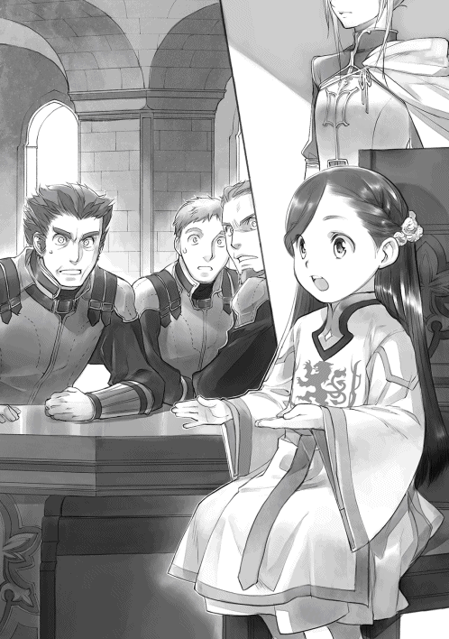
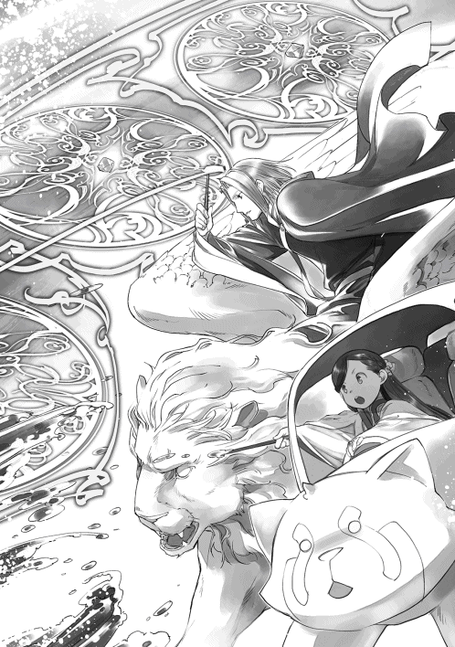

| 本好きの下剋上～司書になるためには手段を選んでいられません～第四部「貴族院の自称図書委員IV」 | |
| 香月美夜 | |
| TOブックス (2018) | |
近付く春。ローゼマインに下町組との別れを悲しんでいる暇はなかった。貴族院の一年生が終わり、やることはてんこ盛り。ルッツと約束した本を増やすことはもちろん、春を寿ぐ宴ではエーレンフェストの政略として、ヴィルフリートとの婚約を発表。上位領地への対抗策を次々に繰り出す。神官長との魔術具のインク作り、直轄地を魔力で満たす祈念式、ハルデンツェルでは図らずも古い儀式を蘇らせることに......。領地の発展を目指し、下町の大規模な整備まで実施する中、他領の暗躍も活発になっていく。雪解けに祝福を！ 領地に繁栄を！ 春の訪れに華やぐビブリア・ファンタジー！
イラスト：椎名 優 You Shiina
デザイン：ヴェイア Veia
プロローグ
大きな運命の分かれ道。それがヴィルフリートの前に現れたのは、貴族院の一年生を終えてエーレンフェストへ戻ってすぐのことだった。
今、領主執務室にいるのは、ジルヴェスターとヴィルフリート、それから騎士団長のカルステッドだけだ。お互いの側近を排した状態で父親と話をすることは滅多 にない。非常に緊張する空間でジルヴェスターが口にしたのは、ヴィルフリートと義妹ローゼマインの婚約打診だった。
「他者に左右されぬ其方 の意見を聞くために、この場を設けたのだ。其方はどのように思う？」
正直なことを言えば、何故 ローゼマインと婚約することになるのか、ヴィルフリートにはさっぱりわからなかった。ローゼマインが発信した流行により、他領からの問い合わせが大量に発生して義妹に婚約打診がいくつもあったことは知っている。「領主会議の頃にははっきりするだろう」と曖昧 に質問を流してきたのもヴィルフリート自身だ。だが、自分とローゼマインの婚約話が浮上する可能性は、ほんの少しも思い浮かばなかった。
「ローゼマインは最優秀の領主候補生だし、自分から進んで上位領地と親しくしているので、繋 がりを作るために他領へ嫁ぐものだと思っていました」
「其方の言う通り、ローゼマインが普通の女性領主候補生ならば私もそうしただろう。だが、ローゼマインを他領に出すことはできぬ」
......普通の女性領主候補生ならば......？
自分に見えていない部分があるような言葉に、ヴィルフリートはわずかな引っかかりを覚えた。二年間ユレーヴェに浸 かっていたにもかかわらず、最優秀を取るなど普通ではないと貴族院でも言われていたが、今のジルヴェスターの言葉にはそれ以上の意味があるように思える。けれど、ジルヴェスターがローゼマインをエーレンフェストから出せない理由を語り始めると、些細 な引っかかりは泡のように消えていった。
「其方も知っての通り、元々はローゼマインが神殿で行っていた個人的な事業を、私が領地に広げるために養子縁組した。ローゼマイン以上に詳しい者はおらず、この二年の時間的な損失は大きい。まだ新産業は領地に根付いていない。根付くまで少なくとも十年ほど必要になるだろう」
普通ならば洗礼式前に個人的な事業を行っている子供がいること自体を不審 に思うべきだったのかもしれない。神殿に後見人のフェルディナンドがいるのに、「ローゼマイン以上に詳しい者がいない」ことを不思議に思うべきだったのかもしれない。けれど、彼女の病的な本への執着と知識の多さを貴族院で間近に見ていたヴィルフリートは、特に疑問を感じないまま、すんなりと呑 み込んでしまった。
「今の時点で他領から婚約話が上がっているというのに、十年以上もローゼマインを結婚させないわけにはいきませんからね」
男性はまだしも、女性は二十歳を超えたら行き遅れとして後ろ指をさされるようになる。他領へ嫁 がせるつもりならば、ローゼマインは六年から七年くらい経 つとエーレンフェストを出るのだ。十年も時間はない。
「あぁ。それに、ローゼマインを上位領地へ嫁がせた場合、そちらの領地が印刷業で栄えることになるだろう。エーレンフェストとしては少々困る」
あれだけ本に執着を見せるのだ。ローゼマインが嫁いだ先で印刷業を広げることは目に見えている。嫁ぎ先がお金や人に余裕のある領地ならば、その領地の印刷業はあっという間にエーレンフェストを超えるだろう。父親が領主としてローゼマインを他領に出せないと判断することは間違いではない。ヴィルフリートも同じ判断をした。
「それに、ローゼマインはあまりにも不安要素が大きすぎる。虚弱 すぎて、子が望めるかどうかわからぬ。ユレーヴェから目覚めたばかりなので、これから少しずつ健康になっていくとフェルディナンドは言っているが、それは将来の健康を絶対的に保証するものではない」
少しずつ健康になるといっても、襲撃 を受けてユレーヴェに浸かる前から少し走っただけで意識を失ったり、雪玉に倒れたりするくらい虚弱だったのだ。普通の健康体まで回復するだろうか。他領へ第一夫人として嫁ぎ、子ができなければ女性の立場は非常に脆 いものになる。
「それから、本が絡むと後先を考えない生き方、普通の貴族では考えられない突飛 な言動......。成績だけを見れば最優秀だが、言動だけを見ればローゼマインは問題児だ。其方も貴族院で苦労しただろう？ とても外には出せぬ」
ジルヴェスターが苦笑しながらヴィルフリートに同意を求めるように肩を竦 め、ローゼマインを「問題児」と評した。
......ローゼマインが問題児......だと？
それはヴィルフリートにとって言葉にできないような衝撃だった。ローゼマインは洗礼式を終えて間もないのに、ヴィルフリートの教育が遅れていることを指摘し、自作の教育玩具を持ってきて学習計画を立てた。それから先も、神殿での役目をこなしながら領主一族としての勉強も行い、ヴィルフリートが一月 かけて学んだ部分をほんの数日で軽々と超えてきた。そして、シャルロッテを庇 ってユレーヴェに浸かり、二年間も眠っていたにもかかわらず、貴族院で最優秀を取った。
そんなローゼマインを父親が「問題児」と言う。完璧 な領主候補生で手が届かないくらいに遠い存在だと思っていたローゼマインが、一気に手の届く位置に来て驚いたような、何の傷もない完璧だと思っていたものに思わぬ傷を見つけてガッカリしたような気分が広がっていく。
......だが、思い返してみれば父上の言う通りだ。
ローゼマインは図書館や本に関しては我儘 で絶対に我慢をしないし、意見を譲らない。それに、次々と王族や上位領地と関係を結んだことが原因で社交は大変なことになっていた。最終的には領主命令で領地対抗戦や表彰式を欠席させられたのだ。領地に不利益が大きいと判断されたからだろう、とヴィルフリートは見当を付ける。
......なるほど。問題児というのか。
ヴィルフリートの中でローゼマインの印象が「手の届かない完璧な領主候補生」から「成績が良くても問題児」に書き換えられていく。それでは確かに他領へ嫁がせることはできないだろう。ヴィルフリートが納得していると、ジルヴェスターが少し表情を曇らせた。
「それに、ローゼマイン自身はこれからもエーレンフェストにいることを望むだろう。せめて、そのくらいの希望は叶 えてやりたいと思っている」
ローゼマインにはエーレンフェストにいたい理由があるらしい。それが何かわからないけれど、ヴィルフリートは特に気にならなかった。ローゼマインが他領へ嫁ぎたいと望むにもかかわらず、領地の都合で出られないならば気になったかもしれない。だが、本人がエーレンフェストにいることを望むならば何の問題もないと思った。むしろ、気になったのは別のことだ。
「ローゼマインを他領に出さない理由はわかりました。ですが、何故相手が私なのですか？」
「其方が一番適当だからだ。ローゼマインとの婚姻が可能な領主一族は、其方、フェルディナンド、メルヒオールの三人だ」
父親が挙げた名前に頷 きを返す。
......後はボニファティウス様と父上だから無理だな。
「三人の中で、洗礼式も終えておらず、春の領主会議で王の承認を得ることができぬメルヒオールは対象外だ。また、ライゼガング派の貴族がフェルディナンドを次期領主に望む今の状況では、フェルディナンドと婚約もさせられぬ」
「何故ですか？ 叔父上 も領主になれないような汚点や事情があるのですか？」
ヴィルフリートから見れば、フェルディナンドは自分が大人になっても敵 いそうにない優秀な領主一族だ。周囲から聞いた話によると、祖母であるヴェローニカは自分の血族ではない彼を嫌い、次期領主にしないように動いていたようだが、ジルヴェスターとフェルディナンドの間には特に確執 などないように見える。次期領主にしても良いのではないだろうか。
「フェルディナンドが次期領主になることに、利が見当たらない。まず、フェルディナンドには母上の執拗 な攻撃から逃れるためとはいえ、神殿へ入っていた事実がある。他領との折衝 の場では、事あるごとに神殿のことが持ち出されるはずだ」
そう言った後、ジルヴェスターは「アレは自力で何とかするかもしれぬが、余計な苦労を背負う必要はない」と顔をしかめた。神殿に入っていたことが貴族的には汚点になるらしい。
「次に、其方等の立場が今より軽んじられるようになる。領主との繋がりの深さで周囲からの扱いが変わることは避けられぬ。他領へ嫁ぐシャルロッテは、次期領主が実兄の其方になるか、私の異母弟のフェルディナンドになるかによって、嫁ぎ先での扱いが大きく変わるはずだ」
そう言われてヴィルフリートはギクリとした。弟妹の将来まで考えが及んでいなかった。確かに貴族院で出会った他領の領主候補生達に、異母兄弟と良好な関係を築いている者はほとんどいない。自分とローゼマイン、父親とフェルディナンドの仲が良好なので忘れていたが、異母兄弟は基本的に別の家族として扱われるのだ。
「それから、我々はフレーベルタークの領主夫妻と血縁関係が深い。全く血縁関係のない養女と異母弟にアウブの座を譲れば、関係悪化は避けられぬ。南隣のアーレンスバッハとの関係が良くない現状で、西隣まで敵に回すなど、今のエーレンフェストにできることではない」
領地の地図を頭に思い浮かべたヴィルフリートはぞっとした。血縁関係が深い分、こじれた時の面倒も大きくなる。ローゼマインと婚約したフェルディナンドが領主になれば、ライゼガング派の貴族は満足するかもしれないが、領地同士の関係を考えると大変なことになるだろう。
「......最後に、個人的だが、私にとって最も大きな理由だ。これまで苦労や我慢させてきたフロレンツィアを蔑 ろにすることなど、私にはできぬ」
強く望まれて第一夫人として嫁ぎ、三人の子供を産んだ。それなのに、その子供達ではなく、異母弟と養女が次期領主になれば、フロレンツィアやその子供達によほど大きな欠陥 があるように他領からは見えるだろう、とジルヴェスターは言った。
......母上が蔑ろにされるのか？
フロレンツィアはヴェローニカにいびられ、生まれたばかりの自分を取り上げられて泣き暮らしていたそうだ。ヴィルフリートはその話を聞いて、自分が思っていたよりずっと母親に愛されていたことを知ったのである。これ以上、フロレンツィアを悲しませるようなことはできない。その意見には心から賛同できる。
「ローゼマインを上級貴族に降嫁 させることも考えたが、そうすると礎 の魔術に魔力供給できなくなる。ライゼガングもうるさいだろうが、エーレンフェストにとっても大きな損失だ」
「......相手は本当に私しかいないのですね」
白の塔に入ったことで汚点を持った自分と婚約させるしかないくらい、エーレンフェスト内にはローゼマインの相手がいない。ヴィルフリートの言葉に、ジルヴェスターは微妙に表情を歪 めた。
「其方にとっては別に悪い話ではないだろう？ 母上に育てられ、白の塔の一件で汚点のついた其方は、どうしても難しい立場にいる。難しい立場の者が婚姻によって新たな後ろ盾を得て、自分の立場を改善することは珍しいことではない。ローゼマインと婚約することでフェルディナンドが次期領主に担ぎ上げられるのと同じだ」
領主一族でなくても貴族ならば、婚姻によって後ろ盾を得たり、魔力を得たり、人手を得たり、お金を得たり、新しい繋がりを得たりすることは珍しいことではない。婚姻は取り引きの一種だ。
「今は其方がどれだけ努力しても貴族達の評価は辛 いだろう。だが、婚約すれば其方は確実に次期領主の地位に戻れる。ライゼガング派の貴族はローゼマインの夫に協力するしかないからな」
ジルヴェスターは今のエーレンフェスト貴族の派閥 や状況について説明しながら、ヴィルフリートとローゼマインの婚約における利を語る。
「将来的にはエーレンフェストの貴族が旧ヴェローニカ派とライゼガング派で大きく二つに分かれている現状を改善できるはずだ。それに、次期領主にライゼガングの血を入れたいと長らく望んでいた彼等の希望が叶うのだから、多少は御 しやすくなるだろう」
ジルヴェスターが語るのは、納得できる理由や予想ばかりだ。だが、ヴィルフリートは何となくローゼマインと結婚するという将来を思い描くことができない。妙な違和感 がある。
「......ローゼマインはどう言っているのですか？」
即答を避けて、ヴィルフリートはローゼマインの反応を尋ねた。「あぁ」とジルヴェスターは苦虫を噛 み潰 したような顔になる。
「養子縁組をした時から政略結婚は織り込み済みで、城と神殿の図書室を好きにできれば構わないそうだ。他領へ嫁ぐにしても、最も重要な確認事項は蔵書数だと言っていたぞ」
自分との結婚は、図書室のおまけのようだ。ローゼマインらしいと言えば、この上なくローゼマインらしい。だが、そんなことを理由に決断されても全く嬉 しくない。
「......あの、父上。私が断ればどうするのですか？」
ヴィルフリートは意見を尋ねるために呼ばれた。最初から領主命令だとは言われなかった。つまり、他にも何か手段があるということではないだろうか。ヴィルフリートの問いかけに、今度はジルヴェスターがハッキリと表情を歪めた。
「......ローゼマインを私の第二夫人にする」
「は!? 」
言われた言葉が信じられなくてヴィルフリートも顔を歪めた。フロレンツィア以外の妻は必要ないと公言し、これまで第二夫人を娶 らなかったジルヴェスターの言葉とは思えない。
「ボニファティウスは直接の血縁なので除外されるが、私は養父でローゼマインの直接の血縁ではない。アレを他領へ出さぬために第二夫人にすることは可能だ。だが、他領からの非難は逃れられぬであろうし、フロレンツィア以外を妻にする気はないという考えに変化はない。形式だけの妻になる。......おそらく誰も幸せにならないだろう」
自分の父親が自分と同い年の義妹を第二夫人として娶ることを思い浮かべると、ヴィルフリートの中ではどうしても嫌悪感 が先に立つ。おそらくシャルロッテも平常心ではいられないだろう。「誰も幸せにならぬ」というジルヴェスターの言葉は間違いではない。
「オズヴァルト達と相談しても良いですか？ 急に婚約と言われても、よくわからなくて......」
「今ここで決めてほしかったが、仕方ないな。ローゼマインの婚約相手については春を寿 ぐ宴で貴族達に公表したいと思っている。返事はなるべく早めに頼む」
ヴィルフリートは自室に戻ると、ローゼマインと婚約をした方が良いのかどうか、側近達に相談した。自分の将来が側近達の将来に直結する。ヴィルフリートはそれを白の塔の一件で身に染 みて知っている。ならば、自分の将来の相手がローゼマインになることを側近達がどう思うのか意見を聞きたいと思ったのだ。
「ローゼマイン様との婚約打診ですか？ まだお二人ともそんな年頃ではないでしょう？」
側近達が目を丸くするのも無理はない。貴族は思春期になると、自分に近い魔力を感じ取れるようになる。それは婚姻可能な相手を探す上で非常に大事なことだ。普通は相手の魔力を感じ取れるようになってから結婚相手を決める。幼すぎる状態で婚約者を決めた場合、年頃になって魔力が釣り合わずに婚約が解消されたり、どうしても解消できない理由があって結婚したところで子供ができなかったりと弊害 が起こる可能性は高い。
「新産業が定着していないのにローゼマインを他領へ出せぬ。領地の現状と領地対抗戦の申し入れの様子を見て、春の領主会議で王の承認を得たいと父上は考えていらっしゃるようだ」
「あぁ、貴族院でずいぶんと騒がれていましたからね」
貴族院の様子を知っている側近見習い達は納得の様子を見せた。
「......女性のアウブは難しいだろうと言われていても、白の塔の一件から貴族達の間でシャルロッテ様が次期領主の最有力候補でした。けれど、ローゼマイン様と婚約すればヴィルフリート様が次期領主になれるのでは？」
「あぁ、父上もオズヴァルトと同じことをおっしゃった。ローゼマインと婚約すれば自動的にその者が次期領主になるだろう、と」
ヴィルフリートが頷いて肯定すると、側近達が目を瞬 いてお互いに顔を見合わせ始める。
「しかし、ローゼマイン様はシャルロッテ様の味方をするとおっしゃったのでは？」
「この婚約がアウブの命令であれば、養女の身では断れないだろう」
「旧ヴェローニカ派をまとめることができるのは、メルヒオール様よりヴィルフリート様です。エーレンフェストの将来のためにはヴィルフリート様が次期領主になる方が良いですよ」
側近達が口々に自分の意見を言う様子をヴィルフリートはゆっくりと見回す。どの顔も喜びが前面に出ていた。ローゼマインとの婚約話は歓迎することのようだ。
「ローゼマイン様と婚約すれば、シャルロッテ様より抜きん出ることは間違いありません。絶好の機会ですよ、ヴィルフリート様」
文官見習いのイグナーツの言葉に側近達は同意して頷くけれど、婚約によってシャルロッテより優位に立つことをヴィルフリートは少し後ろめたく思った。けれど、頭を横に振って自分の気持ちを否定し、自分に言い聞かせる。
......父上も婚姻によって不足を埋めることは珍しくないとおっしゃった。これは卑怯 な手段ではないのだ。
「ヴィルフリート様は難しいお顔をしていらっしゃいますが、この婚約打診は、今までの努力と成長をアウブに認められたということではございませんか？ ヴィルフリート様の側近も魔力圧縮の方法を教えてもらえることになりましたし......」
「ランプレヒトの言う通りです、ヴィルフリート様。白の塔の一件にも腐らずに努力を続けてきた甲斐 がありましたね」
オズヴァルトに褒 められて、ヴィルフリートはひどく嬉しくなった。今までの自分の努力が認められたのだ。何とも言えない達成感があり、全てが報われたような解放感に包まれる。ローゼマインとの婚約を前向きに考えてみようという気分になった。
「......私はローゼマインと婚約した方が良いのか？ その、将来的に夫婦になると言われても、そもそも夫婦というのがよくわからないのだが......」
「ヴィルフリート様もローゼマイン様もまだ魔力を感じ取れる年頃ではないので、実感が湧くのは先のことになるでしょう。けれど、今のヴィルフリート様のお立場を考えると、とても良いお話だと思いますよ」
「夫婦も家族ですからね。今とそれほど変わらない関係を築くことはできるでしょう」
「政略的には絶対に必要な結婚なのに、当人同士が決定的に合わないこともあるようなので、それに比べると良いのではございませんか？」
「それほど不安に思わなくても、ご両親のように仲の良い夫婦になれると思いますよ」
今はわからなくても、そのうちわかるようになると成人の側近達が言う。夫婦がどのような関係なのか、祖母に育てられたヴィルフリートには実感としてわからなかった。けれど、そういえば両親は仲の良い夫婦だった。あのようになれるのだろうか。
......うむ、それは悪くないな。
ジルヴェスターへ優しく接するフロレンツィアの様子を思い浮かべ、ヴィルフリートは一つ頷いた。シャルロッテには甘いけれど、自分には厳しいローゼマインが優しくしてくれるようになるならば婚約するのも悪くない。
「ローゼマイン様と婚約されれば、ローゼマイン様が御自分の親族であるライゼガング派の貴族を抑えてくださるでしょう。将来の統治はずいぶん楽になると思いますよ」
「なるほど。ライゼガング派の貴族はローゼマインに任せれば良いのか」
今、文句を言っている者の大半はライゼガング派の貴族だ。それをローゼマインに任せることができるらしい。側近達の意見を聞く内に、ヴィルフリートは婚約話に乗り気になってきた。前向きな気持ちで決められるのだから、やはり側近達に相談して正解だったと思う。
「ふむ......。其方等の意見はよくわかった。私はローゼマインとの婚約を受けることにする」
ヴィルフリートの決意に、側近達は喜びの声を上げた。
春を寿ぐ宴
ルッツ達との別れの後、城に戻って数日で春を寿ぐ宴だ。この宴によって冬の社交界は終わり、ギーベ達はそれぞれの土地へ戻る。春の日常が始まるのだ。
「姫様にはこちらの衣装がお似合いではございませんか？」
「春を寿ぐ宴ですから、やはりこちらの緑が望ましいと思われます」
わたしが神殿から城の自室に戻るや否 や、リヒャルダとブリュンヒルデが宴のために選んでいた衣装を二つ並べて選択を迫ってきた。衣装はもちろん、気迫の籠 もった二人の顔を交互に見たものの、わたしには正解がわからない。
......わたし、別にどっちでもいいんだけど。
二人の目のぎらつきに少しばかり怯 んでいると、リーゼレータが横からスッと髪飾りを出してきた。エグランティーヌの髪飾りと一緒にトゥーリから購入した、一番新しい髪飾りだ。
「ローゼマイン様、宴に付けられる髪飾りはこちらでよろしいですか？」
「えぇ、その新しい物を使います」
わたしが頷くと、リーゼレータが衣装を広げている二人に向かってニコリと笑った。
「この髪飾りに合わせるのでしたら、わたくしは最初にオティーリエが選んでいた衣装が一番似合うと思います。お持ちしましょうか？」
「そうですね。髪飾りは決定ですから、それに合わせて衣装を選んでくださいませ」
衣装が決まったら、靴や小物に関してもそれぞれ許可が求められる。わたしは皆が並べていくのを見て許可を出していくだけだ。基本はお任せである。
「ローゼマイン様、神殿で行われた商人との会合ではどのようなことが決まりましたか？ こちらでは印刷業に携 わる上で必要な準備に関する書類作りが終わっています」
ハルトムートがそう言いながら作成した書類を見せてくれる。ルッツ達とお別れしてきたばかりのわたしは、神殿でのやりとりを思い出して胸の痛みを感じた。その痛みから目を逸 らすようにして書類にざっと目を通す。
「ハルトムートは文官として優秀なのですね。書類には何の問題もありません。フィリーネ、これをお母様に渡す書類として文箱 に入れて管理してちょうだい」
わたしはサインをして書類をフィリーネに渡し、ハルトムートには神殿から持ち帰った文箱から別の書類を取り出して差し出した。
「ハルトムート、こちらがプランタン商会との会合をまとめたユストクスの議事録と、わたくしの意見を書いた紙です。例の特殊技能以外はユストクスを見習うと良いかもしれませんよ。とてもよくまとめられていますから」
「特殊技能は不可ですか？ なかなか便利そうだと思うのですが......」
諦 めきれないような響きのハルトムートの声にわたしは焦りを感じて却下する。
「ハルトムートはダメです。絶対にダメです」
「何故でしょう？ 情報の価値はローゼマイン様もご存じですよね？」
「似合わないからです。ユストクスは中性的な顔立ちですし、やや小柄で細身なので女装をしても違和感がありませんが、ハルトムートはどちらかというと背が高い方ではないですか。肩幅もしっかりあります。それに、まだ成長期ですよね？」
ハルトムートは冬の間にもちょっと背が伸びている。多分まだ伸びると思う。どう考えても女装できるような体型ではなくなるはずだ。
「それに、違和感のない女装は簡単にできることではありません。ユストクスは昔から自分の趣味として行うために研究に研究を重ねた筋金入りなので、発声、言葉遣い、仕草まで完璧ですが、付け焼き刃では不気味なだけです」
フェルディナンドは女装癖のある側近でも構わないのかもしれないけれど、わたしは嫌だ。ハルトムートは聖女伝説を盛り上げていこうとしたり、わたしの研究をライフワークにしたりしていて、今の時点ですでに結構変なのだからもう十分だ。
「わたくし、ハルトムートが女装などしたら側近を解任いたしますからね」
「解任は困ります。女装は諦めるしかありませんね」
肩を落としたハルトムートにわたしはホッと安堵 の息を吐 く。後ろでオティーリエとリヒャルダが同じように安堵の表情を浮かべていた。
皆がそれぞれに忙しいので、わたしは自分のやるべきことを進めていく。ルッツと約束した通りに本を増やすのだ。そのためには春から印刷する本の原稿を作っておかなければならない。貴族院で写本された参考書の原稿を見直したり、途中で止まっていた恋愛小説の続きを書いたりしていると、リーゼレータが声をかけてきた。
「ローゼマイン様、シャルロッテ様からお茶会のご招待がございました。急なことになりますが、明日の午後はいかがでしょう、と」
「お誘いを受けても側仕 え達に問題がないならば、わたくしは招待を受けたいです」
春を寿ぐ宴までは特に予定もなかったはずだ。わたしの言葉にリーゼレータが「シャルロッテ様はローゼマイン様のお帰りをずっとお待ちでしたからお喜びになりますよ。すぐにお返事をいたしましょう」と微笑 んだ。
シャルロッテのお茶会にはヴィルフリートも誘われていて、兄妹 三人でお茶会となった。よく考えてみると初めてである。手土産のお菓子も持参して、和 やかにお茶会は始まった。
「お呼び立てして申し訳ありません。今のうちに祈念式の分担をどうするのか決めておきたいのです。それによって準備も変わってまいりますから」
最初に話題に上ったのは祈念式のことだ。今年もシャルロッテとヴィルフリートはお手伝いしてくれるらしい。わたし達は領地の地図を広げながら担当区分についての話をする。
ギーベが治める土地へは青色神官が小聖杯を持って行くため、祈念式でわたし達が回るのは直轄地 だけだ。フェルディナンドも入れて四人で分担すれば非常に範囲が小さくなる。もしかしたら今年の祈念式はすぐに終わるのではないだろうか。
「わたくしは直轄地の祈念式を終えたら、グーテンベルクを連れてハルデンツェルの祈念式へ向かうことになっています。それに、ハッセの様子も確認したいと思っています。順番としては一番に、場所はハッセから東側を担当したいのですけれど......」
「ハッセの民はお姉様をとても慕 っていましたもの。小神殿の者もお姉様のお姿を見れば安心するでしょうから、お姉様は東側で良いのではございませんか」
「うむ。ローゼマインは東側だな」
直轄地の南をシャルロッテ、西をヴィルフリート、北をフェルディナンドに任せることで合意する。後でフェルディナンドから許可を得たら正式な決定だ。
「それにしても、本当に祈念式のお手伝いをしていただいてよろしいのですか？ 二人も準備が大変でしょう？」
「わたくし、すでに祈念式のための衣装を仕立ててますから、お気になさらないでくださいませ」
去年の時点でシャルロッテもわたしのサイズの衣装は着られなくなり、これからもお手伝いをすると決めた時点で祈念式用の衣装を仕立てたらしい。ヴィルフリートはもっと前に仕立てたそうだ。
「ローゼマインの衣装は花の模様が刺繍 された服だったからな。二年前の祈念式の後で、秋の収穫祭にも参加するようにと叔父上に言われた時点で仕立てたのだ」
わたしが青色巫女 見習いの頃に仕立てていた青い儀式用の衣装は、流水紋に花の刺繍が入った物だ。いくら丈をお直ししたところで、男性のヴィルフリートには不満だろう。急に決まった祈念式はともかく、その後何度も袖を通したい物ではないと思う。
「道中も大変ですけれど、大丈夫ですか？」
「神事の道中で一番大変なのは、あの薬だ。魔力も体力も回復するが、味がひどすぎる」
ヴィルフリートがものすごく嫌そうな顔で回復薬に対して文句を言った。シャルロッテも同じように何とも言えない複雑な顔で同意して頷く。
「えぇ。お姉様もあのお薬を飲んで、祈念式や収穫祭を回ったと神殿の側仕えから伺 っております。お体が弱いのにあのような苦いお薬を飲みながら神事を繰り返し、エーレンフェストのために魔力を注いで回るだなんて......。お姉様は聖女というより、もはや、女神ではないかと思いましたもの。しばらくは何を口に入れてもあのお薬の味がするでしょう？ 初めて飲んだ時は叔父様の嫌がらせかと思いましたわ」
ハァとシャルロッテが憂鬱 そうに息を吐きながら緩く頭を左右に振った。わたしはその様子を見ながら首を傾 げた。確かシャルロッテに同行していた神殿の側仕えはフランだったはずだ。フランが準備した薬は改良版だと報告を受けた。改良版を準備したのに嫌がらせと思われているフェルディナンドに苦笑しつつ、わたしは真実を教えてあげることにする。
「嫌がらせではありませんよ。二人が飲んだお薬はフェルディナンド様の気遣いと優しさの固まりです。あれでも最初に比べるとずいぶんと飲みやすくなったのですよ」
「あれが気遣いと優しさの固まり、だと？」
ひくっと頬 を引きつらせてわたしを見た二人に「原液はもっとひどい味です。効果は比べ物になりませんけれど」とニコリと笑って頷くと、尊敬の眼差 しで見つめられた。
少しの間、激マズ薬の話をした後、シャルロッテが何だか思い詰めたような顔で口を閉ざして一度俯 き、それから、顔を上げて藍 色の瞳でわたしをじっと見つめる。
「......お姉様、お兄様とご婚約なさるというお話は本当ですの？ わたくし、先日の夕食の席でお父様から伺ってとても驚いたのです」
シャルロッテにそう問われ、わたしはコクリと頷いた。
「アウブ・エーレンフェストが冗談でそのようなことを言うわけがないでしょう？ 本当のことです。領地のためには一番良い選択なのですって」
領地内の派閥をまとめ、わたしが図書室を獲得し、エーレンフェストで作られる本を確実に手に入れるためには最良の選択なのである。
......他領へ嫁ぐことになれば下町の皆とも離れることになっちゃうし......。
シャルロッテは少し顔を曇らせながら、そっとお茶のカップを手に取った。
「......お姉様はわたくしの味方をしてくださると伺っていたので驚いたのです」
「わたくしはシャルロッテのお姉様ですもの。いつでも味方ですよ。頼ってくださいね」
わたしが胸を張ると、シャルロッテは「仕方がない」とか「そういうことか」と言いたげな表情で諦めの溜息 を吐いた。そして、一度視線をヴィルフリートに向けた後、わたしを見つめる。
「わたくし、何だかお姉様が心配でなりません」
......あれ？ 頼っていいよって言ったのに、なんで心配されてるの？
「婚約も、お父様やお兄様に騙 されていませんか？ たとえ本を買ってくださると言われても、つられてはなりませんよ」
本につられて婚約したのではないかと心配そうなシャルロッテに「図書室をもらう約束をしました」とはとても言えない。わたしは思わず笑って誤魔化 そうとしたけれど、その前にヴィルフリートがムッとしたようにシャルロッテへ視線を向けた。
「シャルロッテ、私はローゼマインを騙していないぞ。私とて婚約話を聞かされたのは先日だ。ローゼマインはシャルロッテの味方だと聞いていたから私も驚いた。まさか私との婚約に同意するとは考えてもいなかったからな」
二人のやりとりを聞いて、やっとわたしは「味方」が何を指すのかを悟った。それぞれが次期領主となるための後援を示していたらしい。
「......ヴィルフリート兄様はわたくしと婚約することを承諾 なさったのですか？」
「うむ。兄妹も夫婦も家族だから似たようなものだ。そのように皆が言っていた。今と大して変わらぬならば良かろう。......それに、其方がいるかいないかでずいぶん違うらしいからな」
最後は少しばかり後ろめたそうにシャルロッテを見ながら付け加える。
ライゼガングを中心にわたしを次期領主に押し上げようとする勢力ができているとフェルディナンドから聞いた。エーレンフェストでも最大の土地を持つ上級貴族が動いているならば、ヴィルフリートの側近達もそれを知っているはずだ。派閥の分裂を避けてエーレンフェストをまとめ、ヴィルフリートの汚点を拭うためにわたしとの婚約を成立させようとするのは、ヴィルフリート本人ではなく、むしろ、周囲の者達に違いない。
......ヴィルフリート兄様自身が納得していないと意味がないんだけど。
わたしは最初から政略結婚が決まっていたようなものだ。だから、図書室が付いてくるだけ得だと思えるけれど、ヴィルフリートとわたしでは育ちも立場も違う。
「周囲に流されるのではなく、ヴィルフリート兄様がよく考えて、ご自分でお決めになったのでしたら、わたくしは良いと思いますよ」
「其方は良いのか？」
「えぇ、もちろんです」
お茶会の次の日には、春を寿ぐ宴が開かれた。この宴は冬の社交界の終わりなので、基本的に全ての貴族が揃 う場になる。
フェルディナンドから「なるべくギリギリに会場入りするように」と言われていたわたしは、ヴィルフリートやシャルロッテと大広間に最も近い部屋でしばらく待機していた。リヒャルダの合図によって三人で入場する。そうは言っても、三人それぞれが自分の側近を連れているので、結構大きな団体だ。
大広間の貴族達は身分によって大体の位置が決まっていて、舞台に近い前方は上級貴族、出入り口に近い後方は下級貴族が集まる形になる。大勢の貴族が集まっている中を、わたし達はぞろぞろと最前列に向かって歩いていく。
下級貴族のフィリーネはわたしの側近になったので、今回の宴で初めて上級貴族のいる前へやってくることになった。何とか顔を上げて毅然 とした態度を取ろうとしているが、顔は強張 っているし、足も震えているのがわかる。
同じく下級貴族のダームエルが緊張しきったフィリーネの様子に苦笑しながら、少し立ち位置を変えた。周囲の貴族からフィリーネが少し見えにくい位置だ。そういえばダームエルの時はブリギッテがそうしてダームエルに向かう視線を少し減らしていたことを思い出した。
「私も同じ体験をしたからわかるが、慣れるしかない」
「......頑張ります」
ダームエルの言葉にフィリーネが弾 かれたように振り返った後、少し安心したように笑った。
......うんうん、一緒に働く皆の仲が良いのは嬉しいね。
領主の子であるわたし達に挨拶をしようと貴族達が近付いてくる。けれど、貴族達が挨拶するより先に領主夫妻が入場してきた。フェルディナンドから言われていた通り、貴族達に囲まれずに済んでホッとする。
ジルヴェスターが壇上 でぐるりと大広間の中を見回して口を開いた。
「水の女神フリュートレーネの清らかなる流れに、命の神エーヴィリーベは押し流され、土の女神ゲドゥルリーヒは救い出された。雪解けに祝福を！」
ジルヴェスターのそんな言葉と共に、春を寿ぐ宴は始まる。
「まず、今年の優秀者の発表を行う。五名という多くの学生が優秀な成績を収めた」
称賛 の声が上がり、拍手が起こる。最優秀を取ったのはわたしだけだったようだが、ヴィルフリート、レオノーレ、コルネリウス、ハルトムートが優秀者として舞台へ上がるように言われた。
「よくやった、ローゼマイン。これは記念品だ。これからの其方に役立ててほしい」
そう言って笑うジルヴェスターからわたしは記念品を受け取った。比較的大きな魔石だ。すごいと思いながら見ていると、他の者も同じように魔石をもらっているのが見える。
「これからのエーレンフェストを担う者に優秀な者が多いのは、実に喜ばしいことである。皆が切磋琢磨 して、更に優秀な成績を収めるように。貴族院の表彰式で指摘があった通り、講義を終える早さだけではなく点数も考慮することを今後の課題とせよ」
成績優秀者の発表はそんな言葉で締めくくられた。合格点すれすれで試験を終える者が多かったため、講義を終える早さだけではなく点数も考慮するように、と貴族院で注意されたらしい。来年の課題になりそうだ。元の位置に戻り、わたしは優秀者の顔ぶれを見回して感嘆 の溜息を吐く。
「......わたくしの側近はとても優秀なのですね」
「優秀にならざるを得ないのですよ」
コルネリウスが呆 れたような顔になった。主 であるわたしが真っ先に講義を終えて図書館通いをするのだ。護衛騎士も文官も手が空いている者が入れ代わり立ち代わり付き従うことになる。わたしの図書館通いが一日で終わるならば必死になる必要もないが、わたしはずっと図書館に籠もる。そうすると、なるべく早く講義を終えられるように側近も必死にならざるを得ないそうだ。
「それに、主であるローゼマイン様が優秀なのに側近は......と周囲に言わせるわけには参りません。主に相応 しい側近であるため、必然的に努力することになります」
ハルトムートは誇らしそうにわたしを見た。レオノーレも「釣り合いが大事ですから」と微笑む。
「今年は成績向上委員会のおかげでコース毎 の連帯が深まり、質問しやすい雰囲気になったのも良かったのですよ」
「......そういえば、成績向上委員会の勝者は騎士コースで良いのかしら？」
最速でチーム全員が試験合格したチームと最も優秀者が多かったチームにカトルカールのレシピを進呈 すると約束した。最速で講義を終わらせたのは間違いなく一年生だが、優秀者を多く輩出したのも、わたしが最優秀を取ったので一年生になってしまう。次点で騎士コースだ。
「騎士コースで良いのではございませんか？ 来年は文官コースが取りますから。すでに参考書の準備はできています」
涼しい顔でハルトムートにそう言われて、対抗心がもたげてくる。わたしはむむっと唇を尖 らせてハルトムートを見上げた。
「来年の二年生も準備は終わっているのですよ。簡単に勝てると思われては困ります」
「そうですわ。今年は準備が足りていませんでしたけれど、来年は側仕えコースが取ってみせます。準備を万端に整えるのは、側仕えの得意とするところですもの」
優秀者を一人も出すことなく終わった側仕えコースのブリュンヒルデが、「来年こそは」と奮起 している。座学は悪くなかったので、来年は実技に精を出すようだ。
「張り切っているところ残念だが、来年も騎士コースが取ります。ヴィルフリート様の護衛騎士見習いが魔力圧縮を行うようになり、おじい様の特訓を受けるのです。それに、アンゲリカが卒業しました。これは大きいです」
コルネリウスの勝ち誇った顔にハルトムートが真顔で「アンゲリカの卒業は痛い」と呟 いた。そういえば騎士コースのハンディキャップとしてアンゲリカからシュティンルークを取り上げるように進言したのはハルトムートだった。
「来年が楽しみですね。フフッ」
側近達とのそんなやり取りの結果、成績向上委員会からの賞品であるカトルカールのレシピは、一年生と騎士コースに配られることに決まった。
優秀者が発表された後は、貴族院における領地の成績発表が行われる。領地対抗戦のディッターでは十一位だったそうだ。これまでが十四位だったので、かなり成長したと言える。
「ディッターで更に良い成績を上げられるよう、この春からは騎士見習いの教育をボニファティウスが主導で行うことになった。皆、励むように」
文官見習いの研究発表は、寮監 であるヒルシュールが主導した王族の遺物に関する発表やわたしと同じ乗り込み型の騎獣 、紋章付きのシュタープが注目を集めたことが述べられた。領地対抗戦における側仕え達の歓待は、まずまずの評価が得られたらしい。例年は評価する者が少ないという状況だったので、これから更に向上できるだろうとジルヴェスターは言った。
全体的な成績が向上していることに加えて、リンシャン、髪飾り、カトルカールが貴族院での流行になりつつあり、他領の領主から取り引きについて話が来ている。それらを加味したエーレンフェストの総合的な順位については領主会議で教えられるそうだ。
「今年はエーレンフェストよりいくつもの流行を発信した。これからは印刷された本も少しずつ広げていくつもりだ。そのための協力を求む」
最後に、貴族院を卒業した新成人のお披露目 と、見習いではなく正式に働くことになる彼等の配属発表が行われる。アンゲリカも壇上に上がった。これからアンゲリカは護衛騎士「見習い」ではなくなり、貴族街以外の場所にも同行することができるのだ。
春を寿ぐ宴もこれで終わりだと周囲の空気が緩んだところで、ジルヴェスターが「エーレンフェストの将来に関わる重大な発表がある」と声を上げた。「何が始まるのか」と大広間にざわめきが広がる中、壇上にいるジルヴェスターが軽く手を動かす。わたしとヴィルフリートへの指示だ。
「行くぞ、ローゼマイン」
ヴィルフリートにエスコートされて、わたしはゆっくりと舞台に上がる。大広間中の注目を集める中、わたしは壇の上から集まっている貴族達を見回した。
ボニファティウスが何だか怖い。歯を食いしばってギリギリしているような顔をしている。エルヴィーラは目を輝かせていて、何だか華やいだ雰囲気に見えた。きっと脳内ではわたしとヴィルフリートの恋愛小説ができているに違いない。フェルディナンドはいつも通りの無表情で静かに周囲の様子を探っている。ユストクスやエックハルトも同じだ。
フェルディナンドの視線の先には信じられないというように軽く目を見張ったライゼガング伯爵 がいて、ユストクスの視線の先にはダールドルフ子爵夫人がいる。エックハルトが警戒 しているのは、また別の男性だった。着ている衣装から察すると、どこかのギーベではないかと思う。
......誰だろう？
わたしがよく見ようと目を凝らした時、ジルヴェスターの朗々 とした声が響き渡った。
「高く亭亭 たる大空を司 る最高神、闇と光の夫婦神のお導きにより、今ここに時の女神ドレッファングーアの紡ぐ糸は重なった。我が子ヴィルフリートとローゼマインの出会いに祈りと感謝を捧 げ、聖なる御加護 を賜 らん」
婚約発表の定型句だが、大半の貴族が理解できないという顔をしている。あまりにも彼等にとって予想外の発表だったからだろう。数秒の沈黙の後、大広間の中が一斉にざわめいた。周囲を見回し合い、並んで立っているわたしとヴィルフリートを見ている。
彼等の驚愕 の表情が壇上からはよく見えた。大広間をぐるりと見渡す限り、喜びの声を上げている者は少ない。「何故だ!? 」という声があちらこちらから上がっていた。ライゼガング伯爵は大きく目を見開き、ダールドルフ子爵夫人は口元を押さえている。エックハルトが見ていた男性だけは皆が驚いている中、一人ほとんど表情を動かさずにいた。それが何故かとても目立って見える。ほんの一瞬、目が合った気がした。
「領主会議で王より二人の婚約の承認を得る。以上だ」
貴族達の間に波紋を投げかけて、春を寿ぐ宴は終わりを告げた。
文官との顔合わせ
春を寿ぐ宴の最後に発表されたわたし達の婚約によって、エーレンフェストの貴族社会は蜂の巣をつついたような騒ぎとなった。当然だろう。冬の社交界でわたしを次期領主に押し上げようと考えていたライゼガングを中心とした貴族達にとっては、一冬 をかけて集めた情報が霧散 したも同然だ。婚約で何がどのように変わるのか、また情報を集め直さなければならない。
わたしを快 く思っていない旧ヴェローニカ派の貴族達にとっては、わたしが将来的にエーレンフェストの中枢に深く関わることが決定したことになる。これからどのように動くのか話し合わなくてはならないだろう。
朝食を終えた頃には、わたしの元へ緊急と記された大量の面会依頼が届き、側仕え達が右往左往し始めた。どれだけの重要人物からどれだけの依頼をもらっても、わたしは応じることができない。保護者達から関わることを止められているのだ。
「わたくし、どのように対応すれば良いのか、まず、養父様 に伺わなくてはなりません。面会は全てお断りしてくださいませ」
「姫様、簡単にお断りできる相手ばかりではございませんよ」
リヒャルダは差出人の名前をずらりと並べた。フェルディナンドから「ローゼマイン派になっている」と評された親戚関係の名前がたくさんある。尚更 、面会の前に打ち合わせが必要だ。
「姫様、次々と面会予約をお断りする中で、本当に文官の顔合わせを行うのですか？」
春を寿ぐ宴が終わると、貴族達は自分達の土地へと順次戻っていく。その前に印刷業に関わる文官やギーベから選出された代官との顔合わせをしておかなければならない。だが、宴の翌日に顔合わせの予定を入れたのは、わたしではない。
「それはわたくしではなく、フェルディナンド様やお母様に尋ねてくださいませ」
わたしはオルドナンツを飛ばして、対処をフェルディナンドに丸投げすることにした。
「フェルディナンド様、どうしたらいいですか？」
戻ってきた回答は「文官との顔合わせを終えたら神殿に戻る」というものだった。神殿では平民達の冬の成人式と春の洗礼式が行われる。二年振りに復活したわたしは、神殿長として神事をこなさなくてはならない。
......面倒事から逃げられてラッキーなんて思ってないよ。わたし、神殿長だからね。仕方ないよね。いやっふぅ！
「わたくし、フェルディナンド様のおっしゃる通り、本日の顔合わせが終わったら神殿へ戻ります。面会は残念ながらできません。本当に心苦しいのですけれど......」
「姫様。そうおっしゃるならば、もう少し残念そうな顔をしてくださいませ」
リヒャルダは苦笑気味にそう言った後、ブリュンヒルデとオティーリエに面会依頼を断る仕事を任せた。身分が上の者、また、親族からの断りの方が、貴族には受け入れられやすいらしい。
「リーゼレータはわたくしと一緒に姫様のお支度を。しばらくはわたくしも同行しますが、いずれ印刷業の会合の場に出る仕事は貴女 に任せますからね」
「わたくしですか？」
「えぇ。印刷業や製紙業に関わる文官は、中級から下級貴族が多いと伺っております。上司ならばともかく、上級貴族の側仕えがいると周囲が緊張してお仕事が捗 りません」
リヒャルダの言葉にリーゼレータは納得したように頷き、少し緊張した顔で支度を始めた。
ちなみに、今日の会合にわたしは文官見習いとして出陣することになっている。文官見習いとして経験を積まなければ、文官になれないからだ。文官になれなければ、司書にはなれない。大事な下積みである。
実は、どうせ実習をするのならば城の図書室に勤務したいとフェルディナンドに希望を出したのだが、「馬鹿者」と怒られた。トントンとこめかみを叩 きながら、「印刷業を広げる事業の責任者が何を言っている？ 君の実習の配属先は製紙業と印刷業だ」と言われたのである。
......ルッツとも約束したし、わたし、全力で製紙業と印刷業を育てていきたいと思います！
「フィリーネ、一緒に頑張りましょうね」
「はい、ローゼマイン様」
同じく文官として初出勤になるフィリーネに笑いかけると、緊張で強張った顔のままフィリーネは頷いた。フィリーネが城で生活するようになったため、接する時間が増えて以前より距離が少し近くなった気がする。
「ハルトムートはわたくしの側近になる前、別の部署で見習い仕事をしていたのでしょう？ わたくしにも色々と教えてくださいね」
「教えられることがあれば何なりと。......ただ、製紙業や印刷業に関して私が教えられるようなことは特にないと思います。むしろ、私が教えを乞 う立場になるのではないでしょうか」
ハルトムートが文官仕事に浮かれているわたしを見て苦笑した。
文官はハルトムートとフィリーネ、側仕えはリヒャルダとリーゼレータ、護衛騎士はダームエル、アンゲリカ、ユーディットを連れていく。コルネリウス、レオノーレ、ブリュンヒルデには会議の間に情報収集を頼んでおいた。三人ともライゼガングの親戚筋なので、城の中に放っておけばあちらから近付いてくる可能性が高い。
レッサーバスで本館へ移動し、顔合わせが行われる部屋へ入ると、すでにエルヴィーラが来ていた。いつものような豪華な衣装ではなく、仕事をすることを重視し、それほど袖がひらひらとしていない文官のお仕着せを身にまとっている。書類を眺めている姿勢とその横顔のキリッとした雰囲気から、できる女のオーラが漂っていて、わたしは感嘆の溜息を吐いた。
「お母様」
「ここではエルヴィーラと呼ばなければなりませんよ、ローゼマイン様」
「失礼いたしました。エルヴィーラ、今日の予定に変更はございませんか？」
今回は顔合わせとこれからの予定についての説明をし、グーテンベルクの移動、製紙業を教えるための灰色神官達の移動時期について話し合うことになっている。
「特に変更点はないと思います」
貴族街の文官達は、印刷業だけではなく下町の整備を含めてギルド長やプランタン商会と話をすることになっている。各ギーベから派遣されてきた文官達は、グーテンベルクの受け入れ態勢を整えなければならない。どちらの文官もかなり忙しくなることだけは確実だ。
「下町の者との会合は神殿で行うので間違いございませんか？」
「城で行った方が良い場合もあるでしょうから、絶対に神殿と決める必要はないと思っています。ただ、下町の者にとっては城よりも近付きやすい場所ですし、文官にとっても完全に下町に下りることに比べると妥協 できる場所ではないかと思ったのです」
「一度神殿を訪れてみれば悪い場所ではないとわかるのですけれど、その一度が大きいでしょうね。貴族にとってあまり良い印象があるところではありませんから」
エルヴィーラが呟き、その後、一枚の紙を取り出した。
「ところで、ローゼマイン様。こちらの納本制度の導入というのは何でしょう？」
「そちらに記しているように、出版物をエーレンフェストの図書室に納入することを印刷協会に義務づける制度のことです。アウブからの許可はすでにいただいています」
印刷物の全てを集める納本制度。印刷業を広げる上で、これは最も大事な制度だとわたしは思う。
「その時その時の生活や文化が大きく反映される本は、文化を記した宝物なのです。そう、エーレンフェストの貴重な財産。そんな本を集めて整理し、保存するのは、領主の子であるわたくしの義務ではありませんか」
熱を込めた主張に側近達がポカンとした顔をしているのが目に映ったけれど、わたしの口は止まらない。止められない。ここでエルヴィーラに納本制度を否定されたり、却下されたりしては困る。
「いずれは、『全国書誌』を作成するつもりですし、導入しておけば、『著作権』の登録を行うことも比較的容易にできるようになりますし、わたくしはするつもりがないのですけれど、検閲 を行うこともできるようになります。網羅 的収集のためには義務的な納本制度が絶対に必要なのです！」
グッと胸を張って自信たっぷりに言い切ると、エルヴィーラは頬に片方の手を当てて軽く息を吐き、もう片方の手で書類の一部分を指差した。
「その部分は理解できました。有用性があることも認めます。わたくしが理解できないのは、エーレンフェストの図書室だけではなく、エーレンフェストの聖女への納本が義務付けられているのが何故かということです」
......ルッツの負担を減らすためです。
ルッツは作られた本を全てわたしに届けてくれると言ったけれど、ギーベが主導で始めた印刷工房にいちいち取りに行くのは無理だし、毎回取りに行けば「何のために......」と言われるだろう。本の一冊一冊が高いのに、わたしのために本を工房から集めて回るのは難しい。
だったら、わたしがルッツのところへ自動的に本が集まるような制度を作ってしまえば良い。納本制度を導入すれば、自動的に本はプランタン商会が協会長を務める印刷協会に集まってくるはずだ。ルッツは集まった本をわたしに納める。わたしは受け取ってそれを読む。
......完璧じゃない？
「今、印刷が行われているのは自分の工房とハルデンツェルの工房だけなので、全ての本が献上 されています。けれど、印刷が広がり始めると、献上されない土地も出てくると思うのです。わたくしは自分が本を読むために印刷業を始めました。自分が広げた印刷業で作られた本ならば、全て集めるのが普通ではありませんか」
「普通でしょうか？」
エルヴィーラが疑わしそうにわたしを見たけれど、わたしは笑顔で頷いた。これから作られる全ての本はわたしの物であるべきだ。わたしは自分の夢を最高の形で手に入れるためには、権力を使ったごり押しさえも辞さない。
「普通なのです。ですから、印刷協会に納本制度を導入し、自動的に手元に集まってくるようにすれば良いと考えました。それに、途中から導入すると反発も出ますが、最初から導入されていれば、印刷業が他領へ広がっても当たり前のこととして受け入れられるでしょう？」
「ローゼマイン様の優秀さを別の方向に使えれば、と頭を抱えていたフェルディナンド様のお言葉を心から実感いたしました」
エルヴィーラと話をしていると、ヴィルフリートとシャルロッテが側近を連れて入ってきた。
「何の話をしていたのだ？」
「平民である商人達との話し合いの場所と納本制度についてです。話し合いは基本的に神殿で行うことになりそうですね」
二人の側近の文官達は一瞬嫌そうに顔をしかめたけれど、ヴィルフリートとシャルロッテは軽く頷いただけだった。
「下町へ向かうのは無理でしょうけれど、神殿ならば良いのではございませんか？」
「神殿は変な臭いもしないし、おいしいお菓子が出るので私は構わぬぞ」
祈念式や収穫祭で必ず寄るところなので、二人にとっては馴染 みがある場所になっているらしい。貴族達が忌避 して、領主一族には馴染みがあるというあべこべさに少し笑いそうになった。
「では、わたくしからヴィルフリート様とシャルロッテ様にお仕事の内容をご説明いたしますね」
エルヴィーラが二人に任せる仕事について説明していく。シャルロッテとその側近には下町から上がってくる改善点や要望など、下級文官がまとめたものを確認し、アウブ・エーレンフェストの許可が必要な物に関しては許可をもらってくるというように、城での仕事を任せる。
ヴィルフリートとその側近には製紙業や印刷業を始めるための準備ができたという連絡が届いた時に、現地へ向かってその最終確認を行ってもらう。
「......どうしてお兄様が最終確認に向かうのですか？」
「ヴィルフリート様がすでに騎獣を持っているからです。馬車でゆっくりと向かう余裕はございません。それに、領主一族の確認が入るとなれば、あちらも真剣に仕事をします」
ヴィルフリート達の確認で問題ないとされれば、わたしがレッサーバスでグーテンベルクを現地に運ぶのだ。
「大量の人や荷物を載せる騎獣は、今のところローゼマイン様しか使えません。ですから、グーテンベルクの移動はローゼマイン様にお任せいたします」
「エルヴィーラ、其方、ローゼマイン様に平民を運ばせると言うのですか!? 」
ヴィルフリートとシャルロッテの側近がぎょっとしたように目を剥 いた。
「えぇ。わたくしも驚きましたけれど、ローゼマイン様はこれまでそのようにしてきたそうです。時間効率を重視するならば、今のままで構わないと考えました。ローゼマイン様がグーテンベルクを運んで回るのも、エーレンフェスト内に印刷業が広がるまでの期間ですから」
ある程度印刷業が広がれば、近くの土地から教師役を派遣してもらうことになっている。グーテンベルクが領地内を飛び回るのは初期だけだ。
三の鐘が鳴り始めると、ぞろぞろと文官達が入ってきた。平民とある程度話ができることを前提に集められた貴族街の文官達は三名。全員がグスタフに推薦された者だ。わたしが顔を知っているのは、ダームエルの兄であるヘンリックだけだったが、温厚そうな顔ぶれが並んでいることにちょっとだけ安堵する。
続いて入ってきたのは、印刷業や製紙業に関心があるギーベが送り込んできた文官達だ。わたし、ヴィルフリート、シャルロッテとその側近達がずらりと並ぶ様子を見て、顔を引きつらせる。普段は田舎 で平民や気心知れた貴族と仕事をしている者達には驚きのメンバーだろう。
「おかけになって」
エルヴィーラが席を勧め、皆が席に着いたところで印刷業と製紙業に関わる者達の顔合わせと打ち合わせの開始が宣言された。最初に自己紹介がされる。わたしは名前と所属とその特徴を書き留めながら、祈念式の時にもう一度会うことになるハルデンツェルの代官の顔を覚える。
代官達にはハルトムートが作成した資料を配り、グーテンベルクを招く前にしておく準備をエルヴィーラが説明する。平民達との交渉が多いことやハルデンツェルで起こった小さな諍 い、上手く進める方法などを付け加えて貴族視点で話をしていた。わたしにはできない芸当である。
「ローゼマイン様のグーテンベルクにはエーレンフェストの街での仕事もあります。時間を無駄にすることがないように、できるだけ準備は徹底しておいてくださいませ」
代官達への説明が終わると、下町との連絡を取りもつ下級文官達への注意事項が述べられる。
「下町の平民達との打ち合わせは、できるだけ神殿で行うことになります」
驚いた顔をした文官達に、領主一族であるわたしやフェルディナンドが生活している場であること、神事の手伝いでヴィルフリートやシャルロッテも出入りしていることを付け加え、できるだけ忌避感を少なくしておいた。
「領主会議の後には他領の商人が多く出入りするようになります。他領から侮 られないように、街の整備もしなければなりません。商業ギルドのギルド長であるグスタフに基本は任せますが、下町だけの問題ではなく、他領の貴族にはわたくし達の整備が足りないと思われるということを念頭 に置いてくださいませ」
「準備が終わった代官はシャルロッテ様にオルドナンツで連絡してください。その連絡のあった順番や時期をシャルロッテ様が調整し、ヴィルフリート様が視察に参ります。それで問題がなければ、ローゼマイン様が騎獣でグーテンベルクを連れて行きます」
やはり領主の子であるわたしの騎獣で平民を運ぶということには驚かれたけれど、わたしはグーテンベルクの騎獣移動を止 めるつもりはない。
「平民を運ぶことに難色を示す方もいらっしゃるようですけれど、わたくしが運んででも効率を上げなければならないほど、製紙業や印刷業を広げることはエーレンフェストにとって急務で重要な仕事なのです。皆様にはそれだけ重要な新事業に関わっているという自覚を強く持っていただきたいと思います」
煽 るだけ煽った話し合いが終わると、わたしはヴィルフリートとシャルロッテと一緒に周りを側近に囲まれたまま北の離れへ移動する。
「ローゼマイン、其方のところにも面会依頼が山のように来ているのではないか？ 誰と面会するのか決まっているのか？」
ヴィルフリートのところにも面会依頼は多く、側仕えはその対処に追われているらしい。
「面会依頼はたくさん届いていますけれど、わたくしは冬の成人式と春の洗礼式のために、この後すぐに神殿へ向かわなければなりません。貴族の皆様への対応は養父様と養母様 、それから、婚約者であるヴィルフリート兄様にお任せいたしますね」
「ローゼマイン!? 」
「頼りにしておりましてよ、婚約者様」
わたしがヴィルフリートに丸投げするのを見ていたシャルロッテが、堪 えきれなかったように口元を押さえてクスクスと笑う。
「お姉様の神殿でのお勤めを邪魔するわけにはまいりませんもの。お兄様、しっかりなさって。あまり大変でしたら、わたくしが手伝って差し上げてもよろしくてよ」
シャルロッテが悪戯 っぽく笑うと、ヴィルフリートはムッとしたように口をへの字にした。
「自分でする」
自室に到着すると、すぐに神殿へ戻る準備だ。すでにオティーリエとブリュンヒルデが荷物をまとめて、専属料理人や専属楽師に連絡を入れてくれたらしい。
「おそらく十日ほどで戻りますから、留守をお願いいたしますね。何かあればオルドナンツを飛ばしてくださいませ」
「ローゼマイン様、私も神殿へ御伴 いたします。儀式では祝福なさるのでしょう？ ぜひとも拝見したいです」
ハルトムートは橙 の目を輝かせてそう言ったけれど、残念ながら神殿への同行を許されるようになっても礼拝室に入ることはできない。
「神事には神殿関係者以外立ち入り禁止です。護衛騎士でさえ、礼拝室や儀式の間には入れないのですから、ハルトムートも入れませんよ」
「そんな。私は一体どうすれば......」
「お仕事をすれば良いと思いますよ」
忙しくしてショックが少しでも和らぐように、ハルトムートには大量の仕事を残しておいてあげようと思う。わたしはとても側近思いな主なのだ。ハルトムートには印刷業の上司となるエルヴィーラへプランタン商会やギルド長からの報告書を渡しておくことと、フィリーネの教育を任せることを告げた。
「フィリーネはこれまでの製紙業や印刷業での利益についてまとめられた書類の準備をしておいてくださいね」
「わたくし、まだ書類の書き方がよくわかっていなくて......」
「大丈夫です。ハルトムートが教えてくれます。ね？」
「それくらいならば問題ありません」
ハルトムートは苦笑混じりに承諾してくれた。大量の仕事を積み上げたつもりでも、さらりとこなしてしまうハルトムートは侮れない。
文官達への仕事の割り振りを終えると、わたしは側近達を見回した。
「これは城に残る皆にお願いしたいのですけれど、城内の貴族の声を拾っておいてください。大人と子供、男女、側仕え、文官、騎士ではそれぞれ集められる情報も違うでしょうから」
「かしこまりました」
ほどなくフェルディナンドから「準備はできたか」というオルドナンツが飛んできた。「完了です」と答えると、わたしはダームエルとアンゲリカ、フーゴとエラ、それから、ロジーナを連れて神殿へ戻った。
「おかえりなさいませ、ローゼマイン様」
フランとモニカが出迎えてくれる。陰謀 が渦巻くとまではいかないけれど、ピリピリとした雰囲気の城にいるよりも神殿の方がずっと気が楽だ。
「神官長、わたくしが書いた小説をこの春から印刷したいと考えているのですけれど、問題ないか確認していただいてもよろしいですか？」
わたしの知っている話を下敷きに、エルヴィーラの貴族院物語を真似て恋愛小説を書いてみた。けれど、シンデレラが却下されたくらいだ。こちらの常識に合っているのか、チェックしてもらわなければならない。
「あぁ、確認しておこう」
春から参考書も印刷してもらうつもりだが、売りに出す予定はない。そのため、すぐに売れそうな本も必要になる。エルヴィーラの恋愛小説が貴族女性に受けているならば、わたしも便乗 しておこうと思ったのだ。
わたしはフェルディナンドに原稿を渡すと、自室に入り、側仕え達の報告を聞いていく。
「フーゴとエラの結婚に関する話ですが、やはり神殿に夫婦の部屋を作ることはできません」
「そうですか。では、神殿にいる間は別室で過ごしてもらうか、下町に部屋を準備して通ってもらうしかありませんね」
ザームを労 いながらわたしはフーゴとエラの結婚について細かいところを決めていく。そこへフランが急ぎ足でやってきた。
「ローゼマイン様、神官長がいらっしゃいました。先程お渡しした原稿の件でお話があるそうです」
入室許可を出すと、何とも苦い顔のフェルディナンドが早足で部屋に入ってきた。無言で原稿をわたしの執務机にバサリと置いて、その横にコトリと盗聴防止の魔術具を置く。
......決定的にダメだったっぽい。
何も言われなくても没を食らったのだけはよくわかった。盗聴防止の魔術具を出してくれるということは、その理由をじっくりと教えてくれる気になっているということだろう。
わたしは盗聴防止の魔術具を握り込んだ。フランが準備した椅子にフェルディナンドが座って、わたしと視線を合わせる。
「ローゼマイン、破廉恥 にも程があるぞ。こんなものを君の名で印刷するなどとんでもない！」
「は、破廉恥!? どこがですか!? 」
わたしはフェルディナンドと自分が書いた原稿を見比べる。エルヴィーラが書いていた貴族院の恋愛話を元に、立場の違いですれ違い、最終的に結ばれる恋愛小説だ。視線が合ってドキドキ、手が触れて赤面、意中の相手に仲の良い女子が出てきて心がズキズキ、最終的には想いが通じ合ってキスシーンで終わる、実に少女小説らしいお話に仕上がったはずなのに、破廉恥呼ばわりされてしまった。お嬢様相手の小説なので、過激な表現など全く使っていないはずなのに意味がわからない。
「主役二人が触れ合う場面、全体的に、だ！ 何故このように卑猥 な表現をするのか理解に苦しむ。君は本当にエルヴィーラの本を参考にしたのか？」
「参考にしました。貴族院物語を元にしています」
わたしはフェルディナンドに貴族院物語を突きつけて主張した。ちなみに、イラストはフェルディナンド以外の顔の本である。
フェルディナンドがエルヴィーラの本をパラパラと流し読みして、あるページを開き、わたしに向かって差し出した。
「君が参考にするべきはここだ」
フェルディナンドが示したのは、三ページに渡って神様を称 える詩が出てくるところだった。いまいち意味がわからなくて、わたしが流し読みしたところだ。
「二人の触れ合いを書くならば、これを参考にしなさい」
眉間 にくっきりと皺 を刻んだフェルディナンドによると、ちょっとしたやりとりのときめきシーンが全部ダメらしい。エルヴィーラの小説にはやたら神様を称える詩が出てくると思ったら、その部分がラブシーンだったのだそうだ。
......インド映画か!?
男女が出てきて見つめ合ったかと思えば、いきなり群舞のコール・ドが湧いて出てきて、歌とダンスが始まるインド映画のようではないか。ダンスの切れは良いし、踊りとして見て楽しむことはできても、わたしにはインド映画のストーリーが理解できない。
「何が言いたいのかというと、君の表現は直接的で淫靡 すぎる」
少女向け恋愛小説を書いたら官能小説扱いされてしまった。誠に遺憾 である。
「領主候補生がそのような破廉恥な話を出版するなど言語道断 だ」
「常識に大きな隔 たりがあることがよくわかりました。わたくし、自分で恋愛小説を書くのは止めておきます。作家を育てた方が良さそうです」
「そうしなさい。これは破棄 しておくように」
ラブシーンでいきなり神を称え始める恋愛小説など、わたしに書けるわけがない。これは作家の育成を急がねばならないようだ。
......でも、少女小説レベルのラブシーンでこの反応って、本物の官能小説を読ませたらどんな反応されるんだろうね？
神殿での生活
とりあえず、「君は常識が違いすぎるので、何か書いた時は必ず持ってくるように」とフェルディナンドはくどいくらいに念を押して帰っていった。
わたしは「はい」と返事をしつつ、破廉恥呼ばわりされた小説を鍵のかかる書箱に入れて封印しておく。破棄を命じられたけれど、もしかしたらいつか日の目を見る時が来るかもしれない。
「フラン、厨房 へ行ってフーゴとエラを呼んできてください。先程決まった話を二人にしてしまいたいのです」
「ローゼマイン様、料理人に声をかける時には側仕えを挟んでいただきたいのですが......」
「ごめんなさいね、フラン。でも、結婚に関することは直接お話しした方が良いと思うのです。フランはもちろん、ここにいる側仕え達はわからないことの方が多いでしょう？」
わたしがそう言うと、仕方なさそうにフランが厨房へ向かっていく。仕事に関することならばフラン達側仕えを間に挟んでも問題ないが、結婚関連の話は、下町の生活を知らないフラン達を挟むとまどろっこしいことになる。
「失礼いたします」
エラとフーゴが恐縮しながら入ってきた。緊張している二人に、フランが今日はわたしが直接話をすることを説明して一歩下がる。平民が直接会話するので、護衛騎士の二人はわたしの背後にピッタリとついていた。
「二人とも貴族院でのお勤め、ご苦労様でした。毎日たくさんのお料理を作るのですから、大変だったでしょう？ 学生達は皆、おいしいと喜んでいました。おそらく、わたくしが貴族院に通う間は共に向かうことになると思いますけれど、よろしくお願いしますね。......それで、本題は二人の結婚に関する話なのですけれど......」
二人の顔が引き締まった。コクリと息を呑む音が聞こえる。わたしは二人を安心させられるようにニコリと笑った。
「二人の結婚自体は問題ありません。この夏に行うならば、わたくしが祝福いたします」
「ありがとうございます！」
「ただ、住むところが問題なのです。城には結婚している下働きもいるので、夫婦用の部屋を一室使えるように申請しておきます。けれど、神殿の中に夫婦の部屋を作ることはできません。神殿にいる間は今まで通りか、通いで大変になるとは思いますけれど、下町の部屋を借りてください。部屋を借りたとしても、忙しい時期には仮眠できるように、神殿の部屋はそのまま維持しておきます」
わたしはフランに視線で合図して、準備しておいてもらったお金を持って来てもらい、それを二人に渡す。ジャリッと音がする袋の中を見て、フーゴが息を呑んで目を剥いた。
「こちらは冬の間ずっと貴族院で頑張ってくれた出張手当と、わたくしからの結婚祝い金です。結婚準備の足しにしてくださいね」
「......こんなに、良いのですか？」
「えぇ。それから、祈念式の期間は例年通りフーゴに同行してもらうことになります。ですから、明日から祈念式まではフーゴを休みにし、祈念式の間はエラを休みにします。それほど長くはないお休みですけれど、結婚準備を整えてください。できれば二人一緒に休ませてあげたいところですけれど、さすがにそういうわけにはいかないのです。ごめんなさいね」
「いいえ。お心遣い、感謝します」
結婚準備は大変だ。部屋を借りて、家財を入れなければならない。結婚式である星結びの儀式が夏に行われるのは、新郎新婦が冬支度の時期までに生活を整えるためである。夏ならば布団の上掛けがなくても眠れるし、食料も豊富で薪 も料理に使う分があれば良い。冬に向けて二人で準備をするためには時間が必要なのだ。
エラとフーゴの場合は神殿や城にも部屋があるので、下町の部屋は寝る場所と割り切って準備すれば、寝室の準備だけで何とかなるのかもしれない。けれど、その寝具のシーツや布団などの布製品を準備するのは新婦だ。冬の手仕事で布を織るところから始めなければならない。結婚が決まった女性は冬の間に必死で布を織って、新生活の準備をするのだ。だからこそ、裁縫上手が美人の条件になる。
「エラは貴族院で働いていたから、布類を準備する時間がなかったでしょう？ 大丈夫ですか？」
「母が織ってくれると言っていました」
仕事一直線のエラを心配した母親が、冬の間に織ってくれることになっていたそうだ。それで足りなかった分は中古で何とかするらしい。「美人と結婚したいわけではない」とフーゴが言ってくれたそうだ。突然の惚気 に苦い笑いが出たけれど、二人で協力して新生活の準備をしようとする姿は微笑ましい。
......エラには春の貴色 に合わせた髪飾りでも贈ろうかな？ 新しい調理器具の方が喜ばれそうだけど。
エラは成人式の時を貴族街で過ごしたため、神殿の成人式に出席できていない。今回の星結びの儀式が初めての晴れ着姿になるはずなのだ。エラの母親は楽しみにしているだろう。わたしの専属だし、せっかくなのでそれほど高価ではない髪飾りを贈るのも良いかもしれない。
話を終えて二人が下がると、次はフランやザームと一緒に成人式と洗礼式の打ち合わせだ。冬の成人式と春の洗礼式の間はおよそ一週間あるので、その間は神殿でゆっくりできると思う。
「孤児院の様子はどうですか？ コンラートは馴染めたかしら？」
ヴィルマとの連絡役を買ってでていて、側仕えの中で一番孤児院へ頻繁 に出入りしているのはモニカだ。わたしの視線を受けたモニカが前に出て報告を始める。
「ヴィルマによると、数日間は人の足音に怯 える様子を見せていたそうです。......貴族として育てられていたにしては、コンラートには青色神官のように権力を笠 に着るところがありません。むしろ、孤児院に来てホッとしているように見えました」
これまでがよほどひどい扱いだったのだろう。ヨナサーラとシュタープに怯える姿を思い出して、わたしは軽く溜息を吐いた。
「コンラートが少しでも安心して過ごせているならば、それに越したことはありません。モニカ、孤児院と工房を一度見ておきたいので、明日の午後に見回りに向かうとヴィルマとギルに伝えておいてください」
「かしこまりました」
モニカは頷くと、連絡してきますと退室していく。わたしは自分の覚書を取り出し、神殿で行うことに目を通した後、祈念式について書かれたメモ用紙をザームに差し出した。
「祈念式で直轄地を回る時の分担について、ヴィルフリート兄様やシャルロッテと話し合ってきたのです。その結果を神官長に伝えてください。不都合がある時は早めに連絡しなければなりません。二人にも準備期間が必要ですから」
「わかりました。直轄地の分担だけではなく、祈念式でシャルロッテ様に誰を付けるのかについても話し合ってきます。今年はローゼマイン様がいらっしゃるので、フランは付けられませんから」
「えぇ、お願いします」
ザームが退室すると、わたしは文箱に納められている手紙に目を通していく。プランタン商会やギルベルタ商会、それから、ギルド長のグスタフからも手紙が届いていた。グスタフの手紙には、下町の整備に関する問題で他領を回る旅商人達の話を掻 き集めたり、街を美化するために奮闘したりした結果が書かれている。
「これは神官長に報告し、早急に答えを出した方が良いかもしれませんね。明日のお手伝いの時に少し時間をいただきましょうか。......フラン、これからプランタン商会とギルベルタ商会と商業ギルドのギルド長に向けて手紙を書くので、ギルに届けるようにお願いしておいてください」
わたしが執務机の隣に立つフランを見上げると、フランは少し考え込んで首を横に振った。
「ローゼマイン様、今日はもう休憩 されるのが良いのではございませんか？ お顔の色が良いとは言えません。活動されるのでしたら、魔術具を外す訓練をいたしましょう」
自分では体調は悪くないと思っていたので、フランに指摘されてわたしはビックリして自分の顔に手を当てる。神殿へ戻ってきたのに体調を崩し、成人式で祝福ができなかったらフェルディナンドに何と言われるか。わたしはおとなしくフランの提案を受け入れることにした。
「わかりました。おとなしく休憩します。冬の間に印刷できた新しい本を持って来てくださいませ」
寝台で本を読みたいと要求すると、フランは一つ息を吐いて「きちんと休息してください」と注意しながら本を持ってきてくれた。
次の日からは久し振りに規則正しい神殿生活だ。起きて朝食を終えたら、奉納舞 とフェシュピールの練習を行い、三の鐘で神官長室へ移動してフェルディナンドのお手伝いをする。
「ローゼマイン様、神官長のお手伝いに参りましょう」
フェシュピールの手入れと片付けをロジーナに任せ、わたしはフラン、ザーム、モニカの三人と一緒に神官長室へ向かう。護衛騎士の二人も一緒だ。アンゲリカはいつも通り扉に張り付くようにして護衛の仕事をし、ダームエルはフェルディナンドに指示された仕事を片付けていく。しばらく神殿を留守にしていたため、フェルディナンドは非常に大変そうだ。
「神官長、お忙しいところ申し訳ございません。こちらが商業ギルドのギルド長から届いていたのです。早急にご相談した方が良いと思いまして......」
わたしはグスタフの手紙をフェルディナンドに差し出した。そこに書かれていた内容は、エーレンフェスト以外の領地では下水道のような物が設置されているというものだった。それは、貴族街のトイレにいるネバネバを利用しているらしい。もう何十年も前に発明されて、それが流行 って他領ではハッセの小神殿を建てた時のような劇的ビフォーアフターが行われたそうだ。生活に問題がないならば、エーレンフェストの下町でも改造をした方が良いかもしれない。ただ、領主だけが扱える魔術になるので自分達には判断できない、と結ばれていた。
「貴族街には取り入れられているのですから、エーレンフェストの下町だけが余所 に比べて数十年遅れているようですね」
「......そのようだな。この案件は城に回しておいた方が良かろう」
貴族街の改造がいつ行われたのか、その時の設計書があるかどうか、同じことを下町で行うとすれば魔力がどの程度必要になるのか、余力があるのかなど、調べておいてほしいことをフェルディナンドが箇条書きにして、オルドナンツ用の魔石と一緒に差し出してくる。
「エルヴィーラとシャルロッテに送っておきなさい。この案件に関して私は君の後見人としての補佐以上のことはしない。責任者はエルヴィーラだ」
わたしはそれを受け取って、エルヴィーラとシャルロッテに向けてオルドナンツを飛ばした。シャルロッテとその側近達が頑張って調べてくれるだろう。
......わたしも図書室で調べ物のお仕事がよかったな。ちぇ。
四の鐘が鳴り、自室に戻って昼食を終える。その後、わたしは各所に出す手紙を書きながら、神の恵みが孤児院へと回る時間を待っていた。モニカが「準備できたようです」と戻ってきたので、モニカとギル、そして、護衛騎士を連れて孤児院へ向かう。
モニカとギルが大きく開けてくれた扉の向こうには孤児院の食堂があり、灰色巫女達が跪 いて待っているのが見えた。
「ヴィルマ、冬の間の報告をしてください。他の皆はそれぞれ自分のことをするように」
わたしはそう指示を出し、ヴィルマから報告を聞く。コンラートがやってくるまで、これと言って大きな変化はなかったらしい。少し風邪 を引いた子もいたが、重症にはならなかったようですぐに治ったそうだ。
「コンラートの様子はどうですか？」
「貴族として育ってきたコンラートが孤児院で過ごせるのか、わたくしも他の灰色巫女も心配しておりました。けれど、問題らしい問題もございませんでした。最初の日は緊張で体が硬くなっていたのですけれど、ディルクが付きっきりで色々と教えていたこともあり、今では笑顔を見せるようになっています」
つかまり立ちやようやくハイハイを始めたような乳児か、すでに洗礼式を終えて工房で働く見習いしか周囲にいなかったディルクは、一緒に走り回れる年頃のコンラートを大歓迎したらしい。今も構いまくって振り回しているらしく、二人を追いかけるデリアが大変なのだそうだ。
「本人の様子も見たいので、コンラートとディルクを呼んでください」
「かしこまりました」
ヴィルマが近くにいた灰色巫女へと視線を向けると、灰色巫女が食堂の奥の一角で絵本を広げている子供達へ声をかけに行った。
ディルクが赤茶の髪を跳ねさせながら立ち上がり、コンラートの手首をつかんで引っ張ってくるのが見える。二人の後ろからついてくるのはデリアだ。
「ローゼマイン様、お呼びですか？」
「えぇ、コンラートの様子を見に来たのです。コンラート、孤児院はどうですか？ ご飯はおいしいですか？ よく眠れていますか？」
フィリーネとよく似た黄緑のような瞳が細められて笑顔になり、周囲を見回した後、栗 色の頭がコクリと頷いた。虐待 されていたのが一目でわかる感じだったが、今は顔から周囲に対する怯えが薄れている。
「はい。おいしいです。それに、絵本やおもちゃが多くて楽しいです」
コンラートの隣にはディルクがいる。ディルクの赤茶の髪は後ろに控えるデリアと似ていて、黒に近い焦げ茶の瞳が腕白な光を宿していた。昔の勝気なデリアの表情とよく似て見えて、姉弟 として育っていると似てくるものなのかと思わされる。
「ディルクがコンラートに色々と教えてくれているのでしょう？ ありがとう、ディルク。二人にとって、お互いが良いお友達となっているようで安心いたしました」
ディルクとコンラートが顔を見合わせて笑うのを見た後、わたしは二人の後ろに控えて跪いているデリアへ視線を向けた。トゥーリと同じようにデリアももう子供ではなく、少女という年頃になっている。
「デリア、大変でしょうけれど、二人まとめて面倒を見てくださいね」
「えぇ、お任せください」
デリアが笑顔で請け負ってくれた。わたしは安心して孤児院を出て、工房へ移動する。
「ギル、フリッツを呼んでちょうだい。領地で製紙工房を増やすことについて話があるのです」
フリッツを呼んでもらい、エーレンフェスト内のいくつかの土地で製紙業が始まることや一度に複数の土地に派遣するために人選をしてほしいことを伝えた。
「一度に複数の土地に向かわせるのですか？」
「えぇ。紙を作れる工房をできるだけ増やしたいので、イルクナーのように一年かけてじっくりと腰を据えて特産品を作るのではなく、すでにある比率で紙の作り方を教えるだけになる予定です。イルクナーの職人も出してもらうことになっています」
祈念式の時にハッセから灰色神官を三人呼び戻すので、ハッセから呼び戻す人員に要望があれば聞くこと、イルクナーに出張していた経験者を一人は入れて、四人ずつの出張班を二つ作ってほしいことなどを述べていく。
「受け入れ準備が整ったところへ順番に向かわせます。移動はわたくしの騎獣で行いますし、植物紙協会や印刷協会の設立のためにプランタン商会からも人員が派遣されることになっているので、生活に関してはそれほど心配することはないでしょう」
「期間はどのくらいになりますか？」
「一月 から二月 くらいの予定です。植物紙の基本であるフォリン紙を作れるようになれば終了で、次の工房へ向かってもらうことになります。あ、そうそう。アヒムとエゴンを加えてください。製紙業を広げるついでに、グリム計画の推進もしたいのです」
わたしが寝ている間に余所に灰色神官が派遣されるわけがないので、グリム計画は止まってしまっている。製紙業や印刷業を広げるついでに、お話集めもしてほしい。
「プランタン商会にも話を通して、褒美 のお金を準備してもらいます」
「新しい本を作るためには新しいお話が必要になるので、できるだけ多く集まると良いですね」
フリッツは小さく笑いながら、グーテンベルクの派遣にグリム計画を混ぜてしまおうというわたしの企 みを肯定してくれた。ギルは少しだけ心配そうな顔になって、わたしを見ながら「神官長に怒られないと良いのですが......」と呟く。
「ギル、そんな不吉なことを言ってはなりません。しぃーっ！」
次の日は冬の成人式だ。朝早くから準備が始まった。わたしは神殿長の儀式服に身を包み、冬の貴色の髪飾りを挿 して、礼拝室へと向かう。
「護衛騎士はあちらで待機していてください」
エックハルトが立っている壁際を指差すと、アンゲリカは青い瞳を険しくさせた。
「礼拝室の中に危険が全くないとは言い切れないと思います。わたくしは礼拝室の中まで付き従いたいです。護衛を側から離すのは良くありません」
神殿の青色神官に警戒すべき対象がいることを学んだらしいアンゲリカは不満顔だ。だが、決まりは決まりだ。ただの慣習と言ってしまえばそれまでだが、わたしが勝手に変えることはできないので仕方ない。
「神官長とも相談して決まりが変えられるかどうか、検証してみます。今日は諦めてください」
「......はい」
不承不承頷いたアンゲリカが、ダームエルやエックハルトと並んで立つ。
フランに誘導され、扉の前に立って少し経つと、礼拝室の中から「神殿長、入室」というフェルディナンドの声が聞こえてきた。それと同時に、灰色神官達によって扉が開かれていく。祭壇と並ぶ青色神官が右手に、新成人が左手に見えた。
わたしはフランに渡された聖典を抱えて礼拝室へと踏み込んだ。たくさんの鈴が鳴るような音と驚きに満ちたざわめきに迎えられ、わたしは祭壇に向かって歩を進めていく。青色神官が声の大きさを抑える魔術具を使っているので、いくら新成人達が驚きの声を上げてもひそひそ声にしかならない。そんな小声でも、似たような声がいくつもあればわたしの耳にしっかりと届く。
「あ、ちっちゃい神殿長だ」
「本物の祝福ができる神殿長が戻ってきてる。ホントにちっちゃいな」
......ちっちゃいって何度も言わないで！ ユレーヴェのせいだもん。そのうち大きくなるよ！
わたしは心の中で反論しつつ、表面上は何も聞こえていないようにすまし顔で歩く。新成人達の囁 きは小さいということだけではない。
「わぁ、本当に貴族もギルベルタ商会の髪飾りを使ってるんだ」
「すごく豪華でわたし達とは比べ物にならないけどね」
わたしの髪飾りを見た女性達のそんな囁きも聞こえてきた。どのくらい髪飾りが流行しているのか、周囲を見回してみたい衝動に駆られたけれど必死で耐える。それは祭壇に上がって、視線が高くなってからすれば良いのだ。
わたしは裾 を踏んで転ばないように気を付けて階段を上がる。祭壇の上に聖典を置いて広げると、フェルディナンドが朗々とした声で神話を読み始めた。その声を聞きながら、わたしはゆっくりと礼拝室の中を見回す。
洗礼式は人として生まれたばかりを表すように白を基調にした衣装だが、成人式の衣装はその季節の貴色を元にした衣装になる。冬ならば赤か白だ。白はどうしても寒そうに見えるからだろうか、目の前に並んでいる新成人は赤の衣装が多い。それと、ほとんどの女性の髪に髪飾りがあるのがわかった。わたしがトゥーリのために初めて作ったのと同じ、小花が集まった髪飾りの他に、少し花が大きい物や凝った物を使っている人もいる。
冬の終わりではまだ花が咲いていないので、森で飾りにする花を摘 んでくることができない。フリーダが洗礼式の時に花を飾れるのが嬉しいと言っていたことを思い出した。あの時はまだ髪飾りを使っている人が本当に少なかったけれど、わたしが寝ていた間に完全に定着しているようだ。
......ギルベルタ商会、頑張ってるなぁ。
二年の月日の流れを目にして感嘆の溜息を吐いているうちに、わたしの出番となった。新成人に祝福を与えるのだ。
「では、神に祈りを捧げましょう。神に祈りを！」
青色神官達に続いて、新成人がざっと手足を上げて祈りを捧げた。わたしはその様子を見回した後、指輪に魔力を込めて祝福を与える。
「土の女神ゲドゥルリーヒ 命の神エーヴィリーベよ 我の祈りを聞き届け 新しき成人の誕生に 御身 が祝福を与え給 え 御身に捧ぐは彼等の想い 祈りと感謝を捧げて 聖なる御加護を賜らん」
赤と白の光が満ち溢 れる祝福を与えると、神事は終了だ。フェルディナンドの「祝福を得た其方等の門出は明るいものとなろう」という言葉と共に扉が開かれ、新成人はぞろぞろと出て行く。
......もしかして、来てるかな？
わたしが期待しながら扉のところへ視線を向けると、そこには父さんと母さんがいて、わたしを見ながら涙ぐんでいるのがわかった。二人とも二年の間にちょっと老けている。「わたしは大丈夫。元気だよ」とわかるようにニコリと笑って見せれば、父さんは大きく頷いた。
......あれ？
父さんと母さんはいたけれど、トゥーリとカミルの姿がない。
......どうしたんだろう？ もしかして、体調が悪いのかな？
ひどく心配になったけれど、尋ねられる相手がいない。次にルッツかトゥーリに会った時にそれとなく尋ねようと決意し、冬の成人式を終えた。
シュバルツ達の衣装
成人式が終わってから春の洗礼式が行われるまでのおよそ一週間は、のほほん神殿生活である。神殿にいる方が仕事量は多いのだが、陰謀めいた雰囲気や周囲が緊張感に包まれているようなことがないため居心地が良い。
今日は午後から読書の予定だ。神官長室でお手伝いをしつつ、うきうきしながら四の鐘を待っていると、フェルディナンドから声がかかった。
「ローゼマイン、今日の午後は予定があるのか？」
「はい。読書をします」
「ふむ。特にないならば、ちょうど良い」
......いやいやいや！ ちょっと待って。わたし、今ちゃんと予定を言ったよね!?
「予定はあります！ 読書の予定です。きちんと聞いてください」
「それは予定の内に入らない。図書館の魔術具の衣装について話し合う方が優先される」
......勝手に優先順位を決めないで！
そう叫びたかったけれど、シュバルツ達の衣装に関しては、わたしがフェルディナンドにお願いしている立場だ。読書を優先したいと言い張って、「勝手にしなさい」と放置された時に困るのは他の誰でもない、わたしである。敗北感にどっぷりと浸りつつ、わたしはカクリと項垂 れた。それを頷きと捉えたらしいフェルディナンドは「よろしい」と小さく呟く。
「場所は君の工房だ。素材や資料を運び込むので、扉を開けておきなさい」
「......はひ」
四の鐘が鳴り、自室に戻って昼食を終えると、わたしはフェルディナンドに言われた通り、隠し部屋の扉を開いていつでも入れるようにした。午後から読む予定だった本が入っている棚を未練がましく見ながら、「ハァ、読書がしたかったです」と愚痴を漏らす。
「明日はできると良いですね。明後日にはギルベルタ商会との面会が入っておりますから」
苦笑気味のフランに慰 められ、わたしの気分が少し上向いた。明後日は新しい髪飾りを注文するためにトゥーリを呼んでいるのだ。
「そういえば、髪飾りの他には何を注文されるのですか？」
衣装は城の側仕えに相談しながら決めるのですよね？ とモニカに不思議そうな顔で尋ねられ、わたしは胸を張って答えた。
「エラの結婚祝いの髪飾りと図書委員の腕章です」
「......腕章というのは一体どのような物ですか？」
「こういうものです」
わたしはトゥーリに見せるため、紙の上に原寸大で描いた腕章の型紙をバッと広げた。ちなみに、「図書委員」の部分は漢字の明朝体でレタリングしている。周囲の者にはきっと何が書かれているのか、全くわからないだろう。でも、図書委員の気分に浸れるので、わたしは嬉しい。
トゥーリには色違いの腕章を四つ頼むつもりだ。まず、わたし、それから、シュバルツとヴァイス、最後に新しいお友達であるハンネローレの分である。ハンネローレには本好き仲間として、ぜひ一緒に図書委員をしてほしい。嫌がられたら諦めるけれど、シュバルツ達とお揃いの腕章をして図書委員活動をするハンネローレはとても良いと思う。
「二年生になったら、わたくし、お友達と貴族院で図書委員として活動するのです。うふふん、楽しみ......あら？」
図書委員について語っていると、すっと壁をすり抜けて白い鳥が入ってきた。部屋をくるりと回ってバサバサと机の上に降り立つ。
「ローゼマイン様、エルヴィーラです。シャルロッテ様がまとめられた先日の質問への答えを送ります」
エルヴィーラの声でオルドナンツが三回そう言った。直後、白い鳥がもう一羽飛んできて、机の上に手紙となって降りてきた。シャルロッテというより、側近の文官がまとめた劇的ビフォーアフターに関する回答だった。わたしはその手紙に目を通す。
領地対抗戦でドレヴァンヒェルがネバネバの有効活用として下水道の作製や利用方法について発表したのは、もう八十年ほど昔のことらしい。そして、ドレヴァンヒェルの領主が自領の街にそれを取り入れ、汚物の臭いがなくなったこと、処理が簡単になったことなどを領主会議で述べ、貴族院の寮に取り入れる許可を王に願い出た。
王の許可が下り、ドレヴァンヒェルの寮には下水を処理する下水路とネバネバが設置された。周囲に汚物を捨てるのが常だったが、それがなくなり、ドレヴァンヒェル寮の周囲は美しく過ごしやすくなる。それを確認した中央がその権利を買い取り、貴族院や王都を劇的ビフォーアフターで美しくし、ドレヴァンヒェルを褒めた。
それからは各領地で劇的ビフォーアフターが流行し始める。領主会議で申請を出して権利を買い取るお金を出し、許可を得てから行われるので、各領地に取り入れられるには数年単位ずつ時間差ができる。当然のことだが、この流行も上から下へと流れていく。当時、小領地と並んで最下位から五本の指に入るエーレンフェストは、許可が下りるのも遅かった。ドレヴァンヒェルが取り入れてから十年以上が経過し、ようやく劇的ビフォーアフターができるようになる。
ところが、そう簡単に事は進まない。許可が下りた時期が良くなかったのだ。アーレンスバッハの姫君が嫁いできたことで、次期領主と目されていた領主候補生が領地内の乱れを防ぐために、直轄地から土地を与えられて、グレッシェル伯爵に封じられた直後だった。優秀な領主候補、その妻、領主候補生として育てられていた彼の子供達、全てがエーレンフェストの街から出ることになり、一時的に領主一族の魔力量がガクンと落ちた時である。
扱える魔力量が減っても、貴族社会では見栄を張ることが大事だ。エーレンフェストはまず他領の者から一番に見える貴族院の寮を劇的ビフォーアフターで改造した。その数年後に領主の城を。更に数年後には貴族街を。しかし、余力がある時に直せば良い、と下町は放置された。残念なことに、エーレンフェストには余力がなかった。そのまま時間が経過しているらしい。
すでに下町が整備されていない理由さえ忘れられている。むしろ、知っている世代がいなくなりつつあるのでジルヴェスターに相談してみる、とシャルロッテの手紙は結ばれていた。
「今までは注目される物がなくて、他領からやってくる商人が少なかったから良かったのかもしれないけれど、これからはどんどん来るから、何とかしなきゃダメですね」
......でも、今だって魔力に余裕なんてないよね？
城や貴族街の劇的ビフォーアフターをした設計図は、領主にしか扱えない創造魔法に属する資料のため、領主専用の資料室にあるそうだ。ジルヴェスターの文官に確認してもらったらしい。
......道理で図書室の資料目録を作ったわたしが知らないはずだよ。そっちの資料室の立ち入り許可も欲しいなぁ。
「ローゼマイン様、神官長がいらっしゃいました」
「はい」
わたしはシャルロッテの手紙を片付けながら、フェルディナンドを隠し部屋へ通してくれるように頼む。フェルディナンドの側仕え達が入ってきて、抱えている木箱が三つ、工房へ運び込まれた。側仕え達は出て行き、工房にいるのはフェルディナンドとユストクスとエックハルト、わたしとアンゲリカとダームエルの六人となった。一応わたしが婚約済みなので、貴族の側仕えや護衛なしでは独身のフェルディナンドと会うのも良くないせいだ。
「これだけ人数がいると、ちょっと狭いですね」
「私の工房はもっと狭いし、魔力量の制限で君以外には入れないから仕方がなかろう。それに、これでも最低限の人数だ。城で調合しようと思えば文官が数人、側仕えが数人付いてきて、もっと大人数になる」
面倒くさそうにそう言いながら、フェルディナンドがユレーヴェ作りの時にも見た魔法陣の付いた布を広げ、何やら素材のような物を次々と取り出していく。無造作に取り出される素材の数々をユストクスがせっせと木箱に詰めていた。
エックハルトはすでに指示を受けているのか、持ち込んだ文箱から資料を取り出して作業台に広げている。どうやら、ヒルシュールとフェルディナンドの研究結果がまとめられた資料のようだ。
「エックハルト兄様、これを見てもいいですか？」
「後で嫌でも見ることになるので、頭を退 けてくれ。邪魔だ」
フェルディナンドの命令遂行中のエックハルトは、普段より数倍つれない。わたしを追い払うと、次々と資料を広げ続ける。
「ローゼマイン様、皆がお忙しそうな時は邪魔をしてはなりません。こういう時は一歩下がって黙っていると良いですよ。そうすれば滞 りなく準備が整っていきますから」
何もしないのが一番の手伝いである、とアンゲリカは両親に言われた言葉を教えてくれた。なるほど、確かに思い出してみれば、頭脳労働関係の話をしている時、アンゲリカは一歩下がって皆を見守っているような穏やかな笑みを浮かべていた。無関係を装いたい時は一歩下がって微笑むらしい。アンゲリカについてまた変な知識が増えた。
「神官長、準備が整ったら声をかけてくださいませ」
工房にいても何もすることがなくて、準備ができるまで邪魔扱いされることになるので、わたしは予定通り読書をすることにした。「待ち時間に読書をするなんて」とアンゲリカに驚かれたが、皆が準備している中、工房の隅の方で集中して身体強化の訓練をこっそりとしていたアンゲリカだけには言われたくないものである。
「まず、これを見なさい」
作業台として使われている机の上の資料を指差してフェルディナンドがそう言った。わたしはお行儀が悪いことを一言断った上で、椅子の上に膝立ちになり、身を乗り出して覗 き込む。複雑な魔法陣が個別に大きく描かれた紙が十枚、そして、全ての魔法陣を重ね合わせた時のデザインが描かれた大きめの紙が一枚あった。何を意味しているのか全くわからない魔法陣を前に、アンゲリカが目を輝かせた。
「フェルディナンド様、わたくしのマントにもこの魔法陣を刺繍しても良いですか!? 」
改良した魔法陣は開発した者の物なので、許可が必要になるらしい。アンゲリカのお願いにフェルディナンドは虚 を衝 かれたような顔になった。
「......計算器が動かせぬ其方に刺繍などできるのか？」
「できます。やります。この魔法陣はとても素晴らしいです。わたくしのマントに刺繍する許可をくださいませ」
アンゲリカの目が輝いてキラキラしている。ぜひ刺繍させてくださいと頼み込む姿は、完全にお裁縫好きで可憐 な姫君だ。
「衣装作りに役立てば、その時は許可する。この辺りの刺繍を手伝いなさい」
「お任せくださいませ」
......アンゲリカ、残念な子だと思ってたのに、意外と女子力が高かった。わたし、負けてる。
アンゲリカに負けていることに肩を落とすわたしに、フェルディナンドは説明を続ける。
「図書館の魔術具の衣装には守りの魔法陣が複雑に縫い込まれていた。それは知っているな？」
「はい」
「ヒルシュールと私の研究で、今までの物に改良を加えることはできた。これから先は、新しい衣装作りをすることになる。素材を揃えて、調合し、材料を作り上げなければならない」
本当はヒルシュールのようにシュバルツとヴァイス自体の研究も進めたいが、衣装作りが最優先だとフェルディナンドが呟いた。それには心から賛同する。衣装を作った後でじっくり研究してほしい。衣装の研究は終わったと、今の時点で衣装作りを放り出されては困る。
「素材を揃えるって、また採集の旅に出るのですか？」
「いや、素材は私が持っている物で問題ない。採集に時間を取られると、次の貴族院までに間に合わぬ。魔力を通し、魔法陣とするための糸や魔力を溜 めておくための魔石を、魔術具の主である君の魔力で作らなければならないのだ」
魔法陣として活用するためには魔法陣となる糸にもわたしの魔力が必要で、わたしの魔力を溜めておくための魔石も必要になるらしい。
「......素材の提供が多すぎて、神官長の負担が大きくないですか？」
「新しい衣装と引き換えに、これまで着用していた衣装をもらえればそれで構わぬ。同じ数だけ魔石が付いているし、糸や布も研究したいからな」
そちらが目的だと言いたそうなフェルディナンドの笑みに、わたしはシュバルツとヴァイスの古い衣装が出てこない理由を悟った。きっと新しい衣装を作った後、放出した素材を回収したり、前任者の魔術を研究するために分解されたりしたに違いない。
「ボタンの魔石だけでも、今までの魔石を使うわけにはいかないのですか？」
ボタンだけでも付け替えができたら、余分な素材も使わずに済むし、調合も必要なくなる。時間や魔力の節約になるのではないだろうか。わたしの提案にフェルディナンドは首を横に振った。
「使えないわけではないが、魔力の効率を考えると自分の物に替えた方が良い。他の司書と違って、君はいつでも貴族院へ赴 けるわけではないのだ。少しでも効率的な魔石にしておきなさい。途中でいきなり動かなくなる魔術具では困るであろう？」
フェルディナンドの言葉にわたしは頷いた。春から秋の間に数回は「魔力供給のために」と言って貴族院の図書館へ読書に向かうつもりだが、わたしが行くのに間に合わず、シュバルツ達が動かなくなるのは困る。いきなり動きを止めたらソランジュが驚いて悲しむだろう。
「衣装の作り方だが、まず、魔法陣を刺繍するための糸を準備するところから始める。主である君が刺繍しなければならないため、時間が必要であろう？」
「はい!? わたくしが全部刺繍するんですか!? 」
主であるわたしが刺繍、と言われて頭が真っ白になった。ヒルシュールはエーレンフェスト全体で取り組む課題になると言っていたので、刺繍のような細かい作業はそれが得意な女子力高めの女の子達にお願いするつもりだったのだ。
「この辺りの魔法陣を誤魔化すための刺繍は、別に他の者でも問題ない。主である君が刺繍するのは、この魔法陣だけだ」
「だけって......いっぱいあるじゃないですか！」
個別に描かれている魔法陣を十枚指で示されて、わたしはげんなりとする。一つでも複雑で嫌になるような細かさなのに、それを十個も、次の冬までに刺繍するなんて無理だ。わたしにはそんな時間はない。
「これでも改良の時点で統合した魔法陣があるのだから、数は減っているぞ。それに、あの魔術具にはそれだけの守りが必要なのだ。主の役目だ。しっかりしなさい」
「刺繍じゃなくて、染めではダメなんですか!? 魔力で染めれば、効果としては同じだと思うんですけれど」
刺繍よりはまだ描く方がマシだと思う。わたしの主張にフェルディナンドは少し考え込んだ後、首を横に振った。
「刺繍が一番確実に布へ魔法陣を固定できる。染めは染料が滲 んで細かい図案が描けぬし、魔力濃度の高いインクが必要になるので、糸を作るより魔力の無駄遣いになるのだ」
「......だったら、『友禅』みたいに染料が滲まないように『糊 』を使うのはどうでしょう？」
「ユウゼン......？ ノリとは一体何だ？」
「防染剤なのですが......」
友禅と言ったために、頭に思い浮かんだのは米糊 だ。しかし、米糊はここではできないと思う。代わりになる物が必要だ。
......米糊がダメなら、玉糊 もダメでしょ？ ちょっと待って。友禅にならないかも!? えーと......ここですぐに手に入りそうな物って何がある？......あ！ 蝋纈染 めなら大丈夫かも！
内心で慌てふためいていた様子を見せないように笑って見せる。
「一番わかりやすく、調達しやすいのは、蝋ですね」
「蝋とは、神殿で明かりに使う蝋燭 の蝋か？」
側仕えが多くいる城では、大広間のように広い場所では蝋燭と明かりを増幅する魔術具が使われるけれど、個室では魔術具の明かりが使われることが多い。わたしにとっては下町時代から馴染んだ明かりだが、フェルディナンドにとっては神殿で使う物らしい。
「熱して溶かした蝋で線を引きます。冷めると蝋が固まるでしょう？ その蝋が染料の滲みを防いでくれるのです」
「ほぉ、蝋にそのような使い方があったのですか？」
ユストクスの目が楽しそうに細められる。下町の知識だろうと見当をつけたようで、楽しげに表情が動いて声が弾んでいる。このままでは他の利用方法を探して下町をうろつきかねない。
......ヤバ！ なるべく早くギルベルタ商会に広げなきゃ！
「わたくし、刺繍の技術は全く足りませんが、魔力は薬を飲んで回復すれば何とかなります。染めましょう。刺繍は冬までにできる気がしません」
神殿の業務に印刷業と忙しいのだ。ちまちまと刺繍をしている時間などない。
「花嫁修業と思って頑張りなさい」
「......婚約解消しましょう。お嫁に行かなかったら練習しなくていいと思います」
「それが許される立場でないことはすでにわかっているであろう？ この馬鹿者」
「わかってますよ。言ってみただけです」
「その言ってみただけ、で足をすくわれることもあるのだ。口に出す言葉には気を付けなさい」
はいと答えながら、わたしは魔法陣が描かれた紙を一枚手に取った。
「......ペンで描くのも難しそうですもの。本当に刺繍は無理だと思うのです。そんな細かくて複雑なこと、わたくしにできると思えません。魔力で染めるための染料はあるのでしょう？」
「ふーむ、魔力がきちんと残る染料か......。血で染めれば良いかもしれぬ」
フェルディナンドが無表情で怖いことを呟いた。契約魔術の度に血を採られていた平民時代を思い出して、わたしは一気に血の気が引いていく。
「そんな怖くて痛そうなのは嫌です！」
「冗談だ。王族の魔術具に血染めの服を着せるのは、あまり見た目も外聞も良くないからな」
「神官長が言うと全く冗談に聞こえませんよ」
「だが、血に匹敵 するだけの魔力が籠もったインクなど、調合するにも恐ろしく魔力が必要になるぞ」
「構いません。刺繍よりマシです」
「そう言いきれるローゼマイン様の魔力量が羨 ましいです」
魔力圧縮しても全く届きそうにないとダームエルが小さく呻 いた。そんなダームエルの嘆きをフンと鼻息一つで流しながら、わたしはしぶとく、しつこくフェルディナンドにインクを作ろうとねだり続ける。わたしが全部の魔法陣を刺繍するなんて無理なのだ。ここは譲れない。
「わたくしに刺繍なんてさせたらエーレンフェスト全体の恥になりますよ！」
「何という脅しだ。まったく......。本当に君は予定通りに行かぬな」
文句を言われたけれど、刺繍を回避できればわたしの粘り勝ちだ。わたしはグッと拳を握った。
魔術具のインク
インクを作ることが決まると、フェルディナンドの調合の講義が始まった。
「魔木 や魔獣といった魔物から取れる素材には属性がある。緑は水の属性で、他の属性も神々の貴色と同じだ。それは知っているな？」
「はい、一年生の座学で習った分ですよね？」
緑が水の属性、青が火の属性、黄が風の属性、赤が土の属性、白が命の属性、黒が闇の属性、金が光の属性だ。貴族院の一年生で神の名と共に覚えさせられるのだが、わたしは聖典を読んでいたので知っていた。これは各誕生季とも関係があるので、ほとんどの者が知っていたはずだ。
「そうだ。そして、材質としての特性も神々に通じる」
「それは二年生の分ですよね？ 参考書を作るために予習しましたから、きちんと覚えてますよ」
水の属性ならば癒 し、洗浄、変化などに効果がある。火の属性ならば攻撃、増幅、育成など。風の属性ならば防御、速さ、知識など。土の属性ならば受容、忍耐、拡散など。それぞれの神々の特性に似通った効果が出るらしい。土の属性は他のどの属性と混ぜても混ざるし、いまいち相性が良くない属性同士を混ぜる時の緩衝材 としても使われるとか、命の属性は基本的にどの属性とも反発して混ざりにくいと参考書には書かれていた。
他には、人でも複数の属性を持つ者がいるように、素材の中にも複数の属性を持つ物があるので、反発しやすい属性は素材の時点で両属性を持つ物を使うと調合しやすいとあった。
「素材にも魔力を受け入れられる容量に違いがあるため、調合時に蓄えられる魔力量が変わる。属性数や魔力量が多い高品質の素材を手に入れたければ、高魔力の魔物から採取する必要があることは知っているな？」
ユレーヴェ作りの時に強い魔獣と戦ったことを思い出して、わたしはコクリと頷いた。弱い魔獣から得られる魔石と強い魔獣から得られる魔石では全く質が違うことを知っている。
「これから作るインクで、君の魔力を定着させるためには君の魔力をきちんと受け入れられる属性と魔力容量を持つ素材が必要になる。そして、インクは英知の女神に属する魔術具になるので、風の属性が最も高くならなければならぬ」
そう言いながらフェルディナンドは木箱をごそごそと探し始めた。当初予定していた糸を染める物とはまた違う調合が必要になるらしい。
「できるだけ魔力容量が高い魔木の黄の素材に、効果を増幅させるための青の素材を加え、耐性を上げるために赤の素材を加えておくか......」
よくわからない干からびた木の根っこや液体の入った瓶や粉が並べられていく。並べられたところで、わたしにはどれがどの属性でどのような働きがあるのか全くわからない。
「神官長、素材の属性はどうすればわかるのですか？」
「属性はこの魔術具で調べればわかる」
フェルディナンドが円盤のような物を持ってきた。円盤は放射状に七色に分かれていて、中心に直径五センチくらいの七色に光る不思議な金属のお皿が載っていた。皿の縁から三センチくらいの間隔 ごとに線が引かれているため、ちょっと見た感じはダーツボードに似ている円盤だ。
「ここに素材を置けば良い。やってみなさい」
言われた通り、わたしは干からびた木の根っこの先を小さく割って、魔術具のお皿の上に置いてみる。中心のお皿に根っこの欠片 を置いた途端、黄色の部分に光が長く伸び始めた。同時に、短く青の部分が光る。
「わっ!? 光った。......えーと、これは、つまり、風の属性が強くて、ちょっとだけ火の属性もあるということですか？」
「そうだ。そして、この光の伸び方で素材の属性ごとの魔力容量を測ることができる」
一番小さい円の中で光が止まった場合はその属性の魔力容量が小さく、光が伸びるほど大きいらしい。この木の根っこは外側の円に触れそうなくらい黄色の光が伸びたので、風の属性は非常に多量の魔力を溜めることができるそうだ。
「面白いですね。じゃあ、これは......」
次に粉の属性を調べてみようとわたしが手を伸ばすと、即座にフェルディナンドに手をつかまれて阻止された。
「待ちなさい、ローゼマイン。一度皿を洗浄しなければ正確には測れぬ。君は大雑把 なところがあるので、よくよく注意するように」
シュタープを出したユストクスがすぐにお皿を洗浄してくれる。綺麗 になったお皿がまた中心に置かれた。
「神官長、わたくしもその洗浄の魔術を覚えたいです。とても便利なので」
「側仕えにさせれば良い。君は自分で動きすぎる。周囲の人間の仕事を奪わないように」
「......工房に籠もって実験する時は、神官長も自分で洗浄しているのではございません？」
ユストクスは神殿の工房に入れないと言っていたはずだ。むぅっと頬を膨 らませて抗議すると、フェルディナンドがひどく面倒くさそうに手を振った。
「騎士は知っているから、後でダームエルに教えてもらいなさい。今は時間が惜しい」
「あの、フェルディナンド様。私が教えるのですか？」
困惑するダームエルに、フェルディナンドが当たり前というような顔で頷いた。
「二人しか護衛騎士がいない状態で、どちらが他人に教えることを得意としているかを考えれば、簡単に答えは出るであろう？」
「えぇ。ダームエルはすごいのです。わたくしに座学を教えてくれたのですから」
アンゲリカが少し頬を染めて照れたようにダームエルを褒める。まるで勉強を教えてもらったことでうっかりときめいてしまった乙女の表情だが、騙されてはならない。アンゲリカは自分に不向きな仕事を精一杯回避しているだけだ。
ダームエルは座学を教える過程で、アンゲリカの表情にはもはや騙されなくなっているので、軽く溜息を吐いて「アンゲリカには任せないので安心していい」と呟いた。
「神官長、こちらの液体は何ですか？ 油でしょうか？」
瓶を振ると、とろりと動く液体だったのでわたしは何となく聞いてみた。良質の油ならばインク工房に情報を回せないかな？ と思ったのだ。
「あぁ、クルアイゼという魔木から取れる油だ」
「......クルアイゼとは、もしかして、アイゼの上位種ではありませんか？」
「そうだが、アイゼを知っているのか？ 一年生の君はまだ講義で採集も調合もしていないであろう？ 私が教えた覚えのない魔木を何故知っている？」
平民時代に色インクを作るために使われていた油のうちの一つがアイゼだった。クルアイゼが上位種ならば、魔力容量などに違いがあっても似たような性質を持っているはずだ。
「アイゼは風の属性が強いのですよね？」
「......そうだが」
「ということは、亜麻仁油 は火の属性、ミッシュは水の属性、ペードは土の属性が強いということでしょうか？」
「君が突然何を言い出したのか理解不能だ。質問するならば私にわかるように説明しなさい」
フェルディナンドに睨 まれて、わたしはグーテンベルクのインク工房で作られている色インクの話をした。思うような色にならず、とても苦労した中で何となく傾向をつかんだのだ、と。
「ふむ。それは間違いなく属性に左右されているのだろう。魔力が高く、魔石が取れる物を魔物と呼んでいるが、魔力に満たされた土地で生きるものは量の差はあれど魔力を持っている。平民とて例外ではない。だからこそ、最も魔力を含む血を使うことで契約魔術が使えるのだ」
「そうだったのですか」
つまり、この属性を調べる魔術具がインク工房にあれば、ハイディ達のインクの研究がもっと捗るのではないだろうか。
「神官長、この魔術具っておいくらですか？」
「売り物ではない。欲しければ自分で作りなさい」
「これも自作ですか!? ......わたくしの分も作ってください」
「断る。これは微量な魔力に反応させるために魔石の質を丁寧 に揃え、純粋な属性だけを取り出して、全属性分を準備するのが非常に大変なのだ。作り方は教えるので自分で作りなさい」
フェルディナンドが非常に大変と言うならば、本当に大変なのだろう。挑戦する前に諦めることにした。あったら便利だが、なくてもインク研究はできている。
......ごめんね、ハイディ。わたし、そんな大変な魔術具を作ってる余裕はないの。
「それにしても、質が悪い素材ばかりとはいえ、平民がよくそれだけの材料を揃えて、確信が持てる程の結果が出るまで研究できたな」
「うふふん、わたくしのグーテンベルクは優秀なのです」
わたしがグーテンベルクの自慢をしていると、ユストクスが小さく笑いながら説明を加える。
「グーテンベルクのインク職人であるハイディにとって、インクはローゼマイン様にとっての本と同じだと聞いております。ローゼマイン様が育てているグーテンベルクは、それぞれの技能に特化した者の集まりなのです」
「ふむ。方向性の違うローゼマインが何人もいるということか。納得した」
......納得された!?
「無駄話はこのくらいにしてインク作りを始めるぞ。これから作るのは、契約魔術に使用するために平民の商人向けに売られている物を再構成した物だ」
ベンノが持っていた契約魔術用のインクは、平民の血に含まれる微量の魔力でも反応するように作製者の魔力を一度魔石に移し、属性や個々の色合いを除いた魔力で作られるらしい。
「意外と面倒な手順を使って作られているのですね」
貴族は魔術具のペンを使って自分の魔力で書くので、このインクは特に必要ないと言うのを聞いてわたしはハッとした。
「......魔術具のペンで布に直接描けば、別にインクなんて作る必要はないのではありませんか？」
「いや。できるだけ効果を上げるために布にも君の魔力を含ませるのだ。どちらも同じ魔力同士なので混じり合ってしまい、魔法陣の意味をなさない」
いまいちよくわからなかったけれど、魔力が混じり合わないようにするための粘度が高いインクが必要らしい。同時に、布よりインクの魔力濃度を上げておく必要があるのだそうだ。
「よくわからないですけれど、言われた通りにします」
魔術具のインク作りもユレーヴェ作りの時と基本は同じだ。素材を順番に入れて、調合用の棒でぐるぐると掻き回し続ければ良い。前回と違うのは調合用の魔術具を使うのではなく、シュタープを変化させて調合用の道具を作るところである。
「ナイフでこれを細かく刻みなさい。シュタープを変形させる方法を覚えているか？」
貴族院でやったことをすでに忘れているようなことはないだろうな、とフェルディナンドに睨まれて「覚えてますよ」と答えながらわたしはシュタープを出した。
「メッサー」
シュタープをナイフに変形させ、言われた通りに木の根っこを細かく刻んでいく。こんな干からびた根っこがナイフで切れるのかなと不安に思っていたけれど、魔力で切るせいかナイフにあまり力を込めなくても切れる。調子に乗ってみじん切りにしてみたら、「調合は初めてなのに、ずいぶんと手慣れていますね」とアンゲリカに言われた。
「は、初めてではありません。フェルディナンド様のお手伝いをしたことがあります」
「書類だけではなく、調合のお手伝いもしていたのですか？ すごいですね」
......ユレーヴェ作りもしたけれど、みじん切りは麗乃 時代と下町時代の料理経験です。
うふふと笑って誤魔化すと、アンゲリカ以外の、わたしが下町出身であることを知っている他の皆は揃ってじとりとした視線を向けてくる。「馬鹿者」というフェルディナンドの声が聞こえた気がした。
素材のみじん切りを終えた後は「リューケン」と唱えて、シュタープの変形を一度解除する。そして、天秤 で量を量り、全ての材料が揃ったら調合開始だ。
「今日はこちらの調合鍋で十分だろう」
フェルディナンドが出したのは、小さい片手鍋のような調合鍋だった。
「最初に入れるのは、最も品質が高くて基本になる素材だ」
「はい」
まず、調合鍋に根っこのみじん切りを入れた。次に、「バイメーン」と唱えてシュタープを混ぜ棒に変形させる。これまでの癖で自分の身長を超えるような混ぜ棒を作ったわたしを見て、フェルディナンドがこめかみを押さえた。
「馬鹿者。この小さな鍋にそのような大きな混ぜ棒が使えるわけがなかろう。もっと短く使いやすい大きさを思い浮かべなさい」
「はぁい」
気を取り直してやり直しである。一度「リューケン」と唱えて変形解除した後、わたしは鍋の大きさに合わせて擂 り粉木 のような大きさの混ぜ棒へと変化させた。
ぐるぐるぐるぐる......。ぐるぐるぐるぐる......。
「前のようにどろりと溶けてきたら、次を入れるので良いですか？」
「あぁ。この順番に入れていきなさい」
フェルディナンドの手で作業台の上には入れる順番に材料が並べられていった。基本の根っこを入れた後はクルアイゼの油を入れて馴染ませる。その上に、インクに含まれる魔力を増加させるために青の属性の粉を入れ、インクを布に定着させるために赤の属性の液を少し加えるらしい。魔力濃度を上げるために最後に入れるのは、魔石に魔力を込めすぎた時にできる金色の粉だ。
ぐるぐるぐるぐる......。ぐるぐるぐるぐる......。
素材の問題なのか、シュタープを変形させた混ぜ棒の方が効率は良いのか、みじん切りは意外と早く溶け始めた。でろんとした中にクルアイゼの油を入れて、わたしは混ぜ続ける。
ぐるぐるぐるぐる......。ぐるぐるぐるぐる......。
青い粉をパラパラと入れて、更に混ぜる。液体をバシャッと入れてひたすら混ぜた。結構魔力が取られている感覚がしている。
ぐるぐるぐるぐる......。ぐるぐるぐるぐる......。
「神官長、身体強化していても疲れてきたのですが......」
「もうじきできる。インクを作るといったのは君なのだから我慢しなさい」
フェルディナンドがそう言った時、でろっとした液体の表面がパァッと一瞬だけ光った。
「できたのですか？」
「いや、これで最後だ。君の魔力でできた粉だからな。魔力濃度は上がるだろう」
フェルディナンドに言われるまま、わたしは金色の粉をパラパラと入れてぐるぐる混ぜる。少し混ぜるとまた表面が光った。
「できたな。零 さぬように気を付けて、こちらの瓶に移しなさい」
フェルディナンドに言われて、わたしはできあがったインクを瓶に移す。ベンノのところで使っていた契約魔術のインクと同じような青のインクができた。自作のインクにわたしのテンションが上がっていく。
「神官長、試し書きをしても良いですか？」
「どのくらいの滲みが出るのか把握しておきたいので構わぬ」
わたしは工房から出ると、フランにインクの試し書きをしたいのでいらない布がないか聞いてみた。基本的に不要な布などないのだが、雑巾 にするような布で良いので一枚欲しいと言えば、フランはすぐに持って来てくれる。
工房に戻って作業台の上に布を広げると、わたしはその上にできたての青いインクで線を引いてみた。スッと線が引ける。驚くくらいに綺麗な線ができた。しばらく見ていても滲まない。むしろ、インクがじわっと盛り上がってきた。麗乃時代に使ったことがある、もこもこペンに似ている。
「何だ、これは？」
「......滲みませんね。これなら別に防染剤がなくても大丈夫そうです」
蝋纈染めのためにルッツに頼んで柔軟性があって割れにくい蝋を準備してもらって、蝋作りから始めるか、米糊の代わりになりそうなものを開発していくか......と頭の中で考えていたのが一気に霧散していく。
「安心するのはまだ早いぞ。君の魔力を含んだ布で試してみなければ、本当に滲まないかどうかわからぬ」
フェルディナンドが眉間にくっきりと皺を刻み込んだ難しい顔で、ちょっと膨らんでいるインクの線を睨んだ。
「......どうしてそんなに不満そうなのですか？」
「不満なのではない。私の予想と違った物ができたようなので、困惑しているだけだ」
わたしとしては新しくできたもこもこインクが時間経過と共にボロッと外れなかったら成功だと思うのだけれど、フェルディナンドは全く納得できないらしい。
「ローゼマイン、この布を魔力で染めなさい。魔力で染めた布でもこのような状態になるのかどうか試したい」
「神官長、わたくし、インク作りに魔力も使いましたし、結構疲れたのですけれど」
もう成功でいいじゃん、という思いが顔に出てしまったのだろう。ほんの少し心配そうにわたしの顔色を見ていたフェルディナンドが軽く片方の眉を上げた。
「ならば、薬を飲め。すぐに回復できるぞ」
「やります。やりますよ」
無理やり激マズ薬を飲まされるくらいならば、もうちょっと頑張った方が良い。
ぐるぐるぐるぐる......。ぐるぐるぐるぐる......。
わたしはフェルディナンドが次々と材料を鍋に放り込んでいく間、ずっと混ぜ続けた。
表面がカッと光ってできあがった赤い液体に、試し書きをした部分が切り取られて半分の大きさになった布が鍋に投入される。ずわっと一瞬で布が鍋の中の液体を吸い取った。
「ひゃっ!? 」
鍋の中の布は液体の赤を吸ったはずなのに、色が変わっているわけでもなければ、濡 れているわけでもない。作業台に置かれたままの試し書きがある布と全く同じに見える。
「全く変化しているように見えませんけれど、これで魔力に染まっているのですか？」
「そうだ。触れればわかる」
わたしが布をつかんで取り出そうとしたら、全体が淡く光った。
「わぁ！」
「君の魔力で染めてあるので、最も君の魔力に反応する。もちろん、他の者の魔力にも反応はする。こうして魔力で染めておくと、魔法陣を刺繍した時に魔力が通じやすくなり、効力が上がるのだ」
「へぇ......」
布を魔力で染めること自体はそれほど難しいことではないそうだ。アンゲリカもダームエルも自分のマントは自分の魔力で染めているらしい。
「そのインクが使えるかどうか試してみなさい」
わたしはもこもこインクを使ってみた。線を引く感覚も普通の布と変わらず、時間が経つと盛り上がってくるところも同じだ。
「......大丈夫そうですよ」
「何故だ？」
不可解そうにフェルディナンドがわたしの持っていたペンを取って、フェルディナンドの魔力で線を引く。ほんの少し輪郭 が崩れているように見えた。盛り上がりもほとんどない。
「神官長が線を引いたら、ちょっとだけ滲みましたね。......何故ですか？」
「わからぬ。エックハルト、書いてみろ」
エックハルトが「はっ！」と答えて線を引くと、はっきりと滲んだ。盛り上がる部分は全くない。ユストクスも面白がって書きたがったのでペンを渡した。引かれた線は滲んでいた。エックハルトよりも滲んでいると思う。フェルディナンドがいよいよ難しい顔になった。
「アンゲリカ、ダームエル。其方等もやってみなさい」
「はい」
アンゲリカ、ダームエルとどんどん滲みがひどくなっていく。ダームエルが一番ひどい。布の上に書かれたもこもこペンと墨汁 くらいの違いがある。
「これはもしかして、書き手の魔力量の違い、でしょうか？」
「もしくは、魔力属性や質......。詳しく調べてみなければわからぬ。ローゼマイン、このインクを預かっても良いか？」
フェルディナンドのマッドサイエンティストスイッチが入ってしまったようだ。素材はフェルディナンドの物だったし、神殿の日常生活に害がない限りは別に工房へ籠もられても問題ない。
「食事をしてから工房に籠もることと、明日の三の鐘までには工房から出ていることを約束してくださるならば構いませんよ」
また面倒なことを、と睨まれたけれど、フェルディナンドを工房から呼び出すためだけに動員されるのは真っ平だ。わたしはわたしの読書時間を断固として守りたい。
「仕方がない。ユストクス、側仕え達に食事の準備をさせろ。その間に私はできるだけの仕事を片付ける。......ダームエル、ここの片付けは任せる」
「はいっ!? 」
突然の指名にぎょっとするダームエルを放置して、フェルディナンドはインクの入った瓶を持つと、ユストクスとエックハルトを連れていそいそと出て行った。
「......何故私が？」
「アンゲリカは道具を粗雑に扱うと思われているのかもしれませんね」
「確かに貴族院でもヒルシュール先生によく叱 られましたが、何故フェルディナンド様がそれをご存じなのでしょう？」
さすがに「しばらくアンゲリカを見ていれば、誰でもわかるんじゃないかな？」とは口に出せず、わたしはダームエルに視線を向けた。
「わたくしに洗浄の魔術を教えるように、ということでしょう」
「そういえば、そのようにおっしゃいましたね」
わたしはそのまま工房でダームエルに洗浄の魔術を教えてもらう。シュタープを出して、魔力を込めながら「ヴァッシェン」と唱えるだけなので別に難しいことではない。
「水の属性がないと非常に魔力が必要になるのですが、ローゼマイン様には無縁の話ですよ」
ダームエルがそう言って軽く頭を左右に振った。魔力圧縮で魔力が増えた今はマシになったが、以前は洗浄するのも楽ではなかったらしい。
「では、この辺りの道具を一気に洗浄してしまいましょうか」
わたしは作業台を見ながらシュタープに魔力を込めていく。
「ヴァッシェン！」
その途端、滝のような水が降ってきて、一瞬で工房全体を満たした。突然の水流に巻き込まれるように体が浮いて、上下もわからないくらいにぐるりと体が舞う。大きく目を見開いて、わけがわからないままガボガボッと溺 れている間に水はすっと消えてなくなった。
宙に浮いていたわたしの体が重力に引かれて落下する。そこにはちょうどダームエルがいた。ダームエルも水流に呑まれたようで、仰向 けに倒れている状態だ。
「ぐはっ！」
お腹 でわたしを受け止めたダームエルが呻く。咳 き込みつつ、「お怪我 はございませんか？」と尋ねることができるダームエルは護衛騎士の鑑 である。
「けほっ！ こほっ！」
アンゲリカも予想外の水攻めに目を白黒させながら咳き込んでいる。すでに水はないので、服も髪も濡れていないが、水に溺れた感触だけは残っているのだ。わたしはこの間も体験した。
「ローゼマイン様、何という量の水を呼ぶのですか？」
わたしに伸 し掛 かられたまま、ぐてっとしているダームエルに軽く睨まれ、わたしはそっと視線を逸らす。
「魔力量で呼ばれる水の量がこれほど変わるなど、初めて知りました。以後、気を付けます」
......洗浄の魔術、恐るべし。
「ローゼマイン、悪いが、午後に予定がなければ工房に入れてくれないか？」
「はい？」
次の日、三の鐘でお手伝いに向かうと、フェルディナンドにそう言われた。
工房へ持ち帰ったインクで色々と実験してみよう、と昨夜一晩工房に籠もっていたフェルディナンドが様々な紙や布、木札に試し書きをし、仮眠を取って起きたら線が全て消えていたらしい。わたしの工房に置きっぱなしだった布がどうなっているのか知りたくて、待ち構えていたのだそうだ。きちんと約束を守って工房から出てきていることに感心していた気持ちが薄れていく。
「インクが消えるのですか？ 工房に入るのは構いませんけれど......もし、インクが消えていたら、使えませんよね？」
「このインクが使えなければ、余計なことをせずにおとなしく刺繍をすれば良いだけの話だ。何の問題もない」
......それが嫌だからインクを作ったのに！ ひどいよ！
今日も読書の時間が奪われて、午後からまたしても工房である。読書時間がなくなることは悲しいけれど、わたしもさすがにインクがどうなったのか気になるので一緒に工房へ入る。
昨日片付けた工房の中は綺麗になっていて、ダームエルが試し書きした布を木箱から出してきた。取り出された布は、何も書かれていない状態になっている。皆が試し書きして滲んだたくさんの線が全く見当たらない。
「本当に消えていますね」
......のおおぉぉぉ！ これで刺繍するの、決定だよ。
どれだけの時間がかかるのか考えて頭を抱えたい気分になりながら、わたしは布を手に取ろうとした。わたしの指が触った瞬間、淡く布が光って線が浮かび上がる。昨日試し書きした通りの線が、全員分、滲みも含めてくっきりと見えた。
「何だ、これは？」
わけがわからないと言うように片目を細めて布を凝視 するフェルディナンドへ、わたしは布を広げて見せながらゆっくりと首を横に振った。
「神官長にわからない物がわたくしにわかるわけがないと思います」
周囲が同意するように頷く。ユストクスはフェルディナンドと同じように興味深そうな表情で布を見ながら口を開いた。
「フェルディナンド様が触っても変化しなかったということは、ローゼマイン様の魔力だけに反応して浮かび上がるようですね。ローゼマイン様、こちらに貸していただいてもよろしいですか？」
ユストクスに布を渡すと、線が消える。わたしがもう一度持つと、また線が浮かび上がった。
「君の魔力が籠もった魔石ならば反応するのか？ それならば、このままのインクで使えるだろう。このインクで魔法陣を描こうと思えば、君以外にはできぬということは間違いないようだが......。それにしても、一体何がどうなって......」
「神官長、それ以上の考察や実験は、ご自分のインクを作って試されてはいかがですか？ いちいちわたくしに協力を求めるのは面倒でしょう？」
調合の素材を準備して分量を量ったのはフェルディナンドだ。自分のインクを作って、好きなだけ実験してみれば良い。わたしはこのインクで魔法陣が作動するならば、それ以上の事はどうでもいいのだ。
「それもそうだな。邪魔をした」
......正直マッドサイエンティストには付き合いきれないよ。
わたしは予定通りに読書を始めた。
せっかく友禅染のことを思い出したので、明日、ギルベルタ商会に教えてあげようと思う。わたしは使わずに終わりそうだけれど、新しい染め方ができるならば、染色職人の母さんの役に立つかもしれない。
ギルベルタ商会への依頼
新しい研究材料を手に入れたフェルディナンドは、お手伝いの時間だけは工房から出てくるけれど、それ以外の時間は籠もりっぱなしになってしまったらしい。四の鐘が鳴ると同時に仕事を終えたフェルディナンドが工房へ入っていく。エックハルトはフェルディナンドのことを心配しているが、一日一度はご飯を食べているようなので死にはしないと思う。
「だが、このような籠もり方が続くと......」
「春の洗礼式が終わったら城へ移動することになるのですから、それまでは研究させてあげても良いではありませんか。神殿の仕事が滞っているわけではないし、全くご飯を食べないというわけでもないから誰も困らないし、一週間くらい放っておいてあげればどうですか？」
そう言いながら、わたしは石板や石筆を片付けていく。どうせならばわたしも一週間くらい読書タイムが欲しいなと考えていると、エックハルトがほんの少し不満そうにわたしを睨んだ。
「ローゼマイン、其方、意外とフェルディナンド様には甘いな。兄である私の心労よりもフェルディナンド様の研究欲を優先させるのか？」
「別に神官長に甘いわけではないですよ。わたくしの都合です。神官長が研究してくださらないと、シュバルツ達の衣装はできあがりませんから」
わたしにはわたしの予定があるので、エックハルトを適当なところで放置して自室に戻る。今日は午後からギルベルタ商会が来るので、昼食の後は孤児院長室へ移動しなければならない。
「ギル、フリッツ。頼んでおいた物は準備できていますか？」
「はい。粘度が高くて柔軟性の低い蝋と粘度が低くて柔軟性の高い蝋の二種類、ハイディの色インク、それから、お湯の沸 いている鍋、筆、刷毛 、定着液をつけた布、菜箸 、全て揃っています」
ギルとフリッツにはギルベルタ商会が工房へ立ち入れるように準備してもらった。説明だけではきっとわかりにくいので、実際に蝋纈染めを見せようと思っている。
「ありがとう、二人とも。ギルベルタ商会が来た時にまたお願いいたします」
「かしこまりました」
ある程度の打ち合わせを終えると、ギルはギルベルタ商会の出迎えのために門へ向かい、フリッツは工房へ戻る。わたしは自分の部屋から持ってきた物に忘れ物がないか確認しながら、フランが淹 れてくれたお茶を飲む。
しばらくすると、ギルがギルベルタ商会の面々を連れてやってきた。二階に上がってきたのはオットーとコリンナ、テオ、レオン、トゥーリの五人だ。
トゥーリは視線が合った瞬間、顔を綻 ばせて嬉しそうに笑った。それだけでわたしは何だかとても嬉しくなる。相変わらずトゥーリはわたしの天使だ。
「ローゼマイン様のお召しに従い、参上いたしました」
わたしの商談相手になるオットー、コリンナ、トゥーリが前列、補佐をする立場のテオとレオンが後列になって、わたしの前に揃って跪いた。
テオはオットーの右腕のような存在である。マルクがベンノの仕事を補佐するように、オットーの補佐をしている。城に上がるための行儀作法をオットーと一緒にフランから教えてもらっていたので、わたしはあまり顔を見ていないが、この場には馴染みがある人だ。
レオンはわたしが青色巫女見習いだった頃から付き合いがあるギルベルタ商会のダプラである。以前はルッツと一緒に行動していたけれど、ギルベルタ商会とプランタン商会が分かれてからはレオンが工房に出入りすることもなくなっていたので、ずいぶんと久し振りだ。あの頃は成人前後でまだ子供っぽい顔立ちが残っていたけれど、すっかり大人になっている。
長々とした貴族の挨拶を終えた後、わたしはふと思い出して、胸の前で右の拳を左の手の平に当てた。ベンノやマルクに教えてもらった商人同士の春の挨拶だ。今日は商談をするつもりなので、何となく思い出した挨拶をしてみる。
「雪解けに祝福を。春の女神が大いなる恵みをもたらしますように」
オットーが驚いたように目を丸くした後、小さく笑って、同じように胸の前で右の拳を左の手の平に当てる。
「雪解けに祝福を。春の女神が大いなる恵みをもたらしますように」
他の四人がオットーに続いて同じ言葉を発する。トゥーリが当たり前のように商人の挨拶をしていることが、わたしには何とも不思議に思えた。
「おかけになって。依頼することが色々とあるのです」
わたしはギルベルタ商会の面々に椅子を勧めて、フランにお茶を淹れてもらう。オットー達三人が席に座って、テオとレオンが後ろに立つ。ふわりとお茶の香りが部屋に広がる頃には、モニカがお菓子を持ってきた。わたしはそれぞれを一口ずつ食べて見せ、勧める。今日は商談をしながら簡単に食べられるクッキーだ。甘い物を食べてとろけるような笑顔になったトゥーリを見て、わたしは満足する。そんなわたしを見てコリンナが表情を緩めた。
「ローゼマイン様、本日はギルベルタ商会にどのようなご依頼でしょうか？ 髪飾りの他にもあると伺いましたけれど......」
ニコリと微笑みながら首を傾げるコリンナに、わたしはエラの髪飾りの購入を希望する。
「わたくしの専属料理人が夏の星祭りに出ることが決まりました。その時に挿す髪飾りを見繕 ってほしいのです。わたくしの専属とはいえ、エラは平民です。あまり高価な物を贈ると気後れするでしょうし、衣装とも合わないでしょう？」
「そうですね」
「それに、わたくしが専属料理人として貴族街へ連れて行ったため、エラは成人式に出ていないのです。エラのご両親にとっては初めての晴れ着姿になりますし、星祭りならば夫の親族も目にすると思います。トゥーリ、春生まれのエラに似合う髪飾りを一つ見繕っていただけませんか？」
トゥーリは孤児院でエラと一緒に料理教室をしたり、孤児院の冬支度の豚肉加工で作業をしたりしていたのでエラを知っている。きっと似合う物を見繕ってくれるだろう。
「かしこまりました。わたくしはエラと面識があるのでお任せください」
トゥーリが引き受けてくれたので安心だ。
「先日の冬の成人式で、わたくしが祭壇の上から見たところ、ずいぶんと髪飾りの種類が増えて、ほとんどの女性が髪飾りを付けていることに感心したのです。ギルベルタ商会の頑張りで街中に広がったのですね」
そう言うと、トゥーリがちょっと得意そうに笑った。
「わたくしも神事の行列で髪飾りを付ける女性が増える様子をいつも見ています。どのような髪飾りが一番受け入れられているのか調べて、髪飾りを作っているのですよ。......先日の成人式は弟のお守で見られなかったのですけれど......」
「弟さんに何かございましたの？」
わたしは神殿の戸口にトゥーリとカミルの姿がなかったことを心配していたのだ。もしかしたら、病気ではないだろうか、と。
「いいえ、弟はこの春で四歳です。親がずっと抱えていられる乳児やよちよち歩きならばともかく、親の目を盗んで神殿に入る可能性がある年の子供は家で留守番と決められています。神殿に洗礼式前の子供を入れてはなりませんから」
......そういえば、わたしもトゥーリの洗礼式は行っちゃダメだって言われてたね。
わたしの記憶の中ではカミルが抱っこされて扉のところまで来ていたので、あまり深く考えていなかったが、そういえば神殿は洗礼前の子供が入ってはいけないことになっている。つまり、わたしはカミルの洗礼式まで姿を見ることができないということである。ガッカリだ。
「冬の成人式は両親がどうしても行きたいと言ったので、わたくしは留守番を引き受けたのです。お仕事が休みの土の日で助かりました。他の季節の成人式では困ったでしょう」
トゥーリが苦笑した。わたしが本当に元気になったのか父さんと母さんが確認できるように、トゥーリはカミルの子守をしていたに違いない。
......三つや四つの子を一人で置いてくることはできないもんね。
これから先はカミルを置いて神殿に来ることも容易ではないだろう。神事の時に父さんや母さんの姿を見る機会も減っていくに違いない。
......ルッツ達と隠し部屋で話すこともできなくなったし、カミルの成長をちらっと見ることもできなくなったし、ちょっと悲しいな。
トゥーリが何度か口を開け閉めした後、わたしを慰めるような表情で口を開いた。
「あの、ローゼマイン様。......ハッセへの護衛任務の依頼があったと父が申しておりました。神殿長の護衛任務は門の兵士にとても人気なので喜んでいます。わたくしからもお礼申し上げます」
トゥーリの言葉にわたしはハッとして顔を上げた。今年はハッセから灰色神官を連れて帰ってこなければならないため、兵士を雇うことにしている。どうやらハッセの小神殿で父さんに会うことはできそうだ。気分がちょっと上昇した。
「ギュンターの率いる兵は、わたくしの灰色神官や灰色巫女にも親切にしてくださいます。ですから、安心して頼めるのです。よろしく頼みますとギュンターに伝えてくださいませ」
トゥーリが「確かに承りました」と安心したように笑う。わたしはその笑顔に癒されながら、腕章の型紙を取り出してテーブルに広げた。
「それから、こちらをギルベルタ商会に作ってほしいのです」
皆が腕章の型紙を覗き込み、揃って不思議そうな顔になった。
「ローゼマイン様、これは一体何ですか？」
言葉遣いは丁寧だけれど、わたしに向けられたトゥーリの懐疑 的な青い瞳は「また何か変なことを始める気？」と雄弁 に語っている。変なことではないが、大体正解だ。図書委員の必須のアイテムである。わたしは型紙を腕に巻きつけて、使い方を説明する。
「腕章は組織に所属していることを示すための印だと思ってください。これは『図書委員』が付けるものです」
「......まるでお葬式の時の布みたいですね」
トゥーリがちょっと難しい顔になってそう言った。お葬式の布と言われても、わたしには何のことだかわからない。こちらの風習だろうか。
「お葬式、ですか？」
「えぇ、お葬式に関わる者は腕に黒い布を巻くのです。それを彷彿 とさせます」
......お葬式っぽいのか。ちょっと縁起が悪そう？ とりあえず、色を黒以外にすれば、大丈夫だよね？
腕章を諦めるという選択肢はない。わたしは恰好 だけでも図書委員になりたいのだ。シュバルツ達やハンネローレとお揃いにしたいのだ。
「色が黒ではありませんし、文字の刺繍もしてもらうので、お葬式という雰囲気にはならないと思います。腕章は腕にこうしてはめて、ここをピンで留めて......あ、ヨハンに『安全ピン』を作ってもらわなければなりませんね」
一度型紙を置くと、わたしは自分の書字板を出して「ヨハンに安全ピンの注文」と書き込む。祈念式でハルデンツェルに向かう前にグーテンベルクとも一度話をしなければならない。
わたしが思考を飛ばしていると、トゥーリが呆れたような顔で型紙に書かれた漢字を指差した。
「ローゼマイン様、ローゼマイン様。こちらの不思議な模様は何ですか？」
「え？ あ、それはわたくしが考えた『図書委員』の印です。これは原寸大なので、この通りに刺繍してくださいませ。勝手に模様を増やしたり減らしたりしてはなりませんよ」
トゥーリに問われて、わたしは布の色と刺繍する糸の色を選ぶ。色違いの腕章を四つだ。シュバルツ達の衣装に合わせて選ぶことができるように、ハンネローレが好みの色を選べるように、わたしはバラバラの色で腕章を注文した。
「それから、トゥーリには夏のための新しい髪飾りもお願いいたしますね。貴族院でも評判が良かったのです。どのような髪飾りにするかはトゥーリに任せます」
「かしこまりました。お任せくださいませ」
自信に満ちた表情でトゥーリが請け負ってくれる。髪飾りのデザインも色も、基本的にわたしはトゥーリにお任せである。トゥーリならばわたしに似合う物を作ってくれると信じている。
髪飾りの注文を終えると、わたしはギルベルタ商会の面々をゆっくりと見回した。まだ何かあるのか、とオットーとトゥーリがわずかに警戒するような表情になる。わたしの素を知った長い付き合いがある分、二人とも敏感なようだ。
「最後に、こちらはお手紙で述べましたが、直接礼を言わせてくださいませ。冬の急な依頼を受けてくださったことに大変感謝しております。髪飾りをご覧になった王子も大変満足されておりました。トゥーリの作った髪飾りを付けた姫君は本当に美しく、貴族院の卒業生の中で最も目立っていました。これから多くの依頼が届くようになるでしょう」
「恐れ入ります」
また無茶振りか、と疑われているような気がするけれど、あながち間違いではない。わたしはニッコリと笑った。
「その褒美として、わたくしのために頑張ってくださったギルベルタ商会に新しい技術を一つ差し上げようと思うのです」
「......え？」
虚を衝かれたような顔でトゥーリとオットーがわたしを見た。コリンナはおっとりと首を傾げているけれど、その目が商人の厳しさを帯びてくる。
「王族の依頼をこなすという無茶を引き受けてくださったお礼なのですけれど、ギルベルタ商会には必要ないかしら？ でしたら、染織 協会に伝えても良いのですけれど......」
「いいえ！ 心からありがたく存じます」
ギルベルタ商会へのお礼というのも嘘 ではないが、正直なところ、蝋纈染めだけは早く広げてくれなければ困るのだ。見知らぬ協会の人達とやり取りをするより、手っ取り早くギルベルタ商会から広げてほしい。
「これから教える新しい染め方で布を作り、次の冬の社交界で着られるように準備してくださいませ。これも近いうちに流行として広げていきたいのです」
わたしの言葉に「やっぱり無茶振りだ」と言いたげにトゥーリが軽く目を見張った。同時に、それまでは補佐としてコリンナの背後に立っていたレオンがわずかに目を輝かせ、発言を求めてくる。
「レオンに発言を許します」
「恐れ入ります。新しい技術は髪飾りではなく、新しい布を作ることに関係するのですか？」
「そうです。......新しい布の作り方ではなく、染め方というべきでしょうか」
わたしがそう言うと、レオンが嬉しそうに口元を綻ばせた。レオンが喜んでいる理由がわからなくて、わたしが首を傾げると、オットーが説明してくれる。レオンの実家はギルベルタ商会に布を卸 している店で、この街の全ての染色工房と繋がりがあるらしい。新しい染色技術で布が注目されると、実家も儲 かるのだろう。
「では、工房へ参りましょう。そちらで実際に見せて説明いたします。フラン、ギルを呼んでちょうだい」
ギルに案内されて工房に到着すると、工房の皆が手を止めて出迎えてくれた。わたしは実演するギルとフリッツを除いた他の者は仕事に戻ってもらう。物珍しそうに工房を見回すオットーやコリンナと違い、レオンは懐 かしげな表情で工房を見ている。視線の先にあるのが紙漉 きの道具なので、昔を思い出しているのがわかった。
「レオンは懐かしいでしょう？」
「そうですね。以前はずっと出入りしておりましたから」
「今日もお手伝いしてくださってもよろしいですよ。染色工房で実演できる方も必要ですから」
ふふっと笑いながら、わたしはギルに目配せした。ギルが一つ頷いて口を開く。
「これから行うのは、直接布に絵を描く技術です。布に関してはあまり詳しくないので、もしかしたらギルベルタ商会ではすでにご存じの技術かもしれません」
ギルがそう言い置いた後、確認するようにわたしを見た。わたしはギルに軽く頷いて、ギルベルタ商会の面々をぐるりと見回す。
「美しい刺繍や変わった織り方の布はいくつも見るのですが、わたくし、一色に染められた布しか見たことがないのです。糸で絞って模様を付けたり、絵を布に直接描いたりするような技術はあるのでしょうか？」
「......ずっと昔はございました」
コリンナが頬に手を当ててそう言った。ギルベルタ商会の初代が残した服の中には、絞り染めの生地を使った物があるらしい。
「もう何十年も昔のことですが、アーレンスバッハから輿入 れしてきたお姫様がいらっしゃいました。その方がエーレンフェストに新しい文化を次々と持ち込んだようです。そして、新しい物がエーレンフェストで流行し始めた時に均一に染められた布が要求され、斑 のないように染める技術が高まり、刺繍が流行ったそうです。同時に、染めの技術は廃 れたという記述がございました」
布を大量に買うのは貴族だ。その貴族社会で均一に染められた布が最上だと言われれば、染色工房はこぞって均一に染める。斑のある染めになる絞り染めはあっという間に廃れたらしい。昨今の流行を見ていても、そうなるのは理解できた。
「そのような事情があったのですか。では、わたくしがもう一度染めを流行させようと思えば職人はいるのですね？」
「いいえ、もういないと存じます」
職人達の識字 率はゼロに等しい。当然のことながら記述が残らないことの方が多いので、技術も簡単に失われるし、その頃の職人はもうほとんどが亡くなっている年齢だそうだ。
「絞り染めはそう難しいものではないので、依頼すればすぐに復活するのではないかしら？ 研究については工房に任せた方が良いでしょう。ただ、その技術が流行によって廃れないように、今度は書き留めてくださると嬉しく思います。......それは染織協会に頼んだ方が良いかしら？」
「協会には多少の記録があるかもしれませんから、こちらから話を通してみます」
コリンナの言葉にレオンがコクリと頷いて書字板にメモをした。
「絞り染めの他に今回わたくしが教えようと思っていたのは、蝋纈染めです。もしかしたら以前にはあったかもしれませんけれど、失われているならば復活させてくださいね」
わたしはヴィルマに煤 鉛筆で軽く花の下絵を描いてもらっていた布を二枚指差した。皆が興味深そうに作業台に広げられた布を見つめる中、打ち合わせた通り、ギルとフリッツが溶かした蝋を筆で塗っていく。
「蝋纈染めでは染めたくないところ、白で置いておきたいところを蝋でこのように塗ります」
「蝋の部分には染料が入らないということですか？」
レオンの言葉にわたしは軽く頷いた。フリッツが塗った柔軟性の低い蝋は乾くと少しひび割れが入っていく。ギルの布にはひび割れが見当たらない。
「これは蝋の種類によって違うのです。蝋纈染めをするならば、蝋工房とも協力し合って、ちょうど良い塩梅 の蝋を作製してくださいませ」
色々と試行錯誤を繰り返していた頃のマイン工房を知っているレオンが、一瞬表情を歪めた。新しい技術を取り込むのはそう簡単なことではないのだ。わたしはやり方を教えるだけで、最善を追求していくのは現場の人間である。
「フリッツの方にはひび割れをもっと付けてください」
わたしにそう言われたフリッツは、布を叩いてひび割れを作っていく。その上からハイディが発明している色インクを塗った。ガリ版印刷の時に使うローラーでゴロンゴロンとすれば、蝋がインクを弾いて、ハンカチサイズの布全体があっという間に赤く染まっていく。
「こうして染めた後、蝋を溶かします。蝋は熱くなると溶けるでしょう？ ですから、染め終わると、このように熱湯に入れるのです」
ギルが鍋の中に菜箸 で摘まんだ布を二枚入れて、器用に混ぜて取り出した。紙作りで木や皮を扱う時に菜箸を使っているので、ローゼマイン工房の灰色神官達は箸が使えるのだ。
熱湯から取り出された布をフリッツが冷水で洗って、ギュッと絞って作業台に広げれば、くっきりと花が白く残った布とひび割れで不思議な模様が入った花ができあがった。
「表現方法としてどちらを使っても良いと思います。お客様の好みですね。絞り染めと蝋纈染めを合わせて使うこともできますし、何度も染めることで段々と色が濃くなるでしょう？ ですから、もう一度蝋を花弁 の部分に塗って染めると、背景と葉と花で色を変えることもできるのです。もちろん、この上に刺繍することもできます」
「なるほど......」
頷くオットーの後ろで、テオが必死にメモを取っているのが見える。補佐をする人は大変だ。
「柔軟性のある蝋を使って丁寧に描けばかなり細かい絵が描けますし、柔軟性の低い蝋を広い範囲に塗ってひび割れを作り、その柄を楽しむこともできます。研究のし甲斐はあると思います」
「ローゼマイン様は新しい布をどのような方法で染めたいとお考えですか？」
コリンナの言葉にわたしは少し考え込んだ。絞り染めも良いし、蝋纈染めも捨てがたい。
「なるべくたくさんの新技術を取り入れてほしいですね。エーレンフェストにある染色工房から冬の貴色である赤で絞り染めと蝋纈染めの両方を取り入れた布を一枚ずつ準備していただきましょうか。その中からどの布を使うのか決めます」
「......それは、染色工房が活気付きますね」
感心しているオットーにわたしはニコリと笑った。
「喜んでいただけて嬉しいです。絞り染めと蝋纈染めの他にも染め方はありますから、また商談には応じますよ」
グーテンベルクの集い
新しい染色方法に関する商談を投げかけると、オットーが腕を組んで考え込み始めた。それに一体どれだけの価値を付ければ良いのかと考える商人の目だ。わたしはオットーが答えを出すのを待って、じっと見上げていると、すいっとコリンナが前に出てきた。
「ローゼマイン様、新しい染め方については、これから広めようとしている染め方が広がった後で、染織協会と直接やり取りすることをお勧めいたします」
コリンナが穏やかな笑みを湛 えながら、真っ直 ぐにわたしを見てそう言った。
「染めの技術自体はギルベルタ商会が買っても、わたくし共の専属工房で独占できるような技術ではございません。ローゼマイン様の影響力が大きすぎるのです」
わたしが何かを流行させようと思うと、貴族女性に一気に広がる。そのため、ギルベルタ商会専属の少数の工房で取り扱うことは難しいとコリンナは言った。
ギルベルタ商会が権利を買い取り、研究費を負担し、貴族のお眼鏡に適 うレベルに工房を育てるには時間もお金もかかる。けれど、わたしが流行させようとすると、技術も情報も開放して、職人を一気に育てなければならないほど貴族からの依頼が集中する。当然のことながら、依頼を受けることもできない状態になるのが予想できるそうだ。
「流行に乗りたくても手に入らず、他の店や工房に頼もうとしても技術や情報がないということになりますと、貴族はもちろん、同業者の反感の矛先が向かうのはギルベルタ商会になります」
新しい染め方を買っても店の利益にならない。コリンナはそう判断したようだ。
わたしが提案する新しいことは他に取られる前に確保しておいて、何とか利益を出そうとするベンノと、裁縫という自分の領域の中で利益が出るかどうかを測るコリンナは兄妹でも全く違う。けれど、自分にとっての利益をしっかりと見定めている目が非常に似通っていた。
......コリンナさんって、おっとりして見えても、やっぱりベンノさんの妹だよね。
わたしはこの街における商人同士の繋がりや商売に関するやり取りがよくわかっていないので、ギルベルタ商会に迷惑ならば今回の技術供与も止めておいた方が良いのかもしれない。
「この蝋纈染めに関しても染織協会と直接取り引きした方が良いですか？」
「いいえ。こちらに関してはローゼマイン様より賜った褒美ですから、ありがたくいただきます」
コリンナはゆるりと首を振った。
「褒美として賜った染め方は、その経緯と共にギルベルタ商会が染織協会に低価格で提供いたします。そして、染織協会へのローゼマイン様からの依頼という形で、先程おっしゃった布を各工房に作らせます」
コリンナの言葉に、実家がギルベルタ商会に布を卸している大店だと言っていたレオンが今までに見たことがないほどに生き生きとし始めた。
「全ての染色工房に声をかけ、布を作らせるのですから、ローゼマイン様の専属になるためと声をかければ、どの染色工房も腕を振るってくれるでしょう」
「あぁ。エーレンフェストではグーテンベルクが名を挙げ、街の外でも活躍しているからな。グーテンベルクの称号が欲しいと思っている職人は多い」
そう呟いたオットーがわたしを見た。
「ローゼマイン様、鍛冶 工房と同じように二つくらい専属を決めても良いのではありませんか？ 染色工房にもグーテンベルクの称号を与えるのはいかがでしょう？」
「今回提出された布に順位を付けて、染織協会と取り引きする新しい技術を得るための料金に差を付けるのでも良いかもしれませんね」
......うーん、ユストクスに色々と探られる前になるべく下町に蝋纈染めを広げたいと思っただけなのに、何だかすごく話が大きくなってる気がする。
予想外の展開になってきた。どうしようと思っていると、トゥーリと目が合った。トゥーリが「どうするの？ 知らないよ」という顔でこちらを見ている。
「それにしても、ローゼマイン様は一体どこでこのような古い技術をお知りになったのですか？」
不思議そうにレオンに問われて、わたしはニッコリと微笑んだ。
「もちろん本です」
「なるほど。記録を残すというのは、重要なことなのですね」
......納得してくれたのなら、それでよし。本でも読んだけど、やり方に詳しいのは家庭科の授業でやったからです。
麗乃時代、中学校の家庭科で輪ゴムや糸で縫った絞り染めも、蝋纈染めも体験した。あの時はオタクな友人が蝋纈染めでハンカチにやたら達者なお気に入りキャラの絵を描いて周囲を驚かせていた。わたしが驚いたのは、あれだけお気に入りだと公言していたキャラの名前の綴 りを間違えていたことだけれど。
結局、ギルベルタ商会が主催で「昔の技術を復活させて、グーテンベルクの称号を勝ち取ろう」コンペが夏の終わりに開催されることになってしまった。新しく専属となった染色職人の布を使った衣装を冬の社交界でお披露目しようと思ったら、コンペは夏の終わりにしなければ間に合わないらしい。新しい専属が決まることについてレオンが生き生きしているところを見ると、ギルベルタ商会の依頼を受けたレオンの実家が大活躍することになるのだろう。
......なんか予想外に事が大きくなったけど、まぁ、いいか。
ギルベルタ商会との面会を終えて、自室に戻ったわたしは、書字板とフランが控えてくれていた議事録に目を通しながら、年間予定の中に布染めのコンペを書き足した。
「星結びの儀式が終わった後は、収穫祭まで特に予定はないですよね？」
「神殿の予定はございません。城の予定は大丈夫ですか？」
「......うーん、領主会議の結果次第、ですね。もしかしたらエーレンフェストに商人が大勢集まって大変なことになっているかもしれませんから」
今のところ、夏の終わりから秋ならば特に予定はない。わたしは書字板の蝋を均 して文字を消す。そこにギルが手紙を持って駆け込んできた。
「ローゼマイン様、プランタン商会からお手紙です」
安全ピンの依頼に加えて、頼んでおいたことの進捗 状況を知るためにも、ハルデンツェルへ向かう前にグーテンベルクと一度会っておかなければ、と思っていたところだ。ちょうど良い。
「ありがとう、ギル。すぐに返事を書くので、少し休んで待っていてちょうだい。工房で実演の準備や後片付けもお願いしたから大変だったでしょう？」
ギルに労いの言葉をかけ、わたしは手紙を開く。早速読んでみたところ、貴族的な修飾語で書かれているし、一見普通の面会依頼の文章だが、行間をよくよく読み取れば「お前は何をやらかした？ 説明しろ、この阿呆 」と読める気がした。
......貴族的表現でも隠しきれないような苛立 ちを感じるんだけど、気のせいかな？ うーん、気のせいじゃないよね？
何とも表現しがたい怒りを行間から嗅 ぎ取ったわたしは「ハルデンツェルに行く前にグーテンベルクと会って、二年間の成果を聞きたいです」と返事を出した。他の人がいれば、きっと少しはベンノの怒りを逸らせてくれるに違いない。
......姑息 なことを考えやがって、と怒られる可能性もちょっとだけあるけど、打てる手は打っておかなきゃ。
手紙の最後に「春の洗礼式が終わったらお城へ戻るから、それほど時間はないので急いでね」と付け加えたせいだろう。面会の日時はすぐに決まった。
洗礼式の前日に孤児院長室にグーテンベルクが集まることになった。プランタン商会の三人、鍛冶職人のヨハンとザック、木工職人のインゴ、インク職人のハイディとヨゼフ、そして、ウチの工房からギルが出席するのだ。なかなか大人数の会議になる。
「よく考えてみると、ここでグーテンベルクの会議を開くのは初めてですね」
印刷機を作るためにヨハンやザック、インゴが出入りしたことはあったけれど、ハイディとヨゼフが来るのは初めてだと思う。
「フラン、ダームエル、アンゲリカ。今日は下町の職人がたくさん集まるので、少々お行儀の良くない人もいると思うのですけれど、目くじらを立てないようにしてくださいませ」
「かしこまりました」
人数が多くなるので、今日は一階のホールで話し合いをすることになった。人数に合わせて椅子を二階から下ろしてきたり、テーブルを準備したり、側仕え達が頑張って場所を整えてくれている。
わたしは二階で指示を出しながら、ちらりと隠し部屋の扉を見た。あの扉が開かれることはもうない。寂しいような虚 しいような気分が一気に襲いかかってくる。けれど、わたしはそれを振り払うように大きく息を吸って自分の頬を両手で一度叩いた。「目標に向かって進む」とルッツと約束したのだ。辛気くさい顔をしていてはダメだ。
「ローゼマイン様、グーテンベルクの皆様が到着いたしました」
ギルの案内で次々と人が入ってくる。プランタン商会の三人は孤児院長室に慣れているので、平然としていた。わたしは三人に向かって「ようこそ」と微笑む。三人もニコリと微笑みを返してくれた。ベンノもダームエルも気にした様子はない。このくらいならば専属商人との間でも許されるようだ。ホッと胸を撫 で下ろす。
三人に続いて、久し振りのせいか少しオドオドしているように見えるヨハンとザックが入ってくる。急 かされているように後ろを振り返りつつ入ってきたインゴ、インゴの背中を押していたハイディと「止めろ」と声をかけてハイディを押さえようとしているヨゼフが続いた。
「お嬢様、元気そうだね。よかった。二年も起きられないなんて心配したんだよ！」
ひょこっとインゴの背中から顔を出したハイディがわたしを見つけて、笑顔全開で大きく手を振った。城に出入りする御用商人になってからは、ベンノやルッツも隠し部屋以外では見せなくなった下町のノリだ。わたしの頬が懐かしさに緩んでいく。
しかし、そのノリはここでは受け入れられない。護衛騎士であるダームエルは顔を引きつらせ、フランはフェルディナンドのようにこめかみを押さえつつハイディから視線を逸らした。「怒るな、怒るな」と自分に言い聞かせているように見える。ダームエルやフランの様子を見たヨゼフが真っ青になって、ハイディの首根っこを引っつかんで自分の方へと引き寄せた。
「ハイディ、この馬鹿！ その人は本物の祝福ができる神殿長で、今はもうお前がそんなふうに呼びかけていい相手じゃないんだ！」
「それはそうだけど、本作りに邁進 するわたしのインク研究の出資者だよ？」
「間違っていないが、不敬すぎる！ お前も母親になったんだから、ちょっとは落ち着け！」
ヨゼフの言葉にわたしは頭が真っ白になった。ハイディは初対面の時から成人していたせいか、ほとんど変わっていないように見えたので、まさか子持ちになっていたとは思わなかったのだ。
......二年の間にフォルクが結婚して子供もできてたくらいなんだから、すでに結婚してたハイディに子供がいても全く不思議じゃないけど。不思議じゃないはずなんだけど、やっぱり不思議。
「ヨゼフの言う通り、いくら何でもその態度は不安すぎる。これから先の打ち合わせには貴族の文官が同席するようになる。態度を少し改めるか、ハイディの出席自体を見合わせた方がいいぞ」
ハイディのテンションにつられているのか、今日は下町の職人ばかりなので取り繕っても通じないと思っているのか、ベンノが頭を抱えつつ忠告した。ヨゼフが「それは良い考えだ」と手を打ち、目を輝かせる。文官が同席する時は、ハイディを留守番させることに決めたらしい。
「これからはおそらくずっと文官が同席するようになるはずです。どうやらインク工房から会議に出席するのは、ヨゼフだけになりそうですね」
「ハイディを連れて出席することを思えば、自分だけの方がずいぶんと気が楽です」
ハァと疲れ切った息を吐くヨゼフを見て、わたしはクスクスと笑う。ヨゼフの言葉にダームエルとフランが深く頷いていた。
「インクが関わらなければ、もう少しハイディの態度も落ち着くのですが、今日は数年ぶりの出資者との再会で興奮しているようです」
「そう！ 早くお嬢様に報告したくてうずうずしてたの！ 色々研究して、一定した品質で色が作れるようになってきたんだから。具体的には......」
尋ねる前から研究成果の発表を始めたハイディに苦笑しつつ、わたしは手元の紙にザッと成果を書き込んでいく。新しい定着剤というか、ニスのように上から塗ってインクを変色させることなく保護する薬剤の開発もできたそうだ。
インク工房がよく頑張ったことを褒め、今後の研究費も出資することを約束した後で、わたしはハイディの色インクの研究をフェルディナンドが褒めていたことと、素材の属性の話をした。
「......ということで、素材に含まれる魔力の属性によって、混ぜ合わせると色が変わるそうです」
わたしの話を聞いたハイディはぷるぷると握った拳を震わせながらキッとわたしを見た。
「属性を調べるそんな便利な魔術具があるなんて......。わたしも欲しいです、お嬢様！ 研究費用で買ってください！」
「わかります。わたくしもインク研究のために欲しいと思ったのですが、簡単には手に入らないのです。それに、魔術具ですから平民に使える物かどうかがわかりません」
「うあぁ......。お貴族様、ずるい......」
頭を抱えて大袈裟 にのたうつハイディの姿には既視感があった。記憶が戻ってすぐの頃、本を持っているのも、司書になれるのも貴族だけだと知った時の自分の姿を見ているようだ。
「わたくしとしては紙を作る素材を測定して、魔木による紙がどのような感じになるのか調べたかったのですけれど、測定の魔術具が手に入らなければどうしようもありません」
「諦めちゃダメです、お嬢様！ 勝ち取りましょう！」
「......時間と素材があれば、のお話ですね。今は本当に余裕がないのです」
わたしが却下すると、ハイディが目を潤 ませて「お嬢様にも手に入れられないんじゃ、どうしようもないですね」としょんぼりと項垂れた。
「次は......ヨハンとザック。鍛冶工房ではどのような成果が出ましたか？」
わたしが二人を指名すると、ヨハンとザックが顔を見合わせ、視線や顔の動きで報告の順番を決め始めた。二人ともわたしの記憶にある成人したての少年という雰囲気がすっかりなくなり、一人前の仕事ができる職人の顔になっている。
「まずはオレから。二年前に揺れの少ない馬車の設計とバネを利用したベッドの設計という課題をもらっていました。こちらに設計図があります。どうでしょう？」
「オレもザックの設計図を見たけれど、一番揺れが少ないのはこの馬車になると思います。ただ、量産することを考えると、こちらの方が良いですよ。部品がそれほど難しくないので」
二人の意見を聞きながら、わたしは三枚の設計図を覗き込んだ。吊 り下げるタイプの馬車が設計されているのが見える。
「こちらがご要望のベッドです。以前に言われた通りに設計した物がこちらです。もう少し良い物ができないか考えたのですが、なかなか難しいです。ただ、完成までにものすごく時間がかかりますし、値段も高くなります」
「お金は稼ぐので高価でも構いません。良い物を作ってくださいませ。......それにしても、よく実現可能な状態に設計できましたね。驚きました」
ポケットコイルとボンネルコイルについて、あやふやな知識を教えただけなのだが、ザックはイメージしやすかったとポケットコイルを採用していた。本当にこのベッドが完成したら、わたしの睡眠時間は至福のものになるだろう。
「では、ベッドは大人のサイズで作り始めてください。馬車は量産可能な方を採用して、設計図をザックから買い取りましょう。その後の設計図の扱いに関しては、ポンプと同じように鍛冶協会へ任せるので良いですか？」
「馬車を作るには木工協会とも足並みを揃えなければならないので、そちらともまとめて話し合ってください。料金に関してはポンプと同じで良いです」
馬車が作られる度に設計図に関する著作料が支払われるという形である。
「鍛冶協会と木工協会との折衝はベンノに任せますね。インゴでも良いかと思ったのですけれど、どちらとも関係がない第三者であるベンノの方が良いでしょう」
「......かしこまりました」
わたしはローゼマイン工房の工房長として持っているギルドカードでザックへの支払いを済ませると、ヨハンに向き直った。
「ヨハンはどうですか？ 金属活字の増産と手押しポンプの普及をお願いしていたと思うのですけれど......」
「金属活字は順調に増えています。そして、増えた片端から売れています。ハルデンツェルではまだ完璧な仕事ができる職人がいなかったので、ごっそりと売れました」
冬籠もりの間に印刷をするのに、金属活字が欠けると仕事にならないのだ。正確に作れていないとダメ出ししてきたと聞いているので、予備がたくさん必要だったのだろう。
「早くハルデンツェルで作れるようになってくれないと、何度も行くのは辛いです」
「この春に行ってもダメならば、あちらの職人をエーレンフェストに寄越 すようにギーベ・ハルデンツェルとは話が付いています。ヨハンがハルデンツェルへ行くのは、これっきりです」
ホッとしたように顔を上げたヨハンに「他のところにも向かってもらわなければなりませんから」と言うと、ものすごく嫌そうな顔をしてガクンと肩を落とした。あまりの落差にわたしが首を傾げていると、グーテンベルク達が何とも言えない目でヨハンを見ている。
「何か問題があるのですか？」
わたしが尋ねると、皆が顔を見合わせた後、ルッツが弁護するように口を開いた。
「ヨハンの個人的な問題になるのですが、ヨハンは活字の出来に関して完璧主義な上に、人付き合いが下手だから反感を買いやすいんです。新しい土地で教える時はいつも苦労しています」
「あぁ、ハルデンツェルの人達は余所者に厳しい土地柄で、内向的だから大変だったのですね。でも、彼等の中でヨハンの評価はかなり高いとギーベから聞きましたよ。春には絶対に合格を勝ち取るのだと鍛冶職人達が奮起していたそうです」
まさか高評価を得ていると思っていなかったのだろう。ヨハンは意外そうな顔でわたしを見た。そんなヨハンを軽く小突き、ザックがニッと唇の端を上げる。
「だから、言っただろ？ お前に敵わないからガーガー言ってるだけだって。......まぁ、どっちにしても、あいつが育つまではお前が我慢するしかないんだ。諦めて行くしかねぇよ」
「ザック、あいつとはどなたですか？」
「ヨハンの弟子のダニロです。絶対にグーテンベルクになるんだと闘志を燃やしているので、その内にこの会議に押しかけてきます、きっと」
押しかけてきてグーテンベルクに入ったザックが肩を揺らして笑うと、悔しそうにヨハンが口をへの字に曲げた。
「手押しポンプは順調に広がっています。職人街や北から売れ始めて、やっと東の方からの注文に手を付けることができるようになってきました」
仕事場とその付き合いのあるところや金持ちの北からの依頼がどうしても優先され、ようやく他の地域に手押しポンプが回り始めたらしい。
「順調ですね。この調子で進めてください。あぁ、忘れるところでした。ヨハン、これを作ってほしいのです」
新しい依頼として安全ピンの設計図を渡す。ヨハンが設計図に目を通し、難しい顔になった。
「......普通のピンでは駄目なのですか？ 大して変わらないと思うのですが」
「この針の先が出ていたら危険ではありませんか。わたくし、痛いのは嫌いなのです。このピン先がきちんと隠れるところが重要なのです」
わたしが設計図のピンが隠れるところを指先で軽く叩くと、ヨハンは「相変わらず他の人が全くこだわらないところに注目している」と小さく笑う。
「ローゼマイン様、こちらの依頼は弟子に回してもいいですか？」
「設計図通りに作れるならば構いませんよ。わたくしの依頼をこなせないようではグーテンベルクになれませんものね」
ヨハンは小さく笑って「良い課題になりそうです」と同意しながら設計図を大事に片付けていく。わたしはヨハンからインゴへ視線を移した。これがわたしの本命の依頼である。
「インゴはどうですか？ 本棚はできましたか？」
棚が動く本棚ができたら、その後は集密書架も作ってもらう予定なのだ。わくわくしながら見上げると、インゴは少し難しい顔になった。
「ローゼマイン様の持ってきた設計図通りの物にはなったが......」
「何か問題があるのですか？」
「預かった設計図通りでは本を入れたら多分重すぎて動かない。試作品は空の状態ならば動いたが、物を詰め込んだ状態では動かなかった。納品できるような状態じゃないんです」
目を見開くわたしを決まり悪そうに見ながら、インゴはポリポリと頬を掻いた。
「できれば改良したいと思ったんだが、俺は金属のレールや滑車の設計や改良は管轄外 で、どこをどうすれば良いのかわからなかった。設計図の段階から少し考え直した方が良いと思います」
全てが木製ならばインゴの工房で試行錯誤 もできたが、棚を動かすためのレールが金属なので木工工房では手が出なかったらしい。
「ヨハン......」
「設計はザックに回してください」
これ以上の仕事は勘弁 してくださいというようにヨハンがザックに仕事を振った。わたしがザックに視線を向けると、「細かい修正はあまり得意じゃない」と言いつつ、仕方がなさそうな顔で引き受けてくれた。
......よかった。集密書架の夢が潰れなくて......。
ふぅと安堵していると、「そういえば、ローゼマイン様」と笑みを深めたベンノが話を切り出した。赤褐色 の目に何とも言えない怒りの色が宿っていて、わたしはビクッと竦み上がる。
「先日、私はコリンナより興味深い話を聞きました。今度は染色にも手を伸ばすそうですね。何でも古い技術を蘇 らせる......と。実に興味深いです」
ベンノの顔に「染色関係にまで手を広げるなんて、この阿呆が」と書かれている。怒っているとも呆れているともつかない雰囲気に、わたしはそっと頬に手を当てた。
「新しい流行の元になる物はいくらあっても困りませんし、昔の技術の復活ですから、今回のことに関してはわたくしの功績 ではないと思います。古い技術を蘇らせ、新しく使うことができる職人の功績です。せっかくの機会なので、染色職人もこれからゆっくり育てますよ」
「ふぅむ、ゆっくりという言葉の意味が、貴族と我々では全く違うように思えます」
ベンノが今度こそハッキリと呆れた顔になった。グーテンベルクの皆も「そうか。貴族はこれがゆっくりなのか」と呟いている。
なんと、わたしはグーテンベルクの皆に高速でガンガンと課題を積み上げてスパルタで育てる人だと思われているらしい。それはフェルディナンドであって、わたしではないと思う。心外だ。わたしはいつも「できたらいいな」と思って仕事を与えているのであって、「絶対にしなければならないこと」とは思っていない。そう伝えると、ザックが「常識が違う」と頭を抱えた。
「顧客に出された要望を達成できない職人は、無能扱いされるんだ」
......あぁ、それはそうだろうね。ごめんなさい。でも、反省はしたけど、自重 はしないよ。
「新しい染め方が広がればインクが売れるようになるかもしれませんし、全くの無駄というわけではないと思うのですけれど。プランタン商会が関係する方の染め方はまだ喋 っていませんし、染織協会と直接取り引きした方が良いとコリンナに言われましたから」
「プランタン商会が関係する染め方、ですか？」
......あ、しまった。喋りすぎた。型紙捺染 については、もうしばらく黙っていようと思ったのに。
「他にも染め方があるのです。わたくしの専属の染色工房が決まってから、プランタン商会も関わることになる染めの技術を染織協会に売って、優先的に専属に回してもらうことになりそうです」
話をしているうちに、どんどんとベンノの機嫌が降下していくのがわかった。プランタン商会がどこにどのように関わるのか報告しろ、と険しくなっていく赤褐色の目が脅してくる。
「う、うぅ......。新しい染め方には特殊な紙やインクを使うので、プランタン商会にも関係があると言ったのです。道具が売れるようになるだけですよ。こ、これ以上の情報は有料ですからね！」
「......わかりました」
一応納得はしてもらえたらしい。
皆の報告を聞いた後はハルデンツェルの予定についての話し合いである。わたしが祈念式を終えた後、騎獣で一気にハルデンツェルへ向かうことを述べる。契約魔術のあれこれが変わったので、それに関する手続きのためにプランタン商会からベンノとダミアン、それから、鍛冶職人のヨハンとザックだけを連れて行くことになった。
黒インクの作り方はすでに教え終わった。色インクはプランタン商会が持って行き、売ればいいのでハイディ達は行く必要がない。インゴも一番大事な印刷機の作り方を教えてきたし、木工職人にはすでに合格が出ているそうだ。印刷の仕方を教え終わっているし、ハルデンツェルは製紙業をしばらく見合わせると連絡が来ているので、ローゼマイン工房も移動はない。
「ベンノ、手続きの方はどれくらいの期間がかかりそうですか？」
「ローゼマイン様がご一緒くださるのでしたら、三日もあれば十分だと思います」
貴族相手は少し話をするにも時間がかかるが、わたしが一緒ならばごねられることもなく、さっさと進むだろうと言う。この言い方ならばパパーッと行って、パパーッと戻ってこられそうだ。
「わたくしもできるだけ印刷業を広げられるように、文官達との交渉も全力で頑張りますね」
「少し抑えるくらいがちょうど良いと思います」
ルッツがひくっと頬を引きつらせてそう言ったが、わたしは自分の夢を実現するために全力を尽くすと決めたのだ。抑えるつもりはない。
「今回から納本制度の導入も決めました。城にもその旨 を通達して許可を得ています。印刷協会からも工房にきっちりと申し渡しておいてくださいね」
わたしは納本制度の説明をして、新しく本を作った時はエーレンフェストの城とわたしに一冊ずつ納入するように言った。
「趣旨は理解しましたし、これまでと変わらないので我々は構いませんが、何故二冊も必要なのでしょう？ ローゼマイン様はずっと城にいらっしゃいますよね？」
他領へ嫁に行くわけでもないのに二冊もいらないだろう、と遠回しに言うベンノに向かって、わたしは人差し指をピッと立てて、左右に振った。わたしの野望は城の図書室だけでは収まらない。もっと、もっと大きいのだ。
「いずれ、わたくしはエーレンフェストだけではなく、ユルゲンシュミット中の本を集めた巨大図書館を作る予定ですからね。そのための本は今から集めておかなければならないのです」
うふふんと胸を張って自分の野望を発表すると、「これに付いて行くのか」とグーテンベルクの皆が揃って頭を抱えた。
消えるインクと城への帰還
春の洗礼式が行われた。自分とあまり変わらない大きさの子供達を横目で見つつ、わたしは祭壇へ向かう。わたしを見ながらひそひそと言葉が交わされるのはいつものことだ。今回は洗礼式なので、子供達の言葉は成人式の時よりずっとストレートだ。
......そこ、「うわ、ちっちぇえ！」って言わないで。聞こえてるよ！ 指差して「見てみろよ」って物珍しそうに言わないで。護衛騎士がいたら首根っこをひっつかまれてるよ！
動物園の動物になった気分でわたしは歩く。祭壇に上がったらフェルディナンドの神様の話が始まり、終わったら子供達を祝福して洗礼式は終了である。この間の成人式から一週間ほどだったからだろう。扉のところに家族の姿はなかった。
......トゥーリも仕事だし、仕方ないね。
「終わったか」
「神官長はこれからまた工房に籠もるのですか？ ライゼガング伯爵が街から出るまで、わたしと神官長は神殿に籠もることになっているのでしょう？ エックハルト兄様から聞きました」
曾祖父 やライゼガング伯爵は、ライゼガングの血を引いていることになっているわたしとフェルディナンドを結婚させて次期領主とし、アーレンスバッハの血を少しでも退けたいと考えていたらしい。庇護 下に置いていたわたしが領主の養女となったこと、ヴェローニカ失脚後にフェルディナンドが還俗 し、正式にわたしの後見人となったことなどから、フェルディナンドにも次期領主を目指す気があるのだと思い込んだそうだ。
ライゼガング伯爵からわたしとの結婚を打診されたフェルディナンドは、ヴィルフリートと婚約させることで曾祖父達の根回しを打ち砕いた。そんな状態で面会謝絶とばかりに引き籠もっていて良いのかとわたしは首を傾げていたが、自分達に都合の良い次期領主を決めて暗躍する貴族達を平定するのは、領主であるジルヴェスターと次期領主予定のヴィルフリートの仕事だそうだ。
エックハルトが、フェルディナンドの籠もった工房を見ながら教えてくれた。
「フェルディナンド様に野心があるならば、神殿へ戻らず城にいただろう。ライゼガングの申し出を受け入れて黙っていれば、勝手に後ろ盾はできて状況は整ったはずだ。接触を控え、情報の全てを領主に渡し、後のことは全て任せるという姿勢を見せることで、領主への恭順 と辞退を示しているのだ。政治には関わらぬことを示すのに、神殿に籠もる以上のことはないからな」
わたしも「アウブ・エーレンフェストのおっしゃる通りにします」という姿勢を見せるためには、下手に接触せずに神殿に籠もっていた方が良いらしい。
「エックハルトの言った通り、私はジルヴェスターと対立するつもりはない。君もそうであろう？ それに、君は神殿にいる方が伸び伸びとしている。籠もっているのは特に苦痛ではなかろう？」
「そうですね。次期領主に興味はありませんし、神殿に籠もっていることに苦痛は全く感じません。でも、神官長も同じでしょう？ 伸び伸び研究できますものね？」
青色神官達がきちんと仕事を手伝ってくれるようになり、前神殿長が溜め込んでいた仕事がある程度片付いてくると、フェルディナンドは神殿にいる方が自由時間を確保しやすくなっている。貴族が「神殿の方が落ち着く」などと言ってはダメなせいだろう。明言はしなかったが、フェルディナンドは少しだけ唇の端を上げて肯定した。
「神殿にいる時くらいは研究に時間を費やしても良いと思いますよ」
自由時間は工房に籠もっても構わないと言うと、フェルディナンドが軽く眉を上げた。
「食事だ何だと呼ばれなければありがたいが......。それはそうと、あのインクについて話しておかなければならないことがある。昼食を終えたら、君の工房へ向かうので準備をしておくように」
フェルディナンドの表情が少しばかり厳しいものになった。もこもこインクの研究で何か良くない結果でも出たのだろうか。わたしはフランに今日の予定を聞いて、その場で了承した。
昼食後、いくつかのインクの入った小瓶を持ってフェルディナンドがやってきた。わたしは工房の扉を開き、フェルディナンドとエックハルトを迎え入れる。ユストクスは貴族達の状況を見るために城へ行っていて不在だ。わたしの護衛騎士であるアンゲリカとダームエルも入ってきた。フェルディナンドは護衛騎士達に戸口まで下がるように言って、盗聴防止の魔術具を差し出した。
「私も同じインクを作ってみて、色々と研究してみたわけだが......」
フェルディナンドはコトンコトンと音を立てて瓶を並べていく。それぞれにラベルが糸で括 り付けられていた。「ローゼマイン」「フェルディナンド」「マイナス１」「マイナス２」と書かれたラベルを見て、わたしは目を瞬いた。
「名前はわかるのですが、こちらは何ですか？」
「その数だけ属性を抜いて作った分だ。予想外のインクができた原因が、最終的に加えた魔力粉であることは明白だ。それ以外に変えたところがないのだからな」
なんとフェルディナンドは自分の魔力から一つ属性を抜いたインク、二つ属性を抜いたインクを比較用に作って検証していたらしい。
......属性を抜くって何ですか？ 小器用な......。
「結果として、全属性を持っていなければインクが膨れ上がったり消えたりしないことがわかった。ローゼマイン、君も私のインクで試し書きをしてみなさい」
わたしは差し出された布とペンで試し書きをする。自分で作ったインクと違って、じわりと滲み、少し経つともこもこと膨らみ始めた。
「やはり属性と魔力の色や量が似通っていれば、インクの滲みが少ないようだな。全属性であれば、他人のインクを使っても膨らみが出るのも間違いない」
フェルディナンドはわたしの引いた線を興味深そうに見つめた。立てていた仮定が確信に変わったようで、満足そうだ。わたしは自分が引いた線を見ながら首を傾げた。フェルディナンドのインクを使うと、綺麗な線にはならなかったからだ。
「神官長がわたくしのインクを使った時より滲んでいると思うのですけれど......」
「魔力差だろう。君の魔力の方が低いのだ。自分の魔力で染めた布に自分の魔力で作ったインクで書くのが一番やりやすいに決まっているではないか」
インク一つでこれだけ差が出るのだ。魔力の効率を考えると、自分の魔力で自分用の魔術具を作る有用性がよくわかる。
......神官長が何でも自作するわけだよ。
「このインクは、刺繍を回避したいと考えた君が布を染められる魔力濃度の高いインクを欲しがったためにできた偶然の産物だ」
「そうですね」
「これを使うのは衣装作りの今回のみとし、製法を秘匿 する。一晩で記した文字が消えるにもかかわらず、魔力を変わらずに留 め、魔法陣を起動させることができるインクは、いくらでも悪用される恐れがある。あまりにも危険な物だからだ」
フェルディナンドは薄い金色の瞳で静かにわたしを見据えながらそう言った。わたしは一度ゆっくりと頷いて同意する。
「契約魔術の改竄 も簡単になりますし、攻撃系の魔法陣を秘密裏に設置するような使い方もできますし、危険この上ないですよね」
「......即座にそのような悪辣 な使い方を思いつく君が怖いな」
「でも、神官長も同じようなことを考えたから禁止するのでしょう？」
フェルディナンドは苦い顔をしながら、「そうだ」と頷いた。
「消えるインクとして使いたいならば、全属性を持つ者でなければ作れぬ。使うのも全属性持ちとなる。つまり、王族や中央の上級貴族、各地の領主一族の一部だ。そのような立場の者が悪用しようと考えた場合、国や領地がひっくり返る事態に繋がるだろう」
そんな危険な物を世の中に出す必要はない。フェルディナンドの言う通りだ。わたしは危険や争いは嫌いだ。明らかに悪用されそうな物は秘匿しておいても問題ないと思う。
「完全に同意します。わたくしは衣装の刺繍さえ逃れられれば、それで良いのです」
「危険性を理解し、封印に同意してくれるのはありがたいが、婚約済みの女性として刺繍は必須だ。回避するのは良くない。......まったく」
頭が痛いと言わんばかりにこめかみを押さえて、フェルディナンドが頭を振った。
「図書館の魔術具の衣装にはこれまでと同じように魔法陣を刺繍しておく。今回のように引き継ぎがきちんと行われない事態もあり得るので、君がインクで先に魔法陣を描き、その上から君の魔力で染めた糸で刺繍してもらうと良い」
他人が刺繍すると効果は落ちるが、先にインクで書いているので問題ない、とフェルディナンドは言った。
「だが、花嫁修業と魔法陣の勉強を兼ねて、一つは必ず自分で刺繍するように。......返事は？」
じろりと睨まれ、刺繍の課題を与えられたわたしは、とほほ......という気分で項垂れた。
「......結局、刺繍から逃れられないのですね。インクの調合に何か意味があったのでしょうか」
「刺繍すべき魔法陣が一つに減ったのだ。十分に意味はあったであろう？」
完成した魔術具を入れておく木箱にインクを納めたフェルディナンドがくるりと振り返り、盗聴防止の魔術具を返すようにと言った。内緒話は終わりのようだ。
「エックハルト、ダームエル、アンゲリカ。あのインクの製法は秘匿することに決めた。インクに関することは全て他言無用だ。良いな？」
調合を間近で見ていた護衛騎士達にフェルディナンドが命じた。彼等は全属性ではないので、作製しても危険性はないが、製法が流出するのは困るからだ。三人が「はっ！」と揃って短く返事をした後、「元々覚えていないので問題ないです」とアンゲリカが胸を張って付け加えた。魔術具の調合を間近で見ていながら、最初から全く覚える気がない貴族がいると思わなかったのだろう。フェルディナンドが一瞬沈黙した。わたしは時々見ているので知っている。これは理解できない存在を前にした時の処理落ち反応だ。ただ、わたしの言動で処理落ちにも慣れてきたのか、回復が早くなっている。フェルディナンドは深く考えることを止めたようだ。一度ちらりとアンゲリカを見た後、「そうか」と軽く流し、さっさと話題を変えた。
「そういえば、ローゼマイン。フランから報告が来たが、布を染めることに関して下町の商人達と何やらまた変わったことを始めたそうだな」
報告はフランに任せていたが、何か不備があっただろうか。言いたいことがよく理解できなくて首を傾げるわたしに、フェルディナンドは呆れた顔になる。
「新しい流行に関係があるならば、フロレンツィア様とエルヴィーラには話を通しておくように。後で混乱が起こるぞ」
「わかりました」
昔の染め方を復活させるだけなので、新しい流行になるほどの集客力があるかどうかわからないけれど、報告だけはしておくことに決めた。
ユストクスが知らせを持って戻ってくるまでの二日間、わたしは午後の自由時間をどっぷりと本の海に浸かって過ごした。脳味噌 が文字でいっぱいになって、頭がふわふわしている感覚が心地良い。フェルディナンドから呼び出しを受けるまでは幸せの時間だった。
「やっとライゼガング伯爵が城を出たそうだ」
何とか面会を行おうと、わたし達が城に戻るのをギリギリまで待っていたライゼガング伯爵がとうとう帰途についたらしい。知らせを持ってきたユストクスが城での様子を語る。
「次期領主になるつもりはない、と貴族院でローゼマイン姫様が子供達に宣言していたこと。それから、元護衛騎士であるイルクナーのブリギッテが姫様の権力欲のなさについて説得したことが功を奏したようで、ライゼガング以外は姫様を次期領主につけることをひとまず諦めたようです」
他領へ嫁に出さず、次期領主の第一夫人としてエーレンフェスト内に止 められたらそれで良いという方向になっているらしい。そこにはジルヴェスターの説得や頑張りもあったようだ。
「城へ戻りましょう。領主会議についての打ち合わせもありますし、下町の整備に関しても話を聞きたいとアウブからのお召しがございます」
「わかった。ローゼマイン、明日には戻るぞ」
「はい。......あ」
わたしが声を上げると、フェルディナンドが「何だ？」と警戒するように眉間に皺を刻む。
「わたくしの専属料理人はどうしましょう？ 今は結婚準備のため、フーゴに休暇を与えています。連れて行くとなればエラ一人なのですが、わたくしのレシピを全て知っている結婚前の女性一人を城の厨房にやるのは心配です。あまり連れて行きたくないのですけれど......」
心配事を口にすると、フェルディナンドは少し考えて頷いた。
「一人になれば完全に狙われるであろうな。結婚できない状態にされるかもしれぬ可能性を考えると、神殿に残しておいた方が無難だ。レシピの一つか二つを使ってジルヴェスターと交渉し、城の料理人を一人、期間限定の専属として借りれば良いのではないか？」
「そのようなことができるのですか？」
「どうせ祈念式までの短い期間だ。新しいレシピが手に入るならば、向こうも喜ぶだろう」
フェルディナンドの言い分に従って、わたしはエラを神殿に残すことにした。危険は少ない方が良い。エラには神殿に残るように言って、フラン達に荷物の準備をしてもらう。
「いってらっしゃいませ、ローゼマイン様。お早いお帰りをお待ちしております」
「祈念式の準備を頼みますね」
ロジーナと荷物を載せたレッサーバスで空を駆け、わたしは城へ移動した。
「おかえりなさいませ、姫様」
リヒャルダを筆頭に側近が勢揃いして迎えてくれた。護衛騎士の交代が行われ、ダームエルとアンゲリカはお休みに入る。
「どのような情報が入っていますか？ 城で起こったことを教えてくださいませ」
ライゼガング伯爵と親戚筋になるコルネリウスやレオノーレ、ブリュンヒルデ辺りは親や親戚からの呼び出しがあり、色々と事情を聞かれたらしい。けれど、わたしが最初から「次期領主を目指す気はない」と宣言していたことを述べ、本人の意に染まぬ婚約ではないことを伝えることで、先走っていた貴族達は多少収まったそうだ。
「罪を犯した者が聖女と婚約して次期領主となるのかという趣旨の中傷を受け、ヴィルフリート様は落ち込んでいるようですね。ランプレヒト兄上が言っていました」
コルネリウスからの報告に、リヒャルダが痛ましそうに顔を歪めた。
「落ち込んでいらっしゃる坊ちゃまを慰め、支えてあげてくださいませ。姫様は坊ちゃまの婚約者になったのですから」
「落ち込むも何も、ヴィルフリート様が消しがたい罪を犯したのは事実ではありませんか。それに、ライゼガング系の貴族が次期領主として推そうとしていたローゼマイン様と婚約したことで、次期領主に返り咲こうとしているのです。その程度の中傷があることは、婚約を受け入れる前からわかっていたことでしょう。想定してなかったならば甘すぎます」
ずっとジルヴェスターの側仕えをしてきて、生まれた時からヴィルフリートを知っているリヒャルダに対して、おそらく一般的な貴族......ライゼガング系の貴族の視線でヴィルフリートを見ているハルトムートの意見は辛辣 だ。
前ライゼガング伯爵は、次期領主と目されていた領主候補生に望まれて嫁に行った愛娘 を無下に扱われた。第一夫人として嫁いだにもかかわらず、アーレンスバッハの姫君が輿入れしたことで第二夫人とされたのだ。そのうえ、その領主候補生は領地内に波乱を生むと次期領主の候補から外され、グレッシェル伯爵となった。
同時に、当時の領主から領地内のバランスを取るためにボニファティウスへ末娘を嫁がせるように言われて嫁がせた。けれど、ボニファティウスは領主の地位に頓着 せずに弟に譲ってしまう。その第一夫人はアーレンスバッハの姫君が生んだヴェローニカで、自分の愛娘の子や孫までがヴェローニカに邪険にされることになってしまった。最大収穫量を誇る土地のギーベが、権力の中枢から少しずつ外されていく。それに耐えるだけの年月はとても長く、先祖に申し訳が立たぬ、と悔し泣きの人生だったらしい。そんな彼等にヴェローニカに育てられたヴィルフリートが受け入れられるわけがないとハルトムートが言った。
「中傷を受け止めて努力し、貴族達を見返す程度のことができない者に次期領主など務まりません。ローゼマイン様を娶る以上、隣に立つために努力は必須でしょう。見劣りします」
「ハルトムート、お止めなさい。事前に予想していても、実際に言われれば落ち込むこともあるでしょう。大事なのは、これからヴィルフリート兄様がどうなさるかです。......それより、ライゼガング伯爵は諦めてくださったのかしら？ ギリギリまでお城に残っていたことから考えても、まだ諦めてはいないと思うのですけれど......」
わたしが情報を求めると、ライゼガング伯爵の親戚筋であり、曾祖父に見舞いを求められたブリュンヒルデが、その時の様子を話してくれた。
「レオノーレと二人で招かれたのですが、ローゼマイン様のお好みを知りたがるような世間話がしばらくは続きました。その後、ヴェローニカ様がフェルディナンド様を迫害していたように、ローゼマイン様が領主夫妻から迫害されていて次期領主にはさせぬと脅されているのではないかと心配していらっしゃいました」
ブリュンヒルデはきちんと否定し、領主夫妻との関係は良好であると説明してくれたらしい。ライゼガング伯爵の姪 であるレオノーレも一緒にわたしが次期領主を望んでいないと説得してくれたそうだ。
「ローゼマイン様は神殿育ちで貴族社会に馴染めていないので、次期領主を目指すなど考えていらっしゃらないとわたくしが申し上げると、非常に感動されていらっしゃいました」
「......感動、ですか？」
神殿育ちであることに感動するというのが、これまでの貴族像から理解できない。わたしが困惑していると、ハルトムートが苦笑した。
「父上からの情報ですが、多大な魔力を持ち、あれだけの功績を挙げ、血筋にも全く問題のない姫の何と奥床しいことか。聖女という肩書きがこれほど相応しい者はないとおっしゃっていたそうですよ。......前ライゼガング伯爵のおかげで聖女伝説が加速しそうです」
ハルトムートの言葉を聞いて、レオノーレは全ての説得が徒労で終わったような疲れた微笑みになった。
「育ちなど気にせずにいられるように、全力で支援してくださるそうです。ローゼマイン様はお望みではないと何度もお断りしておいたのですけれど、曾祖父様は耳が遠くていらっしゃる振りがとてもお上手ですから、どこまで聞こえていて、どこまで聞こえていないのか......」
......おおぃ、ひいおじいちゃん!?
曾祖父はまだまだ裏で暗躍しそうだという報告に頭が痛くなった。
情報収集の結果についての話が終わると、ハルトムートが資料を持ってきた。
「貴族院の寮を改造した際の資料をまとめた物がこちらで、城と貴族街を改造した時の資料がこちらです」
下町の整備について、わたしからの連絡を受けたエルヴィーラを筆頭に、ハルトムートとフィリーネはもちろん、ヴィルフリートの文官やシャルロッテの文官が協力し合って、過去の資料を漁 り、まとめたそうだ。
「助かります。では、わたくしからも。こちらはギルベルタ商会との話し合いについてで、こちらがグーテンベルクとの話し合いについての議事録です。印刷や街の整備に関する部分をハルトムートが、染色に関する部分はフィリーネがまとめてエルヴィーラに提出してください」
フェルディナンドに報告するためにフランが書いた物なので、一連の流れが書かれた議事録になっている。この中から必要な部分だけを抜粋 してほしい、とわたしはフランの議事録を二人に渡す。パラリパラリと資料を捲 ったハルトムートが少し眉を寄せた。
「この資料をまとめたのは神殿の文官ですか？」
「えぇ。神殿におけるわたくしの側仕えのフランです。神殿では側仕えが文官の仕事もこなします。フランやザームはわたくしに仕えてくれる前はフェルディナンド様の側仕えでした。そこで鍛えられていますから、資料もよくまとまっているでしょう？」
ハルトムートが真剣な眼差しで資料を捲り始める。
「......そうですね。まさか神殿の灰色神官にこのような能力があるとは思いませんでした」
フィリーネが「神殿の灰色神官」という言葉に反応してわたしを見た。心配そうな表情からコンラートについて尋ねたいことがわかる。わたしはフィリーネを安心させるためにニコリと笑った。
「フィリーネ、コンラートは元気になっていますよ。笑顔が増えて、ご飯もよく食べるようになったそうです。わたくしが孤児院へ視察に行ったところ、同じ年頃の子と仲良くなり、字や計算を教えてもらっていました」
ホッとしたように胸元を押さえたフィリーネが、「あら？」と何度か瞬きした。
「......あの、ローゼマイン様。コンラートが字や計算を教えてもらっているというのは？」
「わたくしの孤児院にはカルタ、トランプ、絵本が揃っていますし、洗礼前でも子供達は読み書き計算が当たり前にできます。ですから、まだ読み書き計算ができないコンラートは、他の孤児達に教えてもらっているのです」
フィリーネが絶句して目を見開いた。ハルトムートも驚いたようにわたしの方を向く。
「ローゼマイン様の教育玩具が揃っていて、洗礼式前に読み書き計算ができるのであれば、下級貴族よりも神殿の孤児の方が良い教育を受けているということではありませんか？」
洗礼式を終えた直後は文字の書き取りが覚束 なかったフィリーネがコクコクと頷く。わたしは孤児院の子供達の様子と城の子供部屋の様子を思い浮かべた。
「わたくしは普通の貴族がどのような教育を受けているのか存じませんけれど、洗礼式直後の子供を比べた場合、魔力を除くと中級貴族の子くらいの教養はついていると思います。洗礼式の後の勉強時間や将来に向けて必要とされる知識が違うので、単純に比較はできませんけれど......」
元々カルタやトランプは孤児のために作った物だ。ジルヴェスターが見学に来て、成果が認められたので城の子供部屋に取り入れられた。先に使っていた孤児院の子供達に読み書き計算ができることに何の不思議もない。わたしはそう思うけれど、貴族の視点では孤児院にカルタなどが揃えられていて、孤児が教育されているとは思わなかったらしい。
「神殿を忌避しないのであれば、低価格で下級貴族の子供を預かって教育を与えるくらいは考えても良いのですけれど、今はまだ難しいでしょうね。神殿教室は今後の課題だと思っています」
「神殿教室、ですか？」
「いずれは平民にも読み書き計算を教える予定なのです。十年、二十年単位の計画ですけれど......」
わたしは将来的な自分の希望を述べて話を終えると、手元の資料に視線を落とす。資料の最後には、下町の改造をするために必要な魔力や時間が計算されていた。
......ふーん。数年間はちょっと魔力的に厳しくなるけど、実行できなくはないのか。
「あの、ローゼマイン様。この染色とは何でしょう？」
フィリーネの声にわたしは視線を上げた。
「昔のエーレンフェストにあった布の染め方です。シュバルツ達の衣装を作る上で、単色だけでなく、色々な布が欲しいと思ってギルベルタ商会に相談したところ、古い技術があることがわかりました。その古い技術を蘇らせることができないか、染色工房にお願いしているのです」
ザッとまとめるとそういうことになったのだ。絞り染めや蝋纈染めについて説明したけれど、実物を知らないフィリーネにはピンと来ないようだ。反応したのはリヒャルダだった。
「絞り染めと蝋纈染めですか。懐かしゅうございますね」
「リヒャルダは知っているのですか？」
「成人前はそれを身にまとっているのが普通でしたからね。家の衣装部屋を探せば、まだいくつか生地が残っているかもしれません」
主に下賜 された物や思い出深い物は捨てられずに大事に残してあるらしい。思わぬところから昔の染め物の情報が入りそうだ。
「昔流行っていた染めが一体どのような物なのか見てみたいです。今度見せてくださいませ」
「えぇ、よろしいですよ」
わたしがリヒャルダとそんな約束をしていると、ブリュンヒルデが少し不満そうな声を出した。
「そのような古い物をどうするのですか？ 古い物ではなく新しい流行を作ってくださいませ」
「古い物を利用して更に新しい染めを生み出すことが目的なのです。上手く使えるかどうかは、職人の腕はもちろん、わたくし達の選択眼にかかっています。できあがった流行を広げるだけではなく、ブリュンヒルデも一緒に流行を作りだしませんか？」
「わたくしが一緒に流行を作るのですか？」
ハッとしたようにブリュンヒルデが軽く目を見張った。ブリュンヒルデは良い物を見つけ、エーレンフェストから流行を発信することばかりを考えていたけれど、年齢や派閥の上にフロレンツィアやエルヴィーラがいるため、自分で流行を作ることは今まで考えていなかったらしい。
「わたくしはブリュンヒルデの選択眼を信頼しています。エグランティーヌ様に差し上げるカトルカールやお茶、リンシャンの香りなどを的確に選んでいたでしょう？ 新しく作られた染め物の中から、貴族女性に受け入れられそうな物を選ぶこともできると思いますよ」
わたしの言葉にブリュンヒルデは誇らしそうに笑って頷いた。新しい流行を作り出すという目標を得た飴 色の瞳が強い光を得る。
「わたくしがローゼマイン様に最も似合う布を選んで差し上げます。そして、ローゼマイン様と共に新しい流行を作りたいと思います」
領主会議の前に
まずは古い技術がどのような物であるのかを知り、その上で新しい物を選んだ方が良いと助言すると、ブリュンヒルデはリヒャルダに昔の衣装について細かく聞き始めた。衣装や飾りには並々ならぬ関心を持っている二人が染め物の話題で盛り上がり、リーゼレータやフィリーネも興味深そうにリヒャルダの話を聞いている。それを微笑ましく見ていると、オティーリエが招待状を持ってきた。
「ローゼマイン様、五の鐘にアウブ・エーレンフェストからお呼びがかかっております」
神殿にいたわたしは、フェルディナンドとジルヴェスターがオルドナンツで予定を決めていたので知っていたけれど、部屋には正式な招待状が届いていたようだ。わたし達が城へ戻る日に合わせて領主一族が勢揃いし、領主会議に向けての話し合いを趣旨とするお茶会が開かれるのだ。印刷業や下町の整備に関する話もするので、エルヴィーラも呼ばれているらしい。
「貴族院に入っているヴィルフリート様とローゼマイン様はわかりますが、シャルロッテ様も同席なさるのですね」
本来ならば、見習いとして仕事を始めるのは貴族院に入ってからだ。洗礼式を終えた貴族の子供は親の仕事を手伝ったり、親戚や馴染みのある人から仕事の内容を聞いたりしながら、自分の将来を考えて貴族院のコースを選ぶ。シャルロッテの場合は領主候補生と決まっているし、一緒に仕事をすることを本人が望んでいるので、今回も印刷業に関わっている。
「シャルロッテは頑張ってお仕事していますから、会議に出席しなければなりませんよ。一人だけ状況がわからないのでは、側近も困るでしょう？」
「ローゼマイン様もシャルロッテ様も刺繍などの花嫁修業より、印刷業などのお仕事を優先されているところが少し心配ですわ」
オティーリエは頬に手を当てて、困ったことと呟いた。シャルロッテは領主候補生として、わたしやヴィルフリートに置いていかれまいと必死に努力しているらしい。しかし、わたしとヴィルフリートが婚約したことで、次期領主が内定したような状況になった。「できれば花嫁修業を大事にしてほしいですね」とシャルロッテの側仕えとオティーリエは話をしているそうだ。
......ごめんね、オティーリエ。わたし、花嫁修業よりお仕事で忙しくしてる方がまだマシなんだ。
側仕え達には悪いが、わたしが一番大事にしたいのは読書である。心置きなく読書を楽しむために印刷業を広げることには全力で取り組めるけれど、花嫁修業を真剣にする気にはなれない。
「ローゼマイン様、そろそろ会議室へ向かわれますか？」
一緒に向かうための準備を終えたリーゼレータが声をかけてくれた。その声にハルトムートとフィリーネが文具や資料を手にして準備をすぐに整える。本日同行する側仕えはリヒャルダとリーゼレータ、護衛騎士はコルネリウス、レオノーレ、ユーディットの三人である。わたしがレッサーバスに乗り込むと、本館の二階にある会議室に向かって出発だ。
「うぅ、領主一族が勢揃いする会議に下級貴族のわたくしが同席することになるなんて、とても緊張いたします」
「上級貴族でも緊張は同じだ。私も領主一族が揃う会議など初めてだから」
文具を抱えているフィリーネの手が震えている。ハルトムートも少し顔が強張っていた。リーゼレータはアンゲリカとよく似た面差しでニコリと笑う。
「わたくしも緊張いたしますけれど、自分の仕事を忠実にこなせば良いのです。見習いであるわたくし達に求められているのは、確実に仕事をこなすことですから」
......リーゼレータとアンゲリカの似ているところは顔だけかと思ってたけど、仕事に対する姿勢も似てるかも。
側仕えと護衛騎士で仕事内容に違いはあるけれど、責任を持って自分の仕事をきっちりとこなそうとする姿勢がよく似ている。アンゲリカは頭を使う仕事を自分の仕事ではないと完全に割り切っているけれど、護衛に関することには人一倍真剣で熱心だ。リヒャルダが期待をかけて熱心に教育しているリーゼレータは、気遣いや気配りがすごい。一見地味でわかりにくいけれど、必要なところに必要な物が準備されている感じがする。
会議室に入室できる護衛騎士は一人なので、コルネリウスが入り、レオノーレとユーディットは別室で待機となる。会議室にはすでに大勢が集まっていた。領主夫妻が上座に座り、次席がボニファティウスで、その次がフェルディナンド。ヴィルフリート、わたし、シャルロッテと続く。それぞれの文官と護衛騎士がいて、お茶の支度をする側仕えが出入りするのだから、領主一族の関係者だけでもかなり人数は多い。その他に、エルヴィーラや文官の上層部、騎士団の上層部の者がいて話し合いのテーブルについていた。
「あぁ、ローゼマイン。神事は無事に終わったようだな」
ジルヴェスターから「こちらへ来い」と招かれて、わたしはコルネリウスと一緒に向かう。文官と側仕えにはそれぞれの仕事があるからだ。
「養父様、お疲れの様子が見受けられますけれど......」
久し振りに間近で見たジルヴェスターは、とても疲れているように見えた。目元に影が落ちていて、笑みに少し力がない。いや、落ち着いた感じに見えるというべきかもしれない。小学生男子のようだったジルヴェスターが、上下に挟まれて苦労している中間管理職の雰囲気になっている。
「其方とヴィルフリートを婚約させると決めた時点で、予測できていたことだ。神殿ではどのように過ごしていた？」
「神事以外はいつも通りですよ。フェシュピールと奉納舞のお稽古 に、フェルディナンド様のお手伝いです。それ以外としては、不在の間に起こったことを側仕えに聞き、商人達との打ち合わせをして、孤児院の視察をいたしました。王族の魔術具に与える衣装に必要な魔術具の作製をしましたし、読書もできました。実は、二日も自由時間があったのです」
今回はちょっとのんびりできましたと報告すると、ジルヴェスターが苦い顔をして「ちっとも休息になっていないではないか。働きすぎだ」と呟き、フロレンツィアは「ローゼマインがこれだけ頑張っているのですもの。ジルヴェスター様はもっと頑張れますね」と微笑んだ。
「其方が下町の情報を集めてくれたおかげで、領主会議の後、エーレンフェストは恥をかかずに済みそうだ。助かった、ローゼマイン」
ジルヴェスターに軽く頭を撫でて褒められ、自分の席に着くように言われる。神殿にわたしを置いていたのは隔離だけではなく、休息を与える意味もあったらしい。ジルヴェスターには髪がぐしゃぐしゃになるほど撫で回されたことは何度かあったけれど、軽く撫でられたことがないせいで、ちょっと不思議な感じがした。
「では、エーレンフェストのこれからについて、緊急の話し合いを始める」
ジルヴェスターがそう宣言し、会議は始まった。
中領地でありながら、底辺をさまよっていたエーレンフェストの影響力が上がってきている。冬の子供部屋の成果が出て座学の成績が上がったこと、貴族院でも通用する流行を発信し、領地対抗戦で中央や大領地から注目を集めたこと、これからローゼマイン式魔力圧縮によって子供達の世代の魔力が大幅に上がることが予想されると述べられ、他領からの注目がエーレンフェストに集まる時がやってきたことが訴えられる。
「各地から領地対抗戦で商取り引きの打診があり、中央やクラッセンブルクとは領主会議で髪飾りやリンシャンの取り引きについて正式に決定するという約束を交わしている。他領との大規模な取り引きが行われることは、もはや決定事項だ。だが、余所者を受け入れることが少なかったエーレンフェストは、他領の商人を受け入れる準備が整っておらぬ。......エルヴィーラ、説明を」
「かしこまりました」
エルヴィーラはカタリと立ち上がると、資料を片手に下町の整備について他領と比較した場合、エーレンフェストが数十年遅れているという説明を始めた。すでに全員が知っている話だが、確認し共通認識を持つことは大事だ。
「ローゼマイン様から送られた下町の情報を基に、ヴィルフリート様やシャルロッテ様と調べた結果、魔力不足により下町の整備が据え置かれていたことがわかりました。領主会議で取り引きする商人が増えるまでに体裁を整える必要がございます」
エルヴィーラの説明が終わると、ジルヴェスターが頷きながら立ち上がる。
「下町の惨状を何とかできる方法があるならば、何とかしなければならぬ。私も実際に視察を行ったが、我々にとって下町は平民の住むところだから汚くても仕方がないと考えていた。魔術具を使えぬ平民には無理だと思っていたのだ。だが、他領はそうではない。貴族街と同様の街並みが平民の過ごす下町でも見られるらしい」
貴族街で暮らす貴族の大半が下町に下りることなどない。商人は呼びつけるものだし、どこかに向かうにしても騎獣を使えば下町をすっ飛ばせる。馬車でどうしても通らなければならない時は「なんという汚い場所だ」と言いながら、通り過ぎるのを待つだけだ。
そんな下町が他領では貴族街と同様の美しさだと聞けば、エーレンフェストのひどさがよくわかる。わたしの記憶ではギルド長の手紙に「貴族街と同じ」とまでは書かれていなかったが、頭の固い文官達を説得するには多少大袈裟に言った方が良いと、ジルヴェスターは判断したのだろう。
「数十年の遅れを取り戻さなければならぬ」
ギラリとした深緑の眼 で室内を見回して、ジルヴェスターは断言する。
「これまでに蓄えてきた魔力を使い、祈念式の後から領主会議までの期間にエントヴィッケルンによる下町の整備を行う。これは決定事項だ」
......エントヴィッケルンって何？
そんな疑問が頭の中を飛び交ったが、すぐに劇的ビフォーアフターの正式名称だとわかった。
「下町の整備にエントヴィッケルンを？」
「魔力は足りるのですか？」
ざわりと周囲が驚きの声を上げる中、領主夫妻はほんの一瞬、視線を交わして頷き合う。どうやら領主夫妻の間ではすでに劇的ビフォーアフターが決定事項になっていたようだ。
「アウブ・エーレンフェストが領主一族に命じる。エーレンフェストのために、その魔力を捧げよ！」
ジルヴェスターの言葉を聞いて最初に動いたのは、フェルディナンドだった。両腕を胸の前で交差させ、恭順を示す。ボニファティウスがそれに続き、わたしも同じように腕を交差させた。ヴィルフリートとシャルロッテも一拍遅れて腕を交差させる。
領主一族全員の了承を得て、ジルヴェスターがゆっくりと頷いた。エントヴィッケルンを行うことが決定されれば、次は細かく予定を詰めていかなければならない。
「いつ行うのかを早めに決めて、下町にも周知しなければなるまい」
「ひとまず平民達を街から追い出さなければならぬでしょう」
文官達がどのような手順で行うのか話し合っているけれど、下町の住人全員を街から出すのも大変だ。家具や食料を持って全員が出られるのだろうか。文官達の言葉に、わたしは自分の家族が大量の荷物を抱えて街の外に追い出される様子を思い浮かべ、眉をひそめた。
「貴族街の時は、貴族全員を追い出したのですか？ 家具などはどうしたのか資料はございますか？......ボニファティウス様、当時のことをご存じならば、教えてくださいませんか？」
わたしが質問すると、ボニファティウスは嬉々 として当時のことを教えてくれた。家の中にトイレやお風呂も設置するため、各家に設計図を提出させ、それを元に街の設計図が作られ、エントヴィッケルンが行われたらしい。庭の部分に家具を運び出さなければならず、大変だったようだ。
「下町は白の建物だけではなく、勝手に増築していますから。あの増築部分の扱いも困りますね」
「......増築部分を全て白の建物にするだけの余力はないぞ。この計算は、あくまで白の建物部分の改造に関する数字だからな」
ジルヴェスターが文官の言葉に腕を組んだ。つまり、石造りだった二階から下の部分だけが改築可能ということらしいが、下をいじると上も崩れる。その場合、上階の人間達の住む場所がなくなるということだ。
「増築部分が崩れると、生活できない民が大量に出ますよ。白の建物の部分にはお店や工房が多く、木造部分に住んでいる民の方が多いですから。それに、今は他領の商人達を迎えるために多くの工房が動いて商品を作っています。長期間工房が使えない状況になると、肝心の商品ができません。損害があまりにも大きいと思います」
他領からの商人がやってくるのに、大量の難民を出した上に、商品が品薄になるのはかなり外聞が良くないと思う。わたしの意見を聞いていたフェルディナンドが軽く顎 を撫でた。
「いくらエントヴィッケルンを使うといっても、下町を貴族街と全く同じにする必要はないでしょう。全ての建物内部にトイレや風呂をいちいち設置するのではなく、汚物を捨てる場所をいくつか設置する神殿と同じ方式で行えば、建物をいじる必要はなくなるのでは？」
......へぇ、神殿ってそんなふうになってたんだ。初めて知った。
神殿の生活に関しては全て側仕えにお任せなので、わたしは汚物の処理がどのようになっているかなんて考えたこともなかった。どうやらゴミを捨てる場所があり、そこには貴族街と同じネバネバがいて汚物を処理しているらしい。
わたしはフェルディナンドの意見に賛同した。
「建物に触らない方法があるならば、それに越したことはありませんね。建物をいじらなければ大幅な魔力の節約にもなるでしょう？」
「道路に沿った地下ならば建物に触れずに下水を設置できます。汚物を入れる場所を作り、窓から捨てるのではなく、平民達にそこまで持って行かせるようにすれば、建物を崩すことなく下水路を整備できます。ただし、美しく保つためには、神殿と同じように清めを徹底して行い、ゴミを撒 き散らさないように平民に教え込まなければなりません」
フェルディナンドは難しい顔をしたままで、ジルヴェスターの反応を見る。
「神殿は美しいから、同じようにさせれば良いのではないか？」
「孤児にできることですから、教えれば平民でもできるでしょう」
「......教えればできるかもしれませんけれど、どのように教えるかが問題ですね」
下町の整備に関する案件も担当することになるエルヴィーラが、困ったように溜息を吐いた。エントヴィッケルンで美しくするのは簡単だが、その後の使い方の周知と徹底は簡単ではない。
「グスタフに頼めばよかろう。あれは下町で大きな影響力があるのだろう？」
ジルヴェスターがわたしに視線を向けてくる。この場で最も下町の事情に詳しいのがわたしで、下町を粗雑に扱いすぎると感情を爆発させるのもわたしだ。下町にとって良い案を出せと言われているのがわかって、うーん、と唸 りながら考える。
「下町の北側は富豪や大店 が集まっているし、西側は市場で、東側は旅人が多いところなので、ギルド長グスタフからのお達しがあれば大丈夫だと思います」
違反者は商売関係の登録ができなくなるとか、市場で店を出す許可証が出なくなるとか、周囲からの報告でいちいち罰金を取られるなどの取り締まりがあれば、皆が真剣に取り組むはずだ。
「問題は南ですね。同じ下町でも富豪はあまり立ち寄らず、職人が多いので、商業ギルドのギルド長とはいえ、どれだけの影響力があるのか、お達しがあっただけで徹底できるかどうか不明です」
職人通りや貧民ばかりが住む辺りにまで万遍 なく通達したり、使い方を周知したり、違反者を取り締まったりするのはどうすれば良いのか。
......助けてぇ、父さーん！
「あ、兵士を使うのはどうでしょう？」
わたしがポンと手を打つと、皆の視線が一度に集まってきた。ジルヴェスターが目を細めながら、何かを探るようにわたしを見る。
「兵士というと、平民の門番か？」
「えぇ、そうです。わたくしがハッセの小神殿に向かう時に護衛をお願いしている兵士によると、門にいる兵士は、門番としての仕事以外にも治安維持のための見回りもしているようです。それに、兵士の住居は南の方が多いですから、騎士団から兵士に話を回し、周知と徹底、取り締まりを命じれば、面倒を見てくれると思います」
一度言っただけでは、多分生活習慣にはならない。何度も何度も言い聞かせたり、貴族からのお達しだと脅しをかけたりする人が必要になる。そして、それは馴染みの薄い商業ギルド長より、できるだけ身近な人の方が効果はあるだろう。
「騎士団は兵士と会議も行っていますよね？ エントヴィッケルンを行う日時もその場で周知すれば良いのではないでしょうか。影響のない家の中に籠もっているように、民に伝えてもらえると思います」
「......ふむ、悪くないな」
ジルヴェスターが騎士団の方へ視線を向けると、騎士達は了承するように一つ頷く。文官は商業ギルドを、騎士団は兵士を通じて詳細を周知することに決まった。
「あの、アウブ・エーレンフェスト。魔力が節約できたのでしたら、汚物を捨てるための管だけではなく、川から水を綺麗にして取り込む管も付けられませんか？」
製紙も染色も水が大量に必要になる。これからの産業を育てていくには、水が大量に必要だ。幸いにも大きな川が西にあるのだから、そこから水を引き込むことはできないだろうか。
「フェルディナンド、どう思う？ 川の水を浄化する魔術具は使えそうか？」
「......長期間使うことを考えると、必要な魔力が多すぎます。魔術具の改良をしなければ、使い物にはなりません。ただ、これから先に川の水が必要になるならば、ひとまず管だけ通しておけば良いのではないでしょうか？」
管を通すだけならば大きな負担にはならないだろう、とフェルディナンドが言った。ジルヴェスターは軽く頷き、文官達に必要な魔力の計算のし直しと、エントヴィッケルンを使うための設計図の作製を命じる。
「それから、商業ギルドより質問と要望が来ている。領主会議において許可を出した領地の商人と、出していない領地の商人をどのように区別をつけるかというものだ。どうやら他領では平民でも使えるずいぶんと大がかりな魔術具があるらしい。だが、他領の商人が到着するまでの期間に、今から作製するのは難しい。何か簡単で有効な方法はないか？」
商人の識別など、わたしの貧困な頭で思い浮かぶのは朱印船 貿易くらいだ。わたしは朱印状を発行してはどうかと提案してみた。
「......悪くはないが、エーレンフェスト独自の物、もしくは、余所が真似しにくい物が良いな」
「ならば、そのシュインジョウとやらにナンセーブ紙を使うのはどうでしょう？」
フェルディナンドがゆっくりと顔を上げ、皆にイルクナーで新しく開発されたナンセーブ紙の説明をした。ナンセーブ紙は魔木から作られた植物紙で、大きい破片に寄っていく習性がある。植物紙は知っていても、魔木から作られた紙の存在は知らなかったらしい文官達が驚きに目を見張った。
「それぞれの領地の色に染め、商業ギルドに半分、もう半分を取り引き先に渡せば、どの領地の商人なのかすぐにわかります。勝手に紙が動かぬように魔力を通さぬ革袋に入れて商人に持たせるように、取り引き相手には説明すれば良いのではないですか？」
商人に配ろうと思えば紙を切り分けて与えなければならないので、商業ギルドが持っている半分よりは確実に小さくなるはずだ。商人に与える紙の大きさを指定しておけば、商人が増えすぎることもない、とフェルディナンドが言った。
......それ、朱印状じゃなくて、勘合符 の方が近いんだけど、まぁ、いいか。
「これから植物紙を売りに出したいエーレンフェストらしい判別方法ですわね。他領の商人達が偽装することも難しそうですし、良いのではございませんか？」
フロレンツィアがニッコリと微笑むと、ジルヴェスターはナンセーブ紙を使うことを決定した。
「よし。イルクナーからナンセーブ紙を買い取り、領主会議に備えよ」
「父上、いえ、アウブ・エーレンフェスト。ナンセーブ紙だけではなく植物紙も買って、領主会議の時に文官達が使うようにした方が良いです」
ヴィルフリートが会議室の皆を見回しながら発言した。少しだけ声が上ずっていて、強張った顔になっているのを見ても、発言するのに緊張していることがわかる。
「貴族院でローゼマインは写本や覚書に植物紙をたくさん使っていました。それで興味を持った他領の者がいたと聞いています。領主会議でも植物紙を使うようにすればいかがでしょう？」
ヴィルフリートが発言すると思っていなかったのか、皆が口を噤 んでやや驚きの表情で見つめる。皆の視線を受けたヴィルフリートが小さく息を呑んで、きゅっと唇を引き結んだ。ほんの数秒、シンと静まった会議室に「ふむ」と小さく声が漏れた。皆の視線がそちらに移る。
「領主会議で文官に紙を持たせるのは少し値が張るが、木札に比べると荷物がグッと小さくなるし、書きやすい。他領への良い流行発信にもなるだろう。考える余地はある」
ヴィルフリートの意見をフェルディナンドが後押しした。自分の意見が受け入れられるかどうか、強張った顔をしていたヴィルフリートがホッとしたように少し表情を緩める。
「なるほど。植物紙を広げるエーレンフェストから使わねばならぬな。考慮しよう」
「同時に、貴族院でローゼマインがしていたように、領主会議へ向かう者がリンシャンを使い、女性は髪飾りを付けてください。とても目を引きます」
「ヴィルフリートは貴族院で色々と学んだのですね」
息子の提案をフロレンツィアが笑って受け入れる。ヴィルフリートが嬉しそうに笑った。
領主会議の会食において広めても良いレシピの取り決め、取り引きできない相手にはカトルカールのレシピを売ること、来年はどの程度取り引き先を増やすことができるのか、など他にも細々としたことを話し合い、会議は終了した。
会議を終えてから祈念式の一週間前までの間、わたしは城で過ごすことになった。ヴィルフリートとシャルロッテには祈念式で向かう場所やその順番について話をして、それぞれに準備を整えてもらう。今回、神殿からの側近はフェルディナンドの側仕えから出ることになっている。
「向かう場所は以前に話し合った通りの分担になりました」
「......お姉様お一人だけ、ずいぶんと日数が短いですわね」
「わたくしは騎獣を使いますから」
わたしの祈念式の日程は皆の半分ほどだ。別に回る数が少ないわけではない。騎獣を使って、一日で数カ所回るので短いだけだ。
「ならば、私も短くできるのではないか？」
「ヴィルフリート兄様は無理ですよ」
「う？」
「わたくしの騎獣は乗り込み型で、聖杯を管理する自分の側仕えの灰色神官や灰色巫女を一緒に乗せられます。けれど、ヴィルフリート兄様の騎獣は普通の一人乗りですし、側近達が灰色神官達を同乗させるのは嫌がるでしょう？ わたくしが自分の騎獣にグーテンベルクを乗せて移動すると言った時にも驚きの声が上がったくらいですから」
聖杯がなければ祈念式を行うことができないが、その聖杯を管理する灰色神官を同乗させることができなければ日程の短縮はできない。神殿に出入りしていて、これまでにもわたしが側仕えを乗せるのを当たり前に見ているダームエルと違って、ヴィルフリートの側近は孤児の灰色神官を同乗させるのは嫌がるだろう。
「騎獣の問題だけではありません。ヴィルフリート兄様もシャルロッテも一日に何度も祝福を行える程の魔力はまだないでしょう？」
「む......。その通りだな」
二人はわたしの魔力が入った魔石を使って祝福を行うのだ。わたしは経験がないのでよくわからないけれど、他人の魔力を使うのは自分の魔力を使うより疲れるらしい。
「わたくしは魔力よりも体力がないので、なるべく早く祈念式を終わらせるのです。祈念式の後はしばらく神殿で寝込んでいる予定です。祈念式にかかる日数自体は多分同じくらいですよ」
ユレーヴェで多少元気になっているけれど、祈念式の後は多分寝込む。寝込むまでが予定に入ったわたしの祈念式の日程に、ヴィルフリートとシャルロッテが揃って何か言いたそうに顔をしかめた。
......でも、回復日を予定に入れておくことは大事なんだよ。
祈念式の話をした次の日は、エルヴィーラやフロレンツィア、シャルロッテとお茶会だ。フェルディナンドに言われた通り、派閥のトップであるフロレンツィアとエルヴィーラには、染め物に関する報告をしなければならない。
......言われたことを忘れずに実行できるところを見せなければ！
ギルベルタ商会と染織協会が主導となって染め物を復活させることになったことと、そのコンペが夏の終わりに行われることを報告した。
......報連相 を忘れなかったわたし、ちょっと成長してるよ。
自画自賛しながら胸を張っていると、目を丸くしたフロレンツィアが理解できないというように、おっとりと首を傾げながらわたしを見つめる。
「どうしてそのような催しを行うことになったのです？ 繋がりが見えないのですけれど」
「成り行きです。いつの間にかそのような展開になっていました」
「ローゼマイン様、報告は詳細に、そして、正確になさいませ」
エルヴィーラに凄 みのある笑顔で睨まれ、わたしはビクッとする。
「ローゼマイン様、こちらをどうぞ」
背後に控えていたフィリーネが、フランの報告の中から染め物に関して抜粋した資料をさっと出してくれた。よくできた文官である。わたしがそれをフロレンツィアに提出すると、すぐにフロレンツィアとエルヴィーラが資料を読み始める。
「わたくしの専属となったグーテンベルクの躍進が、下町では羨ましがられているようです。そのため、古い技術を蘇らせるならば、この機会に染色工房の専属を選んで、称号を与えてほしいとギルベルタ商会に言われました」
「貴族が自分の専属を選ぶのは普通のことですけれど、お姉様が行うことは何に関しても事が大きくて驚かされますね」
シャルロッテによると、普通の貴族は親や親戚からの紹介であったり、友人が使っている物を見て紹介してもらったりして専属を決めるらしい。全部の工房で同じ課題を出して、自分の好みの工房を選ぶようなことはしないそうだ。
目を通し終わったエルヴィーラが資料をフィリーネに返し、楽しげに漆黒の瞳を輝かせる。
「せっかくですから、わたくしも染め物を見てみたいですわ。期日が近くなったら、ギルベルタ商会を呼んで、どこでどのように開催するのかお話をしましょう」
......お母様が関わると更に事が大きくなる気がするんだけど、それはいいのかな？
心の中に浮かんだ言葉を口に出すような迂闊 なことはせずに、とりあえず口を噤んでおく。
......わたし、ホントに成長したね。
自分の成長を噛みしめたお茶会の次の日は、シュバルツ達の衣装のデザインについて側近達に相談する日だ。なるべく早くデザインを決めて、ギルベルタ商会に生地を頼まなければならない。
デザインの決定は衣装作りに並々ならぬ情熱を注いでいるリーゼレータやブリュンヒルデを中心に行われる。シャルロッテも興味を示していたので、声をかけた。貴族院の寮でリーゼレータ達と盛り上がっていたシャルロッテの側近達も集まって女の子達は楽しそうだが、コルネリウスとハルトムートは少々居心地が悪いと部屋の隅の方に移動してしまった。
「ローゼマイン様、わたくし、シュバルツとヴァイスには同じ格好ではなく、男女の格好をさせたいのです。並べてみると、とても可愛 らしいではありませんか」
濃い緑の瞳に強い光を閃 かせ、拳を握って力説するのはリーゼレータだ。普段の淑 やかで控え目な姿はどこにもなく、いかにシュミルが可愛いのか、シュバルツとヴァイスの衣装作りを楽しみにしているのかを訴えてくる。わたしとしては嬉々として刺繍をしてくれそうなので大歓迎だが、普段との違いにポカーンとしてしまう。
「シュバルツ達の衣装を男女それぞれの物にするのは構わないのですけれど、衣装のどの部分にどのように魔法陣を刺繍するのか、それぞれ考えなければなりませんから大変ですよ？」
「構いません。わたくし、全力を尽くします」
......リーゼレータって、ホントにアンゲリカの妹だよね。魔力圧縮を前にしたアンゲリカと同じ顔をしてるよ。
普段の様子は全く違うのに、隠しようのない血の繋がりを感じる。わたしが笑いを堪えている間にも、女の子達は衣装のデザインについて色々と意見を出し合っている。
「シュバルツ達の衣装の袖は短めでなければ、お仕事の邪魔になってしまうのですって。少し残念ですね。せめて、レースで飾りましょう」
「衣装のどこに刺繍を入れるかも考えなくてはなりませんわ」
わたしはシュバルツ達に図書委員の腕章を付けさせる予定なので、セーラー服と学ランを提案してみた。わたしが描いたデザイン画を見せたところ、その上にアンゲリカが「このような感じで魔法陣の刺繍が入ります」と模様をたくさん足してくれた。
......う、学ランが特攻服にしか見えない。全然可愛くないよ。
「魔法陣が加わると、これほど雰囲気が変わるのですね。わたくしの想像と全く別物のようになってしまいました」
「シュバルツとヴァイスにはもっと可愛らしい衣装を着せたいですわ」
ブリュンヒルデにセーラー服と学ランは却下され、リーゼレータ達にも大きく頷かれた。
第二弾として、わたしはメイドと執事の服を提案してみる。こちらはワンピースとエプロン、シャツとズボンとベストという実にシンプルな組み合わせなので、すぐに却下はされなかった。
「基本のデザインはこちらでよろしいでしょう」
「袖を短くする分、こうして膨らませるのが可愛らしくて良いと思います」
「新しい染めの技術をシュバルツ達の衣装に取り入れられないかしら？」
「布ができあがるのが夏の終わりですもの。それから刺繍をしていては間に合わないでしょう？」
「新しい染めは小物に使えばよろしいのではございませんか？」
わたしはすすすっと輪から外れると、少し離れて本を読みながら女の子達の楽しそうな声を聞いていた。この情熱に任せておけば、可愛い物に仕上がるだろう。
「中央の色である黒で衣装を作って、エプロンとベストには魔法陣の刺繍をびっしりすれば、ブラウスやワンピースは着替えさせられるのではなくて？」
「それは良いですね。新しくできた染めの布でスカーフを付け、スカーフ留めにはエーレンフェストの花飾りを使いましょう」
「女の子のカチューシャは、布ではなく花飾りで作りましょう。花冠のようで素敵だと思いません？ 男の子は胸元に花飾りをピンで留めるのはどうかしら？」
それぞれの意見を取り入れて、最終的にできあがったデザインはただの可愛い民族衣装だ。わたしが提案したメイドと執事の印象はどこにもない。
......可愛いから、別にいいけどね。
「ローゼマイン様、刺繍のための糸とエプロンとベストの生地だけは早めに揃えて、魔力で染めてくださいませ。すぐにでも刺繍に取り掛かりますから」
「祈念式へ向かう前に生地を選ばなければ、刺繍をするのが大変ではございません？」
口々に言い合う女の子達の意見をリーゼレータがまとめてくれる。
「明日か明後日にギルベルタ商会を呼んで、皆で生地を選びたいと思うのですけれど、ローゼマイン様、いかがでしょう？」
「リーゼレータの良きに計らってくださいませ」
実に優秀な側仕え見習いであるリーゼレータは、その見事な手腕を発揮し、次の日の午後にはギルベルタ商会を呼び出して生地選びが始まった。今回もわたしは読書をしつつ、最後に許可を出すだけである。
「今日決めた布と糸は神殿に運んでくださいませ。わたくしの工房は神殿にありますから」
「かしこまりました」
注文を受けたコリンナが挨拶を終えて帰って行く。
これでシュバルツ達の衣装に関しても一歩前進である。「楽しみですわね」と盛り上がっている女の子達を見ながらホッと安堵の息を吐いていると、オティーリエが穏やかな笑顔を見せる。
「ローゼマイン様とシャルロッテ様もせっかくの機会ですから、刺繍のお稽古に励みましょうね」
わたしはシャルロッテと顔を見合わせて、ほんの少し肩を竦めた。
直轄地の祈念式
祈念式の一週間前になると、神殿へ戻って準備をすることになっている。しかし、ほとんどの準備はフラン達が整えてくれているので、わたしは最終確認をするだけだ。同行者の選別、食料の準備、馬車の手配、護衛の手配、不在時の孤児院の管理......どれもこれも慣れたもので、すでに準備はできていた。ただ、今回は馬車を準備してもらうけれど、プランタン商会の者は同行しないことになっている。
プランタン商会は、ハルデンツェルに向かうグーテンベルクの取りまとめと、その後のエントヴィッケルンのための手配もしなければならない。すでに文官からのお達しが来ているようで、下町は大騒ぎになっているらしい。ギルからの報告があった。
わたしは、エントヴィッケルンの詳細や勘合符による商人の判別など、領主一族の会議で決まったことや染め物のコンペにエルヴィーラ達も審査員として参加することになったことも追記して、ギルベルタ商会とプランタン商会と商業ギルドに手紙を出しておく。文官からも話は聞いているだろうけれど、情報源は複数あった方が良いとベンノが言っていたからだ。
「ローゼマイン様、ギルベルタ商会から布や糸が届いているのですが、こちらはどうされますか？」
ザームが神殿長室に届けられている布や糸などを示した。魔力で染めなければならないので、神殿へ注文した布や糸を届けてくれるようにお願いしていたけれど、工房で染めるにもフェルディナンドがいないと染められない。わたしには自由に使える素材がないのだ。
「ザーム、神官長に素材を染めたいことを伝えて、面会依頼を出してください。できれば祈念式までに布も糸も染めたいのです」
刺繍には時間がかかるので早めに取り掛かった方が良かろう、とフェルディナンドが協力してくれ、魔力で染めるのはすぐに終わった。ちなみに、今回の片付けもヴァッシェンで行ったが、魔力量の調整をしたので、溺れるようなことはなかった。
「アンゲリカ、これをリーゼレータ達に届けてくださいませ」
染まった布や糸、魔法陣が描かれた紙の束をまとめて荷物にし、城へ運んでもらうことにする。
「これから祈念式の間は休みなしでずっと一緒に付いていてもらうことになるので、アンゲリカには準備期間も含めて、祈念式までの休暇を与えます」
「ありがとう存じます。わたくしも祈念式の期間に自分のマントに刺繍ができるよう、図案を描いて糸も準備して参ります」
......暇潰しに刺繍って聞くとすごく女子力が高いよね？ 実際には防具の強化だけど。
嬉々として神殿から飛び出していくアンゲリカを見送っていると、ダームエルがやや不満そうにわたしを見下ろした。
「ローゼマイン様は女の子に甘いですよ」
「え？ でも、休暇は祈念式の後で良いとダームエルが言ったではありませんか。わたくしはきちんと意見を聞いてあげたはずですけれど......」
わたしが眉を寄せると、ダームエルは「違います」と力強く否定した。
「休暇の話ではありません。マントに刺繍をしたいというアンゲリカの望みは優先的に叶えるのに、私の結婚相手は未 だに決まらないではありませんか。ローゼマイン様からエルヴィーラ様にお願いしてくださいましたか？ 星結びの儀式の時にはご紹介いただけるのですか？」
「すっかり忘れていました」
「やっぱり！」
ダームエルが絶望の顔になって、その場に蹲 る。ダームエルがそんなに結婚相手を欲しがっているとは思わなかった。
「ごめんなさいね。今度お母様に頼みます」
「また忘れるんですね？」
星結びの儀式が近付くと、独身者には厳しい雰囲気が漂うらしい。
......今度こそ忘れないようにしなくちゃ！
忘れないうちにダームエルの嘆きをオルドナンツでエルヴィーラに送って、数日後には祈念式に出発である。
「ローゼマイン様、お元気そうなお姿を拝見できて、安心いたしました」
朝早くから馬車でハッセへ向かう一団の警備に来てくれたのは父さんだ。目元にちょっと皺ができていて、年を取っているのがわかる。それでも、以前と変わらぬ愛情が細められた目から伝わってきて、わたしは何とも嬉しい気持ちになった。父さんの後ろに何人も並んだ兵士達も嬉しそうにわたしを見ているのがわかる。
「皆には心配をかけました。わたくしはもう大丈夫です。今回の護衛もギュンターに任せます。よろしくお願いしますね」
「はっ！ お任せください」
ハッセから三人の灰色神官を連れてくるので、代わりとなる灰色神官や見習いが馬車に乗り込む。すでにギルとフーゴは乗り込んでいるはずだ。「道中、お気を付けて」と皆を見送ると、わたしも午後の祈念式に向けて出発準備を整えなければならない。
昼食を終えると儀式用の衣装に着替え、わたしとフランとモニカはいつも通り騎獣で行動である。ダームエルとアンゲリカを護衛騎士として連れて出発だ。
「今回は回る場所も少ないので、それほど体への負担もなく終わるだろう」
フェルディナンドに見送られ、わたしは騎獣を動かす。今日の助手席にはアンゲリカが乗っている。空を駆け、エーレンフェストの街を出ると、アンゲリカが嬉しそうに笑った。
「エーレンフェストの外へと出る護衛任務は初めてです。強い魔獣が相手ですか？」
「祈念式で向かうのは、平民達が過ごす冬の館です。強い魔獣が出るような場所に近付く予定はありません」
「......え？ 素材採集はどうするのですか？」
素材採集をしたかったらしいアンゲリカには悪いが、フェルディナンドへ相談もせずに勝手なことをしたら怒られるどころの話では済まない。
「何故、素材採集をすると思ったのですか？」
「ダームエルがブリギッテに贈ろうとした魔石は城の森にはないので、護衛任務で神事に同行した際に採ったと考えたのです。神事とは魔獣退治で素材採集の旅だとばかり......」
前半は間違いではないが、後半が全く違う。神事は城の外で素材採集をする旅ではない。
「土地に魔力を満たすための神事ですよ」
「そうなのですか」
ちょっとテンションが落ちたアンゲリカの様子に、後部座席に座っているフランとモニカから小さな笑いが漏れた。
......神事と素材採集を一緒にしてるなんて、神殿育ちのフランやモニカにとってはビックリだもんね。笑いそうになる気持ちはわかるよ。
「アンゲリカ、あれがハッセの町です。こちらの白い建物が小神殿で、今夜は小神殿に泊まります」
ハッセへの移動はそれほど時間がかからない。上空から見ると、冬の館にある大きな広場には大勢の人達が集まっているのがわかる。わたし達の騎獣が降りられるように、人々が避けて広い空間ができ始めた。
「ローゼマイン様！」
「神殿長だ！」
ハッセに到着すると大歓迎された。わたしがレッサーバスから降りると、真っ直ぐに町長のリヒトと周辺の村長達がやってくる。皆、わたしの記憶にある姿から少しずつ変わっていた。村長の一人は顔ぶれが違う。
「神殿長がお目覚めになったと小神殿の者から聞いて、心よりお待ち申し上げておりました」
リヒトの挨拶に頷きながら、わたしはフランに抱き上げられて舞台へ向かう。舞台までの道はぬかるんでいるので、衣装がぬかるみで汚れるのを防ぐためだ。裾を踏んですっ転んだら、目も当てられない。
フランに舞台の上へ下ろしてもらい、聖杯が準備される。その間、わたしは舞台の前に集まっているハッセの住民達に礼を述べた。
「わたくしが眠りについた二年の間、ハッセの者達には小神殿の者達がずいぶんと世話になったと聞いています。助かりました。わたくしはハッセに感謝を贈ります」
おおぉぉ、と盛り上がる住民達に軽く手を振った後、わたしはフランに抱き上げてもらって台に上がる。蓋 のついた十リットルバケツくらいの大きさの桶 を持った五人の村長達が、舞台の上に上がってくるのを確認し、聖杯に手を伸ばした。
「癒しと変化をもたらす水の女神フリュートレーネよ 側に仕える眷属 たる十二の女神よ 命の神エーヴィリーベより解放されし御身が妹 土の女神ゲドゥルリーヒに新たな命を育む力を与え給え 御身に捧ぐは命喜ぶ歓喜の歌 祈りと感謝を捧げて清らかなる御加護を賜らん 広く浩浩 たる大地に在る万物を御身が貴色で満たし給え」
聖杯に魔力を注いで祈りを唱えると、聖杯から緑に光る液体が流れ出す。フランが聖杯を傾けて、順番に並んでいる村長の桶へ注いでいった。
儀式を終えると、リヒトと二年間にあったことの話をし、シャルロッテの話題が出たので、妹自慢をしておいた。積もる話はあるけれど、わたしは一通り話を聞いたところで立ち上がる。
「ハッセの町が立ち直ったようで、安心いたしました。二年ぶりですから、わたくしは小神殿にも顔を出さなければなりません。今日はこれで失礼いたします」
「小神殿の者達も心待ちにしているでしょう。ぜひ、安心させてあげてください」
ハッセの民に見送られ、わたしは騎獣で小神殿へ移動した。フランとモニカが扉を開けると、出迎えに灰色神官や灰色巫女達が出てくる。
「ローゼマイン様！」
「久し振りですね、皆」
ハッセの孤児だったノーラ達もぐっと成長していた。完全に神殿に馴染んでいて、もう気後れしているような様子は全くない。
「ノーラが主導して、リリーの子を取り上げてくれたのでしょう？ 孤児院の者は出産に関して知らない者ばかりなので、ノーラ達が指示を出してくれて助かったと聞いています」
「わたくしも経験があったわけではありません。ハッセの女性がずいぶんと助けてくれました。無事に生まれた時は本当にホッといたしました」
「......あの子は元気ですか？ もう大きくなっているのですよね？」
マルテがおずおずとしながらリリーの子供の様子を尋ねてきた。わたしは笑って頷く。孤児院の視察をした時は食堂を高速ハイハイしていた。
「最近は這 い始めたので目が離せないようです。わたくしのところへ這ってこようとしたので、リリーが慌てて止めていました。小神殿では何か変わったことはありますか？」
「実は、畑を始めました」
家庭菜園のような大きさだが、畑を始めたらしい。小神殿の周囲は魔力が豊富で、良い実りが得られるそうだ。畑作りの指導はトールとリックが主導で行っているらしい。
「できることが増えるのは良いことです。けれど、畑に熱中して紙作りや印刷業を疎 かにしないように気を付けてくださいね」
「もちろんです」
礼拝室にある魔石に魔力を供給した後は、自室で着替えて夕食だ。小神殿での夕食はテーブルこそ分かれているものの、貴族も灰色神官達も兵士も同じ場所で食事をすることになる。
「貴族であるアンゲリカにとっては、兵士達のマナーなどが不快に感じるかもしれませんが、今夜だけだと思って我慢してくださいね」
「かしこまりました」
フランとモニカの給仕で食事を終えると、わたしは兵士達が食事を終えて寛 ぎ始めたテーブルへ向かう。今日は兵士達に話しておかなければならないことがあるのだ。父さんが一番にわたしに気付いて姿勢を正した。フランがすぐに椅子を準備して、座れるようにしてくれる。
「ローゼマイン様」
急いでその場に跪いた兵士達に席へ戻るように言って、わたしは準備された椅子に座った。
「兵士の皆様にお話とお願いがございます」
「何でしょう？」
身を乗り出すようにして話を聞こうとする父さん達に、「会議で騎士から説明があったと思いますが......」とわたしはこれから行われるエントヴィッケルンの説明をした。
「そういうわけで、春の終わりに行われる領主会議で契約がされ、他領からの商人がエーレンフェストへやってきます。その前に下町を美しくするための改造がされることになりました」
「ずいぶんと急な話だと感じていましたが、そのような理由があったのですか」
わたしが事情を説明すると、父さんが「なるほど」と頷いた。どうやら騎士から兵士達にエントヴィッケルンが行われることと、周知徹底への協力要請はされたが、理由やどのような改造が行われるのかは十分な説明がなかったらしい。
「この改造でエーレンフェストを他領の者に見せて恥ずかしくない程度に美しくできなければ、次は下町を全部ひっくり返すような大改造が行われます」
「全部......とは？」
怪訝 そうな顔になる兵士達を見回した後、わたしは父さんを真っ直ぐに見つめる。
「大規模な魔術で街を全て造り変えることになります。その場合は、領主の魔力で造り上げる白い石造りの部分しか残りません。多くの者が住んでいる木造の部分は全て消え去ります」
「なっ!? 」
兵士達が一斉に息を呑んで目を剥いた。木造部分は自分達の住居だ。それが全て消されると言われて驚かない者はいないだろう。
「通りの部分だけを改造するより、本当は下町全体を造り変える方が、設計する上では簡単なのです。下町の家には影響がない範囲で済ませるようにわたくしが要請し、今回はそれが採用されましたが、元々は全て変える計画がありました」
貴族が決めたことを平民が覆すのは不可能だ。知らない間に全て終わっていることさえ珍しくない。貴族の横暴さをよく知っている父さんは、ゴクリと息を呑んだ。
「今回は通りとその地下の改造です。ただ、これから先、今の住居を守るためには住人の努力が必要になります。皆様には住人に危険性を知らせることも含めて、協力をお願いしたいのです」

改造当日は街の外に出ているか、絶対に家から出ないこと。窓や扉を固く閉ざし、改造が終わったと連絡が入るまで不用意に窓や扉を開けないこと。通りにある物は消えると思っておくこと。改造された後は、街を汚さないように必ず決められたところへ汚物やゴミを捨てること。お互いが気を付けるようにご近所と注意し合うこと。
わたしは思いつく限りの注意事項を述べる。それを父さんや兵士達は真剣な眼差しで、身を入れて聞いてくれた。父さん達に任せれば大丈夫だろう。そう信じられる目だ。
「下町の皆の生活が守れるか否か、貴方 達の肩にかかっています。協力し合って守ってください」
「ローゼマイン様の我々へのご配慮、ありがたく存じます。皆の生活は私が必ず守ります」
父さんがそう言って右の拳で左胸を二回叩いた。兵士達がそれに続いて、同じように左胸を二回叩く。わたしは同じように兵士の敬礼を返し、ニッと笑った。
翌朝、グーテンベルクとして活動する灰色神官達を乗せた馬車は、父さん達兵士と共にエーレンフェストの街に向かって出発する。
「ギュンター、皆様。どうぞよろしくお願いいたします」
「ローゼマイン様のお言葉は必ず皆に伝えます。ご安心ください」
いつも通りの出張費を兵士達に渡した後、その馬車を見送った。すぐに自分達も次の冬の館へ向かって出発しなければならない。
「ギルとフーゴは今夜の宿泊地へ向かってくださいね」
「はい、ローゼマイン様」
わたしの荷物を載せた馬車が出発すると、見送りに出ている小神殿の神官や巫女を見回す。
「わたくしが眠りについていた二年間、小神殿はハッセの住民とも協力し合い、良い関係を築くことができました。それはエーレンフェストの神殿が未だ達成できていない素晴らしいことです。これからも頑張ってくださいね。......トール、おいしい野菜が収穫できたら教えてくださいませ。食べに来ますから」
わたしが畑のある方へと視線を向けてそう言うと、トールが誇らしそうに笑いながら「一番おいしそうな物を取り分けておきます」と請け負ってくれる。収穫の時期が楽しみだ。
皆が跪いて見送ってくれる中、わたしはレッサーバスに乗り込んで、次の目的地へ向かった。
その後、各地の冬の館で熱烈な歓迎は受けたものの、特に何事もなく祈念式を終えた。今まではフェルディナンドと一緒に直轄地を全部回っていたので、四分の一になるとすごく楽だった。
もう神殿へ帰るだけという状態になって、わたしは大きく伸びをする。今回はフェルディナンドの優しさ入りの薬も二つ使っただけで終わったので、体を酷使 している感覚もない。
「範囲が狭いと非常に楽ですね。シャルロッテとヴィルフリート兄様に感謝しなくては」
「ローゼマイン様、神官長への感謝を忘れています」
ちろりとフランに睨まれて、わたしはニッコリと笑う。別に忘れてはいない。ちょっと後回しになっただけだ。
「薬を作ってくれている神官長には特大の感謝をしなければならないので、別枠なのです」
「そうですか」
騎獣で移動しているわたしやフランは聖杯を持って一足先に神殿へ戻り、馬車で移動しているフーゴやギルは今日一日かけてハッセへ戻り、小神殿に泊まってから神殿に戻ることになっている。馬車組が神殿に到着するのは明日の昼頃になるだろう。
「オルドナンツ」
わたしはフェルディナンドから預かっているオルドナンツで到着の予定を知らせる。
「ローゼマインです。四の鐘には神殿に戻れそうなので、シャルロッテに連絡をお願いします」
神具である聖杯は一つしかないので、直轄地を回る祈念式は四人で順番に回ることになる。わたしは休息日が必要なので一番だった。次はシャルロッテ、ヴィルフリート、フェルディナンドだ。
予定通りに神殿へ到着すると、正面玄関前には馬車の列ができていて、シャルロッテが青い儀式用の衣装を着て待っていた。その隣にはフェルディナンドもいる。
「ただいま戻りました」
「おかえりなさいませ、お姉様。体調はいかがですか？」
「シャルロッテとヴィルフリート兄様の協力のおかげで、ほとんど体調を崩すことなく祈念式を終えることができました。シャルロッテは大変でしょうけれど、よろしくお願いいたしますね」
シャルロッテと共に祈念式に向かうフェルディナンドの側仕えに神具である聖杯が渡される。大事な神具を抱えた彼が馬車に乗り込むのを見届けてシャルロッテも出発だ。今日は一番近い南側の冬の館で儀式をこなし、宿泊するらしい。
「あまり遅くなっては困りますので、参りますね」
「えぇ、いってらっしゃいませ。皆様、シャルロッテをよろしくお願いいたしますね」
シャルロッテの馬車が行くのを見届け、自室に向かおうとしたところでフェルディナンドに腕をつかまれ、グイッと顔を上げさせられた。
「わっ!? 急に何ですか？」
「......祈念式から戻ったばかりだが、予想よりは顔色が良いようだな」
「今回は範囲が狭かったので、回復薬もあまり飲まずに終わりました。皆で回ると、それぞれの負担が少なくて良いですね」
「あぁ、そうだな。だが、午後は寝台で過ごしなさい」
フェルディナンドに言われた通り、わたしは寝台でゴロゴロしつつ本を読んで過ごした。
次の日からはいつも通りの生活だ。午前中はフェシュピールと奉納舞のお稽古にフェルディナンドのお手伝いで、午後に孤児院や工房の見回りなど特に予定がない日は、フェルディナンド先生の調合特訓が入るようになった。まずは騎士達がよく使っている基本的な薬の作り方からだ。最終的には自分の薬くらい自分で作れるようになれ、というありがたい保護者心である。
......あぁ、貴重な自由時間が。うぐぅ、本が読みたい。
そんな本音を時々漏らしつつ調合した結果、ひとまず一番簡単な基礎の回復薬は作れるようになった。この薬は貴族院でも教えられる薬らしい。別にまずくなかった。普通に飲める薬だ。だが、効かない。フェルディナンドの特製薬に慣らされたわたしには効果がないのだ。正確には効果が薄い上に、効くまでに時間がかかりすぎて全く役に立たない感じがする。
「圧縮しすぎて馬鹿のような魔力を持っている君と、周囲の同級生を同列に考えないように。この程度の回復薬でも普通の見習いには十分なのだ。ボニファティウス様に鍛えられている騎士見習い達には飛ぶように売れるぞ。自分で採集して調合するような余裕はないであろうからな」
フェルディナンドがニヤリと唇の端を上げた。貴族院での有効なお金の稼ぎ方らしい。
「でも、こんな簡単な回復薬よりは、神官長の作ったお薬の方が高く売れるでしょう？」
「いや、あれは高すぎて売れぬ。素材自体が貴重で採集が難しく、調合の難易度も全く違う。見習いが簡単に買えるような値段ではない」
気軽に日常使いするような回復薬ではないと言われて、わたしの背中を冷や汗が伝う。
「え？ わたくしは日常的に使っていますよね？ お金を払ったことがないと思うのですが......」
「それ相応には働いてもらっているので問題ない。君には魔力も提供してもらっているからな」
本来ならば、三の鐘から行っているフェルディナンドのお手伝いにもお金が出るらしい。実際、お手伝いをするようになった青色神官達には出ているそうだ。しかし、わたしはもらっていない。本当にお手伝いの気分だったので、お金をもらっていないことを全く疑問に思っていなかった。
......それが薬代として計算されていたなんて！
当然のような態度で回復薬を与えつつ、薬代分はしっかりとこき使うフェルディナンドのシビアさに項垂れるしかなかった。
ハルデンツェルの職人達
シャルロッテが祈念式から戻ってくると、次はヴィルフリートの番だ。わたしは神殿長として、フェルディナンドは神官長として、聖杯の受け渡しを確認しなければならない。聖杯の受け渡しを終えて出発するヴィルフリートと、城へ戻るシャルロッテを見送り、わたし達は自室へ戻る。
「そういえば、神官長も騎獣で移動し、馬車とは別行動をするのですよね？ それなのに、日程がヴィルフリート兄様達とほぼ同じなのは何故ですか？ 全く短縮になっていませんよ」
「体力温存を最優先しなければならない君と違って、日程の短縮が目的ではないからだ」
騎獣を使って一日にいくつもの冬の館を巡るのではなく、午前に儀式を終えたら、その冬の館の付近で素材採集をする予定らしい。今年はわたしが起きて、ヴィルフリートやシャルロッテが祈念式を手伝ってくれるため、フェルディナンドには色々な意味で余裕があるようだ。
「せっかくの遠出の機会だ。有効活用せねば」
「神官長、それをアンゲリカの前で言うのは止めていただきたかったです」
アンゲリカが非常に羨ましそうな目で「......素材採集」と呟いてフェルディナンドとエックハルトを見ているが、二人は完全に無視している。
「私が祈念式から戻るより先に、君はハルデンツェルに向かうのであろう？ エルヴィーラから手紙が届いていたぞ。後で読んでおきなさい」
「はい。......ふんふん。ハルデンツェルへと向かうメンバーや注意事項が書かれてますね」
「......後で、と言わなかったか？」
フェルディナンドから手紙を受け取ると、そのままエルヴィーラの手紙に目を通したことに呆れた顔をされたが、その辺りは聞き流して続きを読む。
わたしとグーテンベルク、それから、印刷業を見せるためにヴィルフリートとシャルロッテ、責任者のエルヴィーラは絶対に向かわなければならない人員だ。それに加えて、騎士団長であるカルステッドを始め、騎士団から十名ほどの騎士が領主一族の護衛としてついてくるらしい。
「神官長は行かないのですね。わたくしの後見人なので同行するのかと思っていました」
「カルステッドとエルヴィーラという両親が揃っているのに、私が同行する必要はなかろう」
「あ、確かにそうですね。......大人数になるため、側仕え、文官、専属の護衛騎士は各一名で、同室で寝られるように同性を連れて来なさいと書かれているのですけれど、側仕えも文官もわたくしには成人している独身女性がいないのです。どうしましょう？」
未成年や家庭を持っている奥様に長期の出張は難しい。寒さの厳しい遠出にリヒャルダを連れ出すのも躊躇 われる。貴族院への同行はフェルディナンドが決めたが、年齢的にリヒャルダばかりを酷使するのはどうだろうか。
「ハルデンツェルのためだけに新しい側近を選ぶのも無理だろう。時間がなさすぎる。ひとまずエルヴィーラに相談してみなさい」
エルヴィーラに見習いでも良いのか確認をして、わたしはリーゼレータとフィリーネをハルデンツェルへ連れていくことにした。アンゲリカは唯一の女性騎士なので、最初から決定である。
フェルディナンドが祈念式に出発してから数日が経った。今日はわたしがハルデンツェルへ向かう日である。小聖杯が入った布張りの箱をフランがレッサーバスに積み込んだ。
「ローゼマイン様、こちらがハルデンツェルへ渡す小聖杯でございます。こちらには小聖杯を渡す時の文言をまとめています。参考にしてください」
「ありがとう、フラン。助かります」
ハルデンツェルに小聖杯を届けるという神殿の役目を負っているので、わたしは神殿長の儀式服で向かうことになっている。青色巫女時代にフェルディナンドが届けているところに同行していたけれど、一人でギーベに小聖杯を届ける祈念式は初めてだ。少し不安なので、できればフランかモニカといった神殿の側仕えも連れて行きたいけれど、貴族ばかりの一行の中で過ごすのは彼等があまりにも大変なので断念した。
「おはようございます、ローゼマイン様」
今日は三の鐘までに城へ到着したいので早めに神殿へ来るように、と言っておいたプランタン商会のベンノとダミアンが馬車で正面玄関に到着した。ヨハンとザックは徒歩だったようで、裏門の方から灰色神官に案内されてやってくるのが見える。
「騎獣に荷物を積み込んでもよろしいでしょうか？」
「あら、ルッツ。お手伝いに駆り出されたのですか？」
「そうです。馬車を持ち帰らなくてはなりませんから」
ルッツはハルデンツェルへ同行しないけれど、お手伝いのために駆り出されているらしい。ルッツの言葉に小さく笑い、わたしはレッサーバスの後部座席のドアを開ける。
「うわっ!? 何だ、これ!? 」
みょんと穴が大きく広がった出入り口を見て、恐怖混じりの声で叫んだのはヨハンだった。
「ローゼマイン様の騎獣です。これで移動するので、荷物を運んでください」
他の皆はレッサーバスに乗ったことがあるので、淡々と荷物を運び込んでいる。ハルデンツェルに売る植物紙、色インク、契約魔術の変更に伴う手続きのために必要な道具などがレッサーバスに積み込まれていき、ザックもそれぞれの仕事道具や着替えなどの荷物を積んでいく。ヨハンが不気味そうにレッサーバスを見ていたが、「さっさとしろ、遅れるだろう！」とザックに怒鳴られ、恐る恐る自分の荷物を載せていく。
「おい、ヨハン。馬車よりずっと乗り心地がいいからさっさと乗れ。邪魔だ」
初めて乗るレッサーバスに怖 じ気 づいてしまうヨハンをザックがやや乱暴に押し込んで、出発だ。飛び立った時もぎゃーぎゃーとヨハンが騒いでいたが、自分達も通った道だと皆が苦笑気味に眺めているのが、ちょっと面白い。
城でハルデンツェルへ向かう御一行と合流しなければならない。わたしはダームエルに先導されて城へ戻る。アンゲリカは助手席だ。平民が同乗するのに、護衛がいないのはダメなのだ。
三の鐘が鳴る前なのに、すでに城の前には皆が準備を終えて待っていた。二十名以上の団体が外に出ているのが見える。わたし達が合流すると、ダームエルが護衛を外れ、リーゼレータがアンゲリカの荷物を持って駆け寄ってきた。
「では、参りますよ」
今回の一行の最高責任者であるエルヴィーラの号令で騎獣の群れがザッと飛び出した。シャルロッテが自分の側仕えの騎獣に同乗しているのが見える。ヴィルフリートは自分の騎獣に乗っていた。騎士団に周囲を囲まれるような状態でハルデンツェルへ駆ける。城までの道中と違って、レッサーバスの中は途端に静かになった。
「この辺りからハルデンツェルですよね？」
「エーレンフェスト、最北の土地です」
ベンノから答えが返ってきた。
去年、グーテンベルク達が馬車で移動した時は道中で本を売りつつ、数日はかかったという道のりも、騎獣で駆ければ半日もかからない。針葉樹林 が多い森を飛び越えた先にハルデンツェルがあった。南側には森があるけれど、北の方は雪がまだまだ残る土地で、低木の方が多いように感じる。
そんなふうに広く開けた土地に白い石造りの大きな城がどんとあった。そこはギーベ・ハルデンツェルの夏の館であり、ハルデンツェルの民が冬を過ごす冬の館でもあるらしい。
「ようこそ、ハルデンツェルへ」
ギーベ・ハルデンツェルを始めとした住人達が出迎えてくれる。代表者であるエルヴィーラと長々しい挨拶を交わした後、わたしは神殿長として小聖杯を持って進み出る。
「癒しと変化をもたらす水の女神フリュートレーネと側に仕える眷属たる十二の女神によって、土の女神ゲドゥルリーヒには新たな命を育む力が与えられました。広く浩浩たる大地に在る万物が水の女神フリュートレーネの貴色で満たされますことを心より願っております」
「確かに、土の女神ゲドゥルリーヒは水の女神フリュートレーネの魔力で満たされています。雪解けに祈りを、春の訪れに祝福を捧げます」
ギーベに小聖杯を渡し終わると、わたしの神殿長としてのお仕事は終了だ。貴族に直接小聖杯を渡すのは初めてだったので、ちょっと緊張したけれど、問題なくできた。小聖杯はギーベ・ハルデンツェルの側仕えに渡され、どこかへ運ばれていく。多分きちんと保管場所があるのだろう。
「お茶を飲んで一休みしつつ、これからの予定についてお話ししたいと思います」
広い食堂に通され、温かいお茶を振る舞われる。今まで飲んだことがない、少し甘みのあるお茶で、ホッと体も心も温まる感じがした。
「この後すぐに印刷室と鍛冶場へ皆様をご案内いたします。職人達にはそこで仕事をしてもらい、ヴィルフリート様達には印刷業を見学していただきます。その後、印刷協会の仕事をしている文官のところへ行き、プランタン商会と再契約という流れになります」
ハルデンツェルの文官による説明を聞いて、ヴィルフリートやシャルロッテが表情を引き締めた。今回は観光旅行ではない。印刷がどのような仕事なのか実際に見てもらうための出張である。二人の側近達やエルヴィーラも印刷している現場を見るのは初めてなのだ。皆が初めてのことを楽しみにしているような顔になっている。
「では、参りましょう」
ハルデンツェルの城は、地下の方が住民達の居住区になっていて、上は仕事場とギーベ達の居住区となっているそうだ。まるで小さな町のように思える。
「エルネスタはここで育ったのでしょう？」
「そうです。けれど、ハルデンツェルが印刷業を始めたのはここ数年ですし、その間わたくしはシャルロッテ様にお仕えしていたので詳しくありません」
シャルロッテの護衛騎士であるエルネスタは、ハルデンツェル出身の中級貴族らしい。エルネスタがハルデンツェルの説明をしているのを聞きながら回廊 を歩いていく。薄暗い回廊の向こうの方から、ズン！ バン！ と大きな音が響いてきた。
「ずいぶんと大きいが、何の音だ？」
近付くたびにどんどんと大きくなっていくほぼ一定のリズムの音に、ヴィルフリートが片方の耳を押さえた。回廊にくわんくわんと響く音に、周囲の騎士達が警戒しているのがわかる。
「印刷機が動いている音です。今は一台しか動いていませんが、三台が同時に動いている時はもっとすごい音がしています」
ギーベ・ハルデンツェルがフッと笑いながら印刷室の扉を開ける。その途端、印刷が行われる音は一層大きくなった。がたいの良い大柄な男達が長い棒をつかんでグッと力を込める度にドン！ と大きな音がする。夏の間は狩りをしているような大柄な男達が、黒のインクで汚れた姿で働いていた。その様子を貴族街育ちの者は圧倒されたように目を見開いて見つめる。
そんな中、印刷業に携わる文官が印刷機について説明を始めた。今、ハルデンツェルの印刷室にはインゴが持ち込んで組み立てた物と、インゴが教えながらここで作った物、そして、自分達で作ってみた物と印刷機が三つできていて、その内の一つが稼働しているのだそうだ。
「こちらは金属活字が入っている活字ケースです。平民は文字が読めないので植字や校正の仕事は、今のところ文官の仕事です。ローゼマイン様の工房では灰色神官が行っていると聞き、驚きました」
「わたくしの孤児院の者達は優秀なのです」
職人達は印刷できた紙を取り出し、インクを塗って、次の紙をセットする。二年ほどしか仕事をしていないはずだが、手慣れた動きだ。
「ハルデンツェルでは印刷を冬の仕事にしています。夏場の主な仕事が、南では畑で、北では狩猟 となっていて、人がいなくなるので印刷は行えません。長い冬の仕事なのです」
印刷作業の手順について文官が説明しているのを、皆が聞き、文官達がメモを取っている。わたしは知っていることばかりなので、印刷の手順よりもハルデンツェルの生活に興味を引かれた。
「ハルデンツェルでは狩猟を行うのですか？」
わたしの質問にギーベ・ハルデンツェルが自分の仕事を誇る男の顔でゆっくりと頷いた。
「魔獣をなるべく多く狩っておくのが、我等の大事な役目なのです」
「北の寒い地域にいる魔物を少しでも多く狩っておくと、冬の主の力が弱まるのだ」
騎士団長であるカルステッドが説明を加えてくれる。北の魔獣が力を求めて食らい合い、最終的に一番強い魔獣が冬の主になるらしい。その力を少しでも削 いでおくため、ハルデンツェルでは夏場に魔獣狩りを行っている。そのような環境で育つため、ハルデンツェルは昔から最も騎士が多い土地らしく、平民でもある程度の魔獣が倒せなければならないので屈強な者が多いらしい。
「我々が魔獣を狩るのは、カルステッド様がおっしゃった理由だけではございません。自分達の食料を守るためでもあるのです」
芽吹きだした貴重な食料を魔獣に荒らされないようにしなければ民が飢えるそうだ。南の住人はエーレンフェスト周辺の農民達と同じような生活をしているけれど、北の住民はいくつもの狩猟部族に分かれていて、夏の間はハルデンツェルを駆け回って過ごし、冬は城で暮らすらしい。
「いくつかの部族は出発の準備を終えています。今夜の祈念式を終えたら狩りへ向かうのです」
「わたくし、貴族が治める土地の祈念式に参加するのは初めてですから楽しみです」
印刷室の説明が終わると、次に向かうのは鍛冶場だ。そこには緊張した顔で木箱を持って、ヨハンの到着を待っている職人達がいた。険しい顔をした職人達を見て、ヨハンがゴクリと唾 を呑んだ音がわたしには聞こえた。お互いに強張った顔で向かい合う。
「では、エーレンフェストの職人に冬の仕事を見てもらおうか」
ギーベ・ハルデンツェルの言葉に、ハルデンツェルの鍛冶職人が木箱を持って進み出る。金属活字が詰まった箱をヨハンが受け取り、テーブルに置かれた金属の台の上で選別を始めた。
シンと静まった空間にはピンと張りつめた緊張感があった。数人の鍛冶職人達が怖いくらいに険しい顔でヨハンの手元を見ている。そんな周囲の様子が目に入っているのか、いないのか、ヨハンはただひたすらに真剣な眼差しで一本一本の金属活字を見ていく。レッサーバスを恐れ、貴族に囲まれてからは口を噤んでオドオドと周囲を見回していたヨハンの姿はどこにもない。
金属活字をどのようにして作るのか、印刷機を作る上でどのような部品を作っているのか、文官がヴィルフリートやシャルロッテに説明している中、ヨハンは黙々と金属活字を見定めていた。カチャン、チャリンと音を立てて、金属活字が選 り分けられていく。
「こっちは合格。こっちはダメだ。設計図通りにできていない。不合格」
全力で仕事に当たっていたのだろう。金属活字の選り分けを終えたヨハンは、袖口でグイッと額の汗を拭 った。ハァと一仕事を終えた息を吐くヨハンと違い、不合格を言い渡された職人達はカッと目を見開いた。
「設計図通りに作っただろう!? 何が不合格だ！ ふざけるな！」
「何が悪いんだよ!? 」
悔しそうに反発する若い職人と、ヨハンに対して反感を見せる他の職人達にヨハンは困った顔になって首を横に振る。
「何って言われても......だから、設計図通りにできていないんだ。これじゃあ使えない」
「何だと!? 」
ハルデンツェルの職人達が突然声を荒げたことで剣呑 な雰囲気になり、貴族達が驚いたように振り向いた。
......まずいな。
冬の間、おそらく必死に作った物を「設計図通りにできていない」という一言で不合格にされて激昂 するハルデンツェルの職人達と、「何と言われても不合格は不合格だ」とこんな時ばかり職人らしい頑固さを発揮して睨み合うヨハン。どちらも主張としては間違っていないけれど、見学している貴族がたくさんいる中で剣呑な雰囲気になるのは非常に良くない。緊迫した雰囲気に、わたしは思わず双方の間に割って入った。
「ヨハン、わたくしにも見せてくださいませ。金属活字は元々わたくしが注文した物ですから」
「ローゼマイン様......」
領主の養女であり、客分としてもてなされる立場のわたしが職人の領分に首を突っ込んだことに、職人も貴族も含めた周囲がざわめいた。しかし、そのざわめきを完全に無視して、わたしはヨハンが選別していた金属の台の上に不合格と合格それぞれの金属活字を四つほど積んで、四方八方から眺めて見つめる。
「......あぁ、確かにこれはダメですね。この部分でしょう？」
わたしが示した部分にヨハンが「そうです」と頷く。こうして合格と不合格を比べれば、ほんのわずかだけれど傾きや長さの違いがあるのがわかる。金属活字はこの「ほんのわずか」が致命的な問題になるのだ。ヨハンが初めて持ってきた金属活字には、このようなわずかなズレさえなかったことを思い出し、他人と比べることでヨハンの技術の高さに改めて驚かされた。
「これだけ傾きがあれば、印刷時に文字がぶれるので、これは使えません。こちらはこの部分の処理が甘いです。印刷する時に紙が傷みます」
わたしはハルデンツェルの鍛冶職人達に、小さい金属活字を指差して、不合格が出ている部分を一つ一つ説明していく。職人達の表情に「細かすぎるんだよ！」という思いが浮かんできた。わたしが貴族なので、口にはどうにか出さずに堪えているだけだ。
「細かすぎると思われるかもしれませんけれど、わたくしはヨハンにいつもそれだけ細かい物を注文しているのです。金属活字はこれくらいは大丈夫という甘さが許される物ではありません」
はぁ、と力なく答える職人達からヨハンへとわたしは視線を移した。
「......ヨハン、職人にはありがちなのですけれど、決定的に説明が足りていません。エーレンフェストの工房では、設計図通りにできていないと不合格を出せばよかったのかもしれませんし、周囲の者はヨハンが口下手なのを知っています。けれど、ここはハルデンツェルです。初めて金属活字を作る人にはどの部分がどのように違うのか細かく教えなければ、多分わかりませんよ」
「ですが、設計図が......」
「全員が設計図を読めるとは限りません。ヨハンと同じように数字は読めても、細かい注意書きまでは読めないかもしれません。何よりわたくしのような精密さを要求する注文客は珍しいのでしょう？ もしかしたら、どこまでの精密さが要求されているのかわからないのではないかしら？」
ヨハンがハッとしたように顔を上げた。常に精密さを要求される仕事ばかりを回されているヨハンは、設計図通りに、ほんのわずかなぶれもなく作って当然だと思っているのだろうが、エーレンフェストでもヨハンの仕事は特殊だ。
「......ローゼマイン、私には同じに見えるが、何か違いがあるのか？」
いつの間にか背後にやってきていたヴィルフリートが台の上の金属活字を見ていた。
「えぇ、ヴィルフリート兄様。こうして見ればわかると思いますよ」
台の上に合格を四つ、不合格ばかりを四つ、並べたり、積み重ねたりして見せる。ヴィルフリートがぐっと目を細めてその様子を見つめる。
「こちらの固まりの、これがちょっとだけ低く見えるな」
「お兄様、わたくしにも見せてくださいませ」
ヴィルフリートが交代してあげて、今度はシャルロッテが興味深そうに金属活字をじっと見た。
わたしが二人に向けて印刷の仕組みを丁寧に教えて、ほんの少しの違いが何故困るのかを説明していると、それをハルデンツェルの鍛冶職人達も神妙な顔で聞き始めた。ヨハンは完璧に作ってくれるので、わたしは今までこれほど詳しく説明したことがなかった。もしかしたら、最初に説明不足だったのはわたしかもしれない。
「そういうわけで、きっちりと高さが揃わなければ印刷できませんし、金属活字に傾きがあると困るのです。ヨハンが作った金属活字はこうして並べても全くズレがなく、完璧で美しいでしょう？」
一つではわからなくても、十個、二十個を固めてみると、微妙な差異がわかる。自立しない物、ややぐらつく物、一ミリも違わないけれど、わずかに高さが違う物......。それを自分の目で確認したハルデンツェルの鍛冶職人達がぐっと体に力を入れて立ち上がった。
「......やり直します」
「半分ほどは合格が出ているのですから、もう一息ですよ。エーレンフェストでもまだヨハンが合格を出せる金属活字を作れる鍛冶職人はほとんどいません。ねぇ、ヨハン？」
「はい。弟子のダニロも金属活字には苦労しています。まだ完全に合格点は出せません」
「そういうわけですから、わたくし、ハルデンツェルには期待しています。細かいところに気を配り、ヨハンの合格を勝ち取ってくださいませ」
わたしが激励すると剣呑な雰囲気が消え、職人が揃って真剣な顔になった。金属活字を作るために職人達が動き出したので、ザックとヨハンを置いて、わたし達は鍛冶場を出た。
「次はハルデンツェルの印刷協会へ向かいます。印刷業を担当する文官が私だけなので、きっちりと部署があるわけではございません」
そう言いながら、印刷業を担当する文官が案内をしてくれる。貴族達の最後尾について来ているプランタン商会がこれから仕事をする場所になる。文官達の仕事場の一角で、印刷協会に関する説明を受けた。平民と取り引きする上で必要になる書類の数々を見せてくれる。
「商業ギルドからの許可証です。この書類ができているかどうかで、印刷協会が作られているのかどうかがわかります。こちらはアウブ・エーレンフェストからの許可証で、こちらがギーベからの令状です。次に新しい場所で印刷業を始める場合は、これらの書類をまず確認してください」
許可が出てから、印刷工房を整え、印刷をし、販売するまでの流れを担当文官が説明してくれる。きちんと関わってきたのだろう、現場ならではの苦労や工夫が話の随所に出てきた。
最終確認を任されるヴィルフリートが真剣な眼差しで聞き、その文官が必死にメモを取っている。来年からは確認に回されることになると前もって知らされているシャルロッテ達も、わたしの文官としてしっかり勉強してくるようにハルトムートから言われているフィリーネも同じだ。
「では、私はプランタン商会と打ち合わせをいたしますので、皆様は少しご休憩ください」
説明を終えた文官がベンノとダミアンを手招きした。明日からの仕事をスムーズに行うための打ち合わせを始めた彼等に背を向けて、わたし達は領主の居住区へ戻ることになった。
ハルデンツェルの祈念式
「お疲れになったでしょう。今夜は祈念式ですので、それまでお部屋でお寛ぎくださいませ」
見学する時には同行していなかったハルデンツェル伯爵夫人が采配 を振るって、それぞれの部屋へと皆を案内してくれる。それぞれの側仕えが部屋と荷物を整えてくれているらしい。
フィリーネとアンゲリカと共に案内された部屋へ入れば、リーゼレータがきっちりと全員分の荷物を片付けて、湯浴 みの準備をしてくれていた。わたしの湯浴みを手伝いながら、リーゼレータが「祈念式に参加する衣装は神殿長の儀式用でよろしいのですか？」と問いかける。小聖杯を渡したので、もう終了と考えることもできるけれど、祈念式なので神殿長の服の方が良いだろう。
「えぇ、わたくしはハルデンツェルの祈念式に小聖杯を持ってきた神殿長として参加するので、儀式用の衣装でお願いいたします」
伯爵夫人から説明を受けているリーゼレータによると、祈念式が始まるのは六の鐘で、わたし達は六の鐘までに広場へ移動するために、早めに食堂へ集まるように言われているそうだ。
儀式用の衣装で、春の髪飾りを付けて、わたしはレッサーバスに乗り込んだ。本日の見学でかなり疲労したので、滞在中は城の中を騎獣で動き回るための許可をギーベ・ハルデンツェルにもらったのである。
「あぁ、ローゼマイン様。これで全員ですね。では、広場へ参りましょう」
食堂への到着はわたしが最後だったようだ。ギーベ・ハルデンツェルが立ち上がり、夫人をエスコートして歩き出す。
「本来はヴィルフリート様がローゼマイン様をエスコートするのですけれど......」
わたしが騎獣に乗っているので、ヴィルフリートは隣に並んで歩くようにエルヴィーラに言われている。わたし達の後ろにシャルロッテが続き、その後ろにはカルステッドがエルヴィーラをエスコートして歩いている。文官や側仕え達はその後ろに身分順で並び、護衛騎士達は周囲を取り巻く形だ。わたしの右側にはヴィルフリートが歩いていて、左側にはアンゲリカがいる。
ギーベ・ハルデンツェル夫妻はゆっくりと階段を下りていく。祈念式の行われる場所が大広間ではなく、広場と言われたことを不思議に思った。けれど、よく考えてみればイルクナーの収穫祭も貴族の館ではなく、広場で平民とギーベが共に祝うお祭りだった。ハルデンツェルでも平民と共に春を祝う宴になるのだろう。
地下には平民の居住区があると聞いていたが、言葉の通りに真っ白な廊下と等間隔で並ぶ扉があった。まるで貴族院の寮のようだ。ほんのりと白い壁が発光しているようにも見えるが、基本的に薄暗い。
中心部には大きな広場があり、平民達がすでに集まっていた。平民が集まっているということ以外には、今までに祈念式で回ってきた冬の館と共通点が見当たらない。広場の中心には円柱状の円くて広い台があり、その中心部分に更に祭壇が設置されて、神への供物 と小聖杯が捧げられている。
ハッセやイルクナーの収穫祭では舞台の上から平民を見下ろす形で席が作られていたけれど、ハルデンツェルでは舞台が一番見やすい前の方を円いテーブルがぐるりと取り囲むように席が作られていて、すでにハルデンツェルの貴族達は席に着いていた。
正面になると思われる位置に、誰も座っていないテーブルがいくつかあった。ギーベ・ハルデンツェル夫妻が座る椅子が、少し正面からずれた位置にある。領主一族の席になるのだろう。
「ローゼマイン様、どうぞこちらへ」
ギーベ・ハルデンツェルが椅子を引いた瞬間、周囲に隠しきれない動揺が走ったのがわかった。わたしはそのまま席に着いて良いのかどうかわからずに、カルステッドとエルヴィーラに視線を向ける。二人は軽く首を横に振った。多分、座るな、と言われている。
「ギーベ・ハルデンツェル。申し訳ございませんが、先にヴィルフリート兄様をお席に案内していただけませんか？ わたくし、騎獣を片付けますから」
わたしは遠回しにお断りすると、レッサーバスをゆっくりと降りる。ギーベ・ハルデンツェルは少し笑みを深めて、ヴィルフリートを席に案内してくれた。そのまま、シャルロッテにも席を勧めてくれる。フッと周囲の緊張が緩んだ。
「こちらにどうぞ、ローゼマイン様」
騎獣を片付け終わると、ギーベ・ハルデンツェルはもう一度椅子を引いてくれた。今度は問題なさそうなので、わたしはその席に座る。クッションで高さの調節がされているわたし用の席だ。
左側にヴィルフリート、その隣にシャルロッテ、右側にギーベ・ハルデンツェル、その隣に夫人、ほぼ正面にカルステッドとエルヴィーラがいる形だ。
周囲もそれぞれに場所が決まっているようで、文官や側仕え達も席に着く。護衛騎士だけが背後に控えている。祈念式が始まると側仕えも動き始めるらしい。
カラーン、カラーン......と六の鐘が鳴り響く。祈念式の始まりを告げる鐘の音に、それまではざわざわとしていた平民達がぴたりと静まった。
「神殿長も壇上へお願いします」
そう言ったギーベ・ハルデンツェル夫妻が立ち上がり、祭壇へ向かう。わたしは慌てて立ち上がり、二人の後ろを付いて歩く。突然役割を振られて、頭の中はぐるぐるだ。
......ちょっと待って。聞いてない。小聖杯を渡す以外の役割は何も聞いてないよ!? 助けて、神官長！ カンペ持って来て、フラン！ のおおおぉぉぉ！
「こちらはエーレンフェストの聖女と名高い神殿長である。我が妹エルヴィーラの娘であり、この地へ戻った我等の同胞を歓迎せよ！」
わたしがハルデンツェル出身のエルヴィーラの娘で、印刷業を開発し、ハルデンツェルに富をもたらしたエーレンフェストの聖女であると紹介されると、住民達は大盛り上がりで大歓迎してくれた。エルヴィーラの娘ならば、ハルデンツェルの住人にとっては初対面でも身内扱いになるらしい。
ギーベ・ハルデンツェルがすっと右手を伸ばし、肩の位置まで上げる。その動作だけでシンと広場が静まった。静まった広場に低いずっしりとした声が響く。
「本日、エーレンフェストの聖女たる神殿長によって、ハルデンツェルに春がもたらされた。これでまた今年も水の女神フリュートレーネの清らかなる流れに、命の神エーヴィリーベは押し流され、土の女神ゲドゥルリーヒは救い出される」
ギーベ・ハルデンツェルがそう言いながら腕を動かし、祭壇の上の小聖杯を示す。一度言葉を切り、ゆっくりと周囲を見回した後、声を張り上げた。
「歌え、神に祈りの声を伝えよ！ 舞え、神に感謝を伝えよ！ 雪解けに祝福を！」
わっと平民達が歓喜の声を上げる。長い冬の終わりを待ち構えていたらしい民の喜びの熱量が、直接伝わってくるような声に圧倒される。それがハルデンツェルの祈念式の始まりだった。
この後は歌や舞が行われるらしい。小聖杯が届いたので、明日からは畑をしている南側の住人達も移動するし、狩猟をする部族は北へ向かう。祈念式は春の訪れを喜ぶ祭りであり、同時に、住民達のしばしの別れを惜しむ場でもあるそうだ。
わたしは皆に紹介されただけで、特に何をするでもなく席に戻る。食事が運び込まれ、貴族達は食べ始めた。その間、平民達が太鼓を叩き、笛を吹き、歌い踊る。
「平民達の出番が終わると、次は貴族達による剣舞と歌が奉納されます」
隣に座るギーベ・ハルデンツェルがそう教えてくれる。ヴィルフリートやシャルロッテが「祈念式で回る冬の館でも同じような歌を聴きました」と言っている。
......あれ？ わたし、祈念式で歌なんて聴いたことないよ？
不思議に思ったけれど、よくよく考えてみれば次々と祝福を与えることを最優先にしてきたので、最後まできちんと祈念式に参加していなかったことを思い出した。わたしは今まで何度も色々なところに行っているのに、まともに祈念式に参加したことがなかったらしい。衝撃の事実だ。
「ヴィルフリート様やシャルロッテ様も祈念式に参加するのですか？」
ギーベ・ハルデンツェルが驚いたように目を見張った。土地持ちの貴族は春を寿ぐ宴が終わるとすぐに戻っていくので、ヴィルフリートやシャルロッテの動向についてあまり知られていないようだ。ヴィルフリートが大きく頷き、当たり前の顔で口を開いた。
「うむ。兄妹は助け合わなければならぬ。ローゼマインだけに負担がかかるのはおかしいであろう？ 我等は等しく領主の子なのだ」
「そうですわ。......その、お姉様の魔力がなければ、まだまだわたくし達では役に立ちませんけれど、できるところから行うことが大事ですもの。少しずつできることを増やしていくのです」
シャルロッテが「お姉様の魔力をお借りしなくても、自力で祝福を行えるようになるのが目標です」と藍色の瞳を輝かせる。
......どうしよう。わたしの兄妹が眩 しすぎる。わたし、本を読むことしか考えていない子で、ホントにごめんね！ でも、多分止められない。それも謝っておくから、許して。
「ローゼマイン様にとって、お二人はよき兄妹ですか？」
「もちろんです、ギーベ・ハルデンツェル。わたくしが眠っていた二年間、二人はとても頑張ってくれました。あまりにも成長していて、わたくしの至らなさが目に見えるではございませんか」
その言葉を聞いたギーベ・ハルデンツェルが、思考するように背もたれに体を預けて腕を組んだ。
「我は世界を創 り給いし神々に祈りと感謝を捧げる者なり」
耳慣れた祈りの言葉が聞こえてきて、わたしは舞台の上へ視線を向けた。これから北へ狩りに向かう部族を率いるハルデンツェルの騎士達が台の上にずらりと並んでいる。
「深い白の世界に終焉 を。全てを排する硬い氷を打ち砕き、我等の土の女神を救い出さん......」
......あ、この歌、知ってる。
正確には歌詞を知っていた。土の女神の眷属だった女神が命の神によって引き離されて追放され、水の女神に助けを求めに行く時の詩である。眷属の女神達の力を光の女神と水の女神に捧げ、土の女神の救済を祈るのだ。
曲は初めて聴いたが、何度も同じフレーズを繰り返すので、それほど難しくはない。何となく歌いかけてハッとした、聖典系の祈りの歌はまずい。変な祝福になる可能性がある。わたしが鼻歌で我慢していると、それに気付いたらしいギーベ・ハルデンツェルが楽しげに身を乗り出してくる。
「これは春の訪れを喜び、狩猟の始まりを示すハルデンツェルの歌です。これを歌って、男達は狩りへと出かけます」
「......あら？ 雪解けを願い、水の女神を呼び込む歌ではございませんか？」
思わず首を傾げると、ギーベ・ハルデンツェルが不思議そうな顔でわたしを見た。
「この歌はエーレンフェストの春を寿ぐ宴でも耳にした事がございませんし、貴族院でも同じです。ハルデンツェルでしか歌われないものだと思っておりましたが......ご存じなのですか？」
「曲は初めて聴きましたけれど、神殿長に代々伝わる聖典にはその詩と絵が載っていました。神殿図書室にある他の聖典には載っていませんから、本当に古い詩なのでしょうね。聖典の絵によると、本当は眷属の女神が歌うのですよ。あのような円柱状の舞台で」
わたしが説明すると、ギーベ・ハルデンツェルを始め、カルステッドやエルヴィーラが目を瞬いた。今、円柱状の舞台にあるのは、神への供物と小聖杯だ。
「ローゼマイン様も歌ってくださいますか？ エーレンフェストの聖女が祈りを捧げれば、今年の春の訪れは早そうです」
ギーベ・ハルデンツェルの提案にわたしは驚いて周囲を見回した。面白そうだと周囲の貴族達の顔に書いてあるが、宴会の隠し芸のノリで変な祝福が飛び出したら困る。
「......わたくし、ここで神事を行う予定はなくて」
「おや、この祈念式の小聖杯を届けること自体が神事の一部では？」
「それはそうですけれど......」
......どうしよう!? 助けて、神官長！
オルドナンツを飛ばそうか、と真剣に考えているとエルヴィーラがわたしとギーベ・ハルデンツェルの間に立った。
「お兄様、初めて耳にしたばかりの曲を歌えというのはいくら何でも酷ですわ。ローゼマイン様ではなく、ハルデンツェルの女性が歌えば良いのではございませんか？ 男性が皆で歌っていたように、今年は女性が歌いましょう」
......さすがお母様！ 助かります。
エルヴィーラの助け舟にわたしは胸を撫で下ろした。ハルデンツェルの女性が歌うのであれば、わたし達には全く問題ない。だが、ここはエルヴィーラの実家だった。
「おや、久方振りにエルヴィーラ様が歌を？」
「せっかくの機会ですから、エルヴィーラ様のフェシュピールを拝聴 したいものですな」
すでに引退しているようなボニファティウスくらいの年代のハルデンツェルの貴族達が、エルヴィーラを見ながら楽しげに口元を綻ばせる。カルステッドに嫁入りしてから、エルヴィーラは実家に戻ることもほとんどなかったようで、老人達が昔を懐かしむような声を出した。
「あぁ、それはいい。エルヴィーラ、其方が上がれ。まだ歌えるであろう？」
ギーベ・ハルデンツェルもわたしからエルヴィーラへ視線を移して、唇の端を上げる。妹をからかう兄の表情だが、そこには懐かしさも含んだ家族への情が見てとれた。
「仕方がありませんね。わたくしが言い出したことです。ハルデンツェルの女性で歌いましょう」
結局、円柱のような台の上で、女性ばかりで歌うことになった。毎年、同じ歌を男性が歌っているので、ハルデンツェルの女性も歌詞は覚えていて誰でも歌えるらしい。飛び入りというか、思い付きで行われることになった女性達による歌の奉納に、周囲が盛り上がり始める。周囲の期待と要望を断り切れず、エルヴィーラはフェシュピールを持って台に上がることになった。
「お父様、わたくしのせいでお母様が......」
エルヴィーラの本意ではないのにどうしよう......とカルステッドを見ると、カルステッドはむしろ楽しみであるように席を立つエルヴィーラを見遣 る。
「案ずるな。エルヴィーラの腕前はなかなかのものだ」
「......いきなり嫁自慢ですか？」
わたしは心配しているのに！ と不満に思っていたせいで思わず零れた言葉に、ランプレヒトから堪え切れなかったような笑いが漏れた。周囲も口元を押さえていて、微笑ましいものを見るような生温かい視線をカルステッドに向ける。
「あら、嫁自慢ですの、カルステッド様？」
茶目っ気たっぷりの視線でエルヴィーラがカルステッドを見下ろした。ぐっと息を呑んだカルステッドが周囲を見回した後、ゴホンと咳払 いする。
「あ～、ローゼマイン。そういうことは指摘せずに胸にしまっておくものだ。いいな？」
「はい。お父様が時々惚気ていることは胸にしまっておきます」
「後で詳しく聞かせてくださいませ、ローゼマイン様」
胸にしまっておくと約束した直後、エルヴィーラに話してほしいと言われた。
......さて、どうしよう？
カルステッドが「余計なことを喋るな」とわたしに無言で圧力をかけてくる中、「フェシュピールを取ってまいりますね、お兄様」とエルヴィーラはギーベ・ハルデンツェルにニコリと笑う。それに対してギーベ・ハルデンツェルが苦笑しながら、「其方の部屋は最も遠いので急ぐと良い」とエルヴィーラを送り出した。
......あれ？ 側仕えがいるのに、なんでお母様が自分でわざわざ取りに行くんだろう？
頭の中に疑問符を浮かべながら剣舞の奉納を見ていると、給仕するために背後に控えていたリーゼレータが、甘いお茶のお代わりを淹れてくれるついでにこっそりと教えてくれた。エルヴィーラは「練習してくるので時間をください」と言って、ギーベ・ハルデンツェルは「祈念式の最後に行うので早く行け」と答えたらしい。
......わかんないよ、そんなの！
わたしが心の中で絶叫している間にも、剣舞が進んでいく。剣舞を見ていると、ジルヴェスターが身分を隠して青色神官として祈念式に同行していた時に見せてもらったカルステッドの剣舞を思い出した。ジルヴェスターとカルステッドの剣舞はとても綺麗でカッコよかった。ついでに、アンゲリカの剣舞も見たいなと思った。もちろん、口には出さない。ちょっとした思いつきでハルデンツェルの祈念式を混乱させるわけにはいかない。
「お待たせいたしました」
エルヴィーラがフェシュピールを側仕えに持たせて戻ってきたのは、剣舞が終わり、奉納舞が終盤に差し掛かった頃だった。席に着いて一息吐くと、奉納舞は終わる。
例年ならば、これで終わるはずの祈念式だが、今年は終わらない。ギーベ・ハルデンツェルが立ち上がり、「代々の神殿長に伝わる古い聖典の通りに、女性ばかりで歌を捧げてみようと思う」と言い、「フェシュピールの演奏は、我が妹エルヴィーラだ」と紹介した。
エルヴィーラは準備されたフェシュピールを手に、台へ上がっていく。わたしのフォローをしたことで突然役割を振られても、狼狽 えることなく台に上がれるエルヴィーラがカッコいい。
ハルデンツェルの貴族女性は「台に上がるように」と言われても、例年の祭りでは出番がないため、お互いの様子を窺 いながら一番に立ち上がる者を待っている。台に上がりたくても、上の者が動かなければ動けないような雰囲気だ。そんな空気を読んだらしいギーベ・ハルデンツェル夫人が立ち上がり、周囲のテーブルに座っている女性達に向かって台に上がるように呼びかけた。
「エルヴィーラ様もフェシュピールを奉納してくださいます。皆で共に歌い、祈りましょう」
ハルデンツェルのトップにいる女性が動いたことで、貴族女性が誘い合うようにして台へ向かって進んでいく。歌が得意ではないため楽器で参加する女性もいるようで、楽器の準備をさせている様子も見える。
「ローゼマイン様も参りましょう」
ギーベ・ハルデンツェル夫人が穏やかに微笑みながら、わたしに向かって手を差し伸べてきた。エルヴィーラが代わりにフェシュピールを弾くことで免除されたはずでは？ と驚きながら何とか断り文句を探す。
「わたくしはハルデンツェルの貴族ではございませんから......」
「まぁ、エルヴィーラ様の娘は、わたくし達の身内ですわ。それに、神殿長であるローゼマイン様が共に春を祝ってくださるとなれば、民は勇気づけられ、勇ましく狩りに出発できます」
さすがに「妙な祝福が飛び出しそうなので」と断るわけにはいかない。「ぜひハルデンツェルに祝福を与えてくださいませ」と返されそうだ。何と言って断れば諦めてくれるのだろうか。社交レベルが低いわたしにはわからなくて、カルステッドに助けを求めて視線を向ける。すると、カルステッドは仕方がなさそうに軽く肩を竦めた。
「このような式典や宴における連帯感や共感は大事なものだ。ローゼマインは歌うべき曲を知らぬから参加できないと思うが、神殿長として壇上に立つくらいならばできるのではないか？」
......えーと、ギーベの顔を立てて壇上に上がり、何もせずに突っ立っていろってことかな？
確かにここでギーベ・ハルデンツェルの顔を潰す必要もない。わたしは宴の盛り上がりに背を押されるようにして、ギーベ・ハルデンツェル夫人とアンゲリカと共に舞台に上がった。
「ローゼマイン様......」
ギーベ・ハルデンツェル夫人と台に上がれば、エルヴィーラが軽く目を見張った。それはそうだろう。せっかくのフォローが台無しである。だが、文句はカルステッドに言ってほしい。
「神殿長として共に祈りを捧げるだけです。ハルデンツェルの皆様との連帯感は大事にしたいと思いますけれど、わたくし、歌えませんもの」
エルヴィーラは仕方がないというように軽く溜息を吐いた。
ギーベ・ハルデンツェル夫人が、男達の歌を参考にして女性達にどこに立つのか指示を出していけば、それぞれが台の上に散っていき、その場にそっと跪いていく。
「ローゼマイン様はこちらにお願いいたします」
わたしが指示された場所は小聖杯のすぐ手前である。周囲に歌う女性がいるので、口パクでも全く問題がない、とりあえず神殿長を飾っておくのにちょうど良い位置だ。大人の女性に囲まれれば、わたしの姿など見えなくなるので、領主の養女であるわたしが神殿長として一緒に参加することに意味があるのだと思う。
わたしは周囲の皆と同じように、その場にそっと跪いて床にぴたりと手をつけた。
「我は世界を創り給いし神々に祈りと感謝を捧げる者なり」
ゆっくりと顔を上げ、最初に立ち上がるのは楽器を手にした人達だ。エルヴィーラを真ん中に、台を縁どるように楽器を構えた女性が並んでいる。
ピィンと一音、エルヴィーラのフェシュピールから高い音が出て、演奏が始まった。フェシュピールの音が増え、笛の音が重なり、前奏が流れていく。前奏に合わせて、歌う人達がゆっくりと立ち上がって顔を上げる。こちらはギーベ・ハルデンツェル夫人が中心だ。
「深い白の世界に終焉を。全てを排する硬い氷を打ち砕き、我等の土の女神を救い出さん......」
......しまった！ 歌が始まっちゃったよ。
ハルデンツェルの皆は、この歌のことをよく知っているので打ち合わせも必要なかったようだが、この歌についての知識がないわたしは、完全に立ち上がるタイミングを逃してしまった。
わたしは跪いたまま、いつ立ち上がるのが良いのか必死に考える。今立ち上がったら、間違いなく悪目立ちする。何もしないわたしは、一体どのタイミングで立ち上がればいいのかわからない。お祈りをしているように見えるので、このまま跪いてじっとしていた方が良いかもしれない。跪いた体勢のまま、わたしはエルヴィーラのフェシュピールと皆の歌を聴いていた。
「皆の祈りを届けましょう」
歌い終わると、ギーベ・ハルデンツェル夫人が高らかにそう告げた。これは神に祈りを捧げる前振りである。
......ここだ！
わたしはやっと立ち上がるタイミングを見出 して、急いで立ち上がる。皆が両手を上げて祈りを捧げる動作に、わたしも遅れずについていくことができた。
「神に祈りを！」
その途端、すっと魔力が引き出されていくのがわかった。足元の台の上に元々描かれていたのだろうか、大きな魔法陣が緑色に光って浮かび上がる。
「これは......？」
皆が驚きに目を見張り、口を軽く開けたまま光る魔法陣を見ているうちに、魔法陣はゆっくりと大人の身長を超えて二メートルくらいの高さまで上がっていった。
見上げていると、ピタリと魔法陣の動きが止まる。ん？ と思ったその直後、魔法陣はしゅんと小聖杯に吸い込まれていき、小聖杯から真っ直ぐ上に向かって、緑の光の柱が屹立 した。
次の瞬間、周囲でわたしと同じように呆然 と魔法陣を見上げていた女の子達が数人、突然バタバタと倒れ始めた。何の前触れもなく、何人もが倒れていく。わたしはひぃっ！ と息を呑む。
「きゃあっ！」
「何ですの!? 」
そんな驚きの声が上がる中、エルヴィーラやギーベ・ハルデンツェル夫人は倒れることなく、周囲を見回している。倒れる女性だけではなく、気持ちの悪そうな顔をして座り込む女性も続出し、祈念式は突如として悲鳴に包まれた。
「ローゼマイン様、お体に異常はございませんか!? 」
アンゲリカがシュティンルークに手をかけ、周囲を警戒しながらわたしに問いかける。「わたくしは何ともありません。大丈夫です」と答えながら、わたしもアンゲリカと同じように左右を見回した。騎士達が血相を変えて駆け寄ってくるのが見える。一番近いところにいたカルステッドが一番速い。階段まで回る手間を惜しんだように、壇上に飛び上がると、真っ直ぐにわたしのところへと駆けてきた。
「ローゼマイン、無事か!? 」
「大丈夫です。何ともありません」
「あの魔法陣が原因ではないかと思うのだが、何があったのかわかるか？」
わたしも周囲の女性が倒れた原因はあの魔法陣だと思うけれど、どうして倒れたのかはよくわからなくて首を横に振った。カルステッドはわたしに本当に異常がないのか、上から下まで見た後、こちらへ向かってくるエルヴィーラへ視線を向ける。
「エルヴィーラ、其方は何ともないのか？」
「わたくしは何ともございませんけれど、下級貴族には負担が大きすぎたのでしょう。先程の魔法陣に魔力を奪われて、魔力がなくなっているようです。すぐに回復薬を与えてくださいませ」
エルヴィーラの声に、常に回復薬を常備している騎士団が慌てて腰に下げている回復薬を出し、意識を失っている女性達に飲ませ始めた。意識があり、自分で回復薬を持っている者はすぐに飲み始める。エルヴィーラによると、倒れたのが下級貴族で、気持ち悪くなっているのが中級貴族の女性らしい。
「ローゼマイン様、こちらはハルデンツェルの者に任せて、すぐにお部屋へ戻りましょう。お兄様、わたくしがローゼマイン様達をお部屋へ案内いたします」
ギーベ・ハルデンツェルの妹であるエルヴィーラはこの場の対処をギーベ夫妻に任せ、領主の子三人を部屋に戻らせる役目を買ってでた。護衛にカルステッドと二人の騎士を呼んで、与えられている客室へ向かう。
「ローゼマイン、其方は何ともないのか？」
「お姉様、大丈夫ですの？」
「大丈夫です。魔法陣の出現による魔力の減少が理由のようですから」
ヴィルフリートとシャルロッテに心配されながらわたしは部屋へ戻る。リーゼレータが部屋の扉を開けてくれるのを待ちながら、わたしはエルヴィーラを見上げた。
「わたくしはこれからお部屋で休みますけれど、エルヴィーラはギーベ・ハルデンツェルのお手伝いをするのでしょう？」
「えぇ。このような事態は初めてですからね。できるかぎりお兄様に協力するつもりです」
「エルヴィーラ、ギーベ・ハルデンツェルのお手伝いをするならば、お薬を飲んでくださいね。......お母様も魔法陣に魔力を奪われたことに変わりはありませんから」
エルヴィーラは「お心遣いありがとう存じます。ゆっくりとお休みなさいませ」と笑って、シャルロッテの部屋へ向かい始めた。その背中が「問題ない」と言って無理を重ねるフェルディナンドの姿とかぶって見えて、わたしはハシッとカルステッドのマントをつかむ。
「お父様、お母様にも必ず回復薬を飲ませてくださいませ」
「わかっている。エルヴィーラが自分のことを後回しにする癖は昔からだ。案ずるな」
カルステッドがわたしの頭を軽く叩きながら請け負ってくれたので、わたしは後のことを任せることにした。
部屋に戻って、お風呂に入り、就寝準備を整えて寝台に上がる。寝る態勢が整ったわたしを見た後、リーゼレータがテーブルに出されたままになっているフェルディナンドの優しさへと目を向けた。
「......ローゼマイン様はお薬を飲まないのですか？」
「この程度の魔力の減り具合でフェルディナンド様のお薬は必要ありません。体力は全くありませんけれど、わたくし、魔力はあるのです」
布団の中でうとうとし始めた頃、外ではゴロゴロと不穏 な音が聞こえ始めた。わたしは意識の遠くの方で雷が鳴り響くのを聞いていた。
......あぁ、雷だ。
夢現 でそう思っていられたのは、ほんの少しの間だった。すぐに雷は激しさを増し、板戸を割るような物凄い音が響き始める。板戸の隙間から稲光が光るのが見え、天幕に不気味な光が映るようになると、とても寝ていられる状態ではなくなった。
「ひぅっ！」
......ちょ、怖い！ マジ怖い！ すごい光って、すごい音がしてるよ！
布団に頭から潜 り込んでいても音が聞こえてくる。バサリと天幕が開けられた音がして、わたしは思わず「雷におへそを取られる！」と叫んで、おへそを両手で隠した。
「あの、大丈夫ですか、ローゼマイン様？」
「ひゃっ!? リーゼレータ？ だ、だだだ、大丈夫ですよ」
天幕を開けて入ってきたのは雷様ではなく、リーゼレータとアンゲリカだったようだ。安堵の息を吐く半面、布団から顔を出したせいで雷の音と光がひどくなり、泣きたくなった。
「......ローゼマイン様、わたくし、雷が苦手ですので、少しご一緒させていただいてもよろしいですか？」
「もちろんです！ リーゼレータはここでわたくしと一緒に寝ると良いですよ！ 一緒にいると怖くないですからね」
さぁ、来い。カモン！ と布団を開けたが、リーゼレータもアンゲリカもさすがに一緒には寝てくれない。ただ、リーゼレータは枕元に腰を下ろして、手を繋いでくれた。
「わたくしが幼い頃はお母様がよくこうしてくださったのです」
「リーゼレータ、わたくしはお母様にそのようなことをしてもらった記憶がないのですが......」
わたしと手を繋ぐリーゼレータを、アンゲリカは複雑な顔で見下ろしながら「自分はされていない」と呟いた。そんなアンゲリカをリーゼレータは小さく笑いながら振り返る。
「お姉様は雷が鳴っても、全く動じずに寝ていたではありませんか。お姉様が寝た後の話ですよ」
「気付きませんでした」
二人を付き合わせ、やっと雷が遠ざかり、眠れるようになった頃にはかなり遅い時間になっていた。そのせいで、朝はなかなか起きられず、わたしは朝食ギリギリの時間まで寝たいと言いながら布団に包 まっていた。
「ローゼマイン様、大変です。すぐに着替えてくださいませ。ギーベ・ハルデンツェルが緊急にお話をしたいそうです」
使いの者がやってきたらしい、扉が開く音がして少し経つと、リーゼレータが天幕を撥 ね退 ける勢いでやってきた。
「何があったのですか？」
「ハルデンツェルに春が来たようです」
「......祈念式を終えましたからね」
エーレンフェストの貴族街では春を寿ぐ宴の後が春とされているが、下町では冬の成人式から後が春とされ、直轄地の農村やハルデンツェルでは祈念式から後が春とされる。
祈念式を終えたハルデンツェルは、たとえ雪が残っていても春なのだ。それに何の不思議もない。わたしがのっそりと起き上がりながらそう言うと、リーゼレータがぶるぶると頭を左右に振った。
「そういう意味ではございません。一晩で完全に雪が解けているそうです」
「え!? 」
着替えて、わたしは言われた場所へ向かう。ハルデンツェルの城で最も高い、周囲を見回す塔がある場所だ。そこにはギーベ・ハルデンツェル夫妻を始め、ハルデンツェルの重鎮、カルステッドとエルヴィーラや騎士団の面々がいて、呆然とした顔で辺りを見回していた。
昨日、ハルデンツェルへと来た時にはまだ雪がかなり残っていた。雲が厚くかかっていて陽射 しが弱く、北の方はまだ白く見えたほどだ。その雪が完全になくなっている。城の周囲が少し色の浅い、若葉の緑と色とりどりの花に包まれていた。黄色や白の花が咲いているのが見えていて、雪が残って白かった北の方は、赤い岩肌の中に低木や背の低い緑があるのがわかる。頬を撫でる風はまだ少し冷たいけれど、雪が残っていた昨日の風とは比べ物にならない。陽射しも柔らかくて穏やかで心地良いものだ。
「うわぁ、春らしくていい景色ですね。春の女神達がずいぶんと頑張ってくださったのですね」
「春ではなく、ハルデンツェルでは初夏の光景なのです、ローゼマイン様」
ギーベ・ハルデンツェルがそう言って青い空を指差す。
「昨夜の雷は、春の訪れを告げる雷の女神フェアドレンナの雷でしょう。ハルデンツェルでは完全に雪が解ける頃に鳴り響くのです」
雪がいつまでも残るハルデンツェルでは春の女神と言われていても、春の終わり、短い夏の訪れを示す雷になっているらしい。
「昨夜、雷が鳴っている時はずいぶんと季節外れの雷だと思っていたのですが、まさかこのような状態になっているとは......」
理解できないというように眉を寄せているギーベ・ハルデンツェルの隣で、わたしは周囲を見回す。城から続々と人々が出てきて、若葉でいっぱいの草原をあちらこちらへ散っていくのが見えた。
「ずいぶんと多くの者達が慌てた様子で城を出て行きますけれど、よろしいのですか？」
「本当に大慌てなのですよ。このような事態は初めてなので......」
少しでも収穫量を増やすために南の住民は急いで農村へ向かって畑を作らなければならず、北の住民はこの気候に魔獣がいつ、どのくらい出てくるのか予想がつかないため、すぐに狩り場へ向かわなければならないらしい。突然の季節の変化に、ハルデンツェルはかつてない大混乱に陥っているそうだ。
「原因はやはりあの魔法陣でしょうか？」
「それ以外に例年と違うことがございませんので、間違いないと存じます」
「では、祈念式は元々こうして、魔力を捧げ、神に祈り、本当に春を呼び込むための儀式だったのかもしれません。さすが女神様ですね」
ここの神様の力ってすごいと思いながらそう言うと、ギーベ・ハルデンツェルは大きく目を見開いて、わたしをじっと見つめる。
「ローゼマイン様......」
「これからも同じように儀式を行えば、春の訪れを早めることができるのではございませんか？」
あの魔法陣は元々台の上にあった物だ。あれを利用すれば、大量の魔力が必要になるけれど、毎年同じ効果が得られるかもしれない。
「この雪解けはありがたいことかもしれませんが、昨夜の儀式を見たところ、女性の負担が大きくなりすぎます。全く役に立たぬ我が身を腹立たしく感じます」
「神殿ではわたくしの魔力を込めた魔石を、魔力の少ない青色神官が扱って奉納式を行っています。こちらの神事でも殿方が全く協力できないということはないと思いますけれど......」
男性が魔石に魔力を込めて下級貴族の女性に渡せばいいのでは？ と提案すると、そのように魔力を他人に譲渡することは全く考えていなかったようだ。周囲の皆が一斉にわたしを見た。
「まさか神殿ではそのような方法が採られていたとは......こちらでも色々と考えてみます」
ギーベ・ハルデンツェルがそう言った時、辺りを見回していたカルステッドがぐっと目を凝らし、遠くを指差した。
「ギーベ・ハルデンツェル、あれは何だ？」
わたしは身体強化を強化して視力を上げ、カルステッドが指差す方を見つめた。遠くに金色に輝く木が見える。
「不思議な色合いの木ですね。魔木でしょうか？」
「そうです。ブレンリュースという魔木で、ハルデンツェルの貴重な甘味です。本来ならばハルデンツェルの者以外に与えるのは禁じられているのですが、ハルデンツェルに本当の春をもたらしてくださったローゼマイン様に捧げるならば、住民も否やとは申しますまい。もしよろしければ、少し持ち帰られますか？ ブレンリュースの実は、回復薬を作る上で素材として使うこともできます。非常に魔力容量が多く、貴重で高価なものです」
ブレンリュースの葉を使って淹れられているお茶が、ハルデンツェル特有の甘いお茶らしい。わたしは嬉しくなって大きく頷いた。
「ありがとう存じます、ギーベ・ハルデンツェル」
「今は騎士団がいるので、危険もなく採集できるでしょう」
ハルデンツェルは慌ただしく動き始めたけれど、プランタン商会の仕事が終わるまでは帰れない。まだ数日間は必要だ。その間、ギーベ・ハルデンツェルはわたしに捧げるブレンリュースの実を採集するという名目で騎士団を連れてハルデンツェルの土地を駆け回り、魔獣を狩りまくったようだ。
ギーベ・ハルデンツェルに上手く使われた、と帰り際にカルステッドがぼやいていた。エルヴィーラとよく似たやり方で人を使うようで、カルステッドは気が付いたら使われていたらしい。さすがエルヴィーラの兄である。
「こちらがブレンリュースの実でございます」
ヴィルフリート、シャルロッテ、わたしの三人が不思議に光る金色の実を二つずつお土産にもらってハルデンツェルを後にする。
ヨハンとザックも晴れがましい笑顔と握手で鍛冶職人達と別れを惜しんでいた。プランタン商会も予定より早く手続きを終えることができて、ホッと安堵したようだ。
レッサーバスでエーレンフェストへ戻る道中、わたしは小聖杯が与えた祝福の範囲がハルデンツェルだけであることを見て、驚きに目を見張った。上空から見れば、くっきりと境界線が見てとれたのだ。春の光景になったハルデンツェルの南にはまだ雪がところどころに残っている森がある。
「......とても不思議な光景ですね」
「この状態を引き起こしたローゼマイン様以上の不思議はないと思います」
助手席のアンゲリカがそう言って、後部座席のグーテンベルク達が一斉に同意した。
エントヴィッケルン
フィリーネやリーゼレータを含め、他の皆は城へ戻ったけれど、わたしはアンゲリカをレッサーバスに乗せたまま、直接神殿へ戻った。グーテンベルクを城に連れて行っても仕方がないからだ。
神殿の正面玄関に降りると、すでにプランタン商会から迎えの馬車が来ていた。騎獣からグーテンベルク達を降ろし、ベンノと向き合う。
「次にグーテンベルク達の向かう場所が決まったら、また連絡いたしますね」
「ローゼマイン様のおかげで、今回の仕事は実に円滑 に終えることができました。次の連絡をお待ちしております」
去年の移動に比べると、移動日数も仕事にかかる時間も段違いだったらしい。ベンノは満足そうな笑みを見せる。ザックとヨハンも職人達との真剣なやり取りで得るものがあったことに満足したようだ。
「次までには、設計図の見方を職人に説明できるように練習しておきます」
「オレも、もうちょっとヨハンと職人の間を取り持てるように頑張ります」
グーテンベルク達を見送って神殿の方へと向き直ると、そこにはフラン達側仕えとこめかみに手を当てたフェルディナンドの姿があった。
「おかえりなさいませ、ローゼマイン様」
「ただいま戻りました」
「......よく戻った、ローゼマイン。君は私に報告せねばならぬことがあるだろう？ ギーベ・ハルデンツェル、エルヴィーラ、カルステッドの三人からオルドナンツが飛んできたぞ。不思議なことに、当事者である君からの連絡は全くなかったが」
フェルディナンドにじろりと睨まれて、うっと息を呑んだ。わたしとしては「聖典に載っているのとちょっと違うね」と指摘して、聖典通りにしてみたら女神様が頑張ってくれたという印象なのだが、どうやら周囲にとっては違ったらしい。オルドナンツで報告するような事態だったようだ。
「着替えが終わったら、わたくしのお部屋にお呼びいたします」
「そうだな。神殿長の聖典にまつわる話になるので、君の部屋の方がよかろう」
フェルディナンドがそう言うと、踵 を返して戻っていく。わたしはザームとフランに荷物の片付けを任せて、モニカと一緒に自室へ戻り、神殿長の服に着替えた。アンゲリカはダームエルにオルドナンツを送り、神殿での護衛任務に就くようにと要請を出している。
ニコラにお菓子とお茶の準備を任せると、わたしはハァと肩を落として息を吐いた。
「ものすごく気が重いですけれど、神官長を呼んでくださいませ」
「かしこまりました」
ザームがフェルディナンドを呼びに行くと、フランが神殿長に伝わる聖典とその鍵を準備してくれた。装飾的で大きな聖典を開き、わたしは問題となったページを開いていく。
「さて、ローゼマイン。話を聞こうか？」
「話と言われても何を話せば良いのでしょう？ ハルデンツェルの祈念式で男性によって歌われていた歌は、この聖典によると元々土の女神の眷属だった女神達が歌っていると指摘しただけなのです」
わたしは聖典を見せながら自己弁護する。女性に歌わせてみようと決めたのはギーベ・ハルデンツェルだし、わたしを舞台に上げたのはカルステッドだし、ハルデンツェルに春をもたらしたのは女神様だ。今回わたしは特に何もしていない。
「このような記述があったのか。神殿長の聖典のみ記述が他と違うという話は初めて聞いたな」
「神官長はこの聖典を読んでいないのですか？ わたくしが初めて神殿へ来た時は神官長が読んでくださったと思っていたのですけれど......」
「あれは前神殿長の許しがあり、これを読んでやれと言われたから、冒頭の部分を君に読んでやっただけだ。許しがなければ神殿長以外に記述は見えぬ」
フェルディナンドによると、神殿長に伝わる聖典は魔術具の一種らしい。宝石で装飾されているのではなく、魔石で守られているのだそうだ。それは神殿長が代々預かる鍵と連動していると言う。初対面の時に読んでくれた聖典は、本当に最初の部分だけだったので、特に変わった記述はなかったそうだ。
「書き写す過程で古い言い回しを言いやすくするとか、使われていない単語をわかるように書き換えるとか、政治的な圧力がかかって少し書き換えるとか、内容が変わることはよくあることですよ。じっくり比べなければわかりません」
「つまり、君はじっくりと比べたのだな？」
「......そうですね。古い聖典と新しい聖典で明らかにページ数が違ったので、どこに違いがあるのか調べました」
神殿長に代々伝わっている聖典は、大きくて分厚い。図書室にあった聖典は、宝飾を除いても本文の厚みが違うのだ。それも年代ごとに増えたり減ったりしている。
「青色巫女時代の、なかなか新しい本が増えなかった頃の暇潰しですよ。ついでと言っては何ですが、前神殿長らしき人が書いていた祝詞 の落書きについても調べました」
「祝詞の落書きだと？」
「神事の時に祈りの言葉を覚えなくても良いように祝詞が書かれているのです。他にもないか調べた結果、聖典を比べて違いがあるページに落書きが多いことがわかりました」
「......研究成果を提出しなさい。君のことだ。覚書なり、何なり残しているのであろう？」
わたしの行動を完全に把握されているのがちょっと悔しいが、その通りだ。気付いた点はいくつか書き残している。
「神官長がご自分で聖典を研究するのではないのですか？ わたくしの許可が必要ならば出しますけれど......」
「......時間があればする。だが、誰かのせいで研究しなければならないことが大量にあるのだ」
睨まれたけれど、知らない振りである。その時に必要なことだけがわかれば、後は軽く流しておけばいいのに、深く考えたい人は大変だ。
「今回の発見はエーレンフェストを救うかもしれぬ。祈念式で春の訪れを前倒しできるならば、非常に助かる土地は多いであろう」
エーレンフェストは全体的に寒さが厳しく、雪が深くて冬が長い土地だ。祈念式で春の訪れを調節できるならば、農民にとっても、徴税する貴族にとっても助かることは多いらしい。
「そうですね。ギーベ・ハルデンツェルはとてもお喜びでした。春をもたらしたということで、わたくし、ブレンリュースの実をお土産にいただいたのです」
「ブレンリュースの実だと？ あれはかなり稀有 な素材だぞ」
フェルディナンドが大きく目を見開いた。土地の属性の関係で、滅多に見られない魔木らしい。
「ギーベ・ハルデンツェルもそう言っていました。二ついただいたので一ついかがですか？」
わたしが持ち帰った荷物の中から金色の実を取り出すと、フェルディナンドがものすごく胡散臭 い物を見る目で、わたしとブレンリュースの実を見比べる。
「......何を企んでいる？」
「回復薬に良い素材のようなので、お薬の改良に使えないかな？ と思っただけです」
「エントヴィッケルンに必要な魔力を礎の魔術に溜めるため、ジルヴェスター達にも回復薬が必要になるからな。せっかくなので使わせてもらおう」
もう少し優しさを加えてくれると嬉しいです、とは口にしなかったけれど、言いたいことは伝わったらしい。フェルディナンドはブレンリュースの実で回復薬の改良を約束してくれた。領主一族はこれから皆で薬漬けになりながら、魔力を込めなければならないそうだ。
「薬の改良ができ次第、城へ向かう。それまでに君もできるだけ魔石に魔力を溜めておきなさい」
わたしはフェルディナンドに空の魔石と回復薬を渡され、薬の改良が終わるまでせっせと魔力を溜めることになった。
......ぶっちゃけ、奉納式や祈念式よりきついんですけど！
数日で薬の改良ができたらしい。フェルディナンドが工房から出てきて、「城へ行くぞ」と言った。改良された薬をわたしのレッサーバスに載せて移動する。魔石がいっぱい入った袋も一緒だ。
わたし達は到着するやいなやノルベルトの案内で領主の執務室へ向かい、エントヴィッケルンについての話し合いが行われることになった。
「予想外に多く溜まっているな。これならばあと二日ほど魔力を溜めれば、エントヴィッケルンを行うことができそうだ」
わたしが持ち込んだ、魔力の溜まっている魔石を見ながらジルヴェスターがそう言った。子供達が祈念式で領地内を回っている間、領主夫妻はフェルディナンドの激マズ薬で無理やり魔力を回復させながら魔力を溜めていたらしい。
「エントヴィッケルンを行う正確な日時を下町にも前もって告知してくださいね。各門の兵士達と商業ギルドへ連絡すれば、平民達に話が回るようにお願いしてあります。それでも、全員に話が回るには時間がかかるでしょうけれど」
「ふむ。では、三日後の五の鐘に行うことに決めておこう。カルステッド、兵士への連絡は頼んだ。エルヴィーラは商業ギルドに連絡を」
「かしこまりました」
その後、わたし達は供給の間に向かい、礎の魔術に魔力を込めていくことになった。それぞれが回復薬を飲めるように、自分の杯 を持って供給の間に入る。
大きな魔石が浮かび、天球儀のように魔法陣が光を放ちながら回っている不思議な部屋の隅に、フェルディナンドが水差しを置き、自分の杯を準備しているのが見えた。革の袋に入った魔石も置かれ、ヴィルフリートとシャルロッテは魔石を使って、魔力供給をすることになっている。
「まず、ヴィルフリートとシャルロッテだ。次に、フェルディナンドとローゼマイン、最後は、私とフロレンツィアとボニファティウスが行う」
同じ目的を持って集合し、同じ祈りを捧げながら魔力を放出すると、 相乗効果で魔力が流れやすくなる。そのため、魔力量に差があると、魔力の少ない者は命の危険を感じるほどの流出になる恐れがある。一日に一度、魔力の少ない者に合わせて供給を行うならば、チーム分けは必要ないけれど、できるだけ多くの魔力を込めようとすれば、チームを分けておいた方が効率が良いらしい。
「我は世界を創り給いし神々に祈りと感謝を捧げる者なり」
ヴィルフリートとシャルロッテがわたしの魔力が籠もった魔石を手に、陣の上に跪いて祈りを捧げる。わたしが寝ている二年間、領主会議の期間に魔石を使って供給をしていた二人は慣れた様子で魔力を込めていく。
二人の体からほんのりと湯気が立ち上るように魔力が薄く揺らめいている。こうして他人が祈りを捧げる様子を眺めるのは初めてだ。わたしは壁際に立って様子を見ていた。ヴィルフリートからは薄い緑が、シャルロッテからは薄い赤が見えている。これは魔石を染めた時の色と同じなのだろうか。そういえば、わたしの魔力が暴走した時には黄色っぽい湯気のような物が見えたとルッツや家族が言っていた記憶がある。
「ここまでです」
シャルロッテの声が上がり、二人が魔石から手を離す。その場からゆっくりと立ち上がったシャルロッテが壁際へやってきて、肩を大きく動かしながら荒い息を吐いた。ヴィルフリートはまだ少し余裕のある顔をしている。
「二人とも杯を」
フェルディナンドが水差しを構えてそう言った。回復薬を飲んで、魔力を回復させなければならない。祈念式で飲んだことがあるからだろう。二人は顔を引きつらせながら自分の杯を差し出した。フェルディナンドが薬を注いでいく。ヴィルフリートがゴクッと息を呑んで、必死に決意を固めたような顔で杯をあおった。
「......ずいぶんと甘いな。これならば飲んでも苦しくない」
「ブレンリュースの実で改良したのだ。貴重な素材を提供してくれたローゼマインに感謝せよ」
「ローゼマイン、すごいぞ！ 叔父上、私のブレンリュースも渡すので、次からは甘い薬をお願いします」
よほど飲みやすかったらしい。ヴィルフリートが輝く笑顔で薬を飲みきった。シャルロッテも杯に口を付けて、目を丸くした後でコクコクと飲む。
「これならば、魔力供給も頑張れそうです」
薬の改良を喜ぶ二人の姿に、ジルヴェスターとフロレンツィアも表情を緩めた。激マズ薬で回復して魔力を注ぎ込んでいたらしい二人にとっても、味の改良は朗報だったようだ。
「ローゼマイン、行くぞ」
「はい」
わたしはフェルディナンドと一緒に魔力供給をして、改良版の回復薬を飲んだ。麗乃時代の子供用シロップのような甘みの中に薬の苦みが混ざっているのだが、今までののたうち回るような苦みとまずさに比べれば、一気飲みしても全く問題がない味になっている。
......ブレンリュースの実、すごい！ ギーベ・ハルデンツェル、ありがとうっ！
わたしが薬を飲んでいる間に、ジルヴェスターとフロレンツィア、それから、ボニファティウスが魔力供給を始めた。
そうして、ぐるぐると順番に交代しながら魔力を注いでいく。三回目の魔力供給を終えた時に、わたしは目が回るのを感じた。立ち上がるに立ち上がれず、座り込んだまま頭を押さえていると、フェルディナンドがわたしに杯を差し出した。
「君の体力を考えると、そろそろ限界だとは思っていた。今日はここまでにしておいた方が良かろう」
わたしは薬を飲みながらコクリと頷く。魔力はともかく、体力がついてこない。魔石を扱っているヴィルフリートとシャルロッテの方がよほど元気だ。
「ローゼマインは大丈夫か、フェルディナンド？」
「薬を飲んで休めば問題ありません、ボニファティウス様」
フェルディナンドが大丈夫だと言っても、おろおろと心配そうにわたしを覗き込んでくる。フェルディナンドはわたしとボニファティウスを何度か見比べた後、わたしから空になった杯を取り上げて下に置いた。そして、突然わたしをお姫様抱っこしたかと思うと、目を吊り上げるボニファティウスに見せる。
「ボニファティウス様、手をこの形にしてください。ローゼマインを渡します」
「なぬ!? ......こ、こうか？」
ボニファティウスは真剣な目でフェルディナンドの腕の形を見ながら、同じ形を作る。その腕の上にフェルディナンドはわたしを無造作に置いた。ボニファティウスの腕がビクッと動く。
「ボニファティウス様、手を動かさないように気を付けて、供給の間から先に出てください。私は他にも持ち帰らなければならない物があるのでローゼマインをお任せします。リヒャルダに渡せば大丈夫でしょう」
「う、うむ。わかった。細心の注意を払おう。行くぞ、ローゼマイン」
カクカクと一歩一歩動くボニファティウスの動きに、わたしは落とされないかドキドキしながら頷いた。
......だ、大丈夫かな、おじい様？
供給の間から出ると、それぞれの側近達が待ち構えていた。ボニファティウスに抱えられているわたしに皆が驚きの目を向ける。
「ボニファティウス様!? 」
「ローゼマイン姫様!? 」
他を押し退 ける勢いでやってきたリヒャルダに、ボニファティウスはわたしを差し出した。リヒャルダがわたしを抱き上げると、大仕事を終えたかのようにボニファティウスがやりきった笑みを浮かべて息を吐く。
「リヒャルダ、ローゼマインの具合が良くない。薬を飲ませているので、今日はもう部屋で休ませるように、とフェルディナンドが言っていた。後は頼んだぞ」
リヒャルダに交代するまでビクビクしていたが、わたしは落とされることもなく、放り投げられることもなかった。
「おじい様、ありがとう存じます」
「む？ うむ。よく休め」
フッと一度笑ったボニファティウスが、コホンと咳払いして厳 めしい顔になり、もう一度供給の間に入っていった。わたしはリヒャルダに抱えられたまま、寝台へ直行である。
エントヴィッケルンが行われる日になった。十分な魔力が溜まったらしい。予定通りに五の鐘で行うと昼食の席でジルヴェスターが宣言した。
五の鐘に向けて薬と休憩で体力と魔力をきちんと回復させ、わたしは領主の執務室へ向かう。
「ローゼマイン、兵士や商業ギルドへの連絡はきちんと行われたらしい。騎獣で下町の様子を見てきた数名の騎士によると、四の鐘の後から一気に人の気配がなくなり、家の窓まできっちりと閉められた状態になっているようだ」
下町の様子を確認してくれたカルステッドの報告があり、領主の血を引く上級貴族のみが入室を許された執務室でリヒャルダに見送られ、フロレンツィア、ボニファティウス、フェルディナンド、ヴィルフリート、シャルロッテ、そして、わたしが供給の間に入った。
領主であるジルヴェスターは、一人で礎の魔術がある場所に向かうらしい。そこでエントヴィッケルンを行うそうだ。領主一族であるわたし達の役目は、エントヴィッケルンでほぼ空になる礎の魔術に魔力を供給することである。
「準備はよろしいですか？」
魔法陣の上に跪いた状態で待っていると、フロレンツィアの腰に下げられているベルがリンリンリンと可愛らしい音を立てた。ジルヴェスターの準備が終わった合図だ。
「我は世界を創り給いし神々に祈りと感謝を捧げる者なり」
フロレンツィアの祈りの言葉に続いて、わたし達も祈りを捧げる。礎の魔術がほぼ空になっていくせいだろう、魔力がどんどんと吸い取られていくのがわかる。
「ここまでです！」
シャルロッテの悲鳴のような声に皆が一斉に魔力供給を止める。これからはまた少しずつ魔力を注いでいけば良いらしい。
供給の間から出ると、ぐったりとした様子のジルヴェスターがやってきた。
「皆の協力に感謝する。エントヴィッケルンは成功した。あとは下町の人間がどうするか、だ」
「大丈夫ですよ。きちんと美しく保ってくれます」
今日は魔力も体力もまだ余裕がある。
「養父様、わたくし、下町がどのように変わったのか見に行きたいです」
「......ふむ。騎士団が終了の連絡を入れるために門へ向かうことになっている。それと一緒に行けば護衛は十分だろう」
ジルヴェスターがフェルディナンドの薬を飲みながら、わたしに騎士団と共に出かける許可をくれた。
「ここには副団長を残してくれれば良い。カルステッド、見回りとローゼマインの護衛を頼む」
「かしこまりました」
ダームエルとアンゲリカ、それに十名ほどの騎士と一緒にわたしは早速下町へ繰り出した。一人で出て行くと何をしでかすのかわからないという理由でフェルディナンドも一緒である。
完全に窓や扉が閉ざされて、人が一人もいない下町の様子が眼下に見えているけれど、あまり綺麗になっている様子は見られない。
「......全く変化がないように見えるのですけれど」
「地下が変わっただけで、地表はほとんど差がないからな。よく目を凝らせば、汚物を捨てるための場所が見えるぞ」
フェルディナンドに言われて、身体強化でよく目を凝らせば、道路の端の方にはマンホールのように蓋の付いた部分がある。その部分だけが白く綺麗だ。
「これでは意味がないな。やはり、全て変えるべきだったか......」
フェルディナンドが呟いた。これまでの魔力供給も、下町との連携 も何もかも無駄だと判断されては困る。わたしは慌ててフェルディナンドを止めた。
「いやいや、ちょっと待ってください。下町を綺麗にすれば良いのですよね？ 今から街ごと洗浄しましょう」
「......君は何を言っている？」
「ほら、今ならば誰もいませんから。こんな感じで......ヴァッシェン！」
わたしはシュタープを出して、下町の一部に水球を落とした。その部分だけが洗浄されて綺麗になった。その様子を見て、フェルディナンドが信じられないものでも見るような顔をする。
「ローゼマイン、ヴァッシェンで下町全てを洗浄するつもりか？ 君は馬鹿か？」
「エントヴィッケルンのやり直しで、下町全部をひっくり返される方が困ります！ それならば、街の洗浄くらい頑張りますよ」
兵士達も商業ギルドも下町を綺麗に保つと約束してくれたのだから、そのためのお膳立 てには全力を尽くすつもりだ。わたしがシュタープに魔力を込め始めると、フェルディナンドが止めた。
「待ちなさい。君のやり方では無駄が多すぎる」
「え？」
「広域に魔力を広げるには、魔法陣を使うと効率が良いのだ。カルステッド、アウブ・エーレンフェストに広域魔術を使う報告をせよ。ローゼマインはこれに魔力を込めなさい。......スティロ」
フェルディナンドがシュタープを取り出し、空中に魔法陣を描き始めた。短い詠唱で最小限のことができるように、長い歴史の中で改良されてきたけれど、広域で大きく魔術を使うには魔法陣の方が、効率は良いらしい。
手渡された五つの魔石にわたしが魔力を注いでいる間に、シュタープで魔法陣が描かれていく。それほど大きくはない魔石なので、魔力で染めるのにそれほど時間はかからない。
「ローゼマイン、魔石の準備は良いか？」
「はい」
わたしがフェルディナンドに魔石を渡すと、フェルディナンドは魔法陣に向かって次々と魔石を投げた。今わたしが染めた五つだけではなく、更に八つの魔石が投げられる。磁石が惹 きつけられるように魔石が魔法陣の特定の位置に飛んでいき、輝き始めた。
「癒しと変化をもたらす水の女神フリュートレーネよ 側に仕える眷属たる十二の女神よ 御身に捧ぐは命喜ぶ歓喜の歌 祈りと感謝を捧げて 清らかなる御加護を賜らん あるべき姿を取り戻すため 清き流れをこの地に」
フェルディナンドの祈りと共に魔石が光を増し、魔法陣が緑の光を帯びながらぐるりと回る。直後、十三の魔石を中心に魔法陣が分裂した。

十三の魔法陣が下町の上空へと飛んでいき、それぞれから一気に水が放たれる。滝のような水が下町に一斉に降り注ぎ、大洪水を起こすかと思うようなうねりを見せて路地を駆け抜けていく。
ただし、それは十秒にも満たない時間のことだった。すぐに水は消え、下町が輝きを取り戻す。二階までの石造部分は貴族街と同じような白さを取り戻し、増築されている木造部分も薄汚い汚れは消えている。
「すごい！ すごいです、フェルディナンド様！」
「使ったのは君の魔力だ」
「でも、フェルディナンド様でなければ、こんなことできませんよ！ ね、お父様？」
わたしが綺麗になった下町に興奮しながらそう言うと、カルステッドは苦笑する。
「其方等、エントヴィッケルンで魔力が尽きているのかと思えば、ずいぶんと余裕があったのだな」
「フェルディナンド様のお薬はすごいのです。ブレンリュースの実で飲みやすくなって、以前よりすごくなったのですよ。うふふん」
「だが、君の体力のなさは如何 ともしがたい。今は興奮していて自覚がないようだが、なるべく早く休んだ方が良いぞ」
門の兵士にエントヴィッケルンの終了を報告し、わたしはご機嫌で城へ戻った。けれど、やはり少し無理をしすぎていたようだ。フェルディナンドが言った通り、自室に戻ってホッとした瞬間、倒れた。
留守番中の生活
熱が下がっても、すぐには寝台から下りる許可が出なかった。リヒャルダによると、フェルディナンドの言いつけだそうだ。熱が下がってから二日間はおとなしくさせておくように、と本を預かっているらしい。「良い子にしていないと、本はお預けですよ」と言われた。
もちろん、わたしは良い子なので寝台でおとなしく本を読んで過ごす。魔法陣の基礎に関する本だった。属性を示す記号やら、神様を象徴する記号やら、新しい言語を覚えなければならない感じだ。本というよりは辞書である。筆跡 から察するに、フェルディナンドが書いた物だ。
......こういう辞書を持たずに、スラスラと魔法陣を空中に描ける神官長ってすごいよね。
先日の下町全域ヴァッシェンを思い出し、感嘆の息を吐く。脳裏に浮かぶのは、何の躊躇いもなくスラスラと空中に描かれていく魔法陣。やりたいことを成すために必要な知識がなければ、魔力だけあっても使えない。わたしもあんなふうになりたいと素直に思う。
「フィリーネ、一緒にこれを覚えませんか？」
「......すごいですね」
わたしは魔法陣の勉強をまだ受けていないフィリーネを枕元に呼んで、一緒に記号の勉強をしつつ、二日間ののんびり読書タイムを楽しんだ。
「さぁ、姫様。急いで支度をしてくださいませ。今ならば領主夫妻のお見送りに間に合うかもしれません。フェルディナンド坊ちゃまに体調の確認をしていただきますよ」
今日は領主夫妻が領主会議に出発する日だ。そろそろ自由に動き回っても良いか、フェルディナンドが体調を確認することになっているらしい。わたしが北の離れに一番近い面会室へ移動すると、フェルディナンドが待ち構えていた。難しい顔でわたしの額や首に触れて、軽く息を吐く。
「顔色も悪くはない。体温、魔力、共に安定しているな。動き回っても問題なさそうだ。あぁ、先程領主夫妻が領主会議に向かったが、君のことを心配していたぞ」
なんと、すでに出発してしまったらしい。リヒャルダが見送りに間に合うかどうか気を揉 んでいたが、ダメだったようだ。
「ヴィルフリートの意見を取り入れ、会議に向かう大人達は全員リンシャンで髪に艶 を出し、女性は髪飾りを付けていたようだ。植物紙をたくさん持ち込み、カトルカールを始め、新しい料理を振る舞えるように城の料理人を数人連れて行った。全て君が貴族院で行ったことらしいな」
領主会議へ出発する者達の様子を教えてくれた後、フェルディナンドが「動き回っても問題ないので部屋に戻りなさい」と言って立ち上がる。神殿に戻るとは言わなかった。
「......フェルディナンド様は神殿にいなくて良いのですか？ 以前は神殿から離れられない、と言っていましたよね？」
「神殿の仕事はある程度片付いている。私と君の側仕えと、青色神官のカンフェルとフリタークに任せてきた。日中はなるべくこちらの執務室に詰めておくつもりだ。ジルヴェスターから緊急の呼び出しがあるかもしれぬ。今年の領主会議は不安要素が多すぎるからな」
フェルディナンドがわたしを軽く睨む。確かに新しい流行にも、婚約にもわたしが絡んでいるけれど、どちらも決めたのはジルヴェスターだ。わたしだけのせいではないだろう。
「わたくしにとっての不安要素は、フェルディナンド様ですけれどね」
わたしが睨み返すと、フェルディナンドが不可解そうに眉間の皺を深くした。
「私が不安要素だと？ どういう意味だ？」
「日中はこちら......ということは、夜は神殿に戻るおつもりでしょう？ どれだけ無理のある生活をするおつもりですか？」
打ち合わせした文官が何人もついていて、緊急時にはフェルディナンドに呼び出しがかけられるジルヴェスターのことは別に心配していない。むしろ、呼び出されるフェルディナンドの方が心配だ。わたしの心配を吹き飛ばすように、フェルディナンドがフンと軽く鼻を鳴らす。
「私のことは気にしなくて良いので、この機会に君は自分の側近や兄妹と交流を深めなさい」
交流を深める中で貴族の常識を知り、わたしのずれたところを側近達に知ってもらうように努力しなければならないそうだ。お互いにどの程度ずれているのかわからなければ、修正しようもないであろう、と呟いた。
「フェルディナンド様、貴族間の交流はどのように深めれば良いのですか？」
「......異性である私よりもリヒャルダに尋ねた方が良かろう」
「わかりました。リヒャルダに質問してみます」
毎日の魔力供給を欠かさず、側近達と交流を深めることが、今回の留守番中の課題らしい。夕食時には今日の出来事をフェルディナンドに報告しなければならないそうだ。神殿でもそんなことをしていないのにと思ったけれど、わたしは不承不承頷いた。
自室に戻って、わたしはリヒャルダに尋ねる。
「どのように交流を深めると良いのかしら？」
「共同で物事を行い、たくさんの会話をすると良いですよ」
「では、皆でシュバルツ達の衣装作りをするのはどうかしら？ これはシャルロッテ達も一緒に行うことになっているでしょう？」
「とても良いと思いますよ。すぐに準備いたしましょうね」
本館の一室を借りて、領主候補生とその側近達が集合する。布も糸もすでにわたしの魔力で染めているし、フェルディナンドに言われていたので、前もって消えるもこもこインクで魔法陣は描いてある。わたしが触ったら魔法陣が光って浮かび上がるので極力触らないように、とフェルディナンドには言われている。木箱から布や糸を取り出すのは、わたしの側仕え達だ。
「最も魔法陣を描き慣れている文官達にこちらを参考に魔法陣を描いていただきます。その魔法陣を女性が刺繍していきます」
ハルトムートを始めとした文官達によって、布の上に薄 らと魔法陣が描かれていく。その線の通りに刺繍をしていかなければならないのだ。文官達によって線が描かれると、それから先は女の子達の出番である。ダームエルやコルネリウスといった男性騎士に護衛を任せ、女性は護衛騎士達も一緒に刺繍をしていく。
「一年生のローゼマイン様、フィリーネ、それから、シャルロッテ様には魔法陣はまだ難しいでしょうから、こちらの刺繍をお願いいたしますね」
わたしとシャルロッテとフィリーネはエプロンのポケットになる部分の刺繍を任された。少々間違っても問題のない、偽物の魔法陣部分である。間違ってはならない複雑な魔法陣は、細かい作業が得意な者に任せる。適材適所だ。
「ライゼガング伯爵はハルデンツェル伯爵のお言葉によって、ローゼマイン様を次期領主にすることは一旦諦めるようですよ。よほど情勢が変わらなければ、このまま様子見だそうです。ハルデンツェルで何かございましたの？」
ブリュンヒルデにそう言われて、わたしはシャルロッテを見た。「何かあったっけ？」と首を傾げるわたしと目が合うと、シャルロッテが少し考えた後、わたしの代わりに答えてくれた。
「皆の前でお姉様がお兄様を優先し、支えていく姿勢を見せたことが大きいのではないかと思います。お兄様とお姉様は仲が良いので、少し安心したのではないでしょうか」
......そんなことがあったっけ？
思い当たることがなくて更に首を傾げると、シャルロッテは困ったように微笑んだ後、わたしがヴィルフリートを優先した場面について詳しく教えてくれた。
「祈念式の席に案内する時にギーベが最初にお姉様をお席に案内しようとされたでしょう？ それを断って、お兄様を優先させたではございませんか」
ギーベは、ハルデンツェルの皆の前でわたしを領主候補生の中で最も位が高い者、つまり、次期アウブとして扱おうとしていたそうだ。けれど、わたしはそれを断り、ヴィルフリートを優先するように命じた。その行為は、後ろ盾があっても次期アウブになるつもりはないと強く示すものらしい。
......ほぅほぅ、なるほど。そんな意味があったのか。
わたしが納得して頷いていると、シャルロッテは苦笑気味にわたしを見た。
「お姉様を社交の方面で支えるのが、わたくしの役目のようですね」
一番刺繍を頑張っているのは、リーゼレータとアンゲリカの姉妹だ。二人はとてもよく似た真剣な眼差しで刺繍をしている。シュミルが大好きで、シュバルツ達の衣装を作るのが楽しくて仕方がないリーゼレータと、ノルマの刺繍を終えたら自分のマントに刺繍をしたいアンゲリカなので、その真剣さには方向性の違いがあるけれど、刺繍の腕は目を見張るものがある。
「リーゼレータもアンゲリカも刺繍が得意なのですね」
「まぁ、恐れ入ります。でも、ローゼマイン様も決して不得手ではないでしょう？ あまりお好きではないようですけれど、できあがった刺繍は美しいですよ」
クスクスと笑いながらも、リーゼレータは刺繍する手を止めない。花嫁修業として刺繍の練習をさせられるので、貴族女性にそれほど下手な女性はいないらしい。次期領主の第一夫人となるならば、ある程度の刺繍の腕は必須になるそうだ。
「レオノーレもそちらの魔法陣の刺繍をするのですか？」
「えぇ、せっかくの機会ですから、わたくしも図案を覚えたいのです。これほどに高度な魔法陣をじっくりと眺められる機会は少ないですし......」
レオノーレが魔法陣の刺繍をしながらそう呟くと、ブリュンヒルデがキラリと飴色の瞳を輝かせてフフッと笑う。
「あら、レオノーレは魔法陣をどなたかに贈られる予定なのですか？ それとも、すでにマントに刺繍を手掛けるお約束でもございまして？」
ブリュンヒルデがそう言った途端、アンゲリカを除く皆の視線がバッとレオノーレに向かった。その表情や回答を心待ちにしている雰囲気には麗乃時代でも覚えがある。恋愛話だ。女性が恋愛話に花を咲かせるのはどこでも変わらないものなのだろうか。
皆の視線が集まったレオノーレは困ったように微笑んで目を伏せた。
「それは、その......できれば、マントに刺繍できるような立場になりたいとは思っておりますけれど、特別なお約束などございませんわ。すでに意中の方がいらっしゃるようですし......」
レオノーレは美人だし、頭が良いし、上級貴族で生まれも良いし、頑張れば振り向かせられるかもしれないとは思う。けれど、ダームエルとブリギッテの一件からもわかるように、こちらの恋愛事情は個人の感情だけではどうにもならないようだ。貴族の結婚がよく理解できていない状態で無責任な発言はできない。変に焚 きつけるのは止めて、疑問解消を優先しよう。
「マントに刺繍ができるのは特別なのですか？」
「そうです。マントに刺繍ができるのは、自分自身、親子、夫婦だけなのです。母親がいない場合は同腹 の姉妹が刺繍することもございますが、どちらかというと稀 ですね」
ハンカチのような布に刺繍して好きな人に渡すことが貴族女性からの告白になるらしい。「わたくしはこんな魔法陣の刺繍ができます。貴方のマントに刺繍をしたい」という想いが込められているのだそうだ。何でも、マントに刺繍をするのは夫婦間でなければできないそうで、夫のマントに刺繍するのは妻の特権らしい。
エルヴィーラ達が書いた貴族院の恋物語を読んだ時に「私のマントに刺繍してほしい」というセリフがあって、「いきなり面倒なことを言い出す男だな」とわたしは思ったけれど、あれはプロポーズの言葉と同等の口説き文句だったようだ。初めて知った新事実である。
......あのシーンはときめきの場面だったのか。やっぱり恋愛小説は難しいね。
「もう婚約されたのです。ローゼマイン様もヴィルフリート様のマントに刺繍するために、腕を磨かなくてはなりませんね。突然、魔法陣の刺繍が欲しいとねだられるかもしれませんよ」
「ローゼマイン様はきっとすごい刺繍をしてくださるでしょう。今から楽しみですね」
......いやいや、そんな期待されても困るよ。
「ユーディットも熱心に刺繍しているけれど、もうどなたか想う方がいらっしゃるの？」
「いいえ、わたくし、アンゲリカを見習って自分のマントに刺繍をするのです。わたくしは中級貴族で、他の方よりも魔力が低いですから、少しでも底上げしたいのです。そして、アンゲリカのように魔剣を育てて強くなりたいです」
そう力説するユーディットのポニーテールがふわふわと揺れる。髪型もアンゲリカの真似っこだ。アンゲリカは成人したので、ポニーテールを三つ編みにしてぐるりとまとめているから、もう髪型が同じではないけれど。
「お姉様を目指すのは、あまりお勧めできません、ユーディット。ご自分の良いところを見つめて伸ばす方が良いですよ」
リーゼレータがそう言うと、当人のアンゲリカが隣でコクコクと頷いた。アンゲリカは自分の得意なところだけを伸ばした結果だ。欠点は全て置き去りになっている。
「ユーディットはどうしてアンゲリカに憧れているのですか？」
「ローゼマイン様から魔力を与えられた魔剣を扱い、貴族院の剣舞に選ばれ、ボニファティウス様の愛弟子と言われ、エックハルト様とご婚約されているのですよ。憧れない方がおかしいではありませんか！」
そう主張するユーディットの菫 色の瞳には焦燥感 が見てとれる。わたしは刺繍の手を止めてユーディットを見つめた。
「ユーディットはアンゲリカへの憧れを力説しているけれど、わたくしには焦燥感の方が強いように感じられます。何に対して焦っているのですか？」
わたしの指摘にユーディットの笑顔が固まる。それから、ユーディットは自分の手元に視線を向けた。
「それは......その......やっぱり焦りますよ。上級騎士が多い中の中級騎士ですし、アンゲリカは上級騎士並みの魔力を持っていますし、下級騎士のダームエルの方が今はわたくしよりも魔力が多いのですから。......それに、貴族院にわたくし一人だけ置いていかれましたし、あまりローゼマイン様の護衛任務に就けていません......」
同じ中級騎士でもアンゲリカとは大きな差がある。ユーディットは数人の弟妹がいるお姉ちゃんで、弟妹達のためにも良い働きをして認められなければならないのに、護衛騎士の中で一番魔力が低いらしい。これから成長するので、そのうちダームエルには勝てると思うけれど、それではダメなのだそうだ。
「ダームエルは下級騎士ながら、神殿時代からローゼマイン様に信頼されて、一番に魔力圧縮を教えていただいたのでしょう？ 中級騎士くらいの魔力に伸びていますし、ローゼマイン様にも、アンゲリカにも一番信頼されています」
「護衛任務に没頭しようと思うと、ダームエルはとても頼りになるのです」
アンゲリカがニコリと笑ってそう言った。わたしには「頭を使う仕事が丸投げできるので」という隠された言葉が聞こえたけれど、ユーディットには聞こえないようだ。菫色の瞳をきらめかせて、拳を握って立ち上がる。
「これだけアンゲリカに信頼されているのですよ。まずは、打倒ダームエルなのです。わたくし、ダームエルには負けませんっ！」
ユーディットが中級騎士として目指す目標はアンゲリカで、ライバルはダームエルらしい。ユーディットのライバル宣言は、喧嘩 する気もない大型犬に向かって子犬がキャンキャン吠 えているような感じで、何とも微笑ましい。「うんうん、頑張れ」と言いたくなる。
「わ、わたくしもっ！ わたくしも負けませんっ！」
突然、フィリーネがそう言って立ち上がった。
「下級貴族ですけれど、中級貴族並みに魔力が伸ばせることをダームエルは証明してくださいましたもの。わたくしも頑張ります。ローゼマイン様の側近として恥ずかしくないように、ダームエルと同じくらいの信頼が得られるように努力します」
あらあら、と周囲の皆が力説するユーディットとフィリーネを見てクスクスと笑い合う。周囲の視線に気付いた二人がハッとしたように頬を染めて、恥ずかしそうな顔で座り直して、刺繍の続きを始めた。
「わたくしの側近は皆、頑張り屋さんですね。その調子で切磋琢磨すると良いですよ。ただね、ユーディットはアンゲリカの真似をしても強くなれませんよ。魔剣も多分魔力の無駄遣いです」
「え？」
「だって、ユーディットが得意なのは剣ではないでしょう？ 弓や投擲 が上手いのですから、アンゲリカを真似て剣の腕を磨くのではなく、投擲の腕を磨き、百発百中を狙った方がよほど強くなれると思いますよ」
ディッター勝負の時にリュエルの実を魔獣に食べさせることができたのは、ユーディットの腕が良かったからだ。別に得意ではない剣を鍛える必要はないと思う。
わたしがそう言うと、ユーディットだけではなく、他の護衛騎士達も驚いたようにわたしを見た。学生の騎士見習い達は基本的に剣を持っているので、騎士は剣を持つものだと思っていたらしい。
「投擲を極めれば、魔力がなくても石は投げられます。魔力を込めるのに集中している時に石を当てられたら、敵は集中が切れますよ。革袋に砂を詰めて、敵に当てても怯ませることはできますし、上手くいけば視界を奪えます。剣だけが戦いの道具ではありません。せっかくなので、得意なところを伸ばしましょう」
わたしの言葉にシャルロッテがひくっと頬を引きつらせた。
「......お姉様、それは騎士の戦い方ではないでしょう？」
「シャルロッテ、その考え方は護衛騎士の在り方にそぐいません」
わたしが真顔で見つめると、シャルロッテはもちろん護衛騎士達が不思議そうな顔になった。
「護衛騎士は戦い方にこだわりなど持ってはならないのです。護衛騎士がやるべきことは、確実に護衛対象を守ること。試合や訓練と違って、綺麗に戦うことではありません。任務遂行のためにはいくらでも奥の手を持っておくべきです」
魔獣相手でも、人が相手でも、大事なのは護衛対象を守ることだ。相手がどのような手段を使ってくるのかわからない時に、騎士らしい戦いなど何の意味もない。
「フェルディナンド様はその時に応じて何でも使います。トロンベ退治の時には矢が分裂していく弓、弱いけれど数が多い魔獣を相手にした時には投げ網でした。もちろん剣も使いますし、大きな鎌を手にした姿を見たこともあります。武器を使いながら、魔石を投げて爆発させることもできるともおっしゃいました。フェルディナンド様のように、一人でこれだけたくさんのことができる者は少ないでしょうけれど、剣以外の武器を主に使っても良いと思いますよ」
わたしの言葉にユーディットが「考えてみます」と呟いた。
その日の夕食の席で、シュバルツ達の衣装の刺繍をしたことを述べ、「わたくしの側近達は皆、努力家です」とわたしが報告すると、シャルロッテが「次の冬から貴族院でのお姉様の社交は、わたくしがなるべく補佐するようにいたします」とフェルディナンドに向かって決意表明した。
側近達と行うのは刺繍だけではない。フェシュピールの練習もするし、わたしのリハビリのために騎士達の訓練場にも向かう。見習い達が訓練している間、成人で訓練の時間が違うアンゲリカは、扉を守りつつ見習い達の訓練を見ている。わたしは魔術具を外して少しずつ腕を動かしたり、足を動かしたりリハビリをするのだ。けれど、なかなか思ったように動かなくてイライラするので、すぐに身体強化をしたくなってしまう。
「ローゼマイン様。微量ですが、魔力が流れています。こっそり身体強化をしないでください」
見極めを行うのはダームエルだ。微量な魔力を感じ取れるので、ダームエルはいつもこうしてリハビリに付き合ってくれる。
「ローゼマインはもう無意識に身体強化を行うことができるようになっているのか？」
リハビリを見守るボニファティウスが驚いたようにこちらを振り返ってそう尋ねた。違う。無意識ではない。ズルをしようとして意識的だ。わたしはすいっと視線を逸らす。
「おじい様、学生達はどうですか？ 少しは連携が取れるようになってきましたか？」
「いや、まだまだだ。自分で攻撃することばかりを考えて、守りを全く考えていない。あれでは護衛はできぬ。......やる気があるのだけが取り柄だな」
ボニファティウスが騎士見習い達の訓練を見下ろす。何故ボニファティウスがわたしのリハビリを見ているかというと、一度騎士見習い達を直接訓練した結果、下級騎士見習いが潰されかねないと騎士団から苦情が来たのだ。そのため、護衛騎士見習い以外の直接指導の役を外され、訓練のメニューを組んだり、訓練風景を見て直接指導に耐えられそうな者を探したりしている。
「護衛対象を意識しながら戦えなければならないのだ。守るべき主と己の役割を正確に認識できていないトラウゴットのような騎士をこれ以上増やしてはならぬ。ローゼマインやヴィルフリートと同時期に在学する以上、護衛騎士でなくても護衛任務ができなければ、いざという時に困る」
大人が介入しないことを前提にしている貴族院における守りは、騎士見習いにかかっている。ボニファティウスは速さを競うディッターで攻撃することしか見えていない騎士見習い達に危機感を抱いているようだ。
「ローゼマイン、身体強化を使わずに訓練場が見える位置に移動してみよ」
ボニファティウスに言われた通り、わたしは身体強化なしでゆっくりと動いて訓練場が見える場所へ移動する。武器を持ち、騎獣に乗った騎士見習い達が飛び交っている様子が見えた。
「ローゼマインは護衛騎士を増やさぬのか？ その、神殿へ向かうのに成人女性が必要だとカルステッドから聞いたのだが......」
「アンゲリカが成人したので、女性騎士は大丈夫です。むしろ、コルネリウス兄様が卒業した後の護衛騎士見習いが必要ですね。トラウゴットが辞任したので貴族院が手薄になりそうです」
神殿での護衛は灰色神官の側仕え達と上手く付き合ってくれる人でなければ難しい。今のところはアンゲリカとダームエルで十分だと思っている。むしろ、トラウゴットが抜けた今、貴族院を補える人材が欲しい。
「でも、難しいのですよ、わたくしの護衛は」
「虚弱で、いつ倒れてもおかしくないからか？」
「違います。一番付き合いが長くて、わたくしが信用している騎士はダームエルなのです。ですから、ダームエルと上手くやっていけない人は困ります」
わたしの言葉にボニファティウスが何かを思案するように目を細めた。
「ローゼマインはダームエルの解任を考えていないのか？ カルステッドもフェルディナンドも首を横に振っていたが......」
今まで領主一族の護衛騎士に下級騎士が任命された前例がないので、下級騎士を外し、上級や中級の騎士を護衛騎士にする方が良いという意見は根強い、とボニファティウスは言う。
「わたくしは神殿長で、孤児院長です。神殿や孤児院に立ち入り、神殿の側仕えと協力して仕事ができる上級騎士がいれば、喜んで護衛騎士にしますけれど、現実は難しいですよ。神殿と聞くと、顔をしかめる方が多いですからね。わたくしは神殿育ちですから、そのような顔をされるとあまり良い気分にはなりません。出世のためならば、と考える下級貴族や中級貴族の方が、わたくしにはよほど使いやすいのです」
ボニファティウスがゆっくりと息を吐いた。「それは難しいな」と呟く。神殿育ちで神殿長をしていても、わたしは可愛い孫娘だが、神殿に対する忌避感はボニファティウスにもあるらしい。
「これからは文官が印刷業に関する打ち合わせのために出入りすることになりますから、護衛騎士見習いでも神殿までは出入りできるように養父様と交渉するつもりです。神殿に立ち入ることができない騎士やダームエルを見下して指示に従えない騎士を召し上げるつもりはありません」
ダームエルやアンゲリカ、コルネリウスが神殿に出入りしているせいだろう。今のところ、レオノーレもユーディットも神殿に対する嫌悪感を剥き出しにすることはない。わたしにとってはとても良い感じなのだ。この雰囲気を壊す人は困る。
「それに、わたくしの護衛騎士には他にも条件があるのですよ」
「まだあるのか？」
「はい。神殿ではフェルディナンド様のお手伝いをしなければなりません。エックハルト兄様もお手伝いをしているのです。アンゲリカは扉にかじりついて護衛任務から離れませんけれど、そんな騎士は二人も三人もいりません。わたくしの護衛騎士には最低限の文官仕事もこなしていただくことになります」
ボニファティウスがクッと笑いを漏らし、ダームエルへと視線を向けた。
「ダームエルが適任というのは、文官仕事が優秀という意味か？」
「えぇ、とても優秀です。アンゲリカの分も書類仕事を頑張っていますよ」
「別にアンゲリカの分を頑張りたくて頑張っているわけではありません」
ダームエルがそう主張すると、ボニファティウスは更に声を上げて笑う。
「なるほど。ダームエルが重宝されるわけだ」
「ローゼマイン様。ユーディットが入室許可を求めています」
アンゲリカの声がボニファティウスの笑いを遮った。何か起こったのかと緊張が走る中、わたしは許可を出す。ユーディットが泣きそうな顔で飛び込んできた。
「わたくし、もう回復薬がありませんっ！ 採集に行く許可をください、ローゼマイン様！ このままではわたくし、護衛騎士なのに特訓が受けられません！」
ボニファティウスがメニューを組んだせいで、見習い達の訓練は非常に厳しいものになっているらしい。次々と回復薬を使うので、ユーディットは貴族院の講義中に作った分がもうなくなってしまったそうだ。他の騎士達に売ってもらうことも考えたが、皆、自分で使うために置いておきたいのだろう。今、騎士団では回復薬の需要が高くなっているそうだ。
「自分で作らなければ薬が手に入らない状態になっているのです。任務や訓練から外れて採集に行く許可をくださいっ！」
「もちろん許可を出すのは構いませんが、採集はどこでするのですか？ 見習いは貴族街から出てはならないでしょう？」
わたしが疑問を口に出すと、ユーディットは「城の森です」と言った。貴族街で育ち、貴族街から出ることがないダームエルや、騎士寮で暮らすユーディットのような騎士達は、城の中にある森や下町の者は立ち入り禁止とされている貴族の森で基礎的な素材の採集をするそうだ。
......採集か。いいなぁ。
ルッツやトゥーリと一緒に森へ出かけていた頃の記憶が蘇ってきて、ひどく懐かしくてたまらなくなった。わたしも採集に行きたい。
......何か良い感じの口実がないかな？
少し考えたわたしはポンと手を叩いて、ボニファティウスを見上げる。
「おじい様、護衛任務の実習をいたしましょう」
「む？」
「わたくしも採集に行きます。わたくしを守りながら、騎士見習い達が採集するのです。おじい様が監督 役として同行してくだされば、万が一の心配はないでしょう？ おじい様、わたくしと一緒に森へ行きませんか？」
「む？......そうだな。護衛しつつ戦う経験も必要だろう。ローゼマインが行くならば......」
お誘いすると、ボニファティウスはニヤリと笑って快く引き受けてくれた。顎を撫でながら、すぐに人選や持ち物について話し始める。
「フェルディナンド様に一応報告しておいた方が良さそうですね。わたくし、勝手な行動は取るなと何度も言われていますから」
わたしはフェルディナンドにオルドナンツを送った。「城の森で、護衛訓練を兼ねて採集します。危険があったら大変なので、おじい様が監督をしてくださいます。安心してくださいませ」と。
フェルディナンドからはすぐに返事がきた。
「この馬鹿者。不可に決まっているであろう。森の魔獣よりボニファティウス様の方がよほど危険だ。未だ手加減ができぬボニファティウス様に、助けるつもりで投げ出されたら君が死ぬぞ。これまで何度命の危機があった？ 領主会議で何があるかわからぬ時に、私の手を煩 わせるような余計なことをしないように。わかったな？」
オルドナンツなので三回も念を押されてしまい、わたしとボニファティウスは顔を見合わせる。
「残念ですね。不可ですって、おじい様」
「うぐぐぐぐぐ......」
仕方がないから諦めようと肩を竦めたわたしと違って、ボニファティウスはすでに行く気満々だったようだ。悔しそうに奥歯をギリギリと噛みしめた後、フェルディナンドの許可をもぎ取ってくると飛び出していった。身体強化でも使っているのだろうか、ものすごく速い。
「......おじい様、行ってしまいましたね」
開け放たれた扉をわたしが呆然と見ていると、アンゲリカが小さく笑って扉を閉めた。
「お師匠様はローゼマイン様にお願いされたのが嬉しかったのでしょう。なかなか接点がない、といつもおっしゃっていますから」
ボニファティウスの様子にのんびりと笑っていたのはわたしとアンゲリカだけで、採集の不可を言い渡されたユーディットは涙目になっている。
「ローゼマイン様、不可ということは、わたくしの採集はどうなるのですか？」
「護衛騎士見習いだけを採集に向かわせられないか、お伺いしてみます。それでも不可と言われたら、先日わたくしが作った回復薬を分けてあげますから大丈夫ですよ」
見習いならばこれで十分だ、とフェルディナンドに言われた回復薬がいくつもある。どうせ自分では使わないのだから、ユーディットに分けてあげても良いだろう。
「ローゼマイン様が回復薬を作られたのですか？ まだ習っていないはずですよね？」
「フェルディナンド様に習ったのですよ。自分の回復薬くらいは自分で作れるようにならなければならないそうです」
「......き、厳しいですね」
「今はフェルディナンド様に素材の調達も作製も頼りっぱなしですからね。お薬の調合くらいは早く自分でできるようになりたいものです」
ユーディットとそんな話をしていると、オルドナンツが飛んできた。白い鳥は不機嫌極まりないフェルディナンドの声で話し出す。
「回復薬の準備を忘れるな。それから、コルネリウスを側から離さぬように。ボニファティウス様から自分を守るようにきちんと命じておけ。わかったか？」
そう三回言ってオルドナンツが黄色の魔石に戻った時、ボニファティウスが飛び込んできた。
「フェルディナンドの許可が出たぞ！ 明日は採集だ」
どうやら無理やり許可をもぎ取ってきたらしい。浮かれたボニファティウスに抱き上げられてぐるぐると回され、頭がくらりとしたわたしは「ボニファティウス様が一番危険」というフェルディナンドの再三の注意が頭を占め、森での採集が非常に不安になってきた。
今日は城の森で採集である。朝食を終えると、わたしは騎獣服を着せてもらった。領主の養女として、リヒャルダとブリュンヒルデが許せる衣装が騎獣服だったのだ。ユレーヴェの素材採集用のカッコいい衣装にしようと思っていたが、「ダメです」と却下する二人の勢いには勝てなかった。騎獣服の上から革のベルトに採集した物を入れる革袋や回復薬などを下げて、準備万端である。
「ローゼマイン様、わたくしも準備できました」
文官見習いのフィリーネも騎獣服を着て、革のベルトを締めている。文官見習いのハルトムートとフィリーネは貴族院の講義で必要になるので、魔術具の素材採集のために同行したがったのだ。騎士がいないと魔獣が出た時に危険なので、普段は騎士見習いから素材を買っているらしい。
「城の森に入るのも、採集するのも初めてです。楽しみですね」
フィリーネは笑顔でそう言って同意を求めてきたけれど、わたしはユレーヴェの素材採集をしたことがあるので、決して初めてではない。
......それに、城の森もシャルロッテの誘拐 からわたしの誘拐未遂までの流れで、網で捕らえられて落とされたり、布に包まれて馬で移動させられたりしたから、初めてってわけじゃないんだよね......。
ちょっと嫌なことを思い出してしまったけれど、気を取り直して部屋を出る。階段を下りたところでヴィルフリートが待ち構えていた。
「......ヴィルフリート兄様も準備万端ですね」
「うむ。素材採集は初めてなので楽しみなのだ」
護衛騎士から素材採集の話を聞いたヴィルフリートも「来年の貴族院で行う調合のために素材を採集したい」と夕食の席で同行を希望した。「二人とも連れて行けないならば、取り止めろ」というフェルディナンドに、ボニファティウスが「二人くらい守れるぞ」と反論したため、更に人数が増えたのである。今日の採集は大人数だ。騎士団からも数人が護衛に駆り出されている。
「では、行くぞ」
ご機嫌なボニファティウスが出発の号令をかけると、ぞろぞろと一行が動き出す。わたしはレッサーバスに乗ってボニファティウスの隣を進む。騎士達によって決められた、わたしの定位置だ。
「城の森には良い記憶がないのですけれど、おじい様がいれば安心ですよね？」
「魔獣が出てくるとしても、ほとんどがザンツェやアイフィントのような小物ばかりだ。私が出る必要はなかろう」
ザンツェやアイフィントは知っている。大人の膝ほどの高さの猫に似た魔獣や、リスのような形で大きさは猫くらいある魔獣だ。ダームエル一人でも追い払える魔獣なので、これだけ騎士達がいれば全く問題ないだろう。
「こら、見習い！ 陣形を崩すな！ 護衛任務中だ！」
回復薬の素材となる葉っぱを見つけた瞬間、我先に飛びつこうとする幼い見習い達をボニファティウスが叱り飛ばす。一緒に付いてきている騎士団の騎士達や領主一族の護衛騎士としてボニファティウスに鍛えられた見習い騎士達は陣形を崩していない。
「護衛が採集に飛び出してどうする!? まずは周囲の危険を探り、安全確保から始めよ」
こんなところから教えなければならないのか、とボニファティウスが頭を抱える。その横で、コルネリウスが口を開いた。
「座学で習ったことを実践するだけだ。護衛の心得、暗唱 ！」
反射的に見習い達が心得を述べ始めた。貴族院の寮で言わされていたところをわたしもヴィルフリートも目撃している。
「わかっているならば、その通りに動け。ほら、アイフィントだ」
たった一匹の魔獣に「出番だ！」と張り切って飛び出そうとした見習いが、また叱り飛ばされた。良いところを見せようとするのではなく、護衛対象の安全確保をしろ、と。
頭でわかっていても、魔獣を見たら総攻撃するというスタイルが完全に染みついている見習い達が、すぐに行動を変えるのは難しそうだ。これは実習を重ねなければ改善されないかもしれない。
時々出てくる小型の魔獣を狩り、ボニファティウスの叱責 を受ける中、ほのぼのと採集である。下級生と上級生では必要となる素材が違う。また、調合する上でも魔力が必要になるため、上級、中級、下級でも違うようだ。貴族院で調合の講義を受けたことがある二年生以上は、実物を見たことがあるので、さっさと自分に必要な素材を採集していくけれど、わたしとヴィルフリートとフィリーネは参考書のイラストでしか見たことがないので、どれを採集すれば良いのかわからない。
「ベハンクラウトが回復薬を作るためには必要になります」
「あぁ、これも採集しておいた方が良いですよ。シャルラウプは風の属性が強いから、オルドナンツを作るのに手頃な素材なのです」
ダームエルやハルトムートが採集しておいた方が良い素材を教えてくれる。わたしはレッサーバスから出ると、シュタープを「メッサー」と変化させて素材を採っていく。
「ローゼマイン、これを見ろ！ ほら、カッコいいと思わぬか？」
ヴィルフリートが得意そうに自分のシュタープを出した。一年生の領主候補生や上級貴族の間で流行っている紋章付きのシュタープだ。ただ、ヴィルフリートのシュタープは紋章が付いているだけではなかった。持ち手の部分が立体化した獅子 になっていて、大きく開いた獅子の口からシュタープの先が飛び出ているデザインである。
「......すごいですね」
「フッ、そうだろう？」
紋章を利用していてカッコいいが、これを常にイメージしてシュタープを作り出せるようになるまでには相当時間がかかったはずだ。カッコいいシュタープにそこまで時間をかけられるのがすごい。時間の無駄だとわたしは早々に諦めた。
......貴族院からわたしがいなくなって大変だったと言っていた割には、ヴィルフリート兄様には余裕があったみたいだね。
しかし、このカッコいいシュタープは「メッサー」と唱えた瞬間に普通のナイフの形になった。さすがにずっとカッコいい状態を維持するのは難しかったらしい。
「......ダームエル、これで間違いないでしょうか？」
「似ているが、違うな。これは根元を見るとわかりやすい。ほら、ここが赤くなっているだろう？」
フィリーネに対するダームエルの解説を聞き、ほぅほぅと隣で頷きながら、わたしはシュタープのメッサーで葉っぱを切って革袋に入れた。
「ローゼマイン、ルングオープも採っておくと良いぞ」
ボニファティウスが木の上を指差してそう言った。見上げると、ボニファティウスが指差す先に白い木の実がある。
「おじい様、採ってください。わたくしでは手が届きません」
「何を言う？ これで大丈夫だろう」
両脇に手を入れて、ボニファティウスがぐいっと高く抱き上げてくれる。わたしは目の前にある白い実をメッサーで採った。
「ボニファティウス様、私もローゼマインと同じ物が欲しいのだが、どのように採れば......」
「ふんっ！ よし、今だ！ 採れ！」
ボニファティウスは力持ちだ。わたしよりも体格が大きいヴィルフリートも軽々と持ち上げた。
......そういえば、コルネリウス兄様も振り回していたっけ。
「今回はおじい様が抱き上げてくださいましたけれど、あのように高い位置の木の実はどのように採るのですか？ 森では騎獣が使いにくいですよね？」
わたしのレッサーバスは周囲に人がいなければ、上がることができるけれど、大きく羽を広げる形を取る皆の騎獣は、木々が多い森では使いにくいはずだ。
「これくらいの高さならば、身体強化ですぐに上がれます。こうして採るのですよ」
コルネリウスがナイフを幹に刺し、それを足場にして軽く跳躍 する。跳び上がった先にある枝を両手でつかんで、身軽に上がっていった。
「ルングオープが他に必要な者はいるか？」
「わたくしも欲しいです」
「いります」
騎士の数人から声が上がる。上級騎士向けの少し品質が高い回復薬を作るために使う素材らしい。ルングオープの実をいくつか採って、コルネリウスが下へ落とす。ある程度行き渡ったところで、コルネリウスが飛び降りてきた。
「レオノーレ、ほら、これ。......上から見ていたら、ほとんど受け取れていなかったみたいだから」
「ありがとう存じます、コルネリウス」
レオノーレが嬉しそうに受け取った。
コルネリウスが降りてくるのと入れ替わりに、アンゲリカが木に上がっていった。こちらも身体強化を使っている身軽な動きだ。ルングオープをいくつか採集したら、すぐに降りてくる。アンゲリカがなるべくわたしから離れないように気を付けていることがわかった。
「あの枝の上、ザンツェですね」
前方を歩くヴィルフリート達を警戒しているザンツェをレオノーレが発見した。
「少し距離があるので、放置しておいても問題はないかもしれません。けれど、背後から襲ってこられても困りますね。排除しておく方が安全ですが、どうしますか？」
「ユーディット、今回はシュタープでスリングショットを作ってザンツェを狙ってみてください」
少し距離があるザンツェを指差して命じると、ユーディットは軽く頷き、シュタープでいつもの長剣ではなく、スリングショットへと変形させる。Y 字のパチンコのような物と説明すると解 りやすいだろうか。そのスリングショットとわたしが拾って渡した石でザンツェを狙ってもらった。
ガッと当たってザンツェが落ちる。その音に気付いたのだろう、ランプレヒトが即座に武器を構えて走り出し、落下途中のザンツェを切り捨てた。後に残ったのは小さな魔石だけだ。
「ユーディットが身体強化を覚えたら、飛距離を伸ばすことができるでしょうし、魔力を上げれば飛ばす物を魔力で出して、次々と飛ばすこともできそうですね。やはり、投擲の方が長剣よりもユーディットに向いていると思いますよ」
「うむ。今の時点で、この距離の魔獣に石が当てられるのだ。訓練して成長すれば、かなり精度が上がりそうだな」
ボニファティウスが感心したように頷いて、ユーディットを見下ろす。
「護衛対象の側から離れずに敵に攻撃ができる手段があるのは、其方の強みとなる。精進 せよ」
「はいっ！」
ユーディットが嬉しそうに大きな声で返事をする。
「敵の人数や範囲、天候にもよりますけれど、眠り薬や痺 れ薬などの粉薬を敵陣に向けて上手く投下することができれば、とても効果的だとフェルディナンド様の覚書にはありましたよ」
「ローゼマイン様。いくら効果的でもそんな薬を準備するのは、わたくしには無理ですよ」
わたしの奇策で宝盗 りディッターに勝利したユーディットは、フェルディナンドのやり方を卑怯とも騎士らしくないとも言わず、自分にはできないと嘆いた。
「効果的な薬や魔術具を作れる優秀な文官が必要ですね」
「お呼びになりましたか、ローゼマイン様？」
ハルトムートがすっと出てくる。そういえば、ハルトムートは優秀な文官だった。
「ユーディットが投げる物について話をしていたのです。石だけではなく、眠り薬や痺れ薬を使えるとディッターには効果的なのですって」
「考えてみましょう。ユストクス様によると、宝盗りディッターの頃は効果的な魔術具を作って、自領を勝利に導くことが文官の腕の見せ所だったそうです。その頃に作られていた魔術具の大半が広範囲に影響を及ぼす物で、競技場では観客にも影響を及ぼすため、速さを競うディッターでは使用を禁じられました。でも、実戦では使えると思います」
ハルトムートの頼もしい言葉をわたしは尊敬の眼で見上げた。
「大事なのは実戦ですもの。ハルトムート、ユーディットが投げて効果的な魔術具をいくつか考えてみてください。わたくしが買い取ります」
「かしこまりました」
自分の進む道を見つけたようでユーディットが嬉しそうに相好 を崩した。
「わたくし、魔力圧縮を頑張って、身体強化を覚えて投擲の技術を磨きますね、ローゼマイン様」
「いくつも投げる物を準備して、どの相手に、いつ、どれを投げるのが最も効果的なのか、よく考えて投げなければなりません。戦況を見る目や敵の陣列を読むことも大事になるので、しっかりお勉強もしてくださいませ」
「はい！」
......よし！ これでアンゲリカのように体を鍛えるだけという状況は避けられたはず！
ふふっ、とユーディットと顔を見合わせて笑っていると、ボニファティウスが突然足を止めた。
「止まれ！ グリュンの臭いがする」
わたしが「何も臭いませんけれど......」と首を傾げると、ボニファティウスが少し鼻を動かしながら一本の木を指差した。その木に縄張りを主張するグリュンの臭いが染みついているらしい。
......何だかおじい様が野生動物っぽい。
この時期に出てくるグリュンは、子育てのために長期間巣に籠もっていて空腹である上に、子連れで気が立っていて、番 も必ず近くにいるので非常に面倒な相手になるそうだ。
「採集は終了だ。すぐに戻って討伐 隊を編成する。ローゼマインの騎獣に文官を乗せられるか？ 護衛対象は固まっている方が良いからな」
ボニファティウスが即座に戻るように指示を出すのと「お師匠様、出ました！」とアンゲリカから声が上がるのは同時だった。深緑と黒の縞々 で、ガリガリの体をしていて、凶悪な目で口がぐわっと大きく裂けている魔獣が姿を現した。その体格は決して大きくはない。セントバーナードよりも小さいくらいだ。
「......あれがグリュンですか？」
「あぁ、そうだ」
「全然レッサー君と似ていないではありませんか！ 全く可愛くないですよ！」
二匹のグリュンがぐわっと口を大きく開いた途端、ものすごく濃い味噌 のような臭いがしてきた。
......あ、ちょっと懐かしくていい匂い。
わたしがそう思うのと、「臭っ！」と周囲の皆が鼻を押さえて悶 えるのとは同時だった。周囲と自分の違いに非常に微妙な気分になる。
......そっか。これ、そんなに臭いんだ。
「護衛対象を守って逃がせ！ グリュンと戦うのは騎士団だけで良い！」
成人した上級騎士がザッと前に出て、シュタープを武器に変形させる。中級騎士がその後ろに付いた。戦う必要はないと言われた見習い騎士の一人が、シュタープで武器を取り出す。
「我々も領地対抗戦でグリュンを倒したので、戦えます！」
「そんなことは聞いておらん！ 命令に従え！」
「文官見習いは乗ってください！」
わたしは即座にレッサーバスを大きくして、フィリーネ達に乗り込むように声をかけた。だが、戦いの場にいた経験どころか、魔獣を見ることさえ滅多にない文官見習い達は、圧倒されたように大きく目を見開いて、グリュンを見たまま動かない。
ヴィルフリートを抱えたランプレヒトが一番に戦線離脱していく姿が見え、ハッとしたようにヴィルフリートの護衛騎士見習いが騎獣を出して後に続く。それをただ見上げているハルトムートを突き飛ばすようにして、ダームエルが大きく出入り口の開いたレッサーバスに押し込んだ。
「ぼんやりするな！ さっさと乗り込め！」
ダームエルは次にフィリーネを投げ込み、ユーディットを放り込む。わたしは即座に扉を閉めて、すぐにでも飛び出せるようにハンドルを握る。コルネリウスとレオノーレとダームエルが騎獣を出して飛び乗った。
わたし達がザッと飛び立つと、グリュンが視認できないような速さでこちらに向かって飛び上がってきたようだ。身体強化したボニファティウスが同じように飛び上がってきてグリュンを殴り飛ばしたことでそれがわかった。実は、殴り飛ばしたところも正確には見ていない。グリュンが森に飛んで行った音がしたのと、ボニファティウスが腕を振り抜いた格好をしていたので、殴り飛ばしたのだろうな、と見当をつけただけだ。
「ローゼマインに手出しはさせぬ！」
心強いボニファティウスの言葉と護衛騎士に周囲を守られた状態で、わたしはレッサーバスを飛ばして城へ戻る。
先に飛び立ったランプレヒトの騎獣が騎士団の訓練場へ向かうのを見て、ダームエルがコルネリウスに「フェルディナンド様にオルドナンツを」と指示を出した。コルネリウスが空を駆けながらオルドナンツを飛ばし、連絡を入れる。
「これで後は騎士団に任せておけば良いと思います。ローゼマイン様、お怪我はございませんか？」
ダームエルの確認にわたしは「大丈夫です」と頷いた。ひとまず採集はできたし、騎士見習い達の欠点も明らかになった。収穫はあったと思いながらレッサーバスから降りる。ユーディットも飛び出してきた。
「ダームエル、わたくしは文官ではありません！ 護衛騎士見習いです！ 騎獣で移動できますし、守られなければならない対象ではございません！」
文官達と一緒にレッサーバスに放り込まれたユーディットがキッと菫色の目を吊り上げてダームエルを睨む。護衛騎士見習いとしての誇りをいたく傷つけられたらしい。
「どうしてわたくしをローゼマイン様の騎獣に放り投げたのですか？」
涙目になっているユーディットをダームエルは困りきった目で見下ろした。アンゲリカが不思議そうな顔で首を傾げながら口を開く。
「ユーディットが護衛に一番適任だと思ったからでしょう？ わたくしもそう思いました」
「え？」
きょとんとした目でユーディットがアンゲリカを見た。しかし、アンゲリカはそれ以上の説明はしない。全ての説明が終わった顔をしている。ダームエルはやりきった顔のアンゲリカと全く理解できていない顔をしているユーディットを見比べて頭を掻いた。
「あ～、すまない。ユーディットが何故怒っているのか私にはよく理解できないのだが、ユーディットをローゼマイン様の騎獣に乗せた理由が知りたいということで間違いないか？」
硬い表情で頷くユーディットにダームエルは丁寧に説明する。
「文官が同乗する以上、必ず一人は護衛騎士がローゼマイン様の騎獣に同乗しなければならない。投擲で敵を倒せるユーディットならば、ローゼマイン様の許可があれば、騎獣の中からでも攻撃ができるだろう？ 乗り込み型の騎獣での護衛に最も適任だと考えたから、ユーディットに乗ってもらうことにしたのだが......」
「わたくしが護衛騎士見習いとして不足だからではないのですか？」
なかなか護衛任務に就けないというユーディットのコンプレックスが、ダームエルの行動を歪んで捉えていたようだ。それに気付いたらしいダームエルは、苦笑しながら首を横に振った。
「あれだけの投擲ができて、ボニファティウス様に認められたユーディットのことを、不足だと私は思っていない。......それよりも、そんなことを考えていたということは、騎獣の中での護衛任務を忘れていたのではないか？」
ユーディットは大きく目を見開き、口をパクパクと開け閉めした後、耳まで真っ赤にして「ごめんなさい」と俯いた。
やっぱりウチの護衛騎士はダームエルを中心にしておいた方が、まとまりが良いようだ。この後、ダームエルに懐いて色々と質問するようになったユーディットを見て、わたしはそう思った。
「やはり何事もなく終わらなかったか......」
夕食の席でわたしの方を見ながらこめかみをトントンと叩くフェルディナンドに、ボニファティウスが「誰も負傷しなかったし、何事もなかったぞ」と返す。
「グリュンはどうせ討伐せねばならぬ魔獣だ。早期発見できて良かったではないか。グリュンより、むしろ、騎士見習い達の連携のなさの方がよほど問題だ」
ボニファティウスの呟きにヴィルフリートが大きく頷いて同意した。
「私も今日の事態を見るまで、貴族院でローゼマインが連携できていないと言っていても、彼等の何が悪いのかよくわかっていなかった。誰かを守るための練習が必要ではないか？」
騎士見習い達を含めて、皆が連携の重要性を理解できたのならば、今日の採集は大成功だと思う。だが、わたしには騎士見習い達以上に訓練が必要な部分が見えた。
「では、文官見習いを守りながら採集に行くのはどうですか？ 騎士見習いの練習にもなりますし、文官見習いの練習にもなります。今日の採集を見て、わたくしは文官見習いにも多少の自衛の心得というか、守られる側の意識を持ってほしいと思いました」
「どういうことだ、ローゼマイン？」
フェルディナンドがよく理解できないというようにわたしを見た。わたしはグリュンが出た時の文官達の行動を説明する。
「敵が現れた時に即座に撤退できるように騎獣の準備をしたり、防御のためにシュタープを構えたり、せめて、護衛騎士達の指示に従うくらいのことができなければ、いざという時に領主一族を守る護衛騎士から見捨てられます。......文官にも慣れは大事だと思うのです」
「ふぅむ......。確かに、グリュンが出た時、ローゼマインは予想外に冷静に行動できていたな」
わたしはユレーヴェの素材採集で魔獣とは何度も相対してきた。それに加えて、何度か襲撃を受けたことがあるので、嬉しくはないけれど、護衛騎士と行動することに慣れている。
「騎士見習いに加えて、足手まといにはならない程度に文官見習いも鍛える......か。これも領主一族の文官から優先した方が良いだろう」
「ボニファティウス様が騎士見習いや文官見習いを鍛えるのは構いませんが、グリュンの他にも討伐すべき魔獣がいないか、騎士団が先に森を探索した方が良いでしょう。それだけの足手まといを抱えると、強い魔獣が出た時に困ります」
フェルディナンドの言葉により、騎士団が数日間森の探索をすることになり、見習いの訓練は数日間お休みとなった。
「え？ わたくし達も騎士見習い達の訓練に参加するのですか？」
お休みの後は、文官達も訓練に参加することが決まり、話を聞いたフィリーネが真っ青になった。
「さすがに騎士見習い達とは違う訓練メニューになるでしょうけれど、今までの襲撃率から考えると、わたくしの側近は危険に巻き込まれる可能性が非常に高いと思います。フィリーネやハルトムートが自衛の手段を持つことは重要です。ただ逃げるというだけでも、意識していなければ咄嗟 にできないことは森で証明済みですもの」
「......かしこまりました」
顔色の悪いフィリーネの肩をユーディットが慰めるように何度か叩きながら「回復薬をたくさん準備しておいた方が良いですよ」と助言する。
「まだ調合できないフィリーネのためにも回復薬を作った方が良さそうですね。訓練がお休みの間に、城の工房を使って皆で回復薬を作りましょう」
ついでに、鍋を煮詰めて見せて、魔力圧縮の第四段階を側近達に教えたいと思う。
フェルディナンドが監視役を務めることを条件に、城の工房で調合する許可が出た。わたしは鍋を煮詰めることで水分が減って、嵩 が減り、中身が濃密になる現象を側近達に見せる。やはり、貴族は自分で料理をしたことがないようで、火で煮詰めるという作業を初めて見たらしい。
「フェルディナンド様、魔力圧縮の講義でヒルシュール先生は、お薬を煮詰めるようにとおっしゃいましたけれど、上級貴族で高学年のハルトムートも煮詰めることを知らないのは何故ですか？」
「煮詰めると効力が高まる薬があるのだが、あまり一般的ではないからだろう」
どうやら貴族院で講義の範囲で教えられるのは、調合鍋に素材を入れ、魔力でかき混ぜる調合ばかりのようだ。講義の範囲を超えて色々としているフェルディナンドの方が、貴族としては変なのだろうし、あまり一般的じゃない薬の作り方を魔力圧縮のイメージとして一年生に教えるヒルシュールはもっとおかしいのだと思う。
......まぁ、参考になればってことで自分のやり方を教えていただけなんだろうけど。
皆に魔力圧縮の第四段階を教え、同時に、フィリーネには全ての段階の魔力圧縮の方法を教えることにした。側近の中で一番基礎の魔力が低いフィリーネにはこれからかなりの努力が必要になる。お金は貴族院で稼いだ分があるので問題ないけれど、契約魔術をどうするのか少し悩んだ。国中を効力範囲とする契約魔術をフィリーネ一人に使うには高価すぎる。そこでダームエルと同じように、次回、他の人達に教える時に一緒に契約してもらうことにして、ひとまず、エーレンフェスト内で効力がある契約魔術だけを結んでおくことにした。フィリーネがベラベラ喋るとは思わないけれど、他の人に対して契約魔術を行使したことを見せておくことが大事だからだ。
そんな感じで、側近達が入れ代わり立ち代わり訓練を受けに行ったり、訓練を受ける文官達の分を含めて採集してきた素材で回復薬を作ったり、フェシュピールの練習をしたり、シュバルツ達の衣装にリーゼレータやブリュンヒルデと刺繍をしたり、ハルトムートから祝福について色々と質問をされたり、リハビリをしたりしているうちに領主会議が終わる時期になった。
領主会議の報告会
「おかえりなさいませ」
転移陣がある部屋の前で並んで待っていたヴィルフリート、シャルロッテ、わたしの三人を見て、フロレンツィアが「皆でお迎えに来てくれたのですね」と微笑んだ。一緒に戻ってきたジルヴェスターも嬉しそうに笑いながら出てくる。
「色々あったが、詳しい話は明日の報告会だ。其方等も出席だからな」
何度か貴族院の寮までフェルディナンドが呼び出され、裏方の要 であるノルベルト達が招集をかけられたようなので、一体どのような領主会議だったのか心配していたけれど、特に疲れを見せないにこやかな笑顔で領主夫妻が戻ってきた。
「おかえりなさいませ、お父様」
「あぁ、今戻った。ローゼマインは元気そうだな」
騎士団長として同行していたカルステッドに声をかけると、カルステッドはかすかに口元に笑みを見せた。ジルヴェスターよりもカルステッドの方がよほど疲れているような顔をしている。何かあったのだろうか。心配になって見上げていると、カルステッドは「この後、護衛騎士や側仕え、文官達がどんどんと戻ってくるので、部屋を出るように」と促 した。
次の日、わたしはヴィルフリートやシャルロッテと一緒に報告会が行われる会議室へ向かう。 領主一族は貴族院へ向かう年齢から領主会議での報告会に出席しなければならないらしい。領主会議の結果が自分達の貴族院生活に大きく関わってくるからだ。
ユレーヴェに浸かっていたので前回の報告会に出席していないわたしと、次の冬が初めての貴族院になるシャルロッテは、今回が初めての参加になる。
「今年の順位が決定したのであろう？ 楽しみだな」
去年の報告会に参加しているヴィルフリートが「去年よりも上がっているはずだ」と自信ありげに笑いながら歩いている。わたしは騎獣に乗ったまま、「上がっていると良いですね」と答えた。シャルロッテは初めての報告会に緊張した顔で、言葉少なに歩いていた。
領主会議の報告会は、領主一族とその側近達、騎士団、文官の上層部の者達が集まる会議である。皆の準備が整った後、領主夫妻が入ってきた。
「報告を行う。今年は大きな変化があったため、例年より連絡事項が多い。おそらく、これから先もエーレンフェストはどんどんと影響力を増し、変化していくことになるであろう。この機を逃さず、できるだけ順位を上げていきたいと思っている。皆の協力を切に求む」
そんなジルヴェスターの言葉によって始まった報告会では、ジルヴェスターの文官によって、まず、今年の順位が発表された。エーレンフェストは十位だそうだ。次の貴族院では十番の扉や部屋を使うことになる。これは今までのエーレンフェストの順位から考えると、最高位だそうだ。
「貴族院での成績はかなり向上した。正直なところ、貴族院の成績だけで考えるならば、もう少し上の順位であった」
ただし、貴族院の成績に比べると、中央へ出た人材も少なく、流行も発信し始めたところで、エーレンフェスト自体の影響力はまだまだ低い。そのため、領地の順位は十位に落ち着いたようだ。
「今年、他領からやってくる商人達とのやり取りが上手くいけば、来年は更に順位を上げることができるだろう。円滑な取り引きを行うと共に、一過性の流行で終わらせるのではなく、今の流行を定着させ、更に新しい流行を発信することが大事になる」
ジルヴェスターの熱弁から察するに、どこかの領地から「エーレンフェストの流行など一過性」というような嫌みを言われたのではないかと思う。これまでパッとした流行もなければ、そう思われても仕方がない。特に、順位が近い領地や今年エーレンフェストに抜かれた領地は、そう言いたくなるだろう。ただ、その言葉は負けず嫌いなところがあるジルヴェスターを刺激したようだ。キリッとした顔で会議室を見回し、ジルヴェスターはグッと拳を握った。
「エーレンフェストでは今、次々と新しい紙が開発され、印刷業の準備が進んでいる。これを武器に、更なる上位を目指す！」
ジルヴェスターの宣言に周囲から拍手が起こった。今までは片田舎と言われてきたエーレンフェストが数年をかけてじわじわと順位を上げてきて、ここで十三位から十位に上がったのだ。常に底辺をさまよっていたエーレンフェストをよく知っている年配の人達は嬉しそうに顔を綻ばせた。
「この順位を維持するためにも、貴族院に所属する領主候補生を中心に、これからも学生達の成績を維持するように努力してほしいと思う。成績を向上させるためには、子供達の努力と同時に、大人である我々の協力も必要だ。これについて詳しい説明をせよ、フェルディナンド」
ジルヴェスターに視線を向けられたフェルディナンドが一度頷き、立ち上がった。そして、会議室の皆を一度見回す。
「領主候補生達から貴族院の話を聞いたところ、政変の後で多くの教師が入れ替わり、講義の課程にもずいぶんと変化があったらしい。騎士見習いの課程で、宝盗りディッターが速さを競うディッターに変化したことが一番大きいと思われる」
フェルディナンドはその課程の変化で、学生達の学ぶことがどのように変わったのか、新しく貴族院を卒業した騎士達がどのような状態なのか、詳しく説明していく。
「今、その違いを埋めるべく、騎士団では新人及び騎士見習いの特訓が行われている。宝盗りディッターに関わらぬため、文官と騎士の距離もずいぶんと遠くなっているようだ」
魔術具の設置や回復薬の作製などに領地が一丸となって取り組んできた頃とは全く変わっていることを念頭に置き、各部署で新人を鍛えてほしいことをフェルディナンドが告げた。文官達も新人の変化に気付いていたようで、「なるほど」と頷いている。どうやら、小領地の人数が不足して廃止されてしまった宝盗りディッターというのは、教育上かなり重要なものだったようだ。
「では、新しく決まった取り引きについて報告させていただきます。新しい流行の取り引き先は、先に話し合っていた通り、中央とクラッセンブルクで決定いたしました」
文官による報告が始まった。領主会議においても、流行のアピールはそこそこ成功したようだ。髪飾り、リンシャン、植物紙、会食での新しいレシピ、取り引きできない領地へカトルカールのレシピを販売したことも喜んでもらえたらしい。
「ローゼマイン様が名付けられた勘合紙を二つの領地に渡して参りました。文官は商業ギルドのギルド長にもう半分の勘合紙を渡し、これから来る他領の商人への対応をきちんとさせるように」
......あぁ、ナンセーブ紙は素材名が前面に出るからまずいって言ってたけど、結局、勘合紙になったんだ。
「来年こそ取り引きをしたいという領地が数多くございました。そのため、この一年でできるだけリンシャンの工房を増やし、来年には取り引き相手を更に増やせるようにしたいと考えております。商業ギルド長とその辺りに関しても話をしなければなりません」
他領が関心を持ってくれている間に大量に工房を増やそうと言う文官に、わたしは下町への無茶振りを感じて慌てて口を開いた。
「リンシャンは製法がそれほど難しくないので、工房を増やしすぎると他領で作れるようになった時に工房が不必要となり、職にあぶれる者が多く出る可能性が高くなります。リンシャンの他にもエーレンフェストから流行させる物はあるのです。リンシャンや髪飾りの工房ばかりを一気に増やしても意味がありません。数年後に失業者が大量に増える事態になるでしょう。注意が必要です」
わたしの意見に文官は不思議そうな顔をした。
「他に流行させるものがあるのでしたら、リンシャンの流行が終われば、職を失った平民に次の物を作らせれば良いのではございませんか？」
確かにリンシャンの製法が他領に知れ渡って売れなくなったら、他の物を作るようにしなければならない。けれど、そう簡単に仕事を替えることなどできるわけがない。
「この仕事がなくなったので他の仕事をしなさい、と口で言うのは簡単でも、行うのは簡単ではございませんよ。貴方は文官の仕事がなくなったので明日から騎士の仕事をするように、と言われたとして、翌日から騎士として十分な働きができますか？ 文官がしている別の仕事ならばまだしも、畑違いの仕事はできないでしょう？ それは下町の者も同じです。その辺りも考慮して工房を増やしてくださいませ」
下町関係の話題では、なるべくわたしが下町の皆の防波堤 になるつもりだ。全く引こうともせずに強く意見するわたしを見て、「......かしこまりました」と文官は少し不満そうに頷いた。
「次に、エーレンフェストで最も関心があるであろう申請、ヴィルフリートとローゼマインの婚約についてだが......」
ジルヴェスターの言葉に、会議室の雰囲気が一瞬でピリッと引き締まった。派閥間の影響力の増減など、ある意味で最もエーレンフェスト貴族の生活に関わってくる問題だ。領地の順位に関する話よりも、大人達が身を入れて聞いているのがわかる。
領地一丸となって色々なことに対応していかなければならない時に派閥争いか、とわたしは溜息を隠せない。貴族院では派閥争いよりも、他領と競うことに視線をずらすことができたから、尚更そう思うのだろう。
......貴族院と同じように、何とか外に目を向けてエーレンフェスト内の貴族をある程度まとめられないかな？
領主会議に行かなかった半分以上の貴族達が固唾 を呑んで見守る中、ジルヴェスターは深緑の眼で会議室を見回しながら口を開いた。
「王より承認が下りた。これで正式に二人の婚約が調ったことになる。異議を唱えるものは、王の決定に異議を唱えると同じだと思うように」
これでライゼガング派はもちろん、旧ヴェローニカ派の一部も表立って文句を言えなくなった。婚約が確定してしまえば、次はどのように動くのが得策なのか考え始めたようだ。目のぎらつきが変わったように感じる。
......エーレンフェスト内で争っている余裕なんて、ないと思うんだけどね。
「それから、王の承認が下りたもう一件の婚約についても報告しておこう。アナスタージウス王子とクラッセンブルクの領主候補生であるエグランティーヌ様の婚約が認められた。この婚約により、アナスタージウス王子はジギスヴァルト王子の下につくことになった」
アナスタージウスとエグランティーヌは無事に婚約が承認されたようだ。二人は政変によって中央に吸収され、拡大していた直轄地を治めることになるらしい。魔術具を扱うために王族という身分を残したまま、中央のギーベのような扱いになるとわたしは理解した。
ひとまず、アナスタージウスが次の王位から一歩退 いたことはわかったけれど、それで一体どのような影響があるのだろうか。むむっと考え込んでいたわたしは、周囲が全く考えていないような表情をしているのに気が付いた。自分達の生活にこれまで王族の動向が大きく関わることが少なかったためか、わたし達の婚約に比べると周囲の関心は薄いようだ。
「それから、これもまた婚約に関する案件だ。アーレンスバッハからの申し出により、結婚が決まった。ランプレヒトとフロイデン、この二人の花嫁をエーレンフェストに迎え入れることになる」
会議室がざわめいた。驚きは当然だろう。アーレンスバッハの貴族であるビンデバルト伯爵が、許可なくエーレンフェストの神殿に入り、わたしやフェルディナンドに向けて攻撃をしたり、城でビンデバルト伯爵の所持していた私兵が暴れたりしたことで、アーレンスバッハとは交流を持たないように徹底していた。それに加えて、魔力不足を理由に彼等の結婚の申請を却下した当人である領主が、アーレンスバッハの貴族との結婚を口に出したのだ。
「最初の申請から月日が経っているので、なるべく早く輿入れをということで、この夏の終わりにはアーレンスバッハから二人の花嫁がやってくる」
そう言うジルヴェスターの目がどんよりしているように見えた。お祝い話が全く喜ばしい話に聞こえないのは、多分アーレンスバッハにごり押しされたせいだろう。二人の花嫁を出すと上位領地に言われれば、受け入れたくないとは言えないと思う。
......特に、今年は取り引きを断っているわけだし。
来年の取り引きを見据えた布石だろう。それに、多分エーレンフェストの内情を知るための潜入者に違いない。ランプレヒトの花嫁ならば、騎士団長の義父、印刷業を束ねる義母、夫の主であるヴィルフリート、そして、実妹のわたしの情報が豊富に手に入る立場になるのだから。
......うわぁ、戻ってきたお父様がげっそりしているわけだよ。
とても大変な状況になったようだ。ランプレヒトの結婚が決まっても、カルステッドやエルヴィーラは手放しで喜んでいられないような顔をしている。
ジルヴェスターによると、アウブ・アーレンスバッハの申し出により行われる婚姻であること、中級貴族であるフロイデンの花嫁はともかく、ランプレヒトの花嫁がアウブ・アーレンスバッハの姪であること、領地間の緊張を考慮した結果、領地の境界門にお互いの親族と両方の領主一族が臨み、その場で簡単な式を挙げることになったそうだ。
「ランプレヒトとフロイデン、二人の親兄弟、それから、神殿長と神官長は準備しておくように」
これから起こることを想像して顔を曇らせるランプレヒトと違い、周囲では喜色を滲ませた顔がちらほらと見えた。旧ヴェローニカ派に連なる者、アーレンスバッハとの交流を望む者達だ。旗頭 がいなくなったことに加えて、流行や魔力圧縮で旧ヴェローニカ派の影響力を削いでいたのに、この婚姻によって活性化するだろう。エーレンフェスト内の派閥争いが再燃するに違いない。
......早くエーレンフェストの順位を上げたいね。上からの圧力が面倒くさいよ、正直。
ランプレヒトの結婚によって、またエーレンフェスト内がごたごたするのかと思うと、溜息しか出てこなかった。
私的な報告会
報告会が終わり、会議室にざわめきが戻る。本当にたくさんの報告があり、エーレンフェストが大きく変化していることがよくわかった。皆は表情も明るく退室していく。
「ローゼマイン、フェルディナンド、其方等は私の執務室に移動だ。神殿長と神官長への話がある」
わたしとフェルディナンドはジルヴェスターに呼ばれて、会議室から領主の執務室へ移動した。側近達も共にぞろぞろとついてくる。
領主の執務室には立派な本が一冊と、その上に手紙があった。わたしがその本に目を奪われていると、ジルヴェスターが片方の眉を器用に上げて本を見遣る。
「これはダンケルフェルガーからの預かり物だ。文官見習い、丁重に扱って部屋に持ち帰るように」
......ふおおぉぉぉ！ ハンネローレ様、大好きです！
わたしが感動に打ち震えている間に、ハルトムートとフィリーネはジルヴェスターの文官が準備してくれていた布に本を丁寧に包んでいく。
「これから、エーレンフェスト、及び、境界門で行われる星結びの儀式について少し話をする。儀式の話に側近は不要だ。少し下がっているように」
人払いがされ、執務室からはわたしの側近だけではなく、ジルヴェスターの側近も去っていく。この場に残ったのは、ジルヴェスター、カルステッド、フェルディナンド、わたしの四人だけだ。
ガチャリと扉が閉まり、ぞろぞろと移動する足音が遠くなると、ジルヴェスターが執務机にでろんと姿勢を崩して突っ伏す。
「養父様？」
「疲れたぞ、ローゼマイン。これほど疲れる領主会議など初めてだ。初めての領主会議より、よほど大変だったぞ」
領主らしい威厳 を持ち、「忙しいのは領地の地位が上がってきているからだ」と文官達を鼓舞 していた手前、愚痴 も疲れた表情も見せないようにしていたらしいが、側近達がいなくなると、スイッチが切り替わったようだ。先程までの領主らしい態度はどこにもなく、ジルヴェスターは机に伏せて「もう嫌だ」とぐじぐじと言い始めた。
「フェルディナンドに、流行の取り引きを決定する前に、婚約の承認を王から得ておけと助言されていたのだが、その通りにしておいて本当によかった。クラッセンブルクは次期領主の第二夫人にローゼマインをどうかと言ってくるし、ドレヴァンヒェルは娘同士、息子同士が仲良しなので、このまま関係を深めていきたいと言ってくるし、フレーベルタークはリュディガーとローゼマインの年回りが良いのでは？ と言ってくるし、アーレンスバッハはヴィルフリートを婿 に狙っていたようだし、王の承認がなかったら絶対に振り切れなかったぞ」
何だかとても大変な綱渡り状態になっていたようだ。「ジルヴェスターの後ろに立っているだけでも疲れた」とカルステッドも首元を擦 り、肩を回す。
「クラッセンブルクはどうやらエグランティーヌ様の報告を通して、ローゼマインが流行を握っていることや作曲することを知っているようだった。さすが大領地と思わざるを得なかったな。ほとんど交流がなくても、ローゼマインの特異さに気付いて取り込もうとするとは......」
次々と遠回しに大領地から縁談が持ち込まれ、ジルヴェスターだけではなくカルステッドも胃が痛くなる思いをしていたらしい。
「其方、ドレヴァンヒェルとは一体いつどのように仲良くなったのだ？ ユストクスの報告にもほとんど上がっていなかったと思うが......」
「ヴィルフリート兄様はともかく、わたくしはほとんど交流がありませんでした。エーレンフェストが主催したお茶会でエグランティーヌ様にアドルフィーネ様を紹介されて交流が始まったところです。今後の庇護者になるので、次からは交流が増えていくと思っています」
ジルヴェスターが「そうか、増えるのか」と肩を落として、大きく息を吐いた。
「ドレヴァンヒェルは文官が優秀で、変わった魔術具を作り出すことが多い土地だ。アウブ・ドレヴァンヒェルとその側近が勘合紙に興味を示していた。魔術具としては魔力反応が薄く、下級貴族でも簡単に作れそうで、平民にも問題なく簡単に使えるところが素晴らしいそうだ」
誰が作り出したのか、どのように作ったのか興味津々 で、ぜひ譲ってほしいと言われたらしい。勘合紙を調べられたら素材も明らかになってしまう。「まだエーレンフェストでも希少なため、今回は取り引きする中央とクラッセンブルクに渡す分しか持ち込んでいない」とジルヴェスターは言って、勘合紙を死守してきたそうだ。
「領主会議で情報が得られなかったので、貴族院ではドレヴァンヒェルの接触が増えると思うぞ」
「......仲良くなるのはまずいですか？」
わたしが尋ねると、フェルディナンドが少し考えるようにして顎に手を当てた。
「いや、仲良くしておいた方が良い。クラッセンブルク、ダンケルフェルガー、ドレヴァンヒェル、どの領地とも仲良くするのが大事だ。できるか？」
そんなふうに問われると、「社交に不安がある」と散々言われてきたわたしが自信を持って「できる」と答えられるわけがない。「できない」とも言えずに口を噤んでいると、フェルディナンドはこめかみをトントンと指先で叩く。
「二人の花嫁がやってきて、アーレンスバッハがどのように動くのかわからぬ今、情報源と上位の味方は多い方が良い。味方だと思った相手でも油断は禁物だが......」
フェルディナンドの言葉に、ジルヴェスターが深く頷いた。
「ローゼマインが特に気を付けるべきなのは、其方の弱点である本を握っているダンケルフェルガーだな。ローゼマインに本を貸す約束をしていたのだと、アウブがわざわざ持って来て、貴重な本を貸し借りする仲である娘同士の交流を盾に、来年の取り引きを願い出てきている。おそらくダンケルフェルガーの領主候補生はなかなかの策士だぞ」
本を餌 にすれば、わたしが釣れると知っているのだから気を付けろとジルヴェスターは言った。ハンネローレのおっとりとした容貌 でそのような策略が練られているのかどうか、わたしには全くわからないけれど、来年はもっとハンネローレと仲良くしたいと思っている。
「わたくし、本好き仲間のハンネローレ様が大好きで、二年生ではお揃いの腕章を付けて、一緒に図書委員活動をする予定なのですけれど、どのように気を付ければ良いですか？」
「すでにローゼマインは手中に収められているのか。......大領地は恐ろしいな」
ジルヴェスターは一度大きく目を見開いた後、頭を抱えて呻いた。そんなふうに困らせるつもりではなかったのだ。わたしは、うっと息を呑んで保護者達を見回す。
「......わたくし、貴族院で気を付けなければならない相手や言動があるならば、教えておいてほしいのですけれど」
ただでさえ、社交性に心配があると言われているのだ。準備はなるべくきちんとしておいた方が良いと思う。わたしがそう言うと、フェルディナンドは軽く肩を竦めた。
「君の場合、近寄ってくる者には全て気を付けろというのが一番正しいな」
「それはそうでしょうけれど、中でも特別に注意しなければならないのはどのような方ですか？」
「エーレンフェストが十位に上がったので、少し下の順位の領地には妬 みを買っている。去年と順位が入れ替わったわけだから、一応上に対する態度を取っていても、実際の風当たりは強くなるはずだ。そこで臆 すると相手が増長するが、威張りすぎると次に順位が入れ替わった時の当たりがひどくなる」
ジルヴェスターが言うには、以前にも政変で順位が入れ替わったことがあり、ひょいっと浮上した年は「よりにもよってエーレンフェストよりも下か」と負け組についてしまった周辺の順位の領地から妬まれて大変だったそうだ。それまでエーレンフェストは底辺だったわけだし、政変では中立で何もしなかったのに順位だけは上がったのだ。妬まれても仕方がないと思う。
「それにしても、あれほど次々と婚姻の打診があると考えていなかったので驚いたぞ」
「領地対抗戦の時はそれほどでもなかったのでしょう？」
下位領地から打診がいくつかあったが、上位領地からは全くなかったはずだ。
「おそらく其方が最優秀となったことと、エーレンフェストの順位が一気に上がったことが大きかったのであろう。本当に、王の承諾を先にもらっておいてよかった。図書館の魔術具について少し言われたが......」
「シュバルツとヴァイスについて王族から何か言われたのですか？ もしかして、上級司書を増やしてくださるとか？」
わたしにとっては一番重要な報告かもしれない。身を乗り出すようにして尋ねると、ジルヴェスターが残念な者を見る目になって首を横に振った。
「声をかけてきたのは、中央の上級貴族の文官達だ。エーレンフェストに図書館の魔術具の衣装を新調できるのかと尋ねてきて、ずいぶんと親切に色々と教えてくれたぞ」
ジルヴェスターはそこで言葉を切ってフェルディナンドを見ると、ニヤッと笑った。
「図書館の魔術具の衣装は、中央の上級貴族である司書が主となり、数人がかりで作り上げるものらしい。片田舎のエーレンフェストに代わりとなる衣装が作れるのかとずいぶん心配してくれた。素材を集めることさえできずに、お粗末 な衣装を着せることになるのではないか......だと」
フェルディナンドの表情が愉 しそうなものになっていく。「ほほぅ......。それは、それは、来年の評価が実に楽しみだな」と言いながら細められていく薄い金色の目が怖い。
「ローゼマイン、決して刺繍の手を抜かぬように。私が作った魔法陣には全く問題はないが、刺繍や見た目がお粗末だなどと他者が付け入る隙のある衣装は許さぬ」
......うわ、神官長が本気になっちゃったよ。
「ジルヴェスター、ローゼマインが警戒すべきは一体どこの領地だ？ 婚姻の申し入れについて、もう少し詳しく言え」
「警戒が必要なのは、クラッセンブルクとダンケルフェルガーとドレヴァンヒェルだ。それ以外は下位になるので、それほどの警戒は必要ない」
「......え？ ダンケルフェルガーはないですよ。レスティラウト様はわたくしのことを偽物聖女だとか、悪辣だとか言って嫌っておりましたもの」
宝盗りディッター前後でのやり取りについてわたしが述べると、何か心当たりがあったのか、再びフェルディナンドがすっと目を細めた。
「申し入れはその宝盗りディッターが原因に決まっている。ダンケルフェルガーの騎士団長とその甥 が君を強硬に推したに違いない。ダンケルフェルガーの騎士は自分達を上手く用いる策士を殊 の外 持ち上げるのだ」
「ずいぶん詳細ですね。フェルディナンド様にも同じような申し出があった、とか？」
わたしが見上げると、嫌そうな顔でフェルディナンドは軽く頷いた。
「ディッターの得意な者を騎士団が持ち上げて、アウブがちょうど良い年回りの子供に結婚を押し付けようとするのだ。いくら最優秀とはいえ、底辺に近い領地の領主候補生を押し付けられそうになったことを嫌がり、ダンケルフェルガーを出奔 して王族と恋仲になり、政変の最中に第三夫人として王族に嫁いだ姫君ならば記憶にある」
「......そ、それは、とても行動的な姫君ですね。貴族女性というのは、基本的に親の決めた相手と結婚するものだと思っていました」
「欲しいものは自分で勝ち取れ、というのが領地の色らしいからな。自力で王族との婚姻をまとめてきた以上、親は文句が付けられなかったそうだ」
......うわぁ 、ダンケルフェルガーのお姫様って強い。ハンネローレ様はそんなふうに見えなかったけど、実はすごいのかな？
フェルディナンドの話を聞いたカルステッドが「ふぅむ」と顎を撫でた。
「ダンケルフェルガーの領主候補生はレスティラウトと言ったか？ 彼が本気で嫌がれば問題はないだろう。盛り上がっているのが周囲だけならば、厄介 なのはドレヴァンヒェルかもしれぬ」
「何故ですか？」
「同じ年に男の領主候補生がいるのだろう？ そして、二年生の間は姉の方にお世話になることが確定しているとローゼマイン自身が先程言ったではないか」
カルステッドの言葉にわたしはポンと手を打った。来年アドルフィーネの世話になるのは、間違いないと思う。ジルヴェスターが記憶を探るように眉を寄せて少し上を向いた。
「其方を妹のように可愛がっているとアウブ・ドレヴァンヒェルは言っていたぞ。それに、あそこは魔術具に関心が強い。フェルディナンドと繋がりのある其方が目を付けられないわけがない」
「妹のようにって......。さすがにそこまでアドルフィーネ様と仲が良いわけではありませんよ」
「いや、上位領地がそう言う以上、二年生ではきっとそうなるのだ」
ジルヴェスターはビシッとそう言い切ったけれど、フェルディナンドは手を振って否定する。
「案ずるな。ドレヴァンヒェルは引き際を弁 えている。王からの承認があった婚約に口を挟んだり、解消のために暗躍したりはしない。ただ、魔術具についてしつこく聞かれるだけだ。ローゼマインやヴィルフリートが勘合紙について何度も質問されるくらいで済むだろう。ドレヴァンヒェルの文官は研究欲が旺盛 なので話をすると楽しいと思われる」
フェルディナンドは楽しいかもしれないけれど、わたしは本や図書館に関係のない研究に興味はない。魔術具について色々話しかけられても、基本的にはちんぷんかんぷんだと思う。
「とりあえず、リンシャンはもちろん、料理もずいぶんと色々な領地の関心を引いていた。大領地から次々と会食に誘われ、こちらも誘わざるを得なくなった。次の貴族院も大変だと思うぞ」
「貴族院でヴィルフリート兄様が経験したのと全く同じ状況ですね」
これまで大領地とほとんど付き合いのなかったエーレンフェストが、突然交流を持つことになってしまい、誰にもそのノウハウがないという状況はすでに貴族院で経験している。
「ノルベルトを呼んで、料理人も余計に移動させて対応したわけだが......。次の貴族院はもう少し料理人の人数を考えた方が良いかもしれぬ。レシピ集はまだ出さぬのであろう？」
「レシピ集はエーレンフェストで出回り始めましたから、夏に来た商人の手から中央やクラッセンブルクへ広がってもおかしくないですし、次の貴族院でもそれとなく広げていくつもりです。まだ印刷物は早いでしょうか？」
わたしとしては料理のレシピや楽譜など、あまり座学の成績に関係のないところから本を広げていきたいと思っている。わたしの問いかけにジルヴェスターは「構わぬ」と頷いた。
「エーレンフェストにおける印刷業の規模を考え、其方が主導で広げていくのならば良いのではないか？ 平民への負担や流通できる規模については其方の方がよくわかっているであろう？」
むぅっとわたしは考える。その辺りは文官達を育てつつ、下町と連携を取って進めていきたい。少し考える時間が必要だ。
「他領へ広げるためには、来年の夏までに少し印刷工房の数を増やさなければ厳しいですね」
「性急すぎぬように気を付けなさい」
「確かに性急に変わると反発は大きいかもしれませんが、ここで変わらなければエーレンフェストはずっと下位領地から脱することはできませんよ。クラッセンブルクやダンケルフェルガー、ドレヴァンヒェルといった大領地がどのようにして平民と付き合っているのか、どのように領地を運営しているのか、情報を仕入れる良い機会だと思います。いつまでも同じ意識ではいられません」
今回の流行でわかるように、平民を上手く使わなければ流行や特産品を広げることもできない。多分エーレンフェストは、平民の使い方がとんでもなく下手なのではないかと思う。
「せめて派閥争いだけでもマシになってくれれば良いのですけれど......。ランプレヒト兄様達の花嫁がいらしたら、ずいぶんと活性化する方々がいるでしょうね」
エルヴィーラの手腕でせっかくまとまりつつあった派閥は、ゲオルギーネの来訪で一度潰された。ヴィルフリートの失態を罰し、旧ヴェローニカ派を下げ、わたし達への襲撃や魔力圧縮の餌によってまとまりつつあったのに、またアーレンスバッハからの横槍 が入った。
「どうして、ここまで旧ヴェローニカ派はアーレンスバッハに踊らされるのでしょう？」
「根強い旧ヴェローニカ派は、元々アーレンスバッハの者だからな」
思わぬ言葉にわたしが「え？」と顔を上げると、フェルディナンドが「何故それほど簡単なことがわからない？」とこめかみを押さえた。
「アーレンスバッハの姫君の輿入れだぞ。一人で来るわけがなかろう。当然のことだが、側仕えや護衛騎士が付いてくる」
スパイを警戒するので輿入れに文官の同行が許されることは少ないそうだ。けれど、最も身近で身の回りの世話をする者と、危険から守る同性の護衛騎士は必ずやってくる。そんな側近の婚姻は、当然のことだが、エーレンフェストの者が相手だ。姫君の側近とその縁者は、姫君の死後、その娘であるヴェローニカの後ろ盾になった。ヴェローニカが領主夫人となることで、もっと大勢を派閥に取り込んできたが、中心は姫君と一緒にエーレンフェストへ来た側近の縁者らしい。
「なるほど。旧ヴェローニカ派の動向がアーレンスバッハに左右されるわけですね」
「旧ヴェローニカ派には、私ではなく姉上を次期領主として盛り立ててきた者が多い。今は私しかアーレンスバッハの血を引く領主がいないので私に付いているが、姉上が第一夫人となり、エーレンフェストに影響力を持つことを喜ぶ者は少なくない」
......旧ヴェローニカ派とゲオルギーネ様には色々と面倒な繋がりがあるってこと？
「その中でも姉上に心酔 していた貴族が南には多いのだ。ゲルラッハ子爵やダールドルフ子爵は、今回のランプレヒト達の婚姻で盛り上がるに違いない。領主会議ではニッコリと笑顔で話し合ってきたが、相変わらず姉上の笑顔には毒がある。思い出すだけでこの辺りがキリキリするくらいだ」
ジルヴェスターは胃の辺りを押さえながら小さく呻いた。
「お断りはできなかったのですよね？」
「できたら、している。これでも最大限の努力はした」
アーレンスバッハは領主会議において、肉親の情に訴えて取り引きを願い出てきたらしい。「大領地で親族であるアーレンスバッハを優先するべきではないのか」という意味のことを貴族らしい遠回しな物言いで。ジルヴェスターは「今年の取り引き相手はすでに決まっているし、来年もこのままではダンケルフェルガーとドレヴァンヒェルと取り引きを増やすことになるだろう」というようなことを言って、アーレンスバッハの意見を退けたそうだ。
「たとえ肉親の情ですがられても、第六位より第一位を優先するのは当然ですよね？ そういえば、今年のアーレンスバッハは何位だったのですか？」
「上位は特に変わっていない。そのまま六位だ」
ジルヴェスターがそれとなく「領主一族に攻撃を仕掛けてくる貴族がいる土地は、いくら肉親がいても良い感情を抱くことはできない」と言うと、アウブ・アーレンスバッハがランプレヒト達の婚姻の話を出してきたそうだ。
「たった一人の貴族の愚かな行為が両領地間にずいぶんと大きな影を落とした。ゲオルギーネの実家でもあるエーレンフェストとはこれからも親密な関係を築いていきたいと思っている。その証 しとして、二組の婚姻を認めよう」
ユルゲンシュミット全体が魔力不足のご時世に、自分の姪ともう一人、中級貴族の娘を嫁がせるのだから文句はあるまい、とアウブ・アーレンスバッハが言ってきたらしい。
「アウブ・アーレンスバッハは本当に両領地間に溝 ができてしまった現状を憂 えていらっしゃるのです。お隣同士が険悪で、わたくしも実家に寄ることさえできない現状はひどく寂しいですもの。わかるでしょう、ジルヴェスター？」
そう言ってゲオルギーネもアウブ・アーレンスバッハの後押しをしてきたようだ。
姉であるゲオルギーネこそエーレンフェストに入れたくないです、と正直に言うこともできずにいると、「上位領地であるこちらが譲歩 していることがわからないほど愚かではありませんよね？」と遠回しに貶 されたらしい。
同時に、アウブ・アーレンスバッハから、「姪は未だに想いを抱き、嘆いているのに、其方の息子はすでに心変わりして新しい相手がいるのではあるまいな？」とカルステッドが眼光鋭く問われたそうだ。それは、相手がいてもこちらを優先せよ、と押してくる権力の固まりで、カルステッドは「私の息子はそのような考えの浅い者ではございません」としか答えられなかったらしい。
「護衛騎士として同行している私が、他領のアウブから直接睨まれて問われるなど、これまではなかったことだ。頭が痛くなった」
......うわぁ、すごいゴリ押し。
ついでに、ヴィルフリートとわたしを婚約させたことについては、女同士のお茶会でフロレンツィアが文句をつけられたようだ。ゲオルギーネに「お二人を婚約させたそうですけれど、ローゼマイン様は神殿育ちなのでしょう？ そんな子を婚約させるなんて......」と非難されたらしい。
ヴィルフリートをディートリンデの婿にしたかったと訴えつつ、艶然 とした笑みを唇に乗せてゲオルギーネは言ったそうだ。「ヴィルフリートはアーレンスバッハの血も引いている優秀な領主候補生ですけれど、エーレンフェストでは次期領主となるのが難しいでしょう？」と。それはヴィルフリートが白の塔に入り、罰せられた領主候補生だと知っているということだ。
「フロレンツィアから報告を聞いただけで腹が立ったぞ。エーレンフェストの領主候補生の中では一番ヴィルフリートがディートリンデと年回りがよかったとか、ローゼマインをエーレンフェスト内で取り込んでおきたいならば別に上級貴族に降嫁させるのでもよかったでしょうとか、回りくどいことをフロレンツィアに！」
ゲオルギーネの言葉を全て「アウブ・エーレンフェストと王が決定されたことですから」と笑顔で流したフロレンツィアはさすがだと思う。
「フレーベルタークのリュディガー様もアーレンスバッハの血を引いた領主候補生でしょう？ リュディガー様の方がディートリンデ様とは年回りも合うのではございませんか？」
わたしがアーレンスバッハの血縁関係を思い出して問うと、ジルヴェスターは「あぁ」と呻いた。
「フレーベルタークが負け組領地の十五位でなければ、姉上も考えたかもしれぬが、今の状態でアーレンスバッハに婿入りすることはなかろう」
「エーレンフェストも決して高くはないのですけれど......」
今の順位は十位だ。正直なところ、まだ真ん中で決して順位が高いとは言えない。もちろん、これから上げていくつもりではあるけれど。
「ヴィルフリートや其方が卒業する頃にはもっと上がっているだろうと、見る目がある者ならば予想できるはずだ」
「見る目がある者というか、一過性の流行かどうかは自分の目で確かめてみろとジルヴェスターが煽ったせいではないか？」
護衛騎士として一緒に行動していたカルステッドが肩を竦めてそう言った。あまり順位の変わらない領地の者達に「一過性の流行」「所詮エーレンフェスト」と言われて、負けず嫌いなジルヴェスターが受けて立ったらしい。
「......事を荒立てるなとか、問題を起こすなとか、わたくしには散々おっしゃるのに、ご自分は喧嘩を売ってきたのですか？」
「むしろ、買ったのだ。下位領地になめられぬ態度も領主には必要だからな」
フンとジルヴェスターが鼻を鳴らし、フェルディナンドは「間違いではないが、状況が読めていない君は絶対に真似をするな」とわたしに注意した。
「わたくし、基本的に温厚ですから。喧嘩を売ったり買ったりなんていたしません。本や身内が絡まない限りは」
「本や身内が絡むと、全く後先を考えずに暴走するではないか。君の場合はそれが一番怖い」
......すみません。でも、多分一生直らないと思うよ。一回死んでも直らなかったからね。
すいっと視線を逸らし、わたしは一歩後ろに引いた。
「とりあえず、アーレンスバッハには最も警戒が必要だ。アウブ・アーレンスバッハがいる時といない時とで姉上の態度が違うし、ヴィルフリートやユストクスから報告されているディートリンデの言動も両親の話とどうにも噛み合っていない。何が目的で、エーレンフェストをどうしたいのか、全くわからぬ。それぞれが別の思惑で動いているようにしか見えぬ」
ジルヴェスターの言葉にフェルディナンドも頷いた。
「おそらく二人の花嫁を出したのだから、と来年の領主会議で無理難題を押し付けてくるのであろう。もしくは、花嫁には役目が割り振られていて、こちらに送り込むこと自体が目的か......。今の時点ではわからぬな」
いずれにせよ、あまり明るい気分にはなれない結婚話である。
「ランプレヒト兄様、せっかくご自分のお好きな方と結婚できることになったのに、このような状況では喜べませんね」
「本人も自分の立場をわかっているのであろう。困った顔になっていたな」
カルステッドも苦い笑みを浮かべる。アウブ・アーレンスバッハの姪である。第二夫人にして離れに押し込めておくようなこともできない。ヴィルフリートの筆頭護衛騎士の第一夫人となり、家のことを取り仕切ることになる。情報が簡単に得られる地位だ。
「ローゼマイン、ランプレヒト達の星結びの儀式は、神殿長である其方に行ってもらうことになる。私としては、あまり其方をアーレンスバッハの前に出したくはないのだが、領主候補生である其方は最も地位の高い神殿長だ。両領地のアウブが出揃う儀式には、最も位の高い神殿長が儀式を行うのが暗黙の了解となっている」
わたしが一人で失敗しないように、フェルディナンドを補佐として、そして、お目付役として付けておくそうだ。
「祝福を平等に与える練習をしておくように。其方が感情のままに与えたら偏 るのだろう？」
「......うっ、頑張ります」
確かにわたしが感情のままに祝福したら大変なことになる。意識的に祝福を与えられるようにしなければならない。
「儀式に関することは其方等二人に任せる。こちらは城の守りをどうするのか、移動中、宿泊中に襲撃がないかなど、考えねばならぬことがたくさんあるからな」
「襲撃があるのですか？ 輿入れですよね？」
おめでたい席なのに、あまりにも物騒な言葉が出てきたことにわたしは目を見張った。
「両方のアウブが集まる時だ。城は手薄になるし、重要人物がごっそりと動くのだから、警戒は必要に決まっている。......ローゼマイン、其方も魔力で鎧 を作れるようになっておいた方が良いぞ」
カルステッドが不意にそう言った。突然の襲撃に備えてガッチリと守りは固めておかなければならないそうだ。魔石で作る騎士達の鎧を防弾チョッキのように神殿長の儀式服の下に着ておけ、と言われた。そんな防御が必要なのかとわたしがフェルディナンドを見上げると、フェルディナンドはゆっくりと頷いて肯定する。
「必要であろうな。其方の側近を連れて行くならば、鎧が持てる者でなければならぬ。それ以外は留守番をさせておきなさい」
「わたくし、境界門の星結びの儀式には神殿長として向かうのですけれど、貴族の側近も連れて行かなければならないのですか？」
「其方は花婿の実妹でもある。領主候補生と神殿長、どちらの立場も取れるように両方から連れて行かねばならぬ。......私も同じだが」
神殿の側仕えも、城の側近も連れて行くことになるらしい。フラン達を連れて行くならば、フラン達の守りも固めなければならない。
「また魔石がたくさん必要になりそうですね」
「必要ならば渡すので、君はできるだけ自分の守りを固めなさい。境界は危険だ。こちらから攻撃を仕掛けたような状態になると大変なことになる。守りに徹することが肝心なのだ」
「そうだ。いつぞやの襲撃の時のようにいきなり魔力で攻撃をするようなことになっては困るからな。境界を守る領主の魔術にも限度があるのだ。気を付けろ」
ジルヴェスターが青色神官に扮 して同行した祈念式で起こったことだ。わたしが放った魔力を止めるため、境界の結界を強化するのは本当に大変だったとジルヴェスターがぼやいた。
「君に攻撃の魔術を教えるのは非常に不安だが、身を守り、周囲を守るための魔術は教えておいた方が良さそうだな。守るための手段があれば、そうそう攻撃には転じないであろう」
フェルディナンドの呟きによって、わたしは防御に関する魔術を色々と教えられることになった。
エピローグ
会議や会食が長期間続く領主会議が終わった。久し振りに自領へ戻ったアウブ・アーレンスバッハのギーゼルフリートは、自室で側仕えの淹れてくれたお茶を飲んでホッと一息吐く。領主会議をやっと終えたというのに、自室でも疲れた顔を見せないゲオルギーネがクスリと笑った。ゲオルギーネはエーレンフェスト出身の妻で、第三夫人として娶ったにもかかわらず、今では第一夫人になっている。
「ギーゼルフリート様、お疲れのようですね。けれど、今回の領主会議は収穫が多くて安堵いたしました。レティーツィア様の婚約者が無事に決まりそうでよかったですこと」
「あぁ、来年か再来年には婿になる領主候補生を紹介してくれるだろう」
今回の領主会議でギーゼルフリートが最も気にしていたのは、孫娘であるレティーツィアの婚約者候補だ。次期領主となるレティーツィアの婿に相応しい王族、もしくは、領主候補生を探してもらえるように願い出て、受理された。
アーレンスバッハは勝ち組でありながら、政変の粛清 で第二夫人を失い、彼女との間にいた息子達は上級貴族に身分を落とすことで処刑を免れた。第二夫人が直接政変に関係したわけではない。政変を起こした第一王子と政変を長引かせた第四王子を支援していたアウブ・ベルケシュトックの妹だったため、連座を免れなかったのだ。
その時のギーゼルフリートは第二夫人の生んだ息子達の命を救うことを最優先にしていたし、まだ領主候補生にゲオルギーネの息子ヴォルフラムがいたので、領地の将来を憂えていなかった。けれど、ヴォルフラムは死んだ。それも、ディートリンデを除く娘達が嫁いで間もなく......。
ギーゼルフリートは第一夫人の娘が嫁いだドレヴァンヒェルに連絡し、孫と養子縁組することを望んだ。末娘ならば、ということでレティーツィアはアーレンスバッハへやってきた。彼女はすでに次期領主になることが決められ、そのための教育を受けている。そのレティーツィアを支え、婿として共にアーレンスバッハを守っていくことができる領主候補生を今から選別してほしいと願い出たのだ。早めに王からの命令がなければ、レティーツィアが貴族院に入学した頃には年上のめぼしい領主候補生は相手を決めてしまっているだろう。急ぐ必要があるのだ。
「王にはダンケルフェルガー出身の第三夫人との間に子がいるらしいな。以前にアウブがそれらしいことを言っていた。その子が男児で、同じ学年であれば良いのだが......」
「王族をアーレンスバッハへ婿としていただくのは難しいのではございません？」
「アーレンスバッハが難しい状況に陥ったのは、王族とクラッセンブルクが粛清を強行したからだ。多少の責任は感じてくださっているようだからな。全く望みがないわけではない」
ゆっくりと、だが、確実に没落しつつあるアーレンスバッハ。それは領主一族の数が少なく、魔力供給する者が減っていることが大きな原因である。
「レティーツィア様は問題なさそうですね。ディートリンデの婿はどうしましょう？ わたくしとしてはヴィルフリート様がちょうど良いと考えていたのですけれど、ローゼマイン様との婚約が発表されましたから......」
ディートリンデの婿は条件が難しい。レティーツィアが次期領主と決まっている現状で、領地内を引っかき回されては困る。ディートリンデを次期領主に据えようとは考えない領主候補生であることが条件なのだが、そんな都合の良い存在はいない。ゲオルギーネによると、エーレンフェストのヴィルフリートは領内で消しがたい罪を犯した領主候補生で、他領で領主を狙うこともできなそうな絶好の婿候補だったそうだ。
「傷持ちの領主候補生など滅多におらぬからな......」
たとえ存在したとしても、その傷が他領へ漏れることは滅多にない。ヴィルフリートの件はゲオルギーネがエーレンフェスト出身だからこそ得られた情報なのだ。
「ディートリンデとフラウレルム先生の報告によると、ローゼマイン様は神殿育ちだそうです。傷を持つ領主候補生同士、都合が良かったのかもしれませんね」
困ったこと、と大して困っていないような表情でゲオルギーネが少しだけ目を伏せる。ギーゼルフリートは領地対抗戦から領主会議における噂 を思い出して、眉間に皺を寄せた。
「そういえば、ローゼマインという領主候補生がエーレンフェストの流行を全て生み出したそうだが、それは本当なのか？ 其方のところにエーレンフェストからの情報はないのか？」
「最後にわたくしが帰郷した時、城での宴では今回の領主会議のようなお料理やお菓子は振る舞われませんでした。ローゼマイン様の実家が関係するお茶会で新しいお菓子が振る舞われるようになっているという情報が入っていましたけれど、それ以上の情報はあまりありませんでした。その後は貴方もご存じの通り、わたくしは帰郷を却下されているので、詳しい情報はございません。ディートリンデの側仕えであるマルティナからも報告があるので、ローゼマイン様が主導していることは間違いないでしょう」
「フラウレルムからの報告が当てにならないのが困るな。一体何のための寮監だ？」
情報管理を専門にしている教師のはずなのに、フラウレルムからの報告は主観的なものが多いらしい。それを鵜呑 みにした結果、エーレンフェストに対する認識がアーレンスバッハだけ他領と違った。そのため、縁戚関係があるにもかかわらず、他領より出遅れて大変な思いをしたのだ。
「わたくしから注意しますから、貴方はあまりフラウレルム先生を叱らないでくださいませ。アウブから直々に叱責を受けるのは不要な軋轢 を生みますから......」
ビンデバルト伯爵の件もある。ギーゼルフリートは「正確な情報を出すようにきつく申し渡しておけ」と言うに留めて、ゲオルギーネの意見を受け入れた。
「フラウレルム先生には伝えておきますし、ディートリンデにもエーレンフェストとの関係を強化するように言っておきます。......けれど、今回の領主会議でアウレーリア様達のお輿入れが決まりました。そちらからの情報が期待できるでしょう。ランプレヒト様は騎士団長であるカルステッド様の次男で、ローゼマイン様の実兄です。ヴィルフリート様の護衛騎士を務めているので、エーレンフェストの内情がよくわかると思います」
姪であるアウレーリアをエーレンフェストの騎士団長の息子ランプレヒトに嫁がせることになった。それは構わない。
「アウレーリアだけで十分ではないか？ ベティーナの結婚まで推し進める必要があったのか？」
「片方だけの結婚では断られましたもの。来年の交易枠やエーレンフェストとの今後の関係を考えると、二人の花嫁は必要な布石だと思いますよ」
ゲオルギーネは何かを思い出すように少し遠くを見た。赤い唇が少しだけ尖るようにすぼめられる。何か考えている時の彼女の癖だ。
「......そういえば、領主会議で少しだけ話をした昔馴染みによると、エーレンフェストの流行の仕掛け人は、ローゼマイン様の後見人のフェルディナンド様だという噂があるようです」
「フェルディナンド......？ 聞いたことがあるな」
昔、耳にした記憶のある名前だった。ギーゼルフリートの記憶に残る他領の領主一族ということは、貴族院でよほど噂になるような変わり者か、優秀な成績で表彰されていたかのどちらかだ。
「フェルディナンド様は、わたくしが結婚した後にお父様が引き取ったそうです。最後の帰郷の時に初めて顔を合わせました。今は還俗しているけれど、貴族院卒業後に神殿へ入っていたようで、最初と最後の挨拶以外には表に出ない方でした。わたくし、第一夫人になるまでは外の情報が届かない状態でしたでしょう？ どのような方かご存じでして？」
ゲオルギーネの言葉で記憶が結びついた。卒業後に神殿入りした最優秀の領主候補生がフェルディナンドという名前だったはずだ。
「ふむ。神殿へ入れられた最優秀......か」
政治的な圧力により表に出ることを許されず、神殿に押し込められ、ローゼマインへの援助を通じてのみ、才能の発揮を許されている領主一族の姿が浮かび上がった。それはとても素晴らしい人材なのではないだろうか。様々な分野で活躍していた天才の才能がそれだけしか使われない現状は、あまりにも勿体 ない。ギーゼルフリートの頭の中でカチリと何かがはまるように、点と点が線で繋がるように一つの提案が思い浮かぶ。
「何か思い付いたようなお顔でしてよ。良いことでしたら、教えてくださいませ」
ゲオルギーネが期待するような、甘えるような深緑の目で問いかけてくる。答えを急かす赤い唇の端が普段より上がっていた。
私はギーベとして己の土地を見回す。眼前に広がるのは、完全に初夏の光景だった。ゴツゴツとした岩肌と色とりどりの花の咲く草原が続き、低木がまとまって見える。少なくとも、自分が知っている春半ばの光景ではない。
......これが本来の祈念式を行ったハルデンツェルの春か。
祈念式で「春の訪れを喜び、狩猟の始まりを示す歌」を耳にしたローゼマイン様が、「神殿長の聖典では、雪解けを願い、水の女神を呼び込む歌です」と言った。ただの余興 のつもりで、私は女性達にも歌わせてみた。すると、性別の違い、それだけで祈念式の舞台には魔法陣が出現したのだ。いや、ローゼマイン様お一人だけが舞台に手をつき、祈りと感謝を捧げていたので、もしかしたら、それも大きな要因だったのかもしれない。
魔法陣が上昇し、小聖杯に呑み込まれて光の柱が屹立する。直後、舞台にいた下級貴族の女性達が次々と倒れ、祈念式は騒然となった。上層部が集まり、あの魔法陣が何なのか、これから何が起こるのか、話し合いは続いた。だが、誰も見たことのない魔法陣が作動した結果など、わかるはずがない。女性達が意識を取り戻したことを確認し、話し合いは終わった。そして、激しい雷雨の夜が明けると、雪が消え、初夏の光景が広がっていたのだ。
......雪が完全に消えたのだ。おそらく魔獣も動き出すだろう。
魔獣達の巣穴がありそうな茂みや岩肌を睨みながら、私は騎獣を走らせる。雪解けが早く訪れることはありがたいが、今までと気候が違いすぎる。祈念式の影響がどの程度まで広がっているのか、これまでは夏に退治していた魔獣の繁殖 や成長の速度にどのくらいの変化があるのか、早急に情報が必要だ。普段は狩りを生業 とする平民達に協力してもらっているが、時間が惜しい。騎獣を持っている騎士が一人でも多く必要だ。
......とてもハルデンツェルの騎士だけでは手が足りぬ。
幸いなことに、今のハルデンツェルには領主一族に同行した騎士団がいる。私は、騎士団長で妹婿のカルステッド様に協力を願うことにした。どうせ領主や周辺のギーベから儀式の詳細を問われるだろう。閉鎖的で他者の侵入を嫌がるハルデンツェルで大っぴらに調査できることは、騎士団にとってもありがたいはずだ。それに、冬の主を弱体化するために魔獣の数を減らしておくことは、騎士団の仕事でもある。
「私と騎士団でクラッセンブルクの境界門付近を調べ、同時に魔獣を狩りたいと思っています。領主会議で交易が議題に上がるようですから、アウブのご関心も高いでしょう？」
カルステッド様が快く引き受けてくださったので、分担を決める。騎士団にハルデンツェルの貴重な素材を乱獲 されたり、平民達との間で問題を起こされたりしては困る。私と騎士団が人里の少ない北側へ、ハルデンツェルの騎士達が南側へ向かうことになった。
「キーファデックスだ！」
ハルデンツェルの北に位置するクラッセンブルクとの境界付近でも雪は完全に溶けていて、魔獣達が動き始めていた。私が声を上げながら弓を構えると、騎士団長であるカルステッド様がすぐに魔獣を狩るのに相応しい武器を手にして号令を下す。
「散れ！ 一匹たりとも見逃すな！」
キーファデックスはそれほど強くない魔獣だが、多くが固まって生活していて、敵を見つけると、一斉に散開する。卵を産むのは春の終わりから夏にかけての季節だ。農作物への被害を考えると、今のうちに討伐できれば非常に秋が楽になる。
魔獣を討伐しながら進んでいると、ハルデンツェルとクラッセンブルクの境目が見えた。普段ならば境界の結界に触れない限り、領地の境はわからない。だが、今はクラッセンブルク側が雪深く、ハルデンツェルが初夏なので一目でわかる。
「......これが雷の女神フェアドレンナの御力か」
神々への畏怖 が、感嘆を上回った。目には見えない巨大な力を感じ、私はゴクリと息を呑む。これまで大きな魔術を行う時には神々の御名を口にしてきたが、その結果として起こった事象に今ほど神々の御力を感じたことはない。
「城から見た時にも驚いたが、これほどくっきり領地の境界線が目に見えるとは......」
神々の御力の証しとも言える境目を見つめながら、私達は境界門へ降り立った。フレーベルタークや旧ザウスガースとの境界門と違い、クラッセンブルクとの境界門は完全に閉ざされている。常駐している騎士もいない。あるのは、ハルデンツェルの猟師達が野営地にしている少し開けた場所と、薪を保管している小さな管理小屋くらいだ。
「カルステッド様、少し休憩しますか？ 休みもなく魔獣を駆除しながら駆けてきましたし、ここならば薪があります」
「そうだな。少し早いが、魔獣の出ぬ内に昼食にしよう。其方等、準備を」
騎士達が騎獣から降りて、昼食の準備を始める。そうはいっても、火をおこして携帯食を溶かす湯の準備をするだけだ。私とカルステッド様は手近にある石に腰掛け、騎士達の動く様子を眺める。彼等の背後にあるのは、閉ざされた境界門だ。
......ここが開くのだろうか。
アウブが領地対抗戦でいくつもの領地から商取り引きの打診を受けていた、と貴族院へ行っていた学生達から聞いている。クラッセンブルクの要請は断れまい。
「カルステッド様」
常にアウブの背後に控えて護衛任務に就いている彼ならば、様々な事情に通じているはずだ。私は盗聴防止の魔術具を投げた。全く慌てる素振りも見せずにカルステッド様は受け取り、その手に握り込む。
「こちらの境界門が開く可能性は、どのくらいあるのでしょうか？」
私が問いかけると、カルステッド様は境界門に視線を向け、しばらく考え込んだ。
「できるかぎり早急に開くつもりだ。ここが開き、商人達が行き来するようになれば、ハルデンツェルも多少は潤 うからな」
やや恩着せがましく聞こえる言葉に、私は眉をひそめた。領主会議で正式に取り決めた場合、できるかぎり安全に商人達が旅できるように取り計らうことは、領地間の関係のためにも重要だ。どこの領地にも属さない旅商人が勝手に行き来するのとはわけが違う。潤うどころか、商人達が魔獣に襲われる度に、その責任を押しつけられる予想しかできない。
「ここは魔獣が多い土地です。商人達が襲われる光景しか思い浮かびませんが......？」
「魔獣が多いからこそ、用心棒としてハルデンツェルの猟師達が雇われるだろう。彼等は平民だが、魔獣を狩ることに慣れている。其方は冬の食料を確保するために民の働き口を増やし、外貨を獲得しなければならないと言っていたではないか。ちょうど良かろう？」
カルステッド様の言葉というよりは、領主の言葉に聞こえた。おそらく領主がそのように言っていたのだろう。同時に、一体いつの話をしているのか、という何とも言えない不愉快さが湧き上がってきた。ハルデンツェルの事情を知っていたカルステッド様やアウブが、ローゼマイン様を遣 わしてくださったのかと考えていたが、どうやら違ったようだ。表情に出すのは苦笑に止めて、私はカルステッド様を見据える。
「どうやらカルステッド様のドレッファングーアは、糸紡ぎの手を止めていらっしゃるように見受けられます」
私が援助を求めたのは、もう五年以上前......ヴェローニカ様が権勢 を誇っていた頃のことだ。ハルデンツェルはただでさえ収穫量が少ないというのに、エーレンフェストの食料庫であるライゼガングとの繋がりを断とうと、ヴェローニカ様はあの手この手を出してきていた。とうとう餓死者が出るようなひどい有様になり、私はカルステッド様を通じてアウブに救いを求めた。
ヴェローニカ様の横暴を抑えてほしい。それが無理ならば、魔力の豊富な小聖杯を届けてほしい。それもできないならば、冬の食料を少し多く回してくれるのでも構わない。冬の主の弱体化のために猟師達が狩っている魔獣を高く買ってくれるのでも構わない。何か救いを、と。
ハルデンツェルとライゼガングが何代にも渡って親戚関係を築き、決して離れないように維持しているのは、ライゼガングとの繋がりが冬の生命線であり、ライゼガングにとっては冬の主の手強さが、翌年の農作物に深い影響を与えるからだ。ライゼガングの娘を母親に、ハルデンツェルの娘を第一夫人に持っているカルステッド様ならば、わかってくれるだろうと考えた。だが、その要望が叶えられるまでには、何年かの時間がかかった。
「枯れた土地を潤すための魔力が詰まった小聖杯、ヴェローニカ様が幽閉されたことによるライゼガングからの食料支援、外貨を獲得するための印刷業......。あの時の要望はローゼマイン様によって全て叶えられています」
ハルデンツェルは五年ほどで大きな変貌 を遂げている。エルヴィーラの夫で、貴族街の中では比較的近しい貴族のカルステッド様の意識でさえ、五年前から大して変わっていない。ならば、領主の発言や提案も、ハルデンツェルの発展を考慮した上での意見にはならないだろう。
「境界門の開放によってハルデンツェルの猟師達が商人の用心棒となれば、冬の主が巨大化する可能性は高いと考えます。騎士団長とアウブのお考えは同じなのでしょうか？」
商人の護衛仕事は、街道に沿ったものになる。今まではハルデンツェル全域で魔獣を狩っていたのに、その範囲が街道沿いを中心に狭まれば、冬の主の強大化は免れない。討伐に向かう騎士達の負担が大きくなるし、春の訪れが遅くなれば領地全体の収穫量に大きな影響が出るだろう。
「他領の商人の護衛と、夏場の狩り。どちらを優先するのか、境界門を開くまでに領主のお考えを伺っておきたいです。......まさかアウブがヴェローニカ様のように、商人を守る手が足りない時も、冬の主が強大化した時もハルデンツェルの責任だと言い出すことはないと信じています」
私は笑顔で嘘を吐く。私は全く領主を信じていない。都合が悪ければ、ハルデンツェルに全責任を押しつけるだろうと思っている。だからこそ、事前に釘を刺し、回避する術を考えておかなければならない。それがギーベ・ハルデンツェルである私の義務だ。
「今年は神事の影響を把握することに全力を注ぎたいと考えています。気候の変化に加えて、境界門の開放という人為的な変化が重なると、把握することが更に困難になるでしょう。今の時点で、全ての影響を知ることのできる方がいるならば、ぜひ教えを乞いたいものです」
境界門が開放されると、とても対処しきれるかどうかわからない。仮に、問題ないとアウブが判断するならば、その根拠と対処法を示してほしいものだ。私は遠回しにそう言いながらカルステッド様へ視線を向けた。
「......アウブのドレッファングーアまで五年前で止まっていないことを願います」
私がそう言った時、騎士の一人が「湯が沸きました」と報告に来た。私とカルステッド様は自分のお椀に携帯食を入れて渡す。すぐに湯が入って、ふやかされた昼食が届けられた。
......少し塩味が濃いな。
一口食べてそう思ったが、口には出さずに続きを食べる。ハルデンツェルと貴族街では、常に食べている物の味が少し違うのだ。騎士が携帯する簡易食に文句を付けたところで、新しく出てくるのも携帯食である。持ち運びはしやすいし、腹は膨れるが、別に美味い物ではない。
無言で食べていると、カルステッド様が盗聴防止の魔術具を指で摘まんでこちらを見た。何か話があるようだ。私はお椀を持つ手に魔術具を持った。
「今の時点では、旧ザウスガース境界門を通るか、フレーベルタークを回るのが、商人達にとって安定した行路になっている。クラッセンブルクからの強い要望がなければ、境界門は開かないように進言しておこう。おそらく、魔物が多いのはクラッセンブルクも同じだろう」
クラッセンブルクはあまり境界付近の魔獣退治に力を入れていないらしい。境界を越えてくる魔獣も多く、強大な魔獣が境界を越えたと、領主から緊急の連絡が入ることもあるくらいだ。
「商人達を通らせるためには、クラッセンブルクもこの周辺を整えなければならない。大領地がどの程度の期間で整備できるのか知らぬが、今年の夏は商人が通るのも嫌がるはずだ」
カルステッド様は人通りが絶えて道幅が狭くなっている道と、休憩のために立ち寄る村や町が少ない点を指摘した。
「だが、今回の儀式の行い方が周囲にも伝わり、春の訪れを毎年人為的に起こせるようになれば、五年後にはこの辺りにも村や町ができるだろう」
五年後のことを語るカルステッド様を見て、私は思う。やはり貴族街の貴族だ、と。常に厳しい自然と共に生きている私は、とてもそのように楽観的な考えを持てない。
「森も山も平地も関係なく、あれほどたくさんの雪が一晩で消えました。ですが、洪水も起こっていません。雪解け水は一体どこへ行ったのか、夏に日照りや水不足が起こるのではないか、魔獣の繁殖や成長にどのような差があるのか、春は早く始まったが、秋の終わりはどうなのか......。今はとても五年後のことなど考えられません」
考えてもわからないが、対策をしなければならないことが目白押 しだ。
「儀式による雪解けだ。夏に干上がることはあるまい。正しく儀式を行っていた昔は、一体どのような状況だったのか調べられないのか？」
「おそらく我々の先祖がギーベに任ぜられた時期を境に、儀式が変容したのではないか、と考えています」
今から二百年ほど前、王へ反逆を起こしたアイゼンライヒが潰され、エーレンフェストが興った。王によって土地の境界線が引き直されて領主が代われば、新しい領主に任じられた新しいギーベが赴任することになる。当然、アイゼンライヒ時代とは治め方が変わっただろう。特に、初代の領主が反逆を起こしたアイゼンライヒの痕跡を消そうとしたことは想像に難くない。
私の先祖は、エーレンフェストが興った時にギーベに任ぜられた。先祖もまたアイゼンライヒ時代のやり方を変えようとしたのかもしれない。もしかしたら、新たに赴任したギーベに対するせめてもの反抗として、平民達が正しい儀式の行い方について口を噤んだのかもしれない。当時がどのような状況だったのか、今の私達に知る手段はない。先祖がハルデンツェルに馴染むことに苦労した記録はあるけれど、それ以前の資料はないのだ。
「あの儀式について、アイゼンライヒ時代の資料が城に残っていないか、アウブに確認していただきたい」
「尋ねてみるが、今は領主会議の準備で忙しい。おそらく調べるのは領主会議の後になるだろう。他は、そうだな。神殿に残っていないだろうか？」
神殿ならば......と思ったところで、私はローゼマイン様の言葉を思い出した。
「神殿長の聖典にしか記述がなく、歌詞と儀式の絵があっただけだとおっしゃいました。このような春の訪れはローゼマイン様にも予想外だったそうです」
記述と実際の儀式に違いがあることに気が付いただけで、ローゼマイン様も決して儀式の詳細に詳しいわけではないと思われる。
「それは知っている。ローゼマインは、雷を怖がってなかなか眠りにつけなかったようだ。側仕えから報告があったとエルヴィーラが言っていた」
クッと笑ってカルステッド様が「ローゼマインの名誉のためにも秘密にしてくれ」と言いながら教えてくれる。ひどく不思議な気がした。それでは、まるで子供の様子を報告し合う普通の夫婦のようではないか。
カルステッド様は先代領主が病に臥 し、ヴェローニカ様の権力が増すと、彼女の側仕えを第二夫人に、ヴェローニカ派の貴族から第三夫人を迎えた。第一夫人を守るのではなく、第三夫人に入れ込むカルステッド様に、当時のエルヴィーラは相当参っていた。私達が冬の社交界や夏の星結びの時期に貴族街を訪れても、カルステッド様の話をしなくなったことからもわかる。エルヴィーラの日常にカルステッド様の姿はなく、子供の成長だけが詳細に報告されていた。
......いつの間に変わったのだろうか。
私は椀の残りを食べているカルステッド様を見遣る。答えなど一つしかないだろう。エルヴィーラが生き生きし始めたのは、ローゼマイン様を我が子として面倒見始めた頃からだ。本を作るという趣味を見つけたからという理由だけではなく、また、祈念式という公式の場所なので取り繕っていたというわけではなく、妹夫婦の関係は好転していたらしい。
「......そういえば、カルステッド様はローゼマイン様に嫁自慢をしているのでしたか？」
「ブホッ......」
口から何かが飛び出し、口元を押さえたカルステッド様が、苦しそうに咳き込み始めた。周囲の騎士達が驚いたようにこちらを見る。
......ふむ。事実か。
祈念式の時もローゼマイン様に黙るように言ったが、言葉自体は否定しなかった。ならば、事実なのだろう。ただ、エルヴィーラでさえ予想外だったようで、「あら、嫁自慢ですの？」とできるだけ余裕のある顔を見せてはいたが、瞬きが速かった。
「クラウディオ様、それは......」
水筒の水を飲んで、咳の止まったカルステッド様が私を睨んだ。こちらの予想以上に動揺しているようだ。そういえば、私が名前を呼ばれたのはいつ以来だろうか。騎士団長であるカルステッド様は、冬の社交界でも夏の星結びの儀式でも基本的に領主の背後に控えている。親戚としての情報交換は、専 らエルヴィーラを通して行われ、こうして個人的に話をする機会はなかった。
「妻を褒める言葉は、ローゼマイン様より先にエルヴィーラへ伝えた方が良いのでは？」
「......有益な助言、ありがたく受け取らせていただきます」
少々反抗心の見えるアイスブルーの瞳が、不意に昔を思い出させた。親同士が決めた婚約に不満を零していたカルステッド様と話をした時も、このような顔をしていた記憶がある。
「......長いこと、騎士団長とギーベという肩書きの上でしか会話をしていなかったことに気付かされました。カルステッド様から私に尋ねたいことや言いたいことはございませんか？ 次にこのような機会が再び巡ってくるのは、ずいぶん先のことになりそうですよ」
ギーベ・ハルデンツェルとしての要望、エルヴィーラの実兄としての助言、私は言いたいように口にした。けれど、カルステッド様は聞いているだけで、何も言っていない。
カルステッド様が難しい顔で考え込み始めた。長くなりそうなので、私はお椀などを魔術で洗浄して片付ける。その後で視線を向けると、カルステッド様はゆっくりと口髭 を撫でた。
「......そうだな。其方はローゼマインの婚約をどう思っている？ 予想していたよりもヴィルフリート様やシャルロッテ様への態度が柔らかいからこそ、少し意見を聞きたいと思う」
「それは、ギーベ・ハルデンツェルとしての意見でしょうか？ それとも、クラウディオ個人としての意見でしょうか？」
私が唇の端を上げ、質問に質問で返すと、カルステッド様はしばらく考え込んだ。
「ふむ。......このような機会でなければ話せないだろう。両方が知りたいものだ。言葉は崩してくれて構わない。率直な意見が知りたい」
「ギーベとしては、できるだけ有能な者を次期領主に戴きたいし、それが親族であれば更にありがたい。......であれば、神殿長として神事を行いながら貴族院で最優秀を取り、様々な新事業を興して領地に利益をもたらしているローゼマイン様が、最も次期領主に相応しいと思う」
貴族院へ通う年頃ならば、講義のために魔力を魔石に移しておく必要があるはずだ。それなのに、貴族院の途中で帰還して神事に参加し、青色神官に自分の魔力が詰まった魔石を貸しているらしい。ヴィルフリート様やシャルロッテ様も、ローゼマイン様の魔石を使って祈念式を行っていると言っていた。つまり、領主候補生の中でもローゼマイン様が特殊だと推測できる。
「だからこそ、今回の婚約発表によって次期領主から外されたことが残念でならない。それは、ライゼガングやその他、ローゼマイン様を推そうとしてきた貴族に共通する思いだろう」
「......優秀か......。うむ。まぁ、成績だけを見れば優秀だな」
カルステッド様がどうにも呑み込めない物を呑み込んだような顔で頷く。私は軽く眉を上げて、その先を促したが、それ以上カルステッド様は何も言わなかった。
「残念だが、同時に、ギーベ・ハルデンツェルとしては当然の帰結だとも思っている」
「ほぅ？」
「私は、ローゼマイン様がエルヴィーラの実子でないことを知っている。正直なところ、妹が洗礼式を行うと聞いた時には耳を疑ったし、貴方の夫としての不誠実さには怒り心頭だった」
私はエルヴィーラの実兄として、生まれたばかりのコルネリウス達を見てきた。だから、洗礼式まで顔を合わせることがなかったローゼマイン様が、妹の実子でないことはすぐにわかった。年齢的に第三夫人の娘ではないかと考えているが、彼女の真の出自は不明だ。
「同母の親族を持たぬ者を領主に戴くことは、非常に危険だ。それでも、ローゼマイン様が健康ならば、ローゼマイン様を次期アウブにしてヴィルフリート様を婿にせよ、というライゼガングの主張に同意しただろう」
ローゼマイン様は虚弱で病弱だ。子が生めるかどうかわからない。女領主に子ができなければ、彼女を支えられるように魔力の質が似ている同母の兄弟やその子が次代の領主に選ばれることが多い。それなのに同母の家族は領主一族ではない。ライゼガング派の貴族はエルヴィーラの家族だと考えているから、たとえ子ができなくてもボニファティウス様の血族なので問題ないと考えているのだろう。だが、違う。第三夫人の娘であれば、同母の血族はジョイソターク子爵の一族だ。領主一族を襲った罪で処刑され、すでに一族は取り潰されている。
「同母の親族が不在という意味で、私はフェルディナンド様も同じだと考えている。ライゼガングの古老は、アーレンスバッハの血族を退けたい一心でフェルディナンド様を推していたが、同母の一族を持たないローゼマイン様とフェルディナンド様を次代の領主にするのは、ローゼマイン様に子ができなかった時の混乱や争いを考えると危うい」
それを考えれば、領主がヴィルフリート様を次期領主とし、第一夫人をローゼマイン様にするのは間違いではないだろう。
「では、クラウディオ様個人としてはどのように？」
「個人的にはローゼマイン様次第だ。ハルデンツェルの恩人である彼女が今回の婚約をどのように捉えているのか、領主からの押しつけではないのか、それが重要だと思っている」
ヴィルフリート様の上に立つ気があるのか、義兄妹との関係はどうなのか、この婚約を拒んではいないのか。私が席に案内する時に試せば、ローゼマイン様はヴィルフリート様を立てる姿勢を見せた。それに、私は領主が養女に神殿へ出入りする仕事を押しつけているとばかり思っていたが、実子達も祈念式に協力していたらしい。ヴィルフリート様とシャルロッテ様からは、ローゼマイン様に対する敬意が見えた。
「特にヴィルフリート様を不快に感じている様子も、不仲な様子も見られなかった。あと、事前に聞いていたほど、ヴィルフリート様が愚かな領主候補生ではなかった。魔力と神事が収穫量に結びつくことを理解しているようだ。ローゼマイン様の異質さと魔力の強大さを受け入れることができ、協力していく姿勢を崩さなければ、次期領主となっても問題ないだろう」
もちろん、すでに汚点の付いているヴィルフリート様が、次期領主として貴族全体に認められるまでには大変な努力が必要になる。しかし、時間をかければ不可能ではないと感じた。
「ローゼマインの異質さ、とは？......いや、優秀さについては貴族達から何度も訴えられたが、異質さに注目した者は、あまりおらぬから......」
「神殿育ちだからだろう。神々に対する根本的な考え方や神事への順応の仕方が、異質だと感じたのだ。我々とは違う価値観を持っているように見えた」
たった一夜で雪の消えた景色を見て、「さすが女神様ですね」という一言だけで納得の顔を見せていた。肝が据わっているというか、神々への信仰心が強いというか......変わっている。
「この先、毎年祈念式を行って春を呼ぶのであれば、ローゼマイン様の感性が重要になるだろう。今までは疎まれていた神殿や神事が見直されるかもしれない。ローゼマイン様が起こす様々な新しい流れを受け入れる度量が、ヴィルフリート様には求められるだろう」
「......二人の婚約に決して反対しているわけではないのか。それは大きな収穫だった」
「不満がないわけではないが、ローゼマイン様をエーレンフェストに留めるためにヴィルフリート様と婚約させたアウブの判断は、間違っていないと思っている。あの優秀さだ。あっという間に上位領地に奪われることになっただろう」
ふむ、と頷いたカルステッド様が立ち上がる。
「領主に伝えておく。其方の言葉を心強く思うだろう」
「それはありがたいが、残念ながら、アウブのお考えや行動はライゼガングの古老達と相容 れぬ。まだしばらくはエーレンフェストが落ち着かないだろう。カルステッド様はライゼガングの娘を母に持つのです。親族との関係を強化し、彼等を抑えるのはどうか？」
カルステッド様はヴァッシェンを唱えて自分のお椀などを洗浄しながら私を見る。言葉を探すように逡巡 した後、首を横に振った。
「私は騎士団長であり、領主を守ることが仕事だ。派閥関係の調整は、私の仕事ではない。この時期にローゼマインの実父である私が、自らライゼガング派に近付くほど愚かなことはせぬ」
「なるほど。エルヴィーラが苦労するわけだ」
「私が最優先で守るべきは、エーレンフェストであり、アウブだ。家族はその後になる。あれはそれを理解しているし、一人でも戦うハルデンツェルの女だ。本当に騎士団長の第一夫人として得がたい資質を持っている。......私が理解したのは、ローゼマインの指摘を受けてからだが......」
「ほぅ......。そして、気付いた後はローゼマイン様相手に嫁自慢をしている、と」
カルステッド様がジロリと私を睨んで、盗聴防止の魔術具をこちらに放り投げる。休憩時間は終わりらしい。魔術具を革袋に放り込み、私は小さく笑う。予想以上に収穫の多い時間だった。妹夫婦がなかなか微笑ましい関係になっているようで何よりだ。
「今からブレンリュースの実を採集してきます。あれはハルデンツェル以外の者に採集を許しておらず、勝手に採集する者は発見次第殺すことになっているほど大事な物です。騎士の皆様はこのまま休憩して、採集が終わるのをお待ちください」
付いてきたら殺すぞ、と忠告しながら私は騎獣を出した。ハルデンツェルの恩人であるローゼマイン様と、領主一族への敬意を表してヴィルフリート様とシャルロッテ様に贈る予定だ。
「カルステッド様、行きましょう」
「おや、私はハルデンツェルの者に入るのか？」
石に座り直そうとしていたカルステッド様が、意外そうな顔で私を見た。私は同じように意外そうな顔をしてみせる。
「貴方はエルヴィーラの夫であり、ローゼマイン様の父親ではございませんか」
笑って同行するように促せば、カルステッド様は「それは光栄だ」と騎獣を出して飛び乗った。私はブレンリュースの魔木を目指して騎獣を駆る。
「クラウディオ様は一体何を企んでいるのだ？ ハルデンツェルにおける対応を考えれば、とても私が親族として扱われているとは思えぬが......」
「これまでエルヴィーラを蔑ろにしてきたカルステッド様が、ハルデンツェルで嫌われているだけで、親族でなければ同行を許しませんでした。親族扱いで間違いありませんよ」
「......と言いながら、一人で三人分の採集は大変なので手伝う者が必要だとか、そのような理由だろう？ 別の理由がある時のエルヴィーラと同じ顔をしている」
正解だ。意外なことだが、カルステッド様はエルヴィーラをよく見ているらしい。私はカルステッド様の評価を心の中で上向き修正する。今まで蔑ろにされていたのだ。この調子でもう少し妹を大事にしてほしいものである。
「あの岩の向こうです。ここで騎獣を降りてください。そして、これを持って......」
希少なブレンリュースの周辺は、結界で守られている。魔獣に壊されることがないように、余所者に奪われることがないように、私の民である印を持つ者でなければ結界を抜けられないようになっている。私はカルステッド様に印を渡し、手をかざして結界を通り抜けて、岩の裏側に回った。
十数個の実をつけたブレンリュースの魔木が、金色に光って立っている。その根元に、私は信じられない物を見つけた。
「ブレンリュースの芽......？」
木の根の周辺に金色に輝くいくつかの芽がある。ゴクリと喉が鳴った。あり得ない。そう思った。何故ならば、私はブレンリュースの芽など、生まれてこの方、見たことがないのだ。
ブレンリュースの魔木が結界で厳重に守られているのは何故か。増えないからだ。実を土に埋めても、実の採集を抑制して自然に任せても、接ぎ木をしても、何をしても増えなかった。だが、目の前にある金色の双葉が、ブレンリュースの魔木の芽であることは、その色合いと葉の形からも明らかだ。これもまた祈念式による女神の奇跡に違いない。
「クラウディオ様、どうかしたのか？」
「ハルデンツェルに奇跡が起こったのだ......」
胸が熱い。小さな息吹が新しい時代の到来を教えてくれる。自分が時代の変わり目に立ち会っていることを自覚して、興奮に胸が震えた。喉の奥がヒクリと動き、心の底から湧き出る歓喜が涙となって落ちる。
......祈念式を続けるのだ。
女性に負担をかけ、魔力の消費が大きい儀式だが、男性にも協力する術があることをローゼマイン様が教えてくださった。ならば、私はギーベとして奇跡を起こす祈念式を続け、真に豊かなハルデンツェルを取り戻さなければならない。
私は小さな芽を踏まないように細心の注意を払って、ブレンリュースの実に手を伸ばした。当初は一つだけのつもりだったが、二つずつ贈れるように採集する。奇跡をもたらしてくださったローゼマイン様に、この実を届けたい。
「神に祈りを......。神に感謝を......」
私はその日、生まれて初めて心の底から神に祈った。
「おぅ、ギュンター。おかえり。今回のハッセの護衛も順調だったのか？」
「神殿に着くまでが仕事だ。まだ終わってねぇよ。順調に終わることを祈ってくれ」
顔見知りの門番と軽口を叩き合いながら東門を通る。馬車が街に入ると、俺は大通りに並ぶ露店を見回し、歩きながら食べられる昼食を探した。
「おい、レクル。そこのパンを買ってきてくれ」
「士長。まだ神殿に到着してません。もう少しなんですから、護衛仕事が終わってからゆっくり昼食にした方が......」
「お前等はゆっくり食べればいいが、俺はローゼマイン様の言葉をすぐにでも各門の士長や職人協会の協会長に伝えなきゃならん。悠長 に昼飯を食っている時間はないんだ」
ギロリと睨むと、レクルは慌てて列を飛び出し、露店へ駆け込んだ。薄く切られた肉がいくつも挟まれたパンを二つ抱えて戻ってくる。
「ローゼマイン様から危機を伝えられたのは、士長だけじゃありません。俺だって働きますよ」
レクルがそう言いながらパンを一つ俺に渡し、もう一つに大きな口でかぶりついた。俺は「頼もしいな」とレクルの昼食分を含めて金を払う。その途端、一緒にハッセから戻ってきた兵士達が、次々と露店へ昼食を買いに走り始めた。
「抜け駆けすんな、レクル」
「そんなことで神殿長の点数稼ぎができると思うなよ！」
「士長、この中で一番足が速いのは俺ですから！ 伝令は任せてください」
街に戻ってきたからといって、一斉に昼食を買いに走るとは気を抜きすぎだろう。俺は肉の挟まった温かいパンを手にしながら、周囲に気を配る。
「士長、何をしたらいいですか？ 闇雲 に伝えるには時間が......」
「神殿に神官達を送り届けて馬車を返す時に、プランタン商会に話を伝える。そうすりゃ、商業ギルド長に話が通るはずだ」
プランタン商会と商業ギルドには、マイン繋がりの知人が何人かいる。マインからの忠告だと念を押しておけば、商人はそれで何とかなるだろう。
「あとは、職人達の親玉と各門の士長だが......。お前達には手分けして各門の士長と各職人協会の協会長に連絡してもらいたい。明日には会議室へ集めて一気に周知する」
「明日なんて遅いですよ、士長。今日の五の鐘にしましょう」
「お貴族様の都合で家が消えてなくなる緊急事態だと伝えれば、集まりますって」
「協会長だけじゃなくて、そこで話を耳にした親方連中がやってきて、早く説明しろって野次を飛ばすだろうから、明日までもちませんって」
ハッセからの移動の疲れも見せず、胸を叩いて自ら連絡役を買って出る兵士達の姿に、俺の胸が熱くなる。俺達家族との繋がりが知られないように、しかし、確実に俺達を守るために、マインは貴族社会で一人戦っている。改造した後の下町が美しく保たれるように、マインの交渉が無駄にならないように、父親の俺が協力しなくてどうするというのか。
「よし、五の鐘だ。お前等に分担は任せる。頼んだぞ」
「はっ！」
俺はパンに囓 りついた。塩味が濃くて硬い肉が口の中で躍る。昨夜、小神殿で食べた豪華な夕食とは大違いだ。そう思った瞬間、マインからの忠告の数々が脳裏に蘇る。
「下町全てをひっくり返すような魔術の大改造なんぞ行わせてたまるか」
自分の心の声と、隣を歩きながらパンにかぶりついているレクルの声が重なった。同じことを考えているレクルに向かって、俺は強く頷く。
「そうだ。ローゼマイン様の交渉と小神殿での忠告がなければ、知らない内に俺達は家を失っていただろう。考えただけでゾッとする話だ。せっかくの忠告を無駄にはしない。......この街は俺が守る」
マインと約束した通り、兵士として家族とこの街を守る。俺が決意を新たにしていると、レクルが親指で自分を指差した。
「は？ 俺だって守りますけど？」
「士長だけにいいカッコなんてさせません！ この街を守るのは俺です」
自分こそが守るのだと主張する若い兵士達の声に、思わず笑いが漏れる。これだけの人数が街を守るために走り回ってくれると言うのだ。負ける気がしない。
「やるぞ」
「おぅ！」
神殿の門が見えてきた。俺達が神殿に到着した時は、いつも出迎えが正面玄関で待っている。
「......あれは、ルッツか？」
馬車と報酬の受け渡しのために待機しているプランタン商会の代表は、ルッツだった。今までルッツは一緒に小神殿で過ごした後、ハッセの周辺で商売をしてから戻っていたので、神殿で待っているルッツの姿を見るのは初めてだ。だが、話しやすい相手がプランタン商会の代表なのは、ありがたい。
「兵士の皆様、おかえりなさいませ。プランタン商会のダプラ見習いが、確かに馬車を受け取りました。この度も護衛依頼を完遂してくださり、ありがとうございます。こちらがローゼマイン様から預かっている報酬です」
灰色神官達が馬車から降りる中、ルッツはお仕着せを着て、生まれながらのお坊ちゃまのような取り澄ました顔をして、丁寧な言葉遣いと物腰で報酬の入った袋を差し出した。
......こいつが南の住人だなんて、誰も信じないだろうな。
そう思いながら、北門の士長である俺が代表して報酬が入った袋を預かる。神官達の護衛任務は、プランタン商会を通じて出されている依頼なので、報酬もプランタン商会を通じて出る。だが、この報酬は人数割りされるものではない。一旦門の会計係に渡し、経費やら何やら色々と引かれた上で給料に加算されるのだ。それに比べ、ハッセでマインの手から直接もらえる金は、出張手当という上乗せ分で、何も引かれることなく直接自分の財布に入る。家族には内緒にできる金だ。だからこそ、ハッセへの護衛は兵士達に人気がある。
「今回、我々はハッセの小神殿でローゼマイン様から重要な報告を受けた。商業ギルドやプランタン商会はすでに知っているだろうが......」
俺がマインの名前を出した瞬間、ルッツが警戒するように商人特有の微笑みを引っ込めて、表情を引き締める。俺が街の改造に対する貴族達の考えとマインの忠告を伝えると、ルッツは一瞬で青ざめ、俺にしか聞こえない程度の声で「マジかよ」と呟いた。
「大規模な改造が行われるという文官からの言葉は、商業ギルドから全ての商人達に伝えられました。......ですが、まさか南側まで美しく保てなければ、全てひっくり返すとは......」
......マインから神殿を通じてプランタン商会に全てが伝わってるわけじゃないのか。
トゥーリから聞いたが、神殿の隠し部屋が使えなくなり、プランタン商会とマインが昔のように話をする場がなくなったらしい。これはその弊害だろうか。
「北のプランタン商会に頼んだところで、南側に目を光らせるのは難しいとローゼマイン様が判断したのかもしれんな。商業ギルドはどの範囲に情報を流せるんだ？」
「オトマール商会と繋がりがある北の住人、西の市場、東の商店、大通りの露店みたいに商売の許可証を発行する商人達です」
「それだけ押さえていてくれれば、こちらは南に集中することができる。プランタン商会から商業ギルドにこの話を伝えてくれ。店を綺麗にしても、家が今まで通りじゃ意味がない、と」
ルッツが厳しい顔でコクリと頷いた。
「俺達は五の鐘が鳴ったら、各門の士長と職人協会の協会長達を集めて中央にある兵士の会議室でローゼマイン様の忠告について詳しく話をするつもりだ。詳細を知りたければ商業ギルドも参加して構わない」
「わかりました。重要な知らせに感謝します」
自分達の予定を話すと、俺達は踵を返して神殿を出た。確実に住民達へ伝えようと思うと、本当に時間がない。
「お前達、連絡が終わって門に着いたら、任務完了の報告をして帰宅しろよ。道中で伝えながら帰れ。もちろん、酒場に寄っても構わん」
中央広場で声をかけると、兵士達がわらわらと散っていく。裁縫協会や木工協会などの職人協会は中央に集まっているので、それほど時間をおかずに話が伝わるだろう。
俺は中央にある兵士の会議室へ入り、今回の報酬を会計係に渡す。同時に、北門の士長権限で会議室を使えるように要請し、鍵を開けた。
「おい、たった今、兵士が物騒な話を持ってきたが、どういうことだ!? 」
「説明しろ。全くわけがわからん」
案の定、適当に話を聞きかじった親方連中が、協会長達より先に会議室へ入ってくる。うるさいのが来たら会議室へ通せと、事務に言っておいて正解だったようだ。
「俺が呼んで来いって言ったのは、各協会長なんだが......」
「お貴族様の都合で俺等の家が消えてなくなる緊急事態だなんて耳にしたってのに、のうのうと待っていられっか」
「そうだ。説明しろ、説明！」
肝心の協会長や士長が到着していないというのに、次々とうるさい親方連中が増えていく。
「何度も同じ説明をする時間が惜しいし、街の全員に話を通したいから、五の鐘に上の者を集めて話をするって決めたんだ。一旦仕事をしに戻るか、おとなしく待ってろ」
「待てるか、馬鹿！ さっさと話を聞いてスッキリしたいんだ。お前は知ってることを早く話せばいいんだよ！」
俺は、肩をガッと力一杯つかんできたおっさんの胸に肘鉄 を食らわせ、すぐさま投げ飛ばす。一瞬で会議室が静かになった。
「あんまり騒ぐと力尽くで叩き出すぞ。兵士、なめんな」
五の鐘が鳴った。職人協会の協会長も各門の士長も集まっている。忙しいはずなのに、商業ギルドの者も何人か顔を出しているのがわかった。マインの友人だったフリーダちゃんが興味深そうに辺りを見回している。なかなか別嬪 さんだ。しばらく顔を合わせていなかったが、フリーダちゃんは俺のことを覚えていたのか、目が合った時にニコリと笑ってくれた。
予想外に余計な職人達の数が多く、会議室からはみ出ている者もいるが、後から協会長達の話がある。彼等のことは気にせずに、俺は話を始めた。これまでに貴族から知らされていた前提の擦り合わせをした上で、マインの忠告を伝える。今回は俺達の家や生活に影響がない範囲で済ませることになったけれど、美しく保てなければ全部ひっくり返すような大改造が再び行われる、と......。
「え？ 全部ひっくり返すって何だよ？」
「言葉の通りだ。領主様の魔力で創造されている白い二階部分までが全て造り変えられて、俺達の家である木造の建て増し部分は何一つ残らなくなるそうだ」
「ちょっと待て！ 貴族の奴等、本気か!? 」
「いくら何でも横暴が過ぎるだろ？ そんなこと、できるわけがねぇ！ 適当なことを言ってんじゃねぇよ、こら！」
口汚い親方連中は顔を引きつらせて「嘘を吐くな！」と叫び出すが、貴族と関わったことがある士長や商業ギルドの者達は顔を強張らせている。俺は腹に力を入れると、親方連中を睨んで見回した。
「黙れ！ 騒ぎたいだけなら出て行け。話の邪魔だ。南の住人は仕事上で貴族と関わりが少ないヤツが多いから、横暴さや魔力の恐ろしさをよく知らないヤツもいるかもしれんが、お貴族様がやると言えば、やるんだ」
嘘くさいと笑う男達の前でフリーダちゃんが立ち上がり、親方連中を振り返る。
「わたくしはオトマール商会の娘で、商業ギルドに勤めています。この方の言葉は嘘ではありません。わたくしは、この街が元々昔の領主様の魔術で造られた物だと習いました。おそらく街を消すことも、造り直すことも、準備さえあれば領主様には簡単にできるのでしょうね。気が付いたら大魔術が行われていて、自分達の家がなくなっているかもしれませんし、巻き込まれたら、家どころか自分達も一緒に消えているかもしれませんわ」
見るからに富豪のお嬢様の彼女が丁寧な言葉で街の成り立ちを説明すると、嘘だと断じるための知識や情報のない親方連中がピタリと口を閉ざした。
「付け加えると、お貴族様にとっちゃ俺達なんて道端の野犬程度の価値しかない。いなくなっても別に気にならない。その程度なんだ」
自分達の身に迫る危険を感じ始めたのだろう。皆が心細そうに顔を見合わせている。
「だが、今回は運が良い。ハッセへの護衛で顔馴染みになっている俺達のことを気にかけ、神殿長のローゼマイン様がどうすれば街を綺麗に保てるのか忠告してくださった」
「本当か？ どうすればいいんだ？」
親方連中を始め、協会長達も身を乗り出した。
「これから言うことを皆に......。士長は門の兵士達に、協会長は親方達に、親方達は自分の工房の職人達に、そして、全員が自分の家族や近所に住む者達......特に、子守などをしていて外との関わりが少ない老人や、病弱で家に引き籠もっている者達に伝えてくれ」
俺はマインに言われた注意事項を述べていく。まずは、改造当日の注意事項。これは魔術に巻き込まれないように、建物へ避難するか、街から出るだけなので難しくない。
「......重要なのは、改造された後だ。再び街を汚さないように必ず決められたところへ汚物やゴミを捨てること。俺達兵士も見回って注意するが、近所同士で注意し合うのが一番早くて確実だと思っている」
俺がマインの忠告を述べていると、南門の士長が腕を組んで考え込んだ。
「詳細を話し合う必要はあるが、何度注意しても聞かねぇ奴は犯罪者として捕らえ、市民権を剥奪 して街から追い出すことに決めた方が良いかもしれんな」
「はぁ？ 市民権の剥奪だと!? 」
「おいおい、ゴミを捨てただけで犯罪者扱いかよ？」
目を剥く者達を静かに見据えて、南門の士長は彼等の言葉を肯定する。
「今までと違って、ただゴミを捨てただけが、数万人の住居を奪う危険行為になる。そういうことだろう、ギュンター？」
「その通りです。北も南もお貴族様はお構いなしですから」
俺が頷くと、南門の士長がその場にいる者達を見回した。
「街の平和を守るために、俺達は今まで危険人物を街から追い出し、その後は入れないようにしてきた。お貴族様が街をひっくり返す計画を立てている時に、その背中を押すような危険人物を置いておく必要があるか？」
南門の士長が「文句があるなら聞くぞ」と見回すが、誰からも反論は上がらない。
「......では、街の改造後、ゴミの捨て方によっては追放罪になることを併せて伝えてくれ」
話が終わると、親方達は我先にと会議室を飛び出していく。職人協会や商業ギルドも周知を徹底してくれると約束してくれた。
残った士長や兵士達と近くの酒場で夕食を摂りながら、巡回の強化や追放罪について話を詰めていく。七の鐘が鳴ったら解散だ。俺はまだ護衛任務終了の報告を終えていない。真っ暗な道を歩き、家ではなく北門へ向かう。夜番の兵士が俺を見つけて駆けてきた。
「士長、ハッセから戻ったレクル達の話を聞きました。大変なことになりましたね。奴等は任務完了の報告をして、とっくに帰りましたよ。士長もさっさと帰って......明日は、近所の巡回をしながらゆっくり仕事に来てください」
レクル達は、先に決めていた通りにきちんと報告してくれたようだ。俺も会議で決まったことを兵士達に伝達してくれるように頼み、今度は帰宅するために真っ暗な道を歩いた。
「あら、ギュンター。ハッセに行った時はいつも昼過ぎに帰るのに、ずいぶん遅かったじゃない。カミルが待ちきれなくて寝ちゃったわよ」
エーファがそう言いながら寝室の方へ視線を向ける。俺は足音を忍ばせて寝室に入り、カミルの寝顔を見た。少々の物音では起きないくらい、よく寝ている。
「ローゼマイン様はどうだった？ 近くで見えたんでしょ？ 話はできたの？」
台所から聞こえてくる声は弾んでいて、エーファの方がよほど土産話を待っていたように思える。神殿の出入り口から見るくらいしかできないエーファのことを思うと、間近でマインと話ができた自分は恵まれていると思う。
......面倒な話は後でいいか。
俺は荷物を置いて台所へ戻りながら、エーファの問いに答える。
「トゥーリ達から話を聞いたり、神殿で見たりした通りだった。寝る前と外見は全く変わってない。......小さいマインのままだ」
咎 めるようにエーファが「ギュンター」と俺を睨んだが、カミルは深く寝入っている。そう簡単には起きないだろう。
「こっちを見る目も同じだ。俺達のことを忘れるどころか、約束通り、必死で俺達を守るために貴族社会で頑張ってくれている」
「......ローゼマイン様に何かあったの？」
エーファが寝室を見て口籠もった後、「ローゼマイン様」と口にした。マインと同じで結構頑固なところがあるエーファは、「家族の中でもマインと呼ばない」と決めたことを頑なに守るようだ。マインが奮闘してくれた部分を詳細に、俺は会議室で話した内容をエーファに語った。
「街を守る道をマインが残してくれた。なら、俺は父親として守るしかないだろう？」
「わたしにできることはある？」
「あぁ。マインの忠告をカミルや近所の皆に伝えてほしい」
家族で、近所同士で、気を付けなければならない。貴族の横暴さをよく知っているエーファは、少し青ざめた厳しい顔で頷いた。
士長から兵士、商業ギルドから全ての商人、各職人協会から親方、親方から見習いを含む職人という縦方向の情報網と、家族や近所の者という横方向の情報網の両方で同じ忠告が流れていく。それらの情報網から漏れがちな老人や病人の家庭を兵士が重点的に回って伝えていった。「下手したら自分達の住居が消える」「改造後はゴミの捨て方によっては追放罪に該当する」というのは、大きな脅し文句になったようだ。予想よりも早く、マインからの忠告が街中に広がった。
「三日後の五の鐘で改造が行われるそうだ。今、騎士団長より知らせが届いた。平民全てに知らせてほしいとのことだが......」
北門に詰めている騎士が正確な改造の日時を口にしたのは、遠出していたグーテンベルク達が戻ったらしいとエーファから聞いた数日後のことだった。
「我々にお任せください。士長、商業ギルド、職人協会などに連絡を入れ、そこから漏れる住人には見回り中に知らせることになっています」
「うむ。任せたぞ」
遠方からでも知らせる道具があるお貴族様と違って、俺達は走らなければならない。各門の士長、商業ギルド、職人協会の者達へ連絡して回る。わざわざ会議室に集めなくても、「三日後の五の鐘に決まった」と伝えるだけで皆が理解してくれた。
改造の魔術が行われる当日。四の鐘が鳴ると、昼勤の兵士達が一旦門を閉め始めた。何も知らない余所者が被害に遭わないようにするためだ。俺は帰宅していく朝勤の兵士達と一緒に北門を出て、五の鐘までに家へ入っておくように住人達へ注意しながら見回りする。
西門と東門を繋ぐ大通りに出されている露店は片付けられており、道が普段よりずっと広く感じられた。工房や商店はお昼休みの後、そのまま自宅待機と決められているらしい。まるで六の鐘が鳴った時のように住人達が帰路を急いでいる。すでにピリピリとした緊張感が街中に広がっていた。
「改造が終わって外へ出ても良くなったら、兵士が声をかけて回るからな。どのくらい時間がかかるかわからん。知らせがあるまで窓の木戸も閉めて、外に出てくるなよ。魔術に巻き込まれたら、人間も消えるらしいぞ」
声をかけながら街を見回り、北門へ戻る。直 に五の鐘が鳴り響いた。領主様が行う街の改造がどんな物かと、俺を含めた北門の兵士達は門の窓から街を見下ろす。息を詰めるように見つめていたが、いつ、どんな変化が起こるのかわからない。
じりじりとした気分で待ち、どのくらいの時間が経っただろうか。街の上空に騎士達とマインが現れた。あの丸っこくて、ヘンテコな動物の乗り物はマインだ。間違いない。その存在に気付いた俺は、それほど大きくはない細めの窓に貼り付くようにしてマイン達を凝視する。大がかりな魔術を使う領主様やその護衛達の一行に違いない。彼等は神殿上空から中央広場の上空へ移動していく。北門から更に見えにくくなった。
「ちょっと遠くて、ローゼマイン様以外は誰がいるのかわからんな」
「士長はローゼマイン様がわかるんですか？」
「ハッセで見たことがあるから、士長だけじゃなくて俺だってわかるさ。あの一人だけ形の違う乗り物がローゼマイン様だ」
レクルが別の窓に貼り付いて得意そうにマインの乗り物を指差す。士長である俺は一人で窓に貼り付いているが、もう一つの窓には三人の兵士が押し合いながら群がっていた。
「領主の養女が出てきたってことは......とうとう始まるのか」
「もしかしたら、五の鐘が鳴ってから住人達が家へ帰れるくらいの時間を待つように、ローゼマイン様が進言してくれたのかもしれないな」
兵士達がそう考えてしまうくらい、五の鐘からは時間が経っている。俺達が凝視する中、何かが光り、マインの乗り物の辺りからドバッと何かが下に向かって落ちていった。
「何が落ちた？」
「......ここからではわからんが、結構大きな物だったぞ。当たったら即死しただろう」
建物の中に避難しておく重要性をヒシヒシと感じて見つめる先で、マインではない誰かが光る図を空中に描き始めた。
「領主様だ！ 領主様に違いない。本当に始まるんだ！」
「空に線を描くなんてできるのか!? しかも、光ってるぞ」
何が描かれているのかわからない。ただ、細かくて複雑な物であることは遠目にもわかる。
完成したのか、と思った直後、その光る図形が増え始めた。全く同じように見える図形が全部で十三個になって、街の上空を覆うように広がり、散っていく。まるで図形そのものが意思を持つような動きに、「うひっ」と兵士達の口から悲鳴が上がった。お貴族様が魔術を行使する場面を見ることなど、普通に生活していればまずない。自分の理解が及ばない事柄に対する畏怖が顔に出ていた。
「うわっ!? 」
叫び声が上がるのも無理はないだろう。建物全てを押し流してしまうのではないかと身震いするような大量の水が、十三の不思議な図形から一斉にドッと流れ出したのだ。わずかに光る不思議な水が、街中に降り注ぐ。北の門も例外ではないらしい。窓の外が水の流れに遮られて何も見えなくなった。
視界が遮られたのは、ほんの二、三秒のことだ。街に流れ込んだ水は通りに溢れかえり、街全体で渦巻いているように見える。
その光景を見て、俺は子供の頃に水が大量に入った桶をひっくり返して、虫の住処を押し流して遊んだことを思い出した。まさに、そんな感じだ。お貴族様にとって俺達は虫けらのような存在で、その住処を押し流したり、消し去ったりすることも遊び感覚でできてしまうのだろう。そのくらいの差を肌で感じ、全身が粟 立った。
......大丈夫なのか？
普段は外に出している物を一階に入れておいた者は多い。今頃、一階が浸水して大変なことになっているのではないか。そう思った直後、水が一気に消えた。
「何だ、これは!? 」
何が起こったのかわからない。だが、魔術によって唐突に降り注いだ水は、同じように唐突に消えた。今、俺の眼下に広がるのは、白く輝く通りと街並みだ。灰色のような色合いだった二階までの石造り部分が、傾き始めた太陽を反射して通りと同じように真っ白に輝いている。
「この街は、こんなに綺麗だったのか？」
......とんでもない魔術だ。
「こんなことが本当にできるんだな。驚いた......」
「あぁ。これだけ大がかりな魔術を使って綺麗にしたのに、俺達がまた汚したら、そりゃお貴族様は怒るよな」
誰かの呟きに皆が納得する。この綺麗な街並みを守らなければならない。自分達が守るべき街を見下ろしていると、兵士の一人が駆け込んできた。
「士長、騎士から呼び出しがありました」
「わかった。すぐに行く」
北門に常駐している騎士から伝えられたのは、街の改造が終わったこと。通りにゴミを捨てる穴ができているので、今後はそこに汚物や家庭から出てきたゴミを捨てること。それらを住人達に伝えることだ。
「かしこまりました」
俺は部下達を連れて、北門を出ようとした。街中に広がっていた臭いが消え、空気さえも洗い流されてキラキラと輝いているように見える。一歩踏み出した途端、道に自分の足跡が残った。思わず自分の靴の裏を見て、すぐに全員の靴の裏を拭かせる。
それから、街に飛び出して家々に声をかけて回った。
「終わったぞ！ もう外に出てきてもいい。自分の家に一番近いゴミ捨て穴を確認して、皆でこの綺麗な街並みを守るんだ！」
俺達の声が聞こえるのか、家々の窓が次々と開いていく。扉の前で許可を待っていたのか、子供達が歓声を上げて飛び出してくる。美しく生まれ変わった街を見た住人達は、誰も彼も、希望に満ちた笑顔になっているように見えた。


あとがき
お久しぶりですね、香月美夜です。
この度は『本好きの下剋上 ～司書になるためには手段を選んでいられません～ 第四部 貴族院の自称図書委員Ⅳ』をお手に取っていただき、ありがとうございます。
色々な思惑の下、ヴィルフリートとローゼマインの婚約が整います。今回はＷＥＢ版で意見の多かったヴィルフリート側の動きをプロローグで書いてみました。ヴィルフリートが周囲から何を言われ、何を考え、ローゼマインとの婚約を決めたのか。
エーレンフェストでの春がこの巻のお話です。久し振りにゆっくり読書をしたいローゼマインですが、そう簡単に読書時間は手に入りません。春を寿ぐ宴での婚約発表、二年ぶりの神事、シュバルツとヴァイスの衣装作りなど、やることがたくさんあります。
刺繍を回避したくて（フェルディナンドに言われるまま）インクを調合したら不思議なインクを発明してしまったり、ハルデンツェルの祈念式で聖典との違いを指摘したら意図せずに古い儀式を復活させてしまったり、エントヴィッケルンで下町が綺麗になったことを実感できずに（結果的に広域魔術を使ったのはフェルディナンドですが）街を丸ごとヴァッシェンしようとしたり、領主会議のお留守番でボニファティウスと一緒に城の森へ採集に行ってグリュンに遭遇したり......。
一つ一つで妙なことになっていますが、基本的には平穏そのもの。でも、領主会議をきっかけにアーレンスバッハが動き出し、警戒が必要なことになりそうです。
今回の短編は、ギーベ・ハルデンツェル視点とギュンター視点です。
ギーベ・ハルデンツェル視点では、ハルデンツェルに住む者から見た祈念式による変化を書いてみました。自分の思いつきによってもたらされた気候の急激な変化。ローゼマインは貴族街へ戻るので、その後のハルデンツェルを見ることはありませんが、突然気候が変わるのです。対応が必要なのに、どうすれば良いのか全くわからないことが目白押しになります。そんな中に見つけたのは、紛れもない奇跡。
ギュンター視点では、下町から見たエントヴィッケルンと広域魔術によるヴァッシェンの様子を書いてみました。下町を綺麗にすることは、他領の評価を気にする貴族側にとって急務で、他領の商人がやってくる前に終わらせたい案件です。けれど、他領の商人達がたくさんやってくることを商人達しか知らない下町側にとっては寝耳に水の出来事になります。ハッセでローゼマインから忠告を受けた兵士達の奮闘と、街の洗浄の様子をお楽しみいただけると嬉しいです。
この巻で椎名様に新しくキャラデザしていただいたのはギーベ・ハルデンツェル。北の寒い土地を統治する厳めしさが出ていると思います。それから、成長したデリアとディルクです。デリアは美人に成長していますね。ディルクの目がちょっと生意気そうだけれど可愛い感じで、デリアの弟っぽさを醸し出していると思います。
お知らせです。
『第三部Ⅳ』～『第四部Ⅲ』の表紙イラストとカラーイラストのクリアファイルがＴＯブックスのオンラインストアで同時発売されました。お気に入りのイラストがある方は、ぜひご購入くださいませ。https://tobooks.shop-pro.jp/
とうとう始まりました。『本好きの下剋上』関連書籍、怒濤の四カ月連続刊行です！
この『第四部Ⅳ』を皮切りに、十月は『貴族院外伝 一年生』、十一月は『ふぁんぶっく３』、十二月は『第四部Ⅴ』が発売されます。
来月発売予定の『貴族院外伝 一年生』は、ＳＳ置き場の短編を収録するために作った外伝で、三分の二以上が書き下ろしです。ヴィルフリート、コルネリウス、アンゲリカ、ハルトムート、ユーディット、トラウゴット、ローデリヒ、ハンネローレ、ルーフェン、オルトヴィーン、ソランジュの視点で書きました。貴族院の一年生時代、ローゼマインの目に映らないところで起こっていた出来事の数々です。本編では出番が少なめでキャラクターデザインのなかった人達にたくさんイラストが付きました。これがまた素敵なのですよ。
十一月の『ふぁんぶっく３』は『ふぁんぶっく１』と似た構成で、椎名様のイラストがぎゅっと詰まった物。『ふぁんぶっく』恒例のＱ＆Ａには今回もたくさんの質問がありました。私の書き下ろし短編は、貴族院の図書館の図と一緒にお届けです。ソランジュ視点にするか、ハルトムート視点にするか、フィリーネ視点にするか悩み中......。
私はただいま次々と襲いかかってくる〆切を倒すのに、精一杯です。皆様に楽しんでいただけますように。
今回の表紙は、ハルデンツェルの祈念式とエントヴィッケルンをイメージしてくださいました。神殿長の儀式服で春の花に囲まれたローゼマインと、下町の改造と洗浄を行うジルヴェスターとフェルディナンドです。この二人が表紙に登場するのも久し振りで、何だか嬉しいです。椎名優様、ありがとうございます。
最後に、この本をお手に取ってくださった皆様に最上級の感謝を捧げます。
本編の続き、『第四部Ⅴ』は十二月の予定です。そちらでまたお会いいたしましょう。
二〇一八年八月 香月美夜
著者プロフィール
香月 美夜
Kazuki Miya
本作でデビュー。
救急車の初体験によって周囲にたくさん心配と迷惑をかけました。皆様も健康には注意してください。
椎名 優
Shiina You
作中では長い冬が終わり春の気配が漂ってますが作業中は真夏の猛暑です。......暑い。
本好きの下剋上
〜司書になるためには手段を選んでいられません〜
第四部 貴族院の自称図書委員Ⅳ
2019年２月１日発行 ver.1.2
著 者 香月美夜
発行所 TOブックス
〒150-0045 東京都渋谷区神泉町18-８
松濤ハイツ２Ｆ
03-6452-5766（編集）
0120-933-772（営業フリーダイヤル）
Ⓒ2019 Miya Kazuki
※無断で複製・複写・データ配信などをすることは、かたくお断りいたします。
本電子書籍は下記にもとづいて制作しました。
本好きの下剋上
〜司書になるためには手段を選んでいられません〜
第四部 貴族院の自称図書委員Ⅳ
発行日 2018年12月１日 第２刷発行
本作品の全部または一部を無断で複製、転載、配信、送信したり、ホームぺージ上に転載することを禁止します。また、本作品の内容を無断で改変、改ざん等を行うことも禁止します。
本作品購入時にご承諾いただいた規約により、有償・無償にかかわらず本作品を第三者に譲渡することはできません。
本作品を示すサムネイルなどのイメージ画像は、再ダウンロード時に予告なく変更される場合があります。
本作品は縦書きでレイアウトされています。
また、ご覧になるリーディングシステムにより、表示の差が認められることがあります。